NIST Special Publication · PDF 原文抽出
Contingency Planning Guide for Federal Information Systems
連邦情報システム向け緊急時対応計画ガイド
NIST SP 800-34 Rev. 1（Contingency Planning Guide for Federal Information Systems）の英文と日本語訳を段落ごとに並べた閲覧用ページです。情報システムの緊急時対応計画の目的、作成手順、形式を説明し、他の継続計画や緊急管理計画、組織レジリエンス、システム開発ライフサイクルとの関係を示します。 翻訳は有志による非公式のもので、NIST および米国商務省が作成・承認・推奨したものではありません。要件の確認にはNIST の正式版 PDFを参照してください。
PDF から抽出した原文は原本との照合待ちです。
PDF p.27: 二段組の可能性があるため読み順を原本と照合してください
PDF p.29: 二段組の可能性があるため読み順を原本と照合してください
PDF p.40: 二段組の可能性があるため読み順を原本と照合してください
PDF p.51: 二段組の可能性があるため読み順を原本と照合してください
PDF p.63: 二段組の可能性があるため読み順を原本と照合してください
PDF p.67: 二段組の可能性があるため読み順を原本と照合してください
PDF p.139: 二段組の可能性があるため読み順を原本と照合してください
本文の数式はLaTeXの構造からKaTeXで表示しています。
NIST Special Publication 800-34 Rev. 1
NIST特別刊行物800-34 改訂第1版
未レビュー訳Contingency Planning Guide for Federal Information Systems
連邦情報システムの緊急時対応計画策定ガイド
未レビュー訳Marianne Swanson Pauline Bowen Amy Wohl Phillips Dean Gallup David Lynes
Marianne Swanson Pauline Bowen Amy Wohl Phillips Dean Gallup David Lynes
未レビュー訳［NIST のロゴ。公的な標章のため、この非公式サイトには掲載していない。原本 PDF を参照。］
NIST Special Publication 800-34 Rev. 1
NIST特別刊行物800-34 改訂第1版
未レビュー訳Contingency Planning Guide for Federal Information Systems
連邦情報システムの緊急時対応計画策定ガイド
未レビュー訳Marianne Swanson Pauline Bowen Amy Wohl Phillips Dean Gallup David Lynes
Marianne Swanson Pauline Bowen Amy Wohl Phillips Dean Gallup David Lynes
未レビュー訳May 2010
2010年五月
未レビュー訳U.S. Department of Commerce Gary Locke, Secretary
米国商務省 Gary Locke長官
未レビュー訳National Institute of Standards and Technology
米国国立標準技術研究所
未レビュー訳Patrick D. Gallagher, Director
Patrick D. Gallagher所長
未レビュー訳原本PDFの抜粋画像
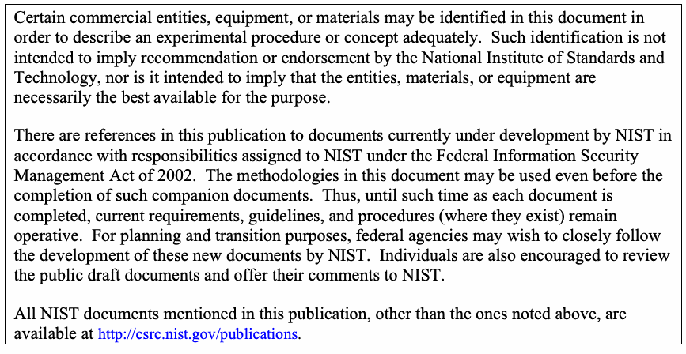
National Institute of Standards and Technology Special Publication 800-34 Natl. Inst. Stand. Technol. Spec. Publ. 800-34, 150 pages (May 2010) CODEN: NSPUE2
米国国立標準技術研究所 特別刊行物800-34 Natl. Inst. Stand. Technol. Spec. Publ. 800-34、150ページ（2010年五月）CODEN: NSPUE2
未レビュー訳Reports on Computer Systems Technology
コンピュータシステム技術に関する報告
The Information Technology Laboratory (ITL) at the National Institute of Standards and Technology (NIST) promotes the U.S. economy and public welfare by providing technical leadership for the nation’s measurement and standards infrastructure. ITL develops tests, test methods, reference data, proof of concept implementations, and technical analysis to advance the development and productive use of information technology. ITL’s responsibilities include the development of technical, physical, administrative, and management standards and guidelines for the cost-effective security and privacy of sensitive unclassified information in federal computer systems. This Special Publication 800-series reports on ITL’s research, guidance, and outreach efforts in computer security and its collaborative activities with industry, government, and academic organizations.
米国国立標準技術研究所（NIST）の情報技術研究所（ITL）は、国の計測・標準インフラに技術的リーダーシップを提供することで、米国経済と公共の福祉を促進している。ITLは、情報技術の開発と生産的利用を推進するため、試験、試験方法、参照データ、概念実証実装および技術分析を開発する。ITLの責任には、連邦政府のコンピュータシステムにおける機微な非機密情報の費用対効果の高いセキュリティとプライバシーを確保するための、技術的、物理的、管理的および運営上の標準とガイドラインの策定が含まれる。この特別刊行物800シリーズは、コンピュータセキュリティに関するITLの研究、ガイダンスおよび普及活動、ならびに産業界、政府および学術機関との協力活動を報告する。
未レビュー訳Authority
権限
未レビュー訳This document has been developed by the National Institute of Standards and Technology (NIST) in furtherance of its statutory responsibilities under the Federal Information Security Management Act (FISMA) of 2002, Public Law 107-347.
本書は、2002年連邦情報セキュリティ管理法（FISMA）、公法107-347に基づく法定責任を遂行するため、米国国立標準技術研究所（NIST）が策定した。
NIST is responsible for developing standards and guidelines, including minimum requirements, for providing adequate information security for all agency operations and assets, but such standards and guidelines shall not apply to national security systems. This guideline is consistent with the requirements of the Office of Management and Budget (OMB) Circular A-130, Section 8b(3), “Securing Agency Information Systems,” as analyzed in A-130, Appendix IV: Analysis of Key Sections. Supplemental information is provided in A-130, Appendix III.
NISTは、すべての機関の業務および資産に適切な情報セキュリティを提供するため、最低要件を含む標準およびガイドラインを策定する責任を負う。ただし、このような標準およびガイドラインは国家安全保障システムには適用されない。本ガイドラインは、行政管理予算局（OMB）通達A-130第8b(3)項「機関情報システムの保護」の要件と整合しており、その分析はA-130付属書IV「主要条項の分析」に示されている。補足情報はA-130付属書IIIに記載されている。
未レビュー訳This guideline has been prepared for use by federal agencies. It may be used by nongovernmental organizations on a voluntary basis and is not subject to copyright. Attribution would be appreciated by NIST.
本ガイドラインは連邦機関が使用するために作成された。非政府組織も任意で使用でき、著作権の対象ではない。NISTの出典表示を歓迎する。
Nothing in this document should be taken to contradict standards and guidelines made mandatory and binding on federal agencies by the Secretary of Commerce under statutory authority. Nor should these guidelines be interpreted as altering or superseding the existing authorities of the Secretary of Commerce, Director of the OMB, or any other federal official.
本書のいかなる内容も、法定権限に基づき商務長官が連邦機関に義務付け、拘束力を持たせた標準およびガイドラインに反するものと解釈してはならない。また、本ガイドラインは、商務長官、OMB長官またはその他の連邦政府職員が有する既存の権限を変更または置き換えるものと解釈してはならない。
未レビュー訳NIST Special Publication 800-34, Revision 1, 150 pages
NIST特別刊行物800-34、改訂第1版、150ページ
未レビュー訳(May 2010)
（2010年五月）
未レビュー訳National Institute of Standards and Technology Attn: Computer Security Division, Information Technology Laboratory 100 Bureau Drive (Mail Stop 8930) Gaithersburg, MD 20899-8930
米国国立標準技術研究所 宛先：コンピュータセキュリティ部門、情報技術研究所 100 Bureau Drive（Mail Stop 8930）Gaithersburg, MD 20899-8930
未レビュー訳Compliance with NIST Standards and Guidelines
NIST標準およびガイドラインへの準拠
未レビュー訳NIST develops and issues standards, guidelines, and other publications to assist federal agencies in implementing the Federal Information Security Management Act (FISMA) of 2002 and in managing cost-effective programs to protect their information and information systems.
NISTは、連邦機関が2002年連邦情報セキュリティ管理法（FISMA）を実施し、情報および情報システムを保護する費用対効果の高いプログラムを管理できるよう、標準、ガイドラインおよびその他の刊行物を策定・発行する。
未レビュー訳•Federal Information Processing Standards (FIPS) are developed by NIST in accordance with FISMA. FIPS are approved by the Secretary of Commerce and are compulsory and binding for federal agencies. Since FISMA requires that federal agencies comply with these standards, agencies may not waive their use.
•連邦情報処理標準（FIPS）は、FISMAに従ってNISTが策定する。FIPSは商務長官が承認し、連邦機関にとって義務的かつ拘束力を持つ。FISMAは連邦機関にこれらの標準への準拠を求めるため、機関はその適用を免除できない。
未レビュー訳•Guidance documents and recommendations are issued in the NIST Special Publication (SP) 800-series. Office of Management and Budget (OMB) policies (including OMB FISMA Reporting Instructions for the Federal Information Security Management Act and Agency Privacy Management) state that, for other than national security programs and systems, agencies must follow NIST guidance.1
•ガイダンス文書および勧告は、NIST特別刊行物（SP）800シリーズとして発行される。行政管理予算局（OMB）の方針（連邦情報セキュリティ管理法および機関のプライバシー管理に関するOMB FISMA報告指示を含む）は、国家安全保障プログラムおよびシステム以外について、機関はNISTのガイダンスに従わなければならないと定めている。1
未レビュー訳•Other security-related publications, including NIST interagency and internal reports (NISTIRs) and ITL Bulletins, provide technical and other information about NIST’s activities. These publications are mandatory only when so specified by OMB.
•NISTの省庁間報告書および内部報告書（NISTIR）やITL速報など、その他のセキュリティ関連刊行物は、NISTの活動に関する技術情報その他の情報を提供する。これらの刊行物は、OMBが指定した場合に限り義務となる。
Acknowledgements
謝辞
未レビュー訳The authors, Marianne Swanson and Pauline Bowen of the National Institute of Standards and Technology (NIST), Amy Wohl Phillips, Dean Gallup, and David Lynes of Booz Allen Hamilton, wish to thank their colleagues who reviewed drafts of this document and contributed to its technical content. The authors would like to acknowledge Kelley Dempsey, Esther Katzman, Peter Mell, Murugiah Souppaya, Lee Badger, and Elizabeth Lennon of NIST, and David Linthicum of Booz Allen Hamilton for their keen and insightful assistance with technical issues throughout the development of the document.
著者である米国国立標準技術研究所（NIST）のMarianne SwansonおよびPauline Bowen、ならびにBooz Allen HamiltonのAmy Wohl Phillips、Dean GallupおよびDavid Lynesは、本書の草稿を査読し、技術的内容に貢献した同僚に謝意を表する。著者は、本書の策定全体を通じて技術的課題に関し鋭く洞察に富む支援を提供したNISTのKelley Dempsey、Esther Katzman、Peter Mell、Murugiah Souppaya、Lee BadgerおよびElizabeth Lennon、ならびにBooz Allen HamiltonのDavid Linthicumに謝意を表する。
Table of Contents
目次
Executive Summary — 1
エグゼクティブサマリー — 1
未レビュー訳Chapter 1. Introduction — 1
第1章 はじめに — 1
1.1 Purpose — 1
1.1 目的 — 1
1.2 Scope — 2
1.2 適用範囲 — 2
未レビュー訳1.3 Audience — 3
1.3 対象読者 — 3
1.4 Document Structure — 4
1.4 文書の構成 — 4
Chapter 2. Background — 5
第2章 背景 — 5
2.1 Contingency Planning and Resilience — 5
2.1 緊急時対応計画策定とレジリエンス — 5
2.2 Types of Plans — 7
2.2 計画の種類 — 7
2.2.1 Business Continuity Plan (BCP) — 8
2.2.1 事業継続計画（BCP）— 8
2.2.2 Continuity of Operations (COOP) Plan — 8
2.2.2 業務継続計画（COOP）— 8
2.2.3 Crisis Communications Plan — 9
2.2.3 危機時コミュニケーション計画 — 9
2.2.4 Critical Infrastructure Protection (CIP) Plan — 9
2.2.4 重要インフラ保護計画（CIP）— 9
2.2.5 Cyber Incident Response Plan — 10
2.2.5 サイバーインシデント対応計画 — 10
2.2.6 Disaster Recovery Plan (DRP) — 10
2.2.6 災害復旧計画（DRP）— 10
未レビュー訳2.2.7 Information System Contingency Plan (ISCP) — 10
2.2.7 情報システム緊急時対応計画（ISCP）— 10
未レビュー訳2.2.8 Occupant Emergency Plan (OEP) — 10
2.2.8 在館者緊急時対応計画（OEP）— 10
未レビュー訳Chapter 3. Information System Contingency Planning Process — 13
第3章 情報システム緊急時対応計画策定プロセス — 13
3.1 Develop the Contingency Planning Policy Statement — 14
3.1 緊急時対応計画策定の方針書を作成する — 14
3.2 Conduct the Business Impact Analysis (BIA) — 15
3.2 事業影響分析（BIA）を実施する — 15
3.2.1 Determine Business Processes and Recovery Criticality — 16
3.2.1 事業プロセスと復旧上の重要度を特定する — 16
3.2.2 Identify Resource Requirements — 19
3.2.2 リソース要件を特定する — 19
3.2.3 Identify System Resource Recovery Priorities — 19
3.2.3 システムリソース復旧の優先順位を特定する — 19
3.3 Identify Preventive Controls — 19
3.3 予防的管理策を特定する — 19
未レビュー訳3.4 Create Contingency Strategies — 20
3.4 緊急時対応戦略を策定する — 20
3.4.1 Backup and Recovery — 20
3.4.1 バックアップと復旧 — 20
3.4.2 Backup Methods and Offsite Storage — 21
3.4.2 バックアップ方式と遠隔地保管 — 21
3.4.3 Alternate Sites — 21
3.4.3 代替サイト — 21
3.4.4 Equipment Replacement — 24
3.4.4 機器の交換 — 24
3.4.5 Cost Considerations — 25
3.4.5 コスト上の考慮事項 — 25
3.4.6 Roles and Responsibilities — 26
3.4.6 役割と責任 — 26
3.5 Plan Testing, Training, and Exercises (TT&E) — 27
3.5 計画のテスト、訓練、演習（TT&E）— 27
3.5.1 Testing — 27
3.5.1 テスト — 27
3.5.2 Training — 28
3.5.2 訓練 — 28
3.5.3 Exercises — 29
3.5.3 演習 — 29
3.5.4 TT&E Program Summary — 29
3.5.4 TT&Eプログラムの概要 — 29
3.6 Plan Maintenance — 31
3.6 計画の保守 — 31
Chapter 4. Information System Contingency Plan Development — 34
第4章 情報システム緊急時対応計画の策定 — 34
未レビュー訳4.1 Supporting Information — 35
4.1 補足情報 — 35
4.2 Activation and Notification Phase — 36
4.2 発動・通知フェーズ — 36
4.2.1 Activation Criteria and Procedure — 36
4.2.1 発動基準と手順 — 36
4.2.2 Notification Procedures — 36
4.2.2 通知手順 — 36
4.2.3 Outage Assessment — 38
4.2.3 停止状況の評価 — 38
未レビュー訳4.3 Recovery Phase — 39
4.3 復旧フェーズ — 39
4.3.1 Sequence of Recovery Activities — 39
4.3.1 復旧活動の順序 — 39
未レビュー訳4.3.2 Recovery Procedures — 39
4.3.2 復旧手順 — 39
未レビュー訳4.3.3 Recovery Escalation and Notification — 40
4.3.3 復旧のエスカレーションと通知 — 40
4.4 Reconstitution Phase — 41
4.4 再構成フェーズ — 41
4.5 Plan Appendices — 42
4.5 計画の付属資料 — 42
Chapter 5. Technical Contingency Planning Considerations — 43
第5章 技術的な緊急時対応計画策定に関する考慮事項 — 43
未レビュー訳5.1 Common Considerations — 43
5.1 共通の考慮事項 — 43
5.1.1 Use of the BIA — 44
5.1.1 BIAの利用 — 44
5.1.2 Maintenance of Data Security, Integrity, and Backup — 44
5.1.2 データのセキュリティ、完全性およびバックアップの維持 — 44
5.1.3 Protection of Resources — 46
5.1.3 リソースの保護 — 46
5.1.4 Adherence to Security Controls — 46
5.1.4 セキュリティ管理策の遵守 — 46
5.1.5 Identification of Alternate Storage and Processing Facilities — 46
5.1.5 代替の保管・処理施設の特定 — 46
5.1.6 Use of High Availability (HA) Processes — 48
5.1.6 高可用性（HA）プロセスの利用 — 48
5.2 Client/Server Systems — 48
5.2 クライアント／サーバーシステム — 48
未レビュー訳5.2.1 Client/Server Systems Contingency Considerations — 49
5.2.1 クライアント／サーバーシステムの緊急時対応に関する考慮事項 — 49
未レビュー訳5.2.2 Client/Server Systems Contingency Solutions — 51
5.2.2 クライアント／サーバーシステムの緊急時対応策 — 51
5.3 Telecommunications Systems — 52
5.3 電気通信システム — 52
未レビュー訳5.3.1 Telecommunications Contingency Considerations — 53
5.3.1 電気通信システムの緊急時対応に関する考慮事項 — 53
5.3.2 Telecommunications Contingency Solutions — 54
5.3.2 電気通信システムの緊急時対応策 — 54
5.4 Mainframe Systems — 56
5.4 メインフレームシステム — 56
未レビュー訳5.4.1 Mainframe Contingency Considerations — 56
5.4.1 メインフレームの緊急時対応に関する考慮事項 — 56
5.4.2 Mainframe Contingency Solutions — 56
5.4.2 メインフレームの緊急時対応策 — 56
5.5 System Contingency Planning Considerations Summary — 57
5.5 システム緊急時対応計画策定に関する考慮事項の概要 — 57
未レビュー訳Appendix A— Sample Information System Contingency Plan Templates..................... A.1-1
付録A — 情報システム緊急時対応計画のサンプルテンプレート — A.1-1
未レビュー訳A.1 Sample Template for Low-Impact Systems....................................................... A.1-1
A.1 低影響システム向けサンプルテンプレート — A.1-1
未レビュー訳A.2 Sample Template for Moderate-Impact Systems .............................................. A.2-1
A.2 中影響システム向けサンプルテンプレート — A.2-1
未レビュー訳A.3 Sample Template for High-Impact Systems...................................................... A.3-1
A.3 高影響システム向けサンプルテンプレート — A.3-1
未レビュー訳Appendix B— Sample Business Impact Analysis (BIA) and BIA Template ...................... B-1
付録B — 事業影響分析（BIA）のサンプルとBIAテンプレート — B-1
未レビュー訳Appendix C— Frequently Asked Questions......................................................................... C-1
付録C — よくある質問 — C-1
未レビュー訳Appendix D— Personnel Considerations in Continuity and Contingency Planning........ D-1
付録D — 継続・緊急時対応計画策定における要員に関する考慮事項 — D-1
未レビュー訳Appendix E— Contingency Planning Controls.................................................................... E-1
付録E — 緊急時対応計画策定の管理策 — E-1
未レビュー訳Appendix F— Contingency Planning and the System Development Life Cycle (SDLC).. F-1
付録F — 緊急時対応計画策定とシステム開発ライフサイクル（SDLC）— F-1
未レビュー訳Appendix G— Glossary..........................................................................................................G-1
付録G — 用語集 — G-1
未レビュー訳Appendix H— Acronyms........................................................................................................ H-1
付録H — 略語 — H-1
未レビュー訳Appendix I— Resources...........................................................................................................I-1
付録I — リソース — I-1
未レビュー訳List of Figures
図一覧
未レビュー訳Figure 2-1: Contingency-Related Plan Relationships — 12
図2-1：緊急時対応計画に関連する計画間の関係 — 12
未レビュー訳Figure 3-1: Contingency Planning Process — 13
図3-1：緊急時対応計画策定プロセス — 13
未レビュー訳Figure 3-2: Business Impact Analysis Process for the Information System — 16
図3-2：情報システムの事業影響分析プロセス — 16
未レビュー訳Figure 3-3: Cost Balancing — 18
図3-3：コストのバランス調整 — 18
未レビュー訳Figure 4-1: Contingency Plan Structure — 34
図4-1：緊急時対応計画の構成 — 34
未レビュー訳Figure 4-2: Sample Call Tree — 37
図4-2：連絡網の例 — 37
未レビュー訳Figure 4-3: Sample Recovery Process — 40
図4-3：復旧プロセスの例 — 40
未レビュー訳Figure F-1: System Development Life Cycle ........................................................................... F-1
図F-1：システム開発ライフサイクル — F-1
未レビュー訳List of Tables
表一覧
未レビュー訳Table 2-1: Summary of NIST SP 800-53 Contingency Planning Controls for Low-, Moderate-, and High-Impact Systems of Contingency-Related Plans — 7
表2-1：低・中・高影響システム向けNIST SP 800-53緊急時対応計画管理策の概要、緊急時対応関連計画 — 7
Table 2-2: Type of Plans — 11
表2-2：計画の種類 — 11
未レビュー訳Table 3-1: Information System Resource/Component Table — 19
表3-1：情報システムのリソース／コンポーネント表 — 19
未レビュー訳Table 3-2: FIPS 199 Category Backup & Strategy Examples — 20
表3-2：FIPS 199のカテゴリ別バックアップと戦略の例 — 20
未レビュー訳Table 3-3: Sample Alternate Site Criteria — 23
表3-3：代替サイト基準の例 — 23
未レビュー訳Table 3-4: Contingency Strategy Budget Planning Template — 25
表3-4：緊急時対応戦略の予算計画テンプレート — 25
未レビュー訳Table 3-5: ISCP TT&E Activities — 30
表3-5：ISCPのテスト・訓練・演習（TT&E）活動 — 30
未レビュー訳Table 3-6: Sample Record of Changes — 32
表3-6：変更記録の例 — 32
Table 5-1: Summary — 58
表5-1：概要 — 58
未レビュー訳Table E-1: Summary of NIST SP 800-53 Contingency Planning Controls for Low-, Moderate- and High- Impact Systems of Contingency-Related Plans — E-1
表E-1：低・中・高影響システム向けNIST SP 800-53緊急時対応計画管理策の概要、緊急時対応関連計画 — E-1
Table F-1: CP Control Implementation in the SDLC ................................................................ F-4
表F-1：SDLCにおけるCP管理策の実装 — F-4
未レビュー訳Errata The following changes have been incorporated into Special Publication 800-34, Revision 1, as of the date
正誤表 以下の変更は、次の日付時点でSpecial Publication 800-34 Revision 1に反映されている。
未レビュー訳indicated in the table.
その日付を表に示す。
未レビュー訳| DATE | TYPE | CHANGE | PAGE NUMBER |
| 5/21/2010 | Editorial | Remove hyphenation from “Wohl Phillips” | v |
| 5/21/2010 | Editorial | Change “mission/business functions” to “mission/business processes” | ES-1, 1, 2, 3, 7, 8, 10, 11, 13, 15, 16, 18, 19, 20, 21, 40, 44, 47, 48, 56 A.1- 4, A.2-4, A.3-4, B- 1, B-2, B-3, B-4, C- 1, C-2, C-3, C-4, E- 2, F-2, G-1, G-2 |
| 5/21/2010 | Editorial | Remove hyphenation from “mission essential” | 2, 5, 8, C-1, G-1, H-2 |
| 5/21/2010 | Editorial | Correct number of Contingency Planning security controls to 9 | 6 |
| 5/21/2010 | Editorial | Change “information system contingency plan” to “ISCP” | 10 |
| 5/21/2010 | Editorial | Change caption from “Plan Types” to “Types of Plans” | 11 |
| 5/21/2010 | Editorial | Change “mission essential functions” to “MEFs” | 11, C-1, C-2 |
| 5/21/2010 | Substantive | Clarify the relationship between Mean Tolerable Downtime and Recovery Point Objective | 17 |
| 5/21/2010 | Editorial | Change “continuity planners” to “contingency planners” | 17 |
| 5/21/2010 | Editorial | Change “missions” to “mission” | 20 |
| 5/21/2010 | Substantive | Add “and scope” to the description of system backup policies specifications | 21 |
| 5/21/2010 | Editorial | Change “Information Systems Planning” to “ISCP” in footnote | 21 |
| 5/21/2010 | Editorial | Change “applications” to “systems” | 23, B-4 |
| 5/21/2010 | Editorial | Change “information technology systems” to “information systems” | 24, C-1 |
| 5/21/2010 | Editorial | Change “Special Publication” to “SP” | 30 |
| 5/21/2010 | Substantive | Clarify the Contingency Plan Test/Exercise requirement for Contingency Plan Control-4 (CP-4). Change “All” to “Low Impact = Yes Mod. Impact = Yes High Impact = Yes” | 30 |
| 5/21/2010 | Substantive | Add Contingency Plan Control-4 (CP-4) to the Alternate Processing Site Recovery event; Change Moderate Impact requirement from “Yes” to “N/A” | 30 |
| 5/21/2010 | Editorial | Add commas around “as part of the organization’s change management process” in the plan maintenance description of reviewing and updating the ISCP | 31 |
| 5/21/2010 | Editorial | Figure 4-2, Sample Call Tree, align and remove shadow | 37 |
| 5/21/2010 | Editorial | Remove “and applications” from the Sequence of Recovery Activities | 39 |
原本PDFの抜粋画像
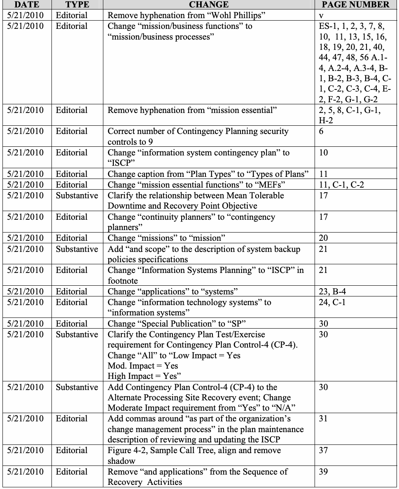
| 日付 | 種類 | 変更内容 | ページ番号 |
| 5/21/2010 | 編集上 | 「Wohl Phillips」の単語内ハイフンを削除 | v |
| 5/21/2010 | 編集上 | 「mission/business functions」を「mission/business processes」に変更 | ES-1, 1, 2, 3, 7, 8, 10, 11, 13, 15, 16, 18, 19, 20, 21, 40, 44, 47, 48, 56 A.1- 4, A.2-4, A.3-4, B- 1, B-2, B-3, B-4, C- 1, C-2, C-3, C-4, E- 2, F-2, G-1, G-2 |
| 5/21/2010 | 編集上 | 「mission essential」の単語内ハイフンを削除 | 2, 5, 8, C-1, G-1, H-2 |
| 5/21/2010 | 編集上 | 緊急時対応計画策定のセキュリティ管理策の数を9に修正 | 6 |
| 5/21/2010 | 編集上 | 「information system contingency plan」を「ISCP」に変更 | 10 |
| 5/21/2010 | 編集上 | キャプションの「Plan Types」を「Types of Plans」に変更 | 11 |
| 5/21/2010 | 編集上 | 「mission essential functions」を「MEFs」に変更 | 11, C-1, C-2 |
| 5/21/2010 | 実質的 | 平均許容停止時間（MTD）と復旧時点目標（RPO）の関係を明確化 | 17 |
| 5/21/2010 | 編集上 | 「continuity planners」を「contingency planners」に変更 | 17 |
| 5/21/2010 | 編集上 | 「missions」を「mission」に変更 | 20 |
| 5/21/2010 | 実質的 | システムのバックアップポリシー仕様の説明に「and scope」を追加 | 21 |
| 5/21/2010 | 編集上 | 脚注の「Information Systems Planning」を「ISCP」に変更 | 21 |
| 5/21/2010 | 編集上 | 「applications」を「systems」に変更 | 23, B-4 |
| 5/21/2010 | 編集上 | 「information technology systems」を「information systems」に変更 | 24, C-1 |
| 5/21/2010 | 編集上 | 「Special Publication」を「SP」に変更 | 30 |
| 5/21/2010 | 実質的 | 緊急時対応計画管理策CP-4のテスト／演習要件を明確化。「All」を「Low Impact = Yes、Mod. Impact = Yes、High Impact = Yes」に変更 | 30 |
| 5/21/2010 | 実質的 | 代替処理サイトの復旧イベントに緊急時対応計画管理策CP-4を追加。中影響システムの要件を「Yes」から「N/A」に変更 | 30 |
| 5/21/2010 | 編集上 | ISCPのレビューおよび更新に関する計画保守の説明で、「as part of the organization’s change management process」をコンマで囲む | 31 |
| 5/21/2010 | 編集上 | 図4-2「連絡網の例」を整列し、影を削除 | 37 |
| 5/21/2010 | 編集上 | 「復旧活動の順序」から「and applications」を削除 | 39 |
| DATE | TYPE | CHANGE | PAGE NUMBER |
| 5/21/2010 | Editorial | Change “backup application” to “backup solution” in the description of Backup Software | 45 |
| 5/21/2010 | Editorial | Change “discloser” to “disclosure” | 46 |
| 5/21/2010 | Editorial | Remove “major applications and general support” from system description | 54 |
| 5/21/2010 | Editorial | Change “Mission, National, or Primary Essential Functions” to “Mission, Primary, or National Essential Functions” | 54 |
| 5/21/2010 | Substantive | Spell out “ISDN” as “Integrated Services Digital Network (ISDN)”; add “with a bandwith of 128Kbps” for clarification | 55 |
| 5/21/2010 | Editorial | Change “Information System Contingency Plan (ISCP)” to “ISCP” | A.1-4, A.2-4, A.3- 4, B-1, D-1 |
| 5/21/2010 | Editorial | Change “Contingency Plan” to “ISCP” | A.1-5, A.3-5 |
| 5/21/2010 | Editorial | Change “contingency plan coordinator” to “ISCP Coordinator” | A.1-7, A.2-7, A.3-7 |
| 5/21/2010 | Editorial | Change “be needed” to “need” | A.1-7, A.2-7, A.3-7 |
| 5/21/2010 | Editorial | Change “Section 4.1 of the plan” to “Section 4.2.1 of this plan”, in reference to location of system functions | A.1-7, A.2-7, A.3-7 |
| 5/21/2010 | Substantive | Add to directions for Recovery Procedures “If an alternate location is part of the recovery strategy, include procedures for recovery to that site.” | A.1-8 |
| 5/21/2010 | Editorial | Correct section numbering starting at 5.6 | A.1-9 |
| 5/21/2010 | Editorial | Change “System Validation Test Plan” to “system validation test plan” in Appendix E | A.1-12, A.2-12, A.3-12 |
| 5/21/2010 | Substantial | Clarify “at least yearly” to “at the organization defined frequency (e.g., yearly)” | A.1-13, A.2-14, A.3-15 |
| 5/21/2010 | Editorial | Change “and exercise and questions” to “and an exercise and questions” | A.1-13, A.2-14, A.3-15 |
| 5/21/2010 | Editorial | Correct reference number to Offsite Data Storage | A.2-9, A.3-10 |
| 5/21/2010 | Substantive | Remove “For moderate impact systems, a yearly functional test is required.” This is not a requirement. | A.2-14 |
| 5/21/2010 | Substantive | Remove “For high impact systems, a yearly functional test is required.” This is not a requirement. | A.3-15 |
| 5/21/2010 | Substantive | Change “Incident Response Plan (IRP)” to “Cyber Incident Response Plan” | B-1 |
| 5/21/2010 | Editorial | Add “Information System Contingency Plan” | B-1 |
| 5/21/2010 | Editorial | Change “operation/maintenance” to “Operation/Maintenance” | C-2 |
| 5/21/2010 | Editorial | Change “Business Impact Analysis (BIA)” to “BIA” | C-2 |
| 5/21/2010 | Editorial | Change “Primary Mission Essential Functions” to “primary mission essential functions” | C-3 |
| 5/21/2010 | Editorial | Add “(MTD)” after “mean tolerable downtime” | C-3 |
| 5/21/2010 | Editorial | Add “and Contingency” to the Appendix title | D-1 |
| 5/21/2010 | Editorial | Add “(BCP) after “business continuity plan” | D-1 |
| 11/11/2010 | Substantive | Replaced Section 5.2 with Data Functionality Testing template text and direction. Previous text was a repeat of Section 5.3. | A.3-8 |
原本PDFの抜粋画像
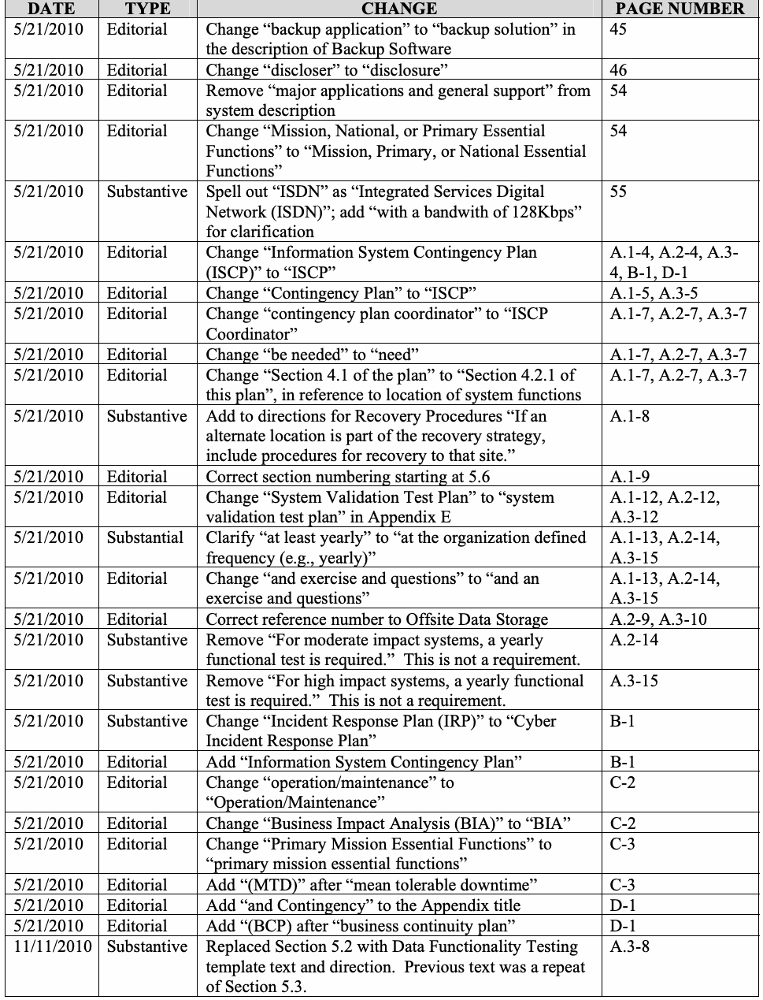
| 日付 | 種類 | 変更内容 | ページ番号 |
| 5/21/2010 | 編集上 | バックアップソフトウェアの説明で「backup application」を「backup solution」に変更 | 45 |
| 5/21/2010 | 編集上 | 「discloser」を「disclosure」に変更 | 46 |
| 5/21/2010 | 編集上 | システムの説明から「major applications and general support」を削除 | 54 |
| 5/21/2010 | 編集上 | 「Mission, National, or Primary Essential Functions」を「Mission, Primary, or National Essential Functions」に変更 | 54 |
| 5/21/2010 | 実質的 | 「ISDN」を「Integrated Services Digital Network (ISDN)」と正式名称で記載し、明確化のため「with a bandwidth of 128Kbps」を追加 | 55 |
| 5/21/2010 | 編集上 | 「Information System Contingency Plan (ISCP)」を「ISCP」に変更 | A.1-4, A.2-4, A.3- 4, B-1, D-1 |
| 5/21/2010 | 編集上 | 「Contingency Plan」を「ISCP」に変更 | A.1-5, A.3-5 |
| 5/21/2010 | 編集上 | 「contingency plan coordinator」を「ISCP Coordinator」に変更 | A.1-7, A.2-7, A.3-7 |
| 5/21/2010 | 編集上 | 「be needed」を「need」に変更 | A.1-7, A.2-7, A.3-7 |
| 5/21/2010 | 編集上 | システム機能の記載箇所を指す参照について、「Section 4.1 of the plan」を「Section 4.2.1 of this plan」に変更 | A.1-7, A.2-7, A.3-7 |
| 5/21/2010 | 実質的 | 復旧手順の指示に「If an alternate location is part of the recovery strategy, include procedures for recovery to that site.」を追加 | A.1-8 |
| 5/21/2010 | 編集上 | 5.6以降の節番号を修正 | A.1-9 |
| 5/21/2010 | 編集上 | 付録Eの「System Validation Test Plan」を「system validation test plan」に変更 | A.1-12, A.2-12, A.3-12 |
| 5/21/2010 | 実質的 | 「at least yearly」を「at the organization defined frequency (e.g., yearly)」に明確化 | A.1-13, A.2-14, A.3-15 |
| 5/21/2010 | 編集上 | 「and exercise and questions」を「and an exercise and questions」に変更 | A.1-13, A.2-14, A.3-15 |
| 5/21/2010 | 編集上 | Offsite Data Storageの参照番号を修正 | A.2-9, A.3-10 |
| 5/21/2010 | 実質的 | 「For moderate impact systems, a yearly functional test is required.」を削除。この内容は要件ではない。 | A.2-14 |
| 5/21/2010 | 実質的 | 「For high impact systems, a yearly functional test is required.」を削除。この内容は要件ではない。 | A.3-15 |
| 5/21/2010 | 実質的 | 「Incident Response Plan (IRP)」を「Cyber Incident Response Plan」に変更 | B-1 |
| 5/21/2010 | 編集上 | 「Information System Contingency Plan」を追加 | B-1 |
| 5/21/2010 | 編集上 | 「operation/maintenance」を「Operation/Maintenance」に変更 | C-2 |
| 5/21/2010 | 編集上 | 「Business Impact Analysis (BIA)」を「BIA」に変更 | C-2 |
| 5/21/2010 | 編集上 | 「Primary Mission Essential Functions」を「primary mission essential functions」に変更 | C-3 |
| 5/21/2010 | 編集上 | 「mean tolerable downtime」の後に「(MTD)」を追加 | C-3 |
| 5/21/2010 | 編集上 | 付録のタイトルに「and Contingency」を追加 | D-1 |
| 5/21/2010 | 編集上 | 「business continuity plan」の後に「(BCP)」を追加 | D-1 |
| 11/11/2010 | 実質的 | 第5.2節をデータ機能テストのテンプレート文と指示に置き換え。以前の文は第5.3節の繰り返しだった。 | A.3-8 |
Executive Summary
エグゼクティブサマリー
未レビュー訳NIST Special Publication 800-34, Rev. 1, Contingency Planning Guide for Federal Information Systems, provides instructions, recommendations, and considerations for federal information system contingency planning. Contingency planning refers to interim measures to recover information system services after a disruption. Interim measures may include relocation of information systems and operations to an alternate site, recovery of information system functions using alternate equipment, or performance of information system functions using manual methods. This guide addresses specific contingency planning recommendations for three platform types and provides strategies and techniques common to all systems.
NIST Special Publication 800-34 Rev.1『連邦情報システムの緊急時対応計画策定ガイド』は、連邦情報システムの緊急時対応計画策定に関する指示、推奨事項および考慮事項を示す。緊急時対応計画策定とは、サービス中断後に情報システムのサービスを復旧するための暫定措置を指す。暫定措置には、情報システムと運用を代替サイトへ移転すること、代替機器を用いて情報システムの機能を復旧すること、または手作業で情報システムの機能を実行することが含まれる。本ガイドは、3種類のプラットフォームに固有の緊急時対応計画策定の推奨事項を扱い、すべてのシステムに共通する戦略と手法も示す。
(cid:131) Client/server systems; (cid:131) Telecommunications systems; and (cid:131) Mainframe systems. This guide defines the following seven-step contingency planning process that an organization may apply to develop and maintain a viable contingency planning program for their information systems. These seven progressive steps are designed to be integrated into each stage of the system development life cycle.
• クライアント／サーバーシステム • 電気通信システム • メインフレームシステム。本ガイドでは、組織が情報システム向けの実効性ある緊急時対応計画策定プログラムを作成・維持する際に適用できる、次の7段階のプロセスを定める。この段階的な7つのステップは、システム開発ライフサイクルの各段階に組み込むよう設計されている。
未レビュー訳1. Develop the contingency planning policy statement. A formal policy provides the authority
1. 緊急時対応計画策定方針を作成する。正式な方針は、効果的な緊急時対応計画を策定する権限
未レビュー訳and guidance necessary to develop an effective contingency plan.
および必要な指針を与える。
未レビュー訳2.Conduct the business impact analysis (BIA). The BIA helps identify and prioritize information systems and components critical to supporting the organization’s mission/business processes. A template for developing the BIA is provided to assist the user.
2.2. 事業影響分析（BIA）を実施する。BIAは、組織のミッション／事業プロセスを支える上で重要な情報システムとコンポーネントを特定し、優先順位を付けるのに役立つ。利用者を支援するため、BIAを作成するテンプレートを用意している。
未レビュー訳3.Identify preventive controls. Measures taken to reduce the effects of system disruptions can increase system availability and reduce contingency life cycle costs.
3.3. 予防的管理策を特定する。システム障害の影響を軽減する措置により、システムの可用性を高め、緊急時対応のライフサイクルコストを削減できる。
4.Create contingency strategies. Thorough recovery strategies ensure that the system may be recovered quickly and effectively following a disruption.
4.4. 緊急時対応戦略を策定する。十分な復旧戦略を用意することで、障害後にシステムを迅速かつ効果的に復旧できる。
5. Develop an information system contingency plan. The contingency plan should contain
5. 情報システム緊急時対応計画を策定する。この計画には、
未レビュー訳detailed guidance and procedures for restoring a damaged system unique to the system’s security impact level and recovery requirements.
システムのセキュリティ影響度と復旧要件に応じた、損傷したシステムを復元するための詳細な指針と手順を記載する。
未レビュー訳6.Ensure plan testing, training, and exercises. Testing validates recovery capabilities, whereas training prepares recovery personnel for plan activation and exercising the plan identifies planning gaps; combined, the activities improve plan effectiveness and overall organization preparedness.
6.6. 計画のテスト、訓練、演習を確実に行う。テストは復旧能力を検証し、訓練は復旧担当者が計画を発動する準備を整える。計画の演習によって策定上の欠落が明らかになる。これらの活動を組み合わせることで、計画の有効性と組織全体の備えが向上する。
7.Ensure plan maintenance. The plan should be a living document that is updated regularly to remain current with system enhancements and organizational changes.
7.7. 計画を維持する。計画は、システムの強化や組織の変更に対応できるよう、定期的に更新する生きた文書であるべきである。
This guide presents three sample formats for developing an information system contingency plan based on low-, moderate-, or high-impact level, as defined by Federal Information Processing Standard (FIPS) 199, Standards for Security Categorization of Federal Information and Information Systems. Each format defines three phases that govern actions to be taken following a system disruption. The Activation/Notification Phase describes the process of activating the plan based on outage impacts and notifying recovery personnel. The Recovery Phase details a suggested course of action for recovery teams to restore system operations at an alternate site or using contingency capabilities. The final phase, Reconstitution, includes activities to test and validate system capability and functionality and outlines actions that can be taken to return the system to normal operating condition and prepare the system against future outages.
本ガイドは、Federal Information Processing Standard（FIPS）199 Standards for Security Categorization of Federal Information and Information Systems（連邦情報および情報システムのセキュリティカテゴリ化規格）で定義される低・中・高の影響度に基づき、情報システム緊急時対応計画を作成するための3種類のサンプル形式を示す。各形式は、システムの中断後に取るべき措置を規定する3つのフェーズを定義する。発動／通知フェーズでは、停止の影響に基づいて計画を発動し、復旧担当者に通知するプロセスを説明する。復旧フェーズでは、代替サイトで、または緊急時対応機能を用いてシステム運用を復旧するために、復旧チームに推奨する行動方針を詳述する。最後のフェーズである再構成には、システムの能力と機能をテストし妥当性を確認する活動が含まれ、システムを通常の運用状態に戻し、将来の停止に備えるために取ることのできる措置の概要を示す。
Chapter 1. Introduction
第1章 はじめに
未レビュー訳Information systems are vital elements in most mission/business processes. Because information system resources are so essential to an organization’s success, it is critical that identified services provided by these systems are able to operate effectively without excessive interruption. Contingency planning supports this requirement by establishing thorough plans, procedures, and technical measures that can enable a system to be recovered as quickly and effectively as possible following a service disruption. Contingency planning is unique to each system, providing preventive measures, recovery strategies, and technical considerations appropriate to the system’s information confidentiality, integrity, and availability requirements and the system impact level.
情報システムは、ほとんどのミッション／事業プロセスに不可欠な要素である。情報システムのリソースは組織の成功に極めて重要であるため、システムが提供する特定のサービスを、過度な中断なく効果的に運用できることが重要となる。緊急時対応計画策定は、サービス中断後にシステムを可能な限り迅速かつ効果的に復旧できるよう、包括的な計画、手順、技術的措置を整備してこの要件を支える。緊急時対応計画策定はシステムごとに異なり、情報の機密性、完全性、可用性に関する要件とシステム影響度に応じた予防措置、復旧戦略、技術的考慮事項を定める。
Information system contingency planning refers to a coordinated strategy involving plans, procedures, and technical measures that enable the recovery of information systems, operations, and data after a disruption. Contingency planning generally includes one or more of the following approaches to restore disrupted services: (cid:131) Restoring information systems using alternate equipment; (cid:131) Performing some or all of the affected business processes using alternate processing (manual)
情報システムの緊急時対応計画策定とは、障害後に情報システム、運用、データを復旧できるようにする計画、手順、技術的措置を組み合わせた戦略を指す。通常、中断したサービスを復旧するため、次の方法の一つまたは複数を含む。• 代替機器を使った情報システムの復元。• 影響を受けた事業プロセスの一部またはすべてを代替処理（手作業）で実施すること。
未レビュー訳means (typically acceptable for only short-term disruptions); (cid:131) Recovering information systems operations at an alternate location (typically acceptable for only long–term disruptions or those physically impacting the facility); and (cid:131) Implementing of appropriate contingency planning controls based on the information system’s security impact level.
（通常、短期間の中断に限り許容される）。• 代替拠点で情報システムの運用を復旧すること（通常、長期間の中断、または施設に物理的影響を及ぼす中断で許容される）。• 情報システムのセキュリティ影響度に応じた適切な緊急時対応計画策定の管理策を実施すること。
未レビュー訳This document provides guidelines to individuals responsible for preparing and maintaining information system contingency plans (ISCPs). The document discusses essential contingency plan elements and processes, highlights specific considerations and concerns associated with contingency planning for various types of information system platforms, and provides examples to assist readers in developing their own ISCPs.
本書は、情報システム緊急時対応計画（ISCP）の作成と維持を担う人々に指針を提供する。緊急時対応計画に不可欠な要素とプロセスを説明し、さまざまな種類の情報システム・プラットフォームに関する固有の考慮事項と課題を取り上げるほか、読者が独自のISCPを作成する際に役立つ例を示す。
未レビュー訳1.1 Purpose
1.1 目的
This publication assists organizations in understanding the purpose, process, and format of ISCP development through practical, real-world guidelines. While the principles establish a baseline to meet most organizational needs, it is recognized that each organization may have additional requirements specific to its own operating environment. This guidance document provides background information on interrelationships between information system contingency planning and other types of security and emergency management-related contingency plans, organizational resiliency, and the system development life cycle (SDLC). The document provides guidance to help personnel evaluate information systems and operations to determine contingency planning requirements and priorities. Requirements from FIPS 199, Standards for Security Categorization of Federal Information and Information Systems, security impact levels, and NIST Special Publication 800-53, Recommended Security Controls for Federal Information Systems and Organizations contingency planning controls are integrated throughout the guideline. Considerations for impact levels and associated security controls for contingency planning are presented to assist planners in developing the appropriate contingency planning strategy. Although the information presented in this document is largely independent of particular hardware platforms, operating systems, and applications, technical considerations specific to common information system platforms are addressed.
本書は、実践的で現実に即した指針を通じて、組織がISCPの目的、策定プロセス、形式を理解できるよう支援する。ここに示す原則は大半の組織のニーズを満たす基準となるが、各組織の運用環境に固有の追加要件があり得る。本指針は、情報システムの緊急時対応計画策定と、他の種類のセキュリティ・緊急時管理計画、組織のレジリエンス、システム開発ライフサイクル（SDLC）との相互関係に関する背景情報を示す。また、職員が情報システムと運用を評価し、緊急時対応計画策定の要件と優先順位を判断するための指針を提供する。FIPS 199『連邦情報および情報システムのセキュリティカテゴリ化規格』の要件、セキュリティ影響度、およびNIST Special Publication 800-53『連邦情報システムおよび組織向け推奨セキュリティ管理策』の緊急時対応計画策定管理策を、本指針全体に組み込んでいる。影響度と関連するセキュリティ管理策に関する考慮事項は、計画策定者が適切な緊急時対応戦略を作成できるよう示す。本書の情報は特定のハードウェア・プラットフォーム、オペレーティングシステム、アプリケーションに大きく依存しないが、一般的な情報システム・プラットフォームに固有の技術的考慮事項も扱う。
未レビュー訳1.2 Scope
1.2 適用範囲
This document is published by NIST as recommended guidelines for federal organizations. To assist personnel responsible for developing contingency plans, this document discusses common technologies that may be used to support contingency capabilities. Given the broad range of information system designs and configurations, as well as the rapid development and obsolescence of products and capabilities, the scope of the discussion is not intended to be comprehensive. Rather, the document describes technology practices to enhance an organization’s information system contingency planning capabilities. These guidelines present contingency planning principles for the following common platform types:
本書は、連邦組織向けの推奨指針としてNISTが発行するものである。緊急時対応計画の策定担当者を支援するため、緊急時対応能力を支える共通技術を説明する。情報システムの設計と構成は多岐にわたり、製品や機能も急速に開発され陳腐化するため、本書の議論は網羅的なものではない。代わりに、組織の情報システム緊急時対応計画策定能力を高める技術的な実践を説明する。本指針では、次の一般的なプラットフォーム種別に関する原則を示す。
未レビュー訳(cid:131) Client/server systems; (cid:131) Telecommunications systems; and (cid:131) Mainframe systems. The document outlines planning principles for a wide variety of incidents that can affect information system operations. These range from minor incidents causing short-term disruptions to disasters that affect normal operations for an extended period. Because information systems vary in design and purpose, specific incident types and associated contingency measures are not addressed in this guide. Instead, a defined process is provided for identifying planning requirements needed to develop an effective contingency plan for any information system.
• クライアント／サーバーシステム • 電気通信システム • メインフレームシステム。本書は、情報システムの運用に影響を及ぼす多種多様なインシデントに対する計画策定の原則を概説する。対象は、短期的な中断を引き起こす軽微なインシデントから、通常運用に長期間影響する災害まで広がる。情報システムは設計も目的もさまざまであるため、特定のインシデント種別と、それに伴う緊急時対応措置は本ガイドでは扱わない。その代わり、あらゆる情報システムに有効な緊急時対応計画を策定するために必要な要件を特定するプロセスを示す。
未レビュー訳This document does not address facility-level information system planning (commonly referred to as a disaster recovery plan) or organizational mission continuity (commonly referred to as a continuity of operations [COOP] plan) except where it is required to restore information systems and their processing capabilities. Nor does this document address continuity of mission/business processes. Although information systems typically support mission/business processes, the processes also depend on a variety of other resources and capabilities not associated with information systems. Recovery of mission essential functions is addressed by COOP plans or business continuity plans. These plans are part of a suite of security and emergency management-related plans further described in Section 2.2. The ISCP may be prepared in coordination with disaster recovery planning, COOP planning, or business continuity planning to the degree that a particular system is necessary to provide a capability that is required during any of these events/efforts.
本書は、施設レベルの情報システム計画（一般に災害復旧計画と呼ばれる）や、組織のミッション継続（一般に業務継続計画［COOP］と呼ばれる）を扱わない。ただし、情報システムとその処理能力を復旧するために必要な範囲は除く。また、ミッション／事業プロセスの継続性も扱わない。情報システムは通常これらのプロセスを支えるが、プロセスは情報システム以外のさまざまなリソースや能力にも依存する。ミッション必須機能の復旧は、COOP計画または事業継続計画で扱う。これらは第2.2節で詳述するセキュリティ・緊急時管理関連計画群の一部である。特定のシステムがこうした事象／取組の際に必要な能力を提供するために必要となる場合、ISCPは災害復旧、COOP、または事業継続の計画策定と連携して作成してもよい。
未レビュー訳Information in this guide is consistent with guidelines provided in other NIST documents, including NIST SP 800-53 and FIPS 199. The guidelines proposed are also consistent with federal mandates affecting contingency, continuity of operations, and disaster recovery planning, including:
本ガイドの情報は、NIST SP 800-53やFIPS 199など、他のNIST文書の指針と整合している。また、ここに示す指針は、緊急時対応、業務継続、災害復旧の計画策定に関する次の連邦政府の義務とも整合している。
(cid:131) Federal Information Security Management Act (FISMA) of 2002; (cid:131) OMB Circular A-130, Management of Federal Information Resources, Appendix III, November 2000; (cid:131) Federal Continuity Directive (FCD)-1, Federal Executive Branch National Continuity Program and Requirements, February 2008; (cid:131) National Security Presidential Directive (NSPD)-51/Homeland Security Presidential Directive (HSPD)-20, National Continuity Policy, May 2007; (cid:131) National Continuity Policy Implementation Plan, August 2007; and (cid:131) National Response Framework, March 22, 2008.
• 2002年連邦情報セキュリティ管理法（FISMA） • OMB通達A-130『連邦情報資源の管理』付録III、2000年11月 • 連邦継続指令（FCD）-1『連邦行政府の国家継続プログラムおよび要件』、2008年2月 • 国家安全保障大統領指令（NSPD）-51／国土安全保障大統領指令（HSPD）-20『国家継続政策』、2007年5月 • 国家継続政策実施計画、2007年8月 • 国家対応フレームワーク、2008年3月22日。
未レビュー訳Federal organizations are required to comply with the above federal policies in addition to internal departmental or agency policies.
連邦組織は、前述の連邦政策に加えて、各省または機関内の政策にも従う必要がある。
未レビュー訳Information System:
情報システム：
未レビュー訳An information system is a discrete set of information resources organized for the collection, processing, maintenance, use, sharing, dissemination, or disposition of information.*
情報システムとは、情報の収集、処理、保守、利用、共有、配布または廃棄のために編成された、個別の情報資源の集合である。*
未レビュー訳Information system components include, but are not limited to, mainframes, servers, workstations, network components, operating systems, middleware, and applications. Network components can include, for example, such devices as firewalls, sensors (local or remote), switches, guards, routers, gateways, wireless access points, and network appliances. Servers can include, for example, database servers, authentication servers, electronic mail and Web servers, proxy servers, domain name servers, and network time servers. Information system components are either purchased commercially off-the-shelf or are custom-developed and can be deployed in land-based, sea-based, airborne, and/or space-based information systems.**
情報システムのコンポーネントには、メインフレーム、サーバー、ワークステーション、ネットワークコンポーネント、オペレーティングシステム、ミドルウェア、アプリケーションなどが含まれるが、これらに限定されない。ネットワークコンポーネントには、ファイアウォール、センサー（ローカルまたはリモート）、スイッチ、ガード、ルーター、ゲートウェイ、無線アクセスポイント、ネットワーク機器などがある。サーバーには、データベースサーバー、認証サーバー、電子メールサーバーやWebサーバー、プロキシサーバー、ドメインネームサーバー、ネットワークタイムサーバーなどがある。情報システムのコンポーネントは、市販の既製品として購入するか、独自開発する。これらは陸上、海上、航空、宇宙の各情報システムに導入できる。**
未レビュー訳* As defined by 44 U.S.C., Sec 3502. ** As defined in NIST Special Publication 800-53, Recommended Security Controls for Federal Information Systems and Organizations.
* 44 U.S.C.第3502条の定義による。** NIST Special Publication 800-53『連邦情報システムおよび組織向け推奨セキュリティ管理策』の定義による。
未レビュー訳1.3 Audience
1.3 対象読者
This document has been created for managers within federal organizations and those individuals responsible for information systems or security at system and operational levels. It is also written to assist emergency management personnel who coordinate facility-level contingencies with supporting information system contingency planning activities. The concepts presented in this document are specific to government systems, but may be used by private and commercial organizations, including contractor systems. The audience includes the following types of personnel:
本書は、連邦組織の管理者と、システムおよび運用レベルで情報システムまたはセキュリティを担当する人々を対象に作成された。また、施設レベルの緊急事態と、それを支える情報システム緊急時対応計画策定活動を調整する緊急事態管理担当者にも役立つ。本書の概念は政府システムを対象とするが、請負業者のシステムを含む民間・商用組織にも利用できる。対象者には次の職務の人々が含まれる。
(cid:131) Managers responsible for overseeing information system operations or mission/business processes that rely on information systems;2 (cid:131) Chief Information Officers (CIOs) with overall responsibility for the organization’s information systems;3 (cid:131) Senior Agency Information Security Officers (SAISOs) responsible for developing and maintaining the security of information systems at the organizational level;4 (cid:131) Information System Security Officers (ISSOs)/Information System Security Managers (ISSMs) and other staff responsible for developing, implementing, and maintaining an information system’s security activities; (cid:131) System engineers and architects responsible for designing, implementing, or modifying information systems; (cid:131) System administrators responsible for maintaining daily information system operations;
• 情報システムの運用、または情報システムに依存するミッション／事業プロセスを監督する管理者；2 • 組織の情報システム全般に責任を負う最高情報責任者（CIO）；3 • 組織レベルで情報システムのセキュリティを策定・維持する省庁上級情報セキュリティ責任者（SAISO）；4 • 情報システムセキュリティ責任者（ISSO）／情報システムセキュリティマネージャー（ISSM）など、情報システムのセキュリティ活動の策定、実施、維持を担う職員；• 情報システムの設計、実装、変更を担うシステムエンジニアおよびアーキテクト；• 日常的な情報システム運用を維持するシステム管理者；
未レビュー訳(cid:131) Users who employ desktop and portable systems to perform their assigned job functions; and (cid:131) Other personnel responsible for designing, managing, operating, maintaining, or using information systems.
• 担当業務を行うためにデスクトップ型または携帯型のシステムを使う利用者；• 情報システムの設計、管理、運用、保守または利用を担うその他の職員。
未レビュー訳1.4 Document Structure
1.4 文書の構成
This document is designed to logically lead the reader through the contingency plan development process. The process includes designing a contingency planning program, evaluating the organization’s needs against contingency strategy options based on the system impact levels, security controls, and technical considerations, and documenting the contingency strategy into a contingency plan, testing the plan, and maintaining it. The resulting contingency plan serves as a “user’s manual” for executing the strategy in the event of a disruption. Where possible, examples or hypothetical situations are included to provide greater understanding.
本書は、読者が緊急時対応計画の策定プロセスを順序立てて理解できるよう構成されている。このプロセスには、緊急時対応計画策定プログラムの設計、システム影響度・セキュリティ管理策・技術的考慮事項に基づく緊急時対応戦略の選択肢と組織ニーズの評価、緊急時対応戦略の計画への文書化、計画のテストおよび維持が含まれる。策定された緊急時対応計画は、障害発生時に戦略を実行するための「利用者向けマニュアル」となる。理解を深められるよう、可能な場合は例や仮想的な状況も含める。
The remaining chapters of this document address the following areas of contingency planning:
本書の以降の各章では、緊急時対応計画策定に関する次の領域を扱う。
(cid:131) Chapter 2, Background, provides background information about contingency planning, including the purpose of various security and emergency management-related plans, their relationships to ISCPs, and how the plans are integrated into an organization’s overall resilience strategy by implementing the six steps of the Risk Management Framework (RMF).5 In addition, the way in which the FIPS 199 impact levels and NIST SP 800-53 contingency planning controls must be considered during the contingency planning process is also explained. (cid:131) Chapter 3, Information System Contingency Planning Process, details the fundamental planning principles necessary for developing an effective contingency capability. The principles outlined in this section are applicable to all information systems. The section presents contingency planning guidelines for all elements of the planning cycle, including business impact analysis, alternate site selection, and recovery strategies. The section also discusses the development of contingency plan teams and the roles and responsibilities commonly assigned to personnel during plan activation. (cid:131) Chapter 4, Information System Contingency Plan Development, breaks down the activities necessary to document the contingency strategy and develop the ISCP. Maintaining, testing, training, and exercising the contingency plan are also discussed in this section. (cid:131) Chapter 5, Technical Contingency Planning Considerations, describes contingency planning concerns specific to the three common platform types listed in Section 1.3, Scope. This section helps contingency planners identify, select, and implement the appropriate technical contingency measures for their given systems.
• 第2章「背景」では、各種セキュリティ・緊急時管理関連計画の目的、ISCPとの関係、およびリスク管理フレームワーク（RMF）の6段階を実施して組織全体のレジリエンス戦略に計画を組み込む方法など、緊急時対応計画策定の背景を説明する。さらに、策定プロセスでFIPS 199の影響度とNIST SP 800-53の緊急時対応計画策定管理策をどのように考慮するかも説明する。5 • 第3章「情報システム緊急時対応計画策定プロセス」では、効果的な緊急時対応能力を構築するために必要な基本原則を詳述する。ここで示す原則はすべての情報システムに適用できる。事業影響分析、代替サイト選定、復旧戦略など、計画サイクルのすべての要素に関する指針を示す。また、緊急時対応計画チームの編成や、計画発動時に職員へ一般に割り当てられる役割と責任についても説明する。• 第4章「情報システム緊急時対応計画の策定」では、緊急時対応戦略を文書化してISCPを作成するために必要な活動を分解して説明する。また、計画の維持、テスト、訓練、演習も扱う。• 第5章「技術的な緊急時対応計画策定上の考慮事項」では、第1.3節「適用範囲」に記載する一般的な3種類のプラットフォームに固有の課題を説明する。計画策定者が各システムに適切な技術的緊急時対応措置を特定、選択、実施する際に役立つ。
未レビュー訳This document includes nine appendices. Appendix A provides three sample ISCP templates, based on the FIPS 199 impact levels. Appendix B presents a sample BIA template. Appendix C contains a list of Frequently Asked Questions about information system contingency planning. Problems relevant to planning for personnel considerations are discussed in Appendix D. Appendix E provides a summary of NIST SP 800-53 contingency planning controls and control enhancements. Appendix F explains the integration of contingency planning into an organization’s SDLC. Appendices G and H contain a glossary of terms and acronyms, respectively. Appendix I provides suggested resources and references.
本書には9つの付録がある。付録AはFIPS 199の影響度に基づくISCPテンプレートの例を3つ示す。付録BはBIAテンプレートの例を示す。付録Cには、情報システムの緊急時対応計画策定に関するよくある質問を掲載する。要員に関する考慮事項の計画策定上の課題は付録Dで扱う。付録EはNIST SP 800-53の緊急時対応計画策定管理策と管理策の強化策を要約する。付録Fは組織のSDLCに緊急時対応計画策定を組み込む方法を説明する。付録GとHには、それぞれ用語集と略語一覧を掲載する。付録Iでは参考資料と参考文献を提示する。
Chapter 2. Background
第2章 背景
未レビュー訳Information systems are vulnerable to a variety of disruptions, ranging from mild (e.g., short-term power outage, disk drive failure) to severe (e.g., equipment destruction, fire). Much vulnerability may be minimized or eliminated through management, operational, or technical controls as part of the organization’s resiliency effort; however, it is virtually impossible to completely eliminate all risks.6 Contingency planning is designed to mitigate the risk of system and service unavailability by providing effective and efficient solutions to enhance system availability.
情報システムは、短時間の停電やディスクドライブの故障などの軽微なものから、機器の破壊や火災などの深刻なものまで、さまざまな障害に対して脆弱である。組織のレジリエンス向上の取組の一環として、管理的、運用的、技術的な管理策により多くの脆弱性を最小化または排除できる。しかし、すべてのリスクを完全に排除することはほぼ不可能である。6 緊急時対応計画策定は、システムやサービスが利用できなくなるリスクを軽減するため、システムの可用性を高める効果的かつ効率的な解決策を用意する。
未レビュー訳This chapter discusses the ways in which federal information system contingency planning fits into an organization’s larger risk management, security, and emergency preparedness programs (each of which is a key component in developing a resiliency program). Other types of emergency preparedness-related plans and their relationships to information system contingency planning are also described. Finally, the section discusses how integrating contingency planning principles throughout the SDLC promotes system compatibility and a cost-effective means to increase an organization’s ability to respond quickly and effectively to a disruptive event.
本章では、連邦情報システムの緊急時対応計画策定が、組織全体のリスク管理、セキュリティ、緊急事態への備えの各プログラム（いずれもレジリエンスプログラムの構築に欠かせない要素）にどのように位置付けられるかを説明する。緊急事態への備えに関する他の計画と、情報システムの緊急時対応計画策定との関係も記述する。最後に、SDLC全体に緊急時対応計画策定の原則を組み込むことで、システムの互換性が促進され、破壊的事象に迅速かつ効果的に対応する組織能力を費用対効果よく高める方法を説明する。
2.1 Contingency Planning and Resilience
2.1 緊急時対応計画策定とレジリエンス
An organization must have the ability to withstand all hazards and sustain its mission through environmental changes. These changes can be gradual, such as economic or mission changes, or sudden, as in a disaster event. Rather than just working to identify and mitigate threats, vulnerabilities, and risks, organizations can work toward building a resilient infrastructure, minimizing the impact of any disruption on mission essential functions.
組織は、あらゆる危険に耐え、環境の変化を通じてミッションを継続できなければならない。変化は、経済状況やミッションの変化のように徐々に起こることも、災害のように突然起こることもある。脅威、脆弱性、リスクの特定と軽減だけに取り組むのではなく、レジリエントなインフラを構築し、ミッション必須機能への障害の影響を最小化することもできる。
未レビュー訳Resilience7 is the ability to quickly adapt and recover from any known or unknown changes to the environment. Resiliency is not a process, but rather an end-state for organizations. The goal of a resilient organization is to continue mission essential functions at all times during any type of disruption. Resilient organizations continually work to adapt to changes and risks that can affect their ability to continue critical functions. Risk management, contingency, and continuity planning are individual security and emergency management activities that can also be implemented in a holistic manner across an organization as components of a resiliency program.
レジリエンス7とは、既知・未知を問わず、環境の変化に迅速に適応して復旧する能力である。レジリエンスはプロセスではなく、組織が目指す到達状態である。レジリエントな組織の目標は、あらゆる種類の中断時にもミッション必須機能を常に継続することにある。レジリエントな組織は、重要機能の継続能力に影響を及ぼし得る変化やリスクに適応し続ける。リスク管理、緊急時対応計画策定、継続計画策定は、それぞれ独立したセキュリティ・緊急事態管理活動であるが、レジリエンスプログラムの構成要素として組織全体で統合的に実施することもできる。
未レビュー訳Effective contingency planning begins with the development of an organization contingency planning policy and subjection of each information system to a business impact analysis (BIA). This facilitates prioritizing the systems and processes based on the FIPS 199 impact level and develops priority recovery strategies for minimizing loss. FIPS 199 provides guidelines on determining information and information system impact to organizational operations and assets, individuals, other organizations and the nation through a formula that examines three security objectives: confidentiality, integrity, and availability.8
効果的な緊急時対応計画策定は、組織の計画策定方針を作成し、各情報システムに事業影響分析（BIA）を実施することから始まる。これにより、FIPS 199の影響度に基づいてシステムとプロセスに優先順位を付け、損失を最小化するための優先復旧戦略を策定できる。FIPS 199は、機密性、完全性、可用性という3つのセキュリティ目的を評価する計算式を通じて、情報と情報システムが組織の運用・資産、個人、他の組織、国家に及ぼす影響度を判断する指針を示す。8
未レビュー訳(cid:131) Confidentiality preserves authorized restrictions on information access and disclosure, including means for protecting personal privacy and proprietary information. (cid:131) Integrity guards against improper information modification or destruction, and includes ensuring information non-repudiation and authenticity.
• 機密性は、情報へのアクセスと開示に関する認可済みの制限を維持する。これには、個人のプライバシーや専有情報を保護する手段も含まれる。• 完全性は、不適切な情報の変更や破壊を防ぎ、情報の否認防止と真正性の確保も含む。
未レビュー訳(cid:131) Availability ensures timely and reliable access to and use of information.
• 可用性は、情報への適時かつ信頼できるアクセスと利用を確保する。
未レビュー訳The impact for each security objective is determined to be high, moderate, or low, based on definitions provided in FIPS 199. The highest of the individual security objective impact levels are used to determine the overall information system security impact level.
各セキュリティ目的の影響度は、FIPS 199の定義に基づいて高、中、低のいずれかに決定する。個々のセキュリティ目的の影響度のうち最も高いものを、情報システム全体のセキュリティ影響度とする。
Contingency planning considerations and strategies address the impact level of the availability security objective of information systems. Strategies for high-impact information systems should consider high-availability and redundancy options in their design. Options may include fully redundant load balanced systems at alternate sites, data mirroring, and offsite database replication. High-availability options are normally expensive to set up, operate, and maintain and should be considered only for those high-impact information systems categorized with a high-availability security objective. Lower-impact information systems may be able to use less expensive contingency options and tolerate longer downtimes for recovery or restoration of data.
緊急時対応計画策定の考慮事項と戦略は、情報システムのセキュリティ目的である可用性の影響度に対応する。高影響システムの戦略では、高可用性と冗長化の選択肢を設計時に検討する。選択肢には、代替サイトに設置する完全冗長化・負荷分散システム、データミラーリング、遠隔地へのデータベース複製などがある。高可用性の選択肢は、通常、構築・運用・保守に費用がかかるため、可用性のセキュリティ目的が高と分類された高影響システムに限って検討すべきである。影響度の低い情報システムでは、より低コストの緊急時対応策を利用し、データの復旧・復元まで長い停止時間を許容できる場合がある。
未レビュー訳Effective contingency planning includes incorporating security controls early in the development of an information system, and maintaining these controls on an ongoing basis. NIST SP 800-53, Rev. 3, identifies nine Contingency Planning (CP) security controls for information systems. Not all controls are applicable to all systems. The FIPS 199 security categorization determines which controls apply to a particular system. For example, information systems that have availability as a security objective categorized as low-impact do not require alternate processing or storage sites, and information systems that have an availability security objective categorized as moderate-impact require compliance with only the first system backup control enhancements. Using the FIPS 199 security categorization allows for tailoring of the CP security controls in NIST SP 800-53 to those applicable to the appropriate security control baselines. Table 2-1 provides a summary of the CP controls from NIST SP 800-53 and their applicability to the security control baselines. Further details and descriptions of the contingency planning controls are provided in Appendix E.
効果的な緊急時対応計画策定には、情報システムの開発初期にセキュリティ管理策を組み込み、継続的に維持することが含まれる。NIST SP 800-53 Rev.3は、情報システム向けに9つの緊急時対応計画策定（CP）セキュリティ管理策を定めている。すべての管理策がすべてのシステムに適用されるわけではない。FIPS 199のセキュリティカテゴリ化によって、個々のシステムに適用する管理策を決定する。たとえば、可用性のセキュリティ目的が低影響に分類された情報システムには、代替処理サイトや保管サイトは必要ない。可用性の目的が中影響に分類されたシステムは、システムバックアップ管理策の最初の強化策だけに準拠すればよい。FIPS 199によるカテゴリ化を用いれば、NIST SP 800-53のCP管理策を調整し、適切なセキュリティ管理策ベースラインに適用されるものに絞ることができる。表2-1は、NIST SP 800-53のCP管理策と各ベースラインへの適用性を要約する。緊急時対応計画策定管理策の詳細と説明は付録Eに示す。
Several CP controls reference environmental controls, which are part of the NIST SP 800-53 Physical and Environmental Protection (PE) control family. Environmental controls considerations are only for the location or building that houses the information system. The environment includes the hardware and technology assets that support the information system. Section 3.3 of NIST SP 800-53 provides more information on environmental controls and their relationship to information systems.
複数のCP管理策は、NIST SP 800-53の物理的・環境的保護（PE）管理策ファミリーに属する環境管理策を参照している。環境管理策の考慮事項が対象とするのは、情報システムを収容する場所または建物に限られる。環境には、情報システムを支えるハードウェアや技術資産が含まれる。環境管理策と情報システムとの関係については、NIST SP 800-53の第3.3節を参照されたい。
There are options available to organizations to facilitate compliance with the CP controls. NIST SP 800-53 allows for compensating security controls to provide comparable protection for an information system to comply with the intent of a CP control. An organization may use a compensating security control in lieu of a CP control as long as there is justification for the use of the compensating control and willingness to accept the risk of the compensating control implementation. Further explanation of compensating security controls is available in Section 3.3 of NIST SP 800-53.
組織がCP管理策への準拠を促進するために利用できる選択肢がある。NIST SP 800-53では、CP管理策の意図を満たすため、同等の保護を情報システムに提供する代替セキュリティ管理策を認めている。組織は、代替管理策を用いる根拠があり、その実装に伴うリスクを受容する意思があれば、CP管理策の代わりに代替セキュリティ管理策を利用できる。代替セキュリティ管理策の詳細は、NIST SP 800-53の第3.3節に記載されている。
未レビュー訳Table 2-1: Summary of NIST SP 800-53 Contingency Planning Controls for Low-, Moderate-, and High-Impact Systems of Contingency-Related Plans9
表2-1：緊急時対応関連計画における低・中・高影響システム向けNIST SP 800-53緊急時対応計画策定管理策の概要9
未レビュー訳| Control No. | Control Name | Security Control Baselines |
| Low / Moderate / High | ||
| CP-1 | Contingency Planning Policy and Procedures | CP-1 / CP-1 / CP-1 |
| CP-2 | Contingency Plan | CP-2 / CP-2 (1) / CP-2 (1) (2) (3) |
| CP-3 | Contingency Training | CP-3 / CP-3 / CP-3 (1) |
| CP-4 | Contingency Plan Testing and Exercise | CP-4 / CP-4 (1) / CP-4 (1) (2) (4) |
| CP-5 | Contingency Plan Update (Withdrawn) | ------ / ----- / ------ |
| CP-6 | Alternate Storage Site | Not Selected / CP-6 (1) (3) / CP-6 (1) (2) (3) |
| CP-7 | Alternate Processing Site | Not Selected / CP-7 (1) (2) (3) (5) / CP-7 (1) (2) (3) (4) (5) |
| CP-8 | Telecommunications Services | Not Selected / CP-8 (1) (2) / CP-8 (1) (2) (3) (4) |
| CP-9 | Information System Backup | CP-9 / CP-9 (1) / CP-9 (1) (2) (3) |
| CP-10 | Information System Recovery and Reconstitution | CP-10 / CP-10 (2) (3) / CP-10 (2) (3) (4) |
原本PDFの抜粋画像
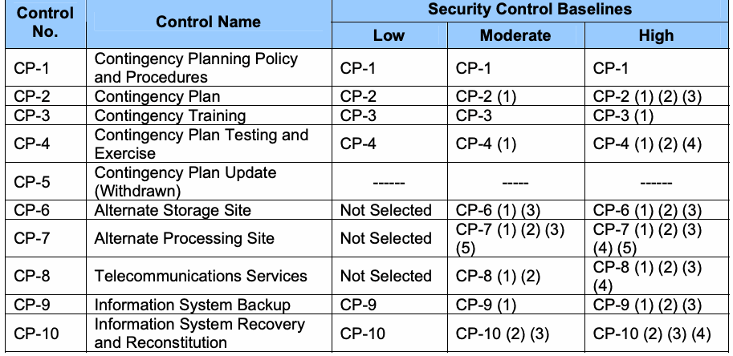
| 管理策番号 | 管理策名 | セキュリティ管理策ベースライン |
| 低／中／高 | ||
| CP-1 | 緊急時対応計画策定の方針と手順 | CP-1 / CP-1 / CP-1 |
| CP-2 | 緊急時対応計画 | CP-2 / CP-2 (1) / CP-2 (1) (2) (3) |
| CP-3 | 緊急時対応訓練 | CP-3 / CP-3 / CP-3 (1) |
| CP-4 | 緊急時対応計画のテストと演習 | CP-4 / CP-4 (1) / CP-4 (1) (2) (4) |
| CP-5 | 緊急時対応計画の更新（撤回） | ------ / ----- / ------ |
| CP-6 | 代替保管サイト | Not Selected / CP-6 (1) (3) / CP-6 (1) (2) (3) |
| CP-7 | 代替処理サイト | Not Selected / CP-7 (1) (2) (3) (5) / CP-7 (1) (2) (3) (4) (5) |
| CP-8 | 電気通信サービス | Not Selected / CP-8 (1) (2) / CP-8 (1) (2) (3) (4) |
| CP-9 | 情報システムのバックアップ | CP-9 / CP-9 (1) / CP-9 (1) (2) (3) |
| CP-10 | 情報システムの復旧と再構成 | CP-10 / CP-10 (2) (3) / CP-10 (2) (3) (4) |
2.2 Types of Plans
2.2 計画の種類
Information system contingency planning represents a broad scope of activities designed to sustain and recover critical system services following an emergency event. Information system contingency planning fits into a much broader security and emergency management effort that includes organizational and business process continuity, disaster recovery planning, and incident management. Ultimately, an organization would use a suite of plans to properly prepare response, recovery, and continuity activities for disruptions affecting the organization’s information systems, mission/business processes, personnel, and the facility. Because there is an inherent relationship between an information system and the mission/business process it supports, there must be coordination between each plan during development and updates to ensure that recovery strategies and supporting resources neither negate each other nor duplicate efforts.
情報システムの緊急時対応計画策定は、緊急事態後に重要なシステムサービスを維持・復旧するための幅広い活動を指す。これは、組織および事業プロセスの継続、災害復旧計画策定、インシデント管理を含む、より広範なセキュリティ・緊急時管理の取組の一部である。組織は最終的に、情報システム、ミッション／事業プロセス、要員、施設に影響する障害に備え、対応、復旧、継続の活動を適切に準備するため、複数の計画を組み合わせて用いる。情報システムと、それが支えるミッション／事業プロセスは本質的に結び付いているため、計画の策定・更新時には相互に調整し、復旧戦略とそれを支えるリソースが互いを損なったり、作業を重複させたりしないようにしなければならない。
未レビュー訳Continuity and contingency planning are critical components of emergency management and organizational resilience but are often confused in their use. Continuity planning normally applies to the mission/business itself; it concerns the ability to continue critical functions and processes during and after an emergency event. Contingency planning normally applies to information systems, and provides the steps needed to recover the operation of all or part of designated information systems at an existing or new location in an emergency. Cyber Incident Response Planning is a type of plan that normally focuses on detection, response, and recovery to a computer security incident or event.
継続計画策定と緊急時対応計画策定は、緊急事態管理と組織のレジリエンスに不可欠な要素だが、しばしば混同される。継続計画策定は通常、ミッション／事業そのものを対象とし、緊急事態の最中および後に重要な機能とプロセスを継続する能力に関する。緊急時対応計画策定は通常、情報システムを対象とし、緊急時に指定された情報システムの全部または一部の運用を、既存または新しい場所で復旧するために必要な手順を定める。サイバーインシデント対応計画策定は、通常、コンピューターセキュリティのインシデントまたは事象の検知、対応、復旧に重点を置く計画の一種である。
未レビュー訳In general, universally accepted definitions for information system contingency planning and the related planning areas have not been available. Occasionally, this leads to confusion regarding the actual scope and purpose of various types of plans. To provide a common basis of understanding regarding information system contingency planning, this section identifies several other types of plans and describes their purpose and scope relative to information system contingency planning. Because of the lack of standard definitions for these types of plans, the scope of actual plans developed by organizations may vary from the descriptions below. This guide applies the descriptions and references in sections below to security and emergency management-related plans. The plans listed are in alphabetical order, and do not imply any order of importance.
一般に、情報システムの緊急時対応計画策定や関連する計画分野には、広く受け入れられた定義がなかった。このため、各種計画の実際の適用範囲と目的について混乱が生じることがある。情報システムの緊急時対応計画策定に関する共通理解の基礎を提供するため、本節では他の計画の種類をいくつか取り上げ、その目的と適用範囲を情報システムの緊急時対応計画策定との関係で説明する。これらの計画種別には標準的な定義がないため、組織が作成する実際の計画の範囲は以下の説明と異なる場合がある。本ガイドでは、以下の節で説明する記述と参照を、セキュリティ・緊急時管理関連計画に適用する。計画はアルファベット順に列挙しており、重要度の順ではない。
未レビュー訳2.2.1 Business Continuity Plan (BCP)
2.2.1 事業継続計画（BCP）
未レビュー訳The BCP focuses on sustaining an organization’s mission/business processes during and after a disruption. An example of a mission/business process may be an organization’s payroll process or customer service process. A BCP may be written for mission/business processes within a single business unit or may address the entire organization’s processes. The BCP may also be scoped to address only the functions deemed to be priorities. A BCP may be used for long-term recovery in conjunction with the COOP plan, allowing for additional functions to come online as resources or time allow. Because mission/business processes use information systems (ISs), the business continuity planner must coordinate with information system owners to ensure that the BCP expectations and IS capabilities are matched.
BCPは、障害の発生中および発生後も、組織のミッション／事業プロセスを維持することに重点を置く。ミッション／事業プロセスの例として、組織の給与計算や顧客サービスが挙げられる。BCPは、単一の事業部門内のミッション／事業プロセスを対象に作成することも、組織全体のプロセスを対象にすることもできる。また、優先事項と見なされた機能だけに範囲を限定してもよい。BCPはCOOP計画と併用し、リソースや時間が確保でき次第、追加機能を順次再開する長期復旧にも利用できる。ミッション／事業プロセスは情報システム（IS）を利用するため、事業継続計画の策定者は情報システム所有者と調整し、BCPで想定する内容とISの能力を一致させなければならない。
2.2.2 Continuity of Operations (COOP) Plan
2.2.2 業務継続計画（COOP）
未レビュー訳COOP focuses on restoring an organization’s mission essential functions (MEF) at an alternate site and performing those functions for up to 30 days before returning to normal operations. Additional functions, or those at a field office level, may be addressed by a BCP. Minor threats or disruptions that do not require relocation to an alternate site are typically not addressed in a COOP plan.
COOPは、代替サイトで組織のミッション必須機能（MEF）を復旧し、通常運用に戻るまで最長30日間それらの機能を実行することに重点を置く。追加機能や現地事務所レベルの機能は、BCPで扱うことができる。代替サイトへの移転が不要な軽微な脅威や障害は、通常COOP計画では扱わない。
Standard elements of a COOP plan include:
COOP計画の標準的な要素には、次が含まれる。
| (cid:131) Program plans and procedures | (cid:131) Continuity communications |
| (cid:131) Risk management | (cid:131) Vital records management |
| (cid:131) Budgeting and acquisition of resources | (cid:131) Human capital |
| (cid:131) Essential functions | (cid:131) Test, training, and exercise |
| (cid:131) Order of succession | (cid:131) Devolution |
| (cid:131) Delegation of authority | (cid:131) Reconstitution |
| (cid:131) Continuity facilities |
原本PDFの抜粋画像
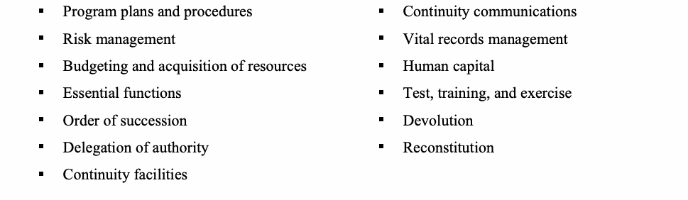
| • プログラムの計画と手順 | • 継続通信 |
| • リスク管理 | • 重要記録の管理 |
| • 予算策定とリソースの調達 | • 人的資本 |
| • 必須機能 | • テスト、訓練、演習 |
| • 継承順位 | • 権限・機能の移管 |
| • 権限委譲 | • 再構成 |
| • 継続運用施設 |
COOP plans are mandated for organizations by HSPD-20/NSPD-51, National Continuity Policy and FCD 1, Federal Executive Branch National Continuity Program and Requirements. Federal directives distinguish COOP plans as a specific type of plan that should not be confused with Information System Contingency Plans, Disaster Recovery Plans or BCPs. Nongovernment organizations typically use BCPs rather than COOP plans to address mission/business processes.
COOP計画は、HSPD-20／NSPD-51『国家継続政策』およびFCD 1『連邦行政府の国家継続プログラムおよび要件』によって、組織に義務付けられている。連邦指令ではCOOP計画を特定の種類の計画として区別しており、情報システム緊急時対応計画、災害復旧計画、BCPと混同すべきではない。政府以外の組織は、ミッション／事業プロセスを扱うため、通常COOP計画ではなくBCPを使用する。
COOP vs. ISCP – The Basic Facts
COOPとISCP：基本情報
未レビュー訳FUNCTIONS
機能
未レビュー訳(cid:131) COOP plans address national, primary, or mission essential functions; ISCPs address federal information systems.
• COOP計画は国家的、主要、またはミッション必須の機能を対象とし、ISCPは連邦情報システムを対象とする。
未レビュー訳o COOP functions have specific criteria; not all government mission/business processes meet COOP criteria. o COOP functions may be supported by information systems. o Information systems support government mission/business processes, but not all government mission/business processes fall within the scope of COOP.
• COOPの対象機能には固有の基準があり、政府のミッション／事業プロセスがすべてその基準を満たすわけではない。• COOPの対象機能は情報システムによって支えられる場合がある。• 情報システムは政府のミッション／事業プロセスを支えるが、そのすべてがCOOPの適用範囲に入るわけではない。
未レビュー訳SCOPE
適用範囲
未レビュー訳(cid:131) COOP planning applies to mission essential functions of federal government departments and agencies. (cid:131) ISCPs apply to all information systems in federal organizations. AUTHORITIES (cid:131) COOP is mandated for federal organizations by HSPD-20/NSPD-51, FCDs 1 and 2, and the National Continuity Policy Implementation Plan (NCPIP); ISCPs are mandated for federal organizations by FISMA.
• COOP計画策定は、連邦政府の省庁および機関のミッション必須機能に適用する。• ISCPは連邦組織のすべての情報システムに適用する。根拠・義務付け：• COOPはHSPD-20／NSPD-51、FCD 1・2、および国家継続政策実施計画（NCPIP）によって連邦組織に義務付けられている。ISCPはFISMAによって連邦組織に義務付けられている。
未レビュー訳2.2.3 Crisis Communications Plan
2.2.3 危機時コミュニケーション計画
Organizations should document standard procedures for internal and external communications in the event of a disruption using a crisis communications plan. A crisis communications plan is often developed by the organization responsible for public outreach. The plan provides various formats for communications appropriate to the incident. The crisis communications plan typically designates specific individuals as the only authority for answering questions from or providing information to the public regarding emergency response. It may also include procedures for disseminating reports to personnel on the status of the incident and templates for public press releases. The crisis communication plan procedures should be communicated to the organization’s COOP and BCP planners to ensure that the plans include clear direction that only approved statements are released to the public by authorized officials. Appendix D provides further discussion of topics addressed by the crisis communications plan and informational resources.
組織は、危機時コミュニケーション計画を用いて、障害発生時の内外向け標準連絡手順を文書化すべきである。この計画は、広報を担当する組織が作成することが多い。インシデントに適した複数の連絡形式を定める。通常、緊急対応に関する質問への回答や情報提供を行う権限者を特定の担当者のみに限定する。また、要員にインシデントの状況を報告する手順や、報道発表用のひな型を含める場合もある。計画に、権限のある職員のみが承認済みの声明を一般に公表することを明確に定めるため、危機時コミュニケーション計画の手順を組織のCOOPおよびBCP策定担当者に伝えるべきである。付録Dでは、この計画で扱うトピックと情報源について詳述する。
未レビュー訳2.2.4 Critical Infrastructure Protection (CIP) Plan
2.2.4 重要インフラ保護（CIP）計画
Critical infrastructure and key resources (CIKR) are those components of the national infrastructure that are deemed so vital that their loss would have a debilitating effect of the safety, security, economy, and/or health of the United States.10 A CIP plan is a set of policies and procedures that serve to protect and recover these national assets and mitigate risks and vulnerabilities. CIP plans define the roles and responsibilities for protection, develop partnerships and information sharing relationships, implement the risk management framework defined in the National Infrastructure Protection Plan (NIPP) and Homeland Security Presidential Directive (HSPD) - 7 for CIKR assets, and integrate federal, state and local emergency preparedness, protection, and resiliency of critical infrastructure.
重要インフラおよび主要資源（CIKR）とは、その喪失が米国の安全、安全保障、経済、または健康に深刻な影響を与えるほど重要と見なされる国家インフラの構成要素である。10 CIP計画は、これらの国家資産を保護・復旧し、リスクと脆弱性を軽減するための方針と手順である。CIP計画は、CIKR資産の保護に関する役割と責任を定め、連携関係と情報共有の仕組みを構築し、National Infrastructure Protection Plan（NIPP）および国土安全保障大統領指令（HSPD）-7で定義されたリスク管理フレームワークを実施する。また、重要インフラの緊急事態への備え、保護、レジリエンスに関する連邦・州・地方の活動を統合する。
未レビュー訳2.2.5 Cyber Incident Response Plan
2.2.5 サイバーインシデント対応計画
The cyber incident response plan11 establishes procedures to address cyber attacks against an organization’s information system(s).12 These procedures are designed to enable security personnel to identify, mitigate, and recover from malicious computer incidents, such as unauthorized access to a system or data, denial of service, or unauthorized changes to system hardware, software, or data (e.g., malicious logic, such as a virus, worm, or Trojan horse). This plan may be included as an appendix of the BCP.
サイバーインシデント対応計画11は、組織の情報システムに対するサイバー攻撃に対処する手順を定める。12 これらの手順により、セキュリティ担当者は、システムまたはデータへの不正アクセス、サービス拒否、システムのハードウェア・ソフトウェア・データへの不正な変更（ウイルス、ワーム、トロイの木馬などの悪意あるロジックを含む）といった悪意あるコンピューターインシデントを特定し、軽減し、復旧できる。本計画はBCPの付録として組み込んでもよい。
未レビュー訳2.2.6 Disaster Recovery Plan (DRP)
2.2.6 災害復旧計画（DRP）
The DRP applies to major, usually physical disruptions to service that deny access to the primary facility infrastructure for an extended period. A DRP is an information system-focused plan designed to restore operability of the target system, application, or computer facility infrastructure at an alternate site after an emergency. The DRP may be supported by multiple information system contingency plans to address recovery of impacted individual systems once the alternate facility has been established. A DRP may support a BCP or COOP plan by recovering supporting systems for mission/business processes or mission essential functions at an alternate location. The DRP only addresses information system disruptions that require relocation.
DRPは、主たる施設のインフラに長期間アクセスできなくなる、主に物理的な大規模サービス中断を対象とする。DRPは情報システムに焦点を当てた計画であり、緊急事態後に代替サイトで対象のシステム、アプリケーション、またはコンピューター施設のインフラを再稼働させることを目的とする。代替施設が確立した後、影響を受けた個々のシステムを復旧するため、複数の情報システム緊急時対応計画をDRPの支援に用いる場合がある。DRPは、ミッション／事業プロセスやミッション必須機能を支えるシステムを代替拠点で復旧することで、BCPまたはCOOP計画を支援する場合がある。DRPが対象とするのは、移転を必要とする情報システムの中断に限られる。
未レビュー訳2.2.7 Information System Contingency Plan (ISCP)
2.2.7 情報システム緊急時対応計画（ISCP）
An ISCP provides established procedures for the assessment and recovery of a system following a system disruption. The ISCP provides key information needed for system recovery, including roles and responsibilities, inventory information, assessment procedures, detailed recovery procedures, and testing of a system.
ISCPは、システム障害後にシステムを評価・復旧するための確立された手順を示す。システムの復旧に必要な役割と責任、インベントリ情報、評価手順、詳細な復旧手順、システムテストなどの重要情報を記載する。
The ISCP differs from a DRP primarily in that the information system contingency plan procedures are developed for recovery of the system regardless of site or location. An ISCP can be activated at the system’s current location or at an alternate site. In contrast, a DRP is primarily a site-specific plan developed with procedures to move operations of one or more information systems from a damaged or uninhabitable location to a temporary alternate location. Once the DRP has successfully transferred an information system site to an alternate site, each affected system would then use its respective ISCP to restore, recover, and test systems, and put them into operation.
ISCPがDRPと主に異なる点は、情報システム緊急時対応計画の手順が、サイトや場所を問わずシステムを復旧できるよう策定されることである。ISCPはシステムの現在地でも代替サイトでも発動できる。これに対し、DRPは主にサイト固有の計画であり、損傷した場所や居住・利用できなくなった場所から、一つ以上の情報システムの運用を一時的な代替場所へ移す手順を定める。DRPによって情報システムのサイトが代替サイトへ移転した後、各対象システムはそれぞれのISCPを使ってシステムを復元・復旧・テストし、運用を再開する。
未レビュー訳2.2.8 Occupant Emergency Plan (OEP)
2.2.8 在館者緊急時計画（OEP）
The OEP outlines first-response procedures for occupants of a facility in the event of a threat or incident to the health and safety of personnel, the environment, or property. Such events include a fire, bomb threat, chemical release, domestic violence in the workplace, or a medical emergency. Shelter-in-place procedures for events requiring personnel to stay inside the building rather than evacuate are also addressed in an OEP. OEPs are developed at the facility level, specific to the geographic location and structural design of the building. General Services Administration (GSA)-owned facilities maintain plans based on the GSA OEP template. The facility OEP may be appended to the COOP or BCP, but is executed separately and as a first response to the incident. Aspects of planning for personnel safety and evacuation are discussed in Appendix D.
OEPは、職員、環境、財産の健康や安全に脅威またはインシデントが及ぶ場合に、施設の利用者が最初に取る対応手順を定める。火災、爆破予告、化学物質の放出、職場での家庭内暴力、医療上の緊急事態などが該当する。避難せず建物内に留まる必要がある事象に対する屋内退避手順も扱う。OEPは施設レベルで策定し、その地理的位置と建物の構造に合わせて作成する。General Services Administration（GSA）が所有する施設では、GSAのOEPテンプレートに基づく計画を維持する。施設のOEPはCOOPまたはBCPの付録にできるが、インシデントへの初動対応として独立して実行する。職員の安全確保と避難の計画策定については付録Dで扱う。
未レビュー訳Error! Reference source not found. summarizes the types of plans. The plan types identified are implemented individually or in coordination with one another as appropriate to respond to a disruptive event.
エラー：参照先が見つかりません。以下に計画の種類を示す。必要に応じて、各計画は個別に実施することも、相互に連携して障害に対応することもできる。
Table 2-2: Type of Plans
表2-2：計画の種類
未レビュー訳| Plan | Purpose | Scope | Plan Relationship |
| Business Continuity Plan (BCP) | Provides procedures for sustaining mission/business operations while recovering from a significant disruption. | Addresses mission/business processes at a lower or expanded level from COOP MEFs. | Mission/business process focused plan that may be activated in coordination with a COOP plan to sustain non-MEFs. |
| Continuity of Operations (COOP) Plan | Provides procedures and guidance to sustain an organization’s MEFs at an alternate site for up to 30 days; mandated by federal directives. | Addresses MEFs at a facility; information systems are addressed based only on their support of the mission essential functions. | MEF focused plan that may also activate several business unit-level BCPs, ISCPs, or DRPs, as appropriate. |
| Crisis Communica- tions Plan | Provides procedures for disseminating internal and external communications; means to provide critical status information and control rumors. | Addresses communications with personnel and the public; not information system- focused. | Incident-based plan often activated with a COOP or BCP, but may be used alone during a public exposure event. |
| Critical Infrastructure Protection (CIP) Plan | Provides policies and procedures for protection of national critical infrastructure components, as defined in the National Infrastructure Protection Plan. | Addresses critical infrastructure components that are supported or operated by an agency or organization. | Risk management plan that supports COOP plans for organizations with critical infrastructure and key resource assets. |
| Cyber Incident Response Plan | Provides procedures for mitigating and correcting a cyber attack, such as a virus, worm, or Trojan horse. | Addresses mitigation and isolation of affected systems, cleanup, and minimizing loss of information. | Information system- focused plan that may activate an ISCP or DRP, depending on the extent of the attack. |
| Disaster Recovery Plan (DRP) | Provides procedures for relocating information systems operations to an alternate location. | Activated after major system disruptions with long-term effects. | Information system- focused plan that activates one or more ISCPs for recovery of individual systems. |
| Information System Contingency Plan (ISCP) | Provides procedures and capabilities for recovering an information system. | Addresses single information system recovery at the current or, if appropriate alternate location. | Information system- focused plan that may be activated independent from other plans or as part of a larger recovery effort coordinated with a DRP, COOP, and/or BCP. |
| Occupant Emergency Plan (OEP) | Provides coordinated procedures for minimizing loss of life or injury and protecting property damage in response to a physical threat. | Focuses on personnel and property particular to the specific facility; not mission/business process or information system-based. | Incident-based plan that is initiated immediately after an event, preceding a COOP or DRP activation. |
原本PDFの抜粋画像
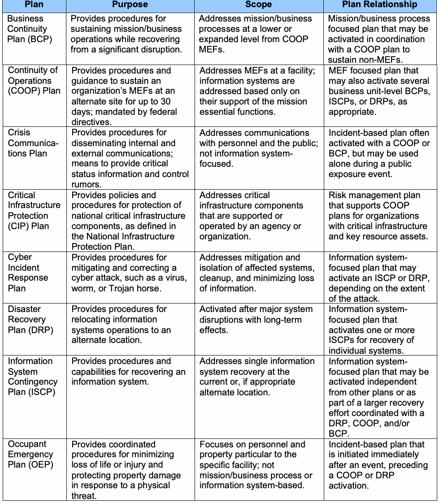
| 計画 | 目的 | 適用範囲 | 計画間の関係 |
| 事業継続計画（BCP） | 重大な中断からの復旧中にミッション／事業の運用を維持する手順を示す。 | COOPのMEFより下位または広範なレベルのミッション／事業プロセスを対象とする。 | ミッション／事業プロセスに焦点を当てた計画であり、COOP計画と連携して発動し、MEF以外の機能を維持する場合がある。 |
| 業務継続計画（COOP） | 代替サイトで組織のMEFを最長30日間維持する手順と指針を示す。連邦指令によって義務付けられている。 | 施設におけるMEFを対象とする。情報システムは、ミッション必須機能を支援する範囲に限って扱う。 | MEFに焦点を当てた計画であり、必要に応じて複数の事業部門レベルのBCP、ISCPまたはDRPも発動する場合がある。 |
| 危機時コミュニケーション計画 | 内部・外部への情報発信手順を示し、重要な状況情報を提供して噂を抑える手段を定める。 | 要員および一般への連絡を対象とし、情報システムには焦点を当てない。 | インシデントを契機とする計画で、COOPまたはBCPと同時に発動することが多いが、情報が一般に露出する事象では単独で用いる場合もある。 |
| 重要インフラ保護（CIP）計画 | National Infrastructure Protection Planで定義される、国家の重要インフラ構成要素を保護する方針と手順を示す。 | 機関または組織が支援または運用する重要インフラ構成要素を対象とする。 | 重要インフラおよび主要資産を持つ組織のCOOP計画を支援するリスク管理計画である。 |
| サイバーインシデント対応計画 | ウイルス、ワーム、トロイの木馬などのサイバー攻撃を軽減し、是正する手順を示す。 | 影響を受けたシステムの軽減措置と隔離、クリーンアップ、情報損失の最小化を対象とする。 | 情報システムに焦点を当てた計画であり、攻撃の規模に応じてISCPまたはDRPを発動する場合がある。 |
| 災害復旧計画（DRP） | 情報システムの運用を代替拠点へ移転する手順を示す。 | 長期的な影響を伴う大規模なシステム障害後に発動する。 | 情報システムに焦点を当てた計画であり、個々のシステムを復旧するために一つ以上のISCPを発動する。 |
| 情報システム緊急時対応計画（ISCP） | 情報システムを復旧する手順と能力を示す。 | 単一の情報システムを現在の場所、または適切な場合は代替拠点で復旧することを対象とする。 | 情報システムに焦点を当てた計画であり、他の計画と独立して発動する場合と、DRP、COOP、BCPの一つ以上と連携する広範な復旧活動の一環として発動する場合がある。 |
| 在館者緊急時計画（OEP） | 物理的脅威への対応において、人命損失や負傷を最小限に抑え、財産への被害を防ぐための調整済み手順を示す。 | 特定施設の要員と財産に焦点を当て、ミッション／事業プロセスや情報システムを基盤とするものではない。 | インシデントを契機とする計画であり、事象の直後に開始し、COOPまたはDRPの発動に先立つ。 |
Figure 2-1 shows the interrelationship of each plan as they are implemented to respond to the event as applicable to their respective scopes.
図2-1は、それぞれの計画が適用範囲に応じて事象への対応に用いられる際の、計画間の相互関係を示す。
未レビュー訳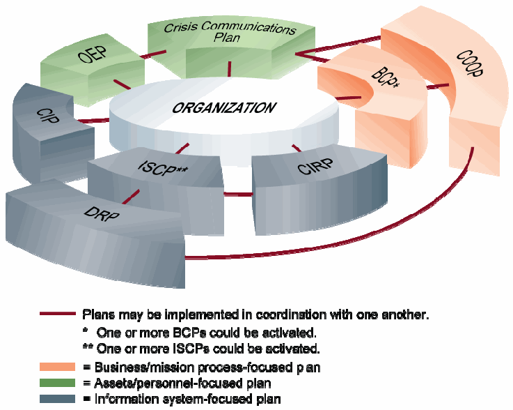
組織を中心に、危機広報、職場緊急事態、業務継続（COOP・BCP）、災害復旧（DRP）、サイバーインシデント対応（CIRP）、情報システム緊急時対応（ISCP）などの計画を配置する。赤線は計画間の連携を、色分けは業務・使命、資産・人員、情報システムに焦点を当てた計画を示す。
Figure 2-1: Contingency-Related Plan Relationships
図2-1：緊急時対応関連計画の相互関係
未レビュー訳Chapter 3. Information System Contingency Planning Process
第3章 情報システム緊急時対応計画策定プロセス
未レビュー訳This section describes the process to develop and maintain an effective information system contingency plan. The process presented is common to all information systems. The seven steps in the process are:
本節では、効果的な情報システム緊急時対応計画を策定・維持するプロセスを説明する。ここに示すプロセスはすべての情報システムに共通する。プロセスは次の7段階から成る。
未レビュー訳1.Develop the contingency planning policy;
1.緊急時対応計画策定方針を作成する；
未レビュー訳2.Conduct the business impact analysis (BIA);
2.事業影響分析（BIA）を実施する；
未レビュー訳3.Identify preventive controls;
3.予防的管理策を特定する；
未レビュー訳4.Create contingency strategies;
4.緊急時対応戦略を策定する；
未レビュー訳5.Develop an information system contingency plan;
5.情報システム緊急時対応計画を作成する；
未レビュー訳6.Ensure plan testing, training, and exercises; and
6.計画のテスト、訓練、演習を確実に行う；および
未レビュー訳7.Ensure plan maintenance.
7.計画を確実に維持する。
未レビュー訳These steps represent key elements in a comprehensive information system contingency planning capability. Developing contingency planning policy and performing system BIA(s) are accomplished early in the SDLC (see Appendix F) and before the systems are categorized in accordance with the RMF. Six of the seven planning process steps are discussed in this section. Because plan development represents the core of information system contingency planning, including the individual sections that compose the plan, plan development is addressed in Chapter 4. Responsibility for the planning process generally falls under the auspice of the Information System Contingency Plan Coordinator, or ISCP Coordinator, who is typically a functional or resource manager within the organization. The ISCP Coordinator develops the strategy in cooperation with other functional and resource managers associated with the system or the mission/business processes supported by the system. The ISCP Coordinator also typically manages development and execution of the contingency plan. All federal information systems must have a contingency plan. Figure 3-1 illustrates the contingency planning process.
これらのステップは、包括的な情報システム緊急時対応能力の重要な要素である。緊急時対応計画策定方針の作成とシステムBIAの実施は、SDLCの早期（付録Fを参照）に、RMFに従ってシステムをカテゴリ化する前に行う。この節では、計画策定プロセスの7段階のうち6段階を説明する。情報システム緊急時対応計画策定の中核は計画の作成であるため、計画を構成する各セクションを含む計画作成については第4章で扱う。計画策定プロセスの責任は、通常、情報システム緊急時対応計画コーディネーター（ISCPコーディネーター）が担う。この役割は組織内の機能管理者またはリソース管理者が担当することが多い。ISCPコーディネーターは、システムまたはシステムが支えるミッション／事業プロセスに関係する他の機能管理者やリソース管理者と協力して戦略を策定する。また通常、緊急時対応計画の作成と実行も管理する。すべての連邦情報システムには緊急時対応計画が必要である。図3-1に計画策定プロセスを示す。
未レビュー訳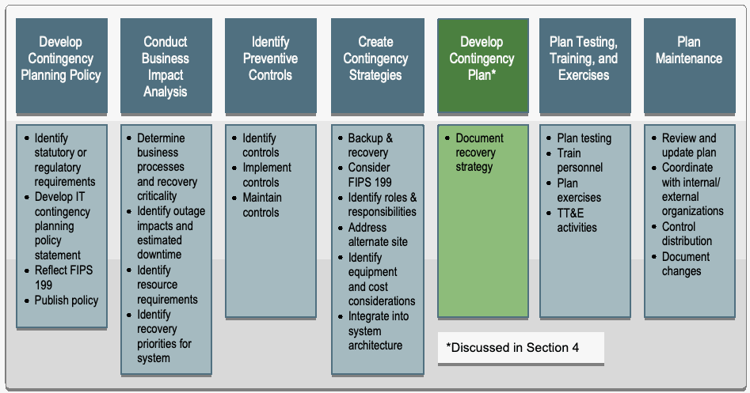
緊急時対応計画プログラムの7段階を示す表。方針策定、事業影響分析、予防管理策の特定、戦略策定、計画作成、試験・訓練・演習、計画の保守を順に示す。
Develop Conduct
策定・実施
未レビュー訳Identify
特定
未レビュー訳Create
作成
未レビュー訳Develop Plan Testing, Plan
計画を策定し、試験を計画する
未レビュー訳Contingency Business Preventive Contingency Contingency Training, and Maintenance Planning Policy Impact
緊急時対応計画、事業影響分析、予防管理策、緊急時対応計画ポリシー、緊急時対応計画の訓練と保守
未レビュー訳Controls Strategies
管理策・戦略
未レビュー訳Plan* Exercises
計画・演習*
未レビュー訳Analysis
分析
未レビュー訳•Identify • Determine • Identify • Backup & • Document • Plan testing • Review and controls recovery recovery • Train update plan statutory or business regulatory processes • Implement • Consider strategy personnel • Coordinate requirements and recovery controls FIPS 199 with internal/
•特定 • 決定 • 特定 • バックアップと復旧 • 文書化 • 試験計画 • 計画のレビューと更新 • 法令・規制要件 • 事業プロセスと復旧戦略 • 要員の訓練 • FIPS 199の検討 • 内部関係者との調整
未レビュー訳•Plan
•計画
未レビュー訳•Develop IT criticality • Maintain • Identify roles & exercises external organizations contingency • Identify outage controls responsibilities
•ITの重要度を特定 • 維持 • 役割と責任を特定 • 演習 • 外部組織 • 緊急時対応計画 • 停止による影響を特定 • 管理策
未レビュー訳•TT&E
•試験・訓練・演習（TT&E）
未レビュー訳planning impacts and
計画への影響および
未レビュー訳activities • Control
活動 • 管理
未レビュー訳•Address
•対処
未レビュー訳estimated
推定
未レビュー訳policy
ポリシー
未レビュー訳distribution
配布
未レビュー訳alternate site
代替サイト
未レビュー訳statement downtime
説明文・停止時間
未レビュー訳•Document
•文書化
未レビュー訳•Identify
•特定
未レビュー訳•Reflect FIPS • Identify changes equipment resource 199 and cost
•FIPS 199を反映 • 変更を特定 • 設備・リソース・コスト
未レビュー訳•Publish policy requirements considerations
•ポリシーを公開 • 要件 • 検討事項
未レビュー訳•Identify
•特定
未レビュー訳•Integrate into
•組み込む
未レビュー訳recovery
復旧
未レビュー訳system
システム
未レビュー訳priorities for
優先順位
未レビュー訳architecture *Discussed in Section 4
アーキテクチャ *第4節で説明
未レビュー訳system
システム
未レビュー訳Figure 3-1: Contingency Planning Process
図3-1：緊急時対応計画プロセス
未レビュー訳3.1 Develop the Contingency Planning Policy Statement
3.1 緊急時対応計画策定方針書の作成
未レビュー訳To be effective and to ensure that personnel fully understand the organization’s contingency planning requirements, the contingency plan must be based on a clearly defined policy. The contingency planning policy statement should define the organization’s overall contingency objectives and establish the organizational framework and responsibilities for system contingency planning. To be successful, senior management, most likely the CIO, must support a contingency program and be included in the process to develop the program policy. The policy must reflect the FIPS 199 impact levels and the contingency controls that each impact level establishes. Key policy elements are as follows:
有効性を確保し、職員が組織の緊急時対応計画策定要件を十分に理解できるよう、緊急時対応計画は明確に定義された方針に基づかなければならない。緊急時対応計画策定方針書では、組織全体の緊急時対応目標を定め、システムの緊急時対応計画策定に関する組織の枠組みと責任を確立すべきである。計画を成功させるには、上級管理職、特に最高情報責任者（CIO）がプログラムを支援し、その方針の策定プロセスに参加しなければならない。方針にはFIPS 199の影響度と、各影響度で定められる緊急時対応管理策を反映しなければならない。方針の主な要素は次のとおりである。
未レビュー訳(cid:131) Roles and responsibilities; (cid:131) Scope as applies to common platform types and organization functions (i.e., telecommunications, legal, media relations) subject to contingency planning; (cid:131) Resource requirements; (cid:131) Training requirements; (cid:131) Exercise and testing schedules; (cid:131) Plan maintenance schedule; and (cid:131) Minimum frequency of backups and storage of backup media.
• 役割と責任；• 緊急時対応計画策定の対象となる一般的なプラットフォーム種別および組織機能（電気通信、法務、広報など）の適用範囲；• リソース要件；• 訓練要件；• 演習とテストのスケジュール；• 計画の保守スケジュール；• バックアップの最低実施頻度とバックアップ媒体の保管方法。
未レビュー訳Sample information system contingency policy statement All organizations must develop contingency plans for each information system to meet the needs of critical system operations in the event of a disruption. The procedures for execution of such a capability shall be documented in a formal contingency plan by the
情報システム緊急時対応方針書の例：すべての組織は、障害発生時に重要なシステム運用の要件を満たすため、各情報システムの緊急時対応計画を作成しなければならない。この能力を実行する手順は、正式な緊急時対応計画に文書化するものとする。
未レビュー訳Information Systems Contingency Plan (ISCP) Coordinator and must be reviewed annually and updated as necessary by the ISCP Coordinator. The plan must account for the FIPS 199 security categorization (low, moderate, high) and comply with the appropriate security controls. The plan must assign specific responsibilities to designated staff or positions to facilitate the recovery and/or continuity of essential system functions. Resources necessary to ensure viability of the procedures must be acquired and maintained. Personnel responsible for target systems must be trained to execute contingency procedures. The plan recovery capabilities and personnel shall be tested annually to identify weaknesses of the capability.
計画は情報システム緊急時対応計画（ISCP）コーディネーターが作成し、毎年レビューして必要に応じて更新しなければならない。計画にはFIPS 199のセキュリティカテゴリ（低、中、高）を反映し、適切なセキュリティ管理策に準拠しなければならない。必須のシステム機能を復旧・継続できるよう、指定された職員または役職に具体的な責任を割り当てなければならない。手順の実効性を確保するために必要なリソースを調達し、維持する。対象システムの担当者は、緊急時対応手順を実行できるよう訓練を受けなければならない。計画の復旧能力と担当者は、能力上の弱点を特定するため、毎年テストするものとする。
未レビュー訳As information system contingency plans are developed during the Initiation phase of the SDLC,13 they should be coordinated with related organization-wide policies and programs, including information system security, physical security, human resources, system operations, and emergency preparedness functions. Information system contingency activities should be compatible with program requirements for these areas, and recovery personnel should coordinate with representatives from each area to remain aware of new or evolving policies, programs, or capabilities. The ISCPs must be written in coordination with other plans associated with each target system as part of organization-wide resilience strategy. Such plans include the following:
情報システム緊急時対応計画はSDLCの開始フェーズで策定するため、情報システムセキュリティ、物理的セキュリティ、人事、システム運用、緊急事態への備えなど、組織全体に関わる関連方針・プログラムと調整すべきである。情報システムの緊急時対応活動は、これらの領域のプログラム要件と整合させる必要がある。また、新設・変更される方針、プログラム、能力を把握できるよう、復旧担当者は各領域の代表者と調整すべきである。組織全体のレジリエンス戦略の一環として、ISCPは対象システムに関連する他の計画と連携して作成しなければならない。これらの計画には次が含まれる。
未レビュー訳(cid:131) Information system security plans; (cid:131) Facility-level plans, such as the OEP and DRP; (cid:131) MEF support such as the COOP plan; and (cid:131) Organization-level plans, such as CIP plans.
情報システムのセキュリティ計画；施設レベルの計画（OEPやDRPなど）；COOP計画などのMEF支援；CIP計画などの組織レベルの計画。
未レビュー訳Similarly, the six-step RMF14 brings together the supporting security standards and guidelines necessary for managing risk related to information systems. Implementing the RMF on an information system encompasses a broad range of activities to identify, control, and mitigate risks. From the information system contingency planning perspective, the six steps in the RMF actively support the development, implementation, testing, and maintenance of an information system’s contingency plan as it supports the mission of the organization.
同様に、6段階のRMF14は、情報システムに関連するリスクを管理するために必要なセキュリティ標準およびガイドラインをまとめている。情報システムにRMFを適用するには、リスクの特定、管理、軽減に関する幅広い活動が含まれる。情報システムの緊急時対応計画の観点では、RMFの6つの段階すべてが、組織のミッションを支える情報システムの緊急時対応計画の策定、実施、試験、保守を積極的に支援する。
未レビュー訳3.2 Conduct the Business Impact Analysis (BIA)
3.2 事業影響分析（BIA）の実施
未レビュー訳The BIA is a key step in implementing the CP controls in
BIAは、緊急時対応計画（CP）管理策を実施するうえで重要な段階であり、
未レビュー訳COOP vs. ISCP – The Basic Facts
COOPとISCP：基本事項
未レビュー訳NIST SP 800-53 and in the contingency planning process overall. The BIA enables the ISCP Coordinator to
NIST SP 800-53のCP管理策および緊急時対応計画プロセス全体において重要である。BIAにより、ISCPコーディネーターは
未レビュー訳BUSINESS IMPACT ANALYSIS
事業影響分析
未レビュー訳characterize the system components, supported
システム構成要素と、サポート対象の
未レビュー訳(BIA)
（BIA）
未レビュー訳mission/business processes, and interdependencies. The
ミッション／業務プロセスおよび相互依存関係を明らかにする。BIAの
未レビュー訳(cid:131) COOP functions are subject to a
COOP機能には、
未レビュー訳BIA purpose is to correlate the system with the critical
BIAの目的は、システムを重要な
未レビュー訳process-focused BIA; federal
プロセス重視のBIAが適用される。連邦政府の
未レビュー訳mission/business processes and services provided, and
ミッション／業務プロセスおよび提供サービスと関連付け、
未レビュー訳information systems are subject to
情報システムには
未レビュー訳based on that information, characterize the consequences of
その情報に基づいて、システムを対象とするBIAでは中断による影響を特定する。
未レビュー訳a system-focused BIA.
システムを対象とするBIAが適用される。
未レビュー訳a disruption. The ISCP Coordinator can use the BIA results to determine contingency planning requirements and o Information systems that
中断による影響を明らかにする。ISCPコーディネーターは、BIAの結果を用いて緊急時対応計画の要件と優先順位を決定できる。BIAの結果は適切に分析と戦略策定に反映する。 • 情報システムは、
未レビュー訳support COOP functions will be
COOP機能を支援する場合、
未レビュー訳priorities. Results from the BIA should be appropriately
優先順位に反映する。BIAの結果は適切に
未レビュー訳identified in the process-based
プロセス重視の
未レビュー訳incorporated into the analysis and strategy development
分析および戦略策定に取り込む
未レビュー訳BIA.
BIAに
未レビュー訳efforts for the organization’s COOP, BCPs, and DRP. The BIA should be performed during the Initiation phase of the
組織のCOOP、BCP、DRPに関する取り組みに反映する。BIAはSDLCの開始フェーズで実施する。
未レビュー訳o FCD-2 provides a required
FCD-2では、必須の
未レビュー訳SDLC. As the system design evolves and components
SDLCにおいてシステム設計が進み、構成要素が
未レビュー訳template for a process-based
プロセス重視のBIA用テンプレートを
未レビュー訳change, the BIA may need to be conducted again during the
変更された場合、SDLCの
未レビュー訳BIA; NIST 800-34 provides a recommendedtemplate for a
BIAを示している。NIST SP 800-34は、推奨される
未レビュー訳Development/Acquisition phase of the SDLC.
開発・取得フェーズでBIAを再実施する必要が生じることがある。
未レビュー訳system-based BIA.
システム重視のBIA用テンプレートを示している。
未レビュー訳Incorporating the RMF Step 1 (FIPS 199 categorization) and Step 2 (select security controls) helps to ensure that the BIA accounts appropriately for the level of risk to the organization.
RMFのステップ1（FIPS 199による分類）とステップ2（セキュリティ管理策の選択）を組み込むことで、BIAにおいて組織のリスクレベルが適切に考慮される。
未レビュー訳Three steps are typically involved in accomplishing the BIA:
BIAの実施には、通常、次の3つのステップが含まれる。
未レビュー訳1. Determine mission/business processes and recovery criticality. Mission/Business processes
1. ミッション／業務プロセスと復旧の重要度を決定する。ミッション／業務プロセス
未レビュー訳supported by the system are identified and the impact of a system disruption to those processes is determined along with outage impacts and estimated downtime. The downtime should reflect the maximum time that an organization can tolerate while still maintaining the mission.
を特定し、システムの中断がそれらのプロセスに及ぼす影響を、停止による影響および推定ダウンタイムと併せて判断する。ダウンタイムは、組織がミッションを維持しながら許容できる最大時間を反映すべきである。
未レビュー訳2.Identify resource requirements. Realistic recovery efforts require a thorough evaluation of the resources required to resume mission/business processes and related interdependencies as
2.リソース要件を特定する。現実的な復旧活動には、ミッション／業務プロセスおよび関連する相互依存関係を可能な限り迅速に再開するために必要なリソースを、徹底的に評価することが求められる。
未レビュー訳quickly as possible. Examples of resources that should be identified include facilities, personnel, equipment, software, data files, system components, and vital records.
特定すべきリソースの例には、施設、人員、機器、ソフトウェア、データファイル、システムコンポーネント、重要記録が含まれる。
未レビュー訳3. Identify recovery priorities for system resources. Based upon the results from the previous
3. システムリソースの復旧優先順位を特定する。前述の結果に基づき、
未レビュー訳activities, system resources can be linked more clearly to critical mission/business processes and functions. Priority levels can be established for sequencing recovery activities and resources.
システムリソースを重要なミッション／業務プロセスおよび機能と、より明確に関連付けることができる。復旧活動とリソースの順序を決めるために、優先度レベルを設定できる。
未レビュー訳The sample BIA process and data collection activities, outlined in this section and illustrated in Figure 3-2, consisting of a representative information system with multiple components (servers), are designed to help the ISCP Coordinator streamline and focus contingency plan development activities to achieve a more effective plan.15 An example of the BIA process and a BIA template are provided in Appendix B.
本節で概説し、図3-2に示すサンプルBIAプロセスおよびデータ収集活動は、複数のコンポーネント（サーバー）で構成される代表的な情報システムを対象としており、ISCPコーディネーターが緊急時対応計画の策定活動を整理・重点化し、より効果的な計画を作成できるように設計されている。15 BIAプロセスの例とBIAテンプレートを付録Bに示す。
未レビュー訳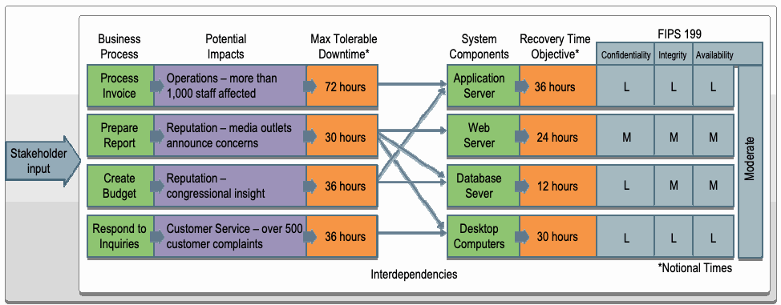
事業影響分析の例を示す表。業務プロセスと影響、最大許容停止時間、影響を受けるシステム、復旧時間目標、FIPS 199の機密性・完全性・可用性分類の関係を示す。
FIPS 199
FIPS 199
未レビュー訳System Recovery Time
システム復旧時間
未レビュー訳Business
業務
未レビュー訳Potential
潜在的な
未レビュー訳Max Tolerable
許容可能な最大
未レビュー訳| Confidentiality / Integrity | Availability | ||
| Application Server | 36 hours | L L L | etaredoM |
| Web Server | 24 hours | M / M | M |
原本PDFの抜粋画像
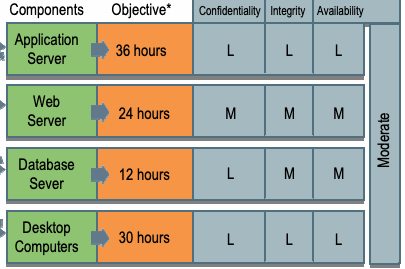
| 機密性／完全性 | 可用性 | ||
| アプリケーションサーバー | 36時間 | L L L | 中 |
| Webサーバー | 24時間 | M / M | M |
Process
プロセス
未レビュー訳Impacts
影響
未レビュー訳Downtime*
停止時間*
未レビュー訳| Process Invoice | Operations – more than 1,000 staff affected | 72 hours |
| Prepare Report | Reputation – media outlets announce concerns | 30 hours |
原本PDFの抜粋画像
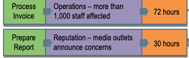
| 請求書処理 | 運用：1,000人を超える職員に影響 | 72時間 |
| 報告書作成 | 評判：メディアが懸念を報道 | 30時間 |
Stakeholder input
関係者からの意見
未レビュー訳| 予算作成 | 評判：議会の見解 | 36時間 |
| データベースサーバー | 12時間 | L | M | M |
| 問い合わせ対応 | 顧客サービス：顧客から500件を超える苦情 | 36時間 |
| デスクトップコンピューター | 30時間 | L | L | L |
*Notional Times
*想定時間
未レビュー訳Interdependencies
相互依存関係
未レビュー訳Figure 3-2: Business Impact Analysis Process for the Information System
図3-2：情報システムの事業影響分析プロセス
未レビュー訳3.2.1 Determine Business Processes and Recovery Criticality
3.2.1 事業プロセスと復旧の重要度を決定する
An information system can be very complex and often supports multiple mission/business processes, resulting in different perspectives on the importance of system services or capabilities. To accomplish the BIA and better understand the impacts a system outage or disruption can have on the organization, the ISCP Coordinator should work with management and internal and external points of contact (POC)16 to identify and validate mission/business processes and processes that depend on or support the information system. The identified processes’ impacts are then further analyzed in terms of availability, integrity, confidentiality, and the established FIPS 199 impact level for the information system.
情報システムは非常に複雑な場合があり、多くのミッション／業務プロセスを支援することもあるため、システムのサービスや機能の重要性についてさまざまな見方が生じる。BIAを実施し、システムの停止または中断が組織に及ぼし得る影響をよりよく把握するため、ISCPコーディネーターは管理者および内部・外部の連絡担当者（POC）16と連携し、ミッション／業務プロセスと、情報システムに依存する、または情報システムが支援するプロセスを特定して検証すべきである。特定したプロセスへの影響は、可用性、完全性、機密性、および情報システムに設定されたFIPS 199の影響度レベルに照らして、さらに分析する。
未レビュー訳FIPS 199 requires organizations to categorize their information systems as low impact, moderate impact, or high impact for the security objectives of confidentiality, integrity, and availability (RMF Step 1). The FIPS 199 category for the availability security objective serves as a basis of the BIA. Further identification of additional mission/business processes and impacts captures the unique purpose of the system. Organizational and system uniqueness are important considerations for contingency planning and business impact. Adding information types to address this uniqueness will enhance the prioritization of system component impacts.
FIPS 199は、機密性、完全性、可用性というセキュリティ目的について、情報システムを低影響、中影響、高影響に分類するよう組織に求めている（RMFステップ1）。可用性のセキュリティ目的に対するFIPS 199のカテゴリは、BIAの基礎となる。ミッション／業務プロセスとその影響をさらに特定することで、システム固有の目的を把握できる。組織とシステムそれぞれの固有性は、緊急時対応計画および事業影響を検討するうえで重要である。この固有性を反映する情報タイプを追加すれば、システムコンポーネントへの影響の優先順位付けを改善できる。
未レビュー訳Unique processes and impacts can be expressed in values or units of measurement that are meaningful to the organization. Values can be identified using a scale and should be characterized as an indication of impact severity to the organization if the process could not be performed.17 For example, an impact category such as “Costs” can be created with impact values expressed in terms of staffing, overtime, or fee-related costs.
固有のプロセスと影響は、組織にとって意味のある値または測定単位で表現できる。値は尺度を使って特定でき、プロセスを実行できない場合に組織が受ける影響の深刻度を示すものとして表すべきである。17 たとえば「コスト」のような影響カテゴリを設け、人員、時間外勤務、手数料関連の費用で影響値を表すことができる。
未レビュー訳The ISCP Coordinator should next analyze the supported mission/business processes and with the process owners, leadership and business managers determine the acceptable downtime if a given process or specific system data were disrupted or otherwise unavailable. Downtime can be identified in several ways.18
次にISCPコーディネーターは、支援対象のミッション／業務プロセスを分析し、プロセス所有者、幹部、および業務管理者とともに、特定のプロセスやシステムデータが中断または利用不能となった場合に許容できるダウンタイムを決定すべきである。ダウンタイムは複数の方法で特定できる。18
未レビュー訳(cid:131) Maximum Tolerable Downtime (MTD). The MTD represents the total amount of time the system owner/authorizing official is willing to accept for a mission/business process outage or disruption and includes all impact considerations. Determining MTD is important because it could leave contingency planners with imprecise direction on (1) selection of an appropriate recovery method, and (2) the depth of detail which will be required when developing recovery procedures, including their scope and content.19
• 最大許容ダウンタイム（MTD）。MTDは、システム所有者または認可担当者が、ミッション／業務プロセスの停止または中断について許容する総時間を表し、影響に関するすべての考慮事項を含む。MTDを決定することは重要である。決定しないと、緊急時対応計画の策定者に対し、(1)適切な復旧方法の選択、(2)復旧手順の策定時に必要となる詳細さ（手順の範囲および内容を含む）について、曖昧な指針しか示せないおそれがある。19
未レビュー訳(cid:131) Recovery Time Objective (RTO). RTO defines the maximum amount of time that a system resource can remain unavailable before there is an unacceptable impact on other system resources, supported mission/business processes, and the MTD. Determining the information system resource RTO is important for selecting appropriate technologies that are best suited for meeting the MTD.20 When it is not feasible to immediately meet the RTO and the MTD is inflexible, a Plan of Action and Milestone should be initiated to document the situation and plan for its mitigation.
• 復旧時間目標（RTO）。RTOは、システムリソースが利用できない状態のままであっても、他のシステムリソース、支援対象のミッション／業務プロセス、およびMTDに許容できない影響が生じる前までの最大時間を定める。情報システムリソースのRTOを決定することは、MTDの達成に最適な技術を選択するうえで重要である。20 RTOを直ちに達成できず、MTDに柔軟性がない場合は、状況を記録し、緩和策を計画するため、行動計画およびマイルストーン（POA&M）を開始すべきである。
未レビュー訳(cid:131) Recovery Point Objective (RPO). The RPO represents the point in time, prior to a disruption or system outage, to which mission/business process data can be recovered (given the most recent backup copy of the data) after an outage. Unlike RTO, RPO is not considered as part of MTD. Rather, it is a factor of how much data loss the mission/business process can tolerate during the recovery process. Because the RTO must ensure that the MTD is not exceeded, the RTO must normally be shorter than the MTD. For example, a system outage may prevent a particular process from being completed, and because it takes time to reprocess the data, that additional processing time must be added to the RTO to stay within the time limit established by the MTD.
• 復旧時点目標（RPO）。RPOは、停止またはシステム障害が発生した後、直近のバックアップコピーを利用してミッション／業務プロセスのデータを復旧できる時点を表す。この時点は、障害やシステム停止より前に位置する。RTOとは異なり、RPOはMTDの一部とはみなされない。むしろ、復旧中にミッション／業務プロセスが許容できるデータ損失量を示す指標である。RTOはMTD超過を防ぐ必要があるため、通常、RTOはMTDより短くなければならない。たとえば、システム停止によって特定のプロセスを完了できず、データの再処理に時間がかかる場合、その追加処理時間をRTOに含め、MTDで定められた時間制限内に収める必要がある。
未レビュー訳COOP vs. ISCP – The Basic Facts
COOPとISCP：基本事項
未レビュー訳RECOVERY TIMES
復旧時間
未レビュー訳(cid:131) COOP functions must be sustained within 12 hours and for up to 30 days from an alternate site; ISCP recovery time objectives are determined by the system-based BIA.
COOP機能は代替サイトで12時間以内に再開し、最大30日間維持しなければならない。ISCPの復旧時間目標は、システム重視のBIAに基づいて定める。
未レビュー訳o Information systems that support COOP functions must have an RTO that meets COOP requirements.
COOP機能を支援する情報システムは、COOP要件を満たすRTOを備えなければならない。
未レビュー訳o Information systems that do not support COOP functions do not requirealternate sites as part of the ISCP recovery strategy, but may have an alternate site security control requirement.
COOP機能を支援しない情報システムは、ISCPの復旧戦略に代替サイトを含める必要はない。ただし、セキュリティ管理策の要件として代替サイトが求められる場合がある。
未レビュー訳The ISCP Coordinator, working with management, should determine the optimum point to recover the information system by addressing the factors mentioned above while balancing the cost of system inoperability against the cost of resources required for restoring the system and its overall support for critical mission/business processes. This can be depicted using a simple chart, such as the example in Figure 3-3.
ISCPコーディネーターは管理者と連携し、前述の要因に対処しながら、システムの稼働不能によるコストと、システムの復旧および重要なミッション／業務プロセス全体への支援に必要なリソースのコストを比較して、情報システムを復旧する最適な時点を決定すべきである。この関係は、図3-3の例のような簡単なグラフで示すことができる。
未レビュー訳| Cost | Cost of Disruption Cost to Recover (Business Downtime) (System Mirror) Cost Balance Point Cost to Recover (Tape Backup) |
| Length of Disruption Time |
原本PDFの抜粋画像
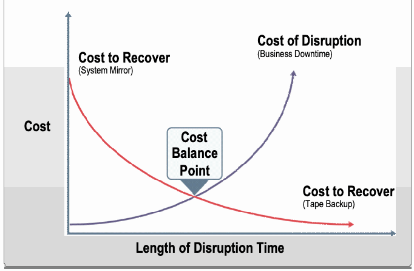
| 費用 | 中断による費用／復旧費用（業務停止）／復旧費用（システムミラー）／費用の均衡点／復旧費用（テープバックアップ） |
| 中断時間 |
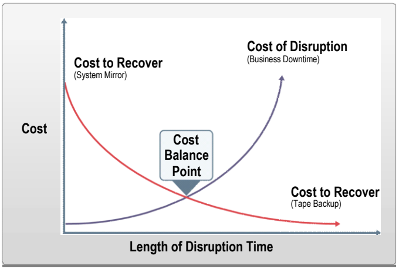
システムミラーによる復旧費用は時間とともに低下し、業務停止による損失は増加することを示すグラフ。両曲線の交点を費用均衡点として示す。
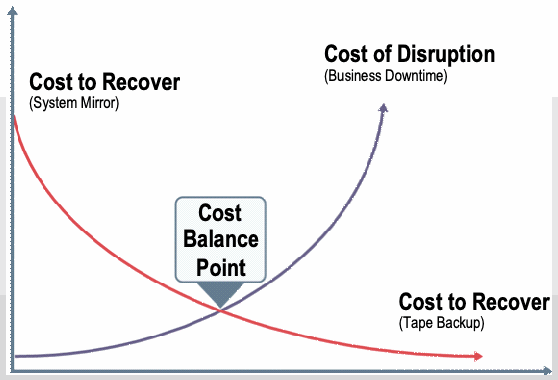
テープバックアップによる復旧費用と業務停止による損失の時間変化を示すグラフ。両曲線の交点を費用均衡点として示す。
Figure 3-3: Cost Balancing
図3-3：コストの均衡
未レビュー訳The longer a disruption is allowed to continue, the more costly it can become to the organization and its operations. Conversely, the shorter the RTO, the more expensive the recovery solutions cost to implement. For example, if the system must be recovered immediately, zero downtime solutions and alternate processing site costs will be much higher, whereas a low-impact system with a longer RTO would be able to implement a less costly simple tape backup system. Plotting the cost balance points will show an optimal point between disruption and recovery costs. The intersecting point (Cost Balance Point in Figure 3-3: Cost Balancing) will be different for every organization and system based on the financial constraints and operating requirements.
中断が長引くほど、組織およびその業務にとってコストが増大する可能性がある。これに対し、RTOが短いほど、復旧ソリューションの導入コストは高くなる。たとえば、システムを直ちに復旧しなければならない場合、ダウンタイムをゼロにするソリューションや代替処理サイトのコストは大幅に高くなる。一方、影響度が低くRTOが長いシステムなら、より低コストの単純なテープバックアップ方式を導入できる。コストの均衡点を図示すると、中断コストと復旧コストの間の最適点が分かる。交点（図3-3「コストの均衡」のコスト均衡点）は、財務上の制約と運用要件に応じて、組織やシステムごとに異なる。
3.2.2 Identify Resource Requirements
3.2.2 リソース要件を特定する
Realistic recovery efforts require a thorough evaluation of the resources required to resume mission/business processes as quickly as possible. Working with management and internal and external POCs associated with the system, the ISCP Coordinator should ensure that the complete information system resources are identified.21 A simple table such as the one shown in Table 3-1 can be used to capture relevant information system resources.
現実的な復旧活動には、ミッション／業務プロセスを可能な限り迅速に再開するために必要なリソースを徹底的に評価することが求められる。システムに関係する管理者および内部・外部のPOCと連携し、ISCPコーディネーターは、情報システムのリソースを漏れなく特定すべきである。21 表3-1のような簡単な表を使って、関連する情報システムリソースを記録できる。
未レビュー訳Table 3-1: Information System Resource/Component Table
表3-1：情報システムのリソース／コンポーネント表
未レビュー訳| System | Platform/OS/Version (as | Description |
| Resource/Component | applicable) | |
| Application Server | Sun V245/ Solaris / v10.0 | Serves as the main application server |
原本PDFの抜粋画像
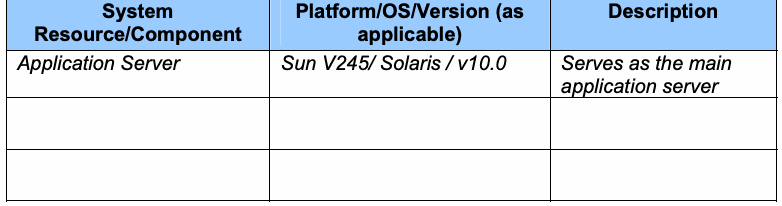
| システム | プラットフォーム／OS／バージョン（ | 説明 |
| リソース／コンポーネント | 該当する場合） | |
| アプリケーションサーバー | Sun V245／Solaris／v10.0 | メインのアプリケーションサーバーとして機能する |
3.2.3 Identify System Resource Recovery Priorities
3.2.3 システムリソースの復旧優先順位を特定する
Developing recovery priorities is the last step of the BIA process. Recovery priorities can be effectively established taking into consideration mission/business process criticality, outage impacts, tolerable downtime, and system resources. The result is an information system recovery priority hierarchy. The ISCP Coordinator should consider system recovery measures and technologies to meet the recovery priorities.
復旧優先順位の策定は、BIAプロセスの最終ステップである。ミッション／事業プロセスの重要度、停止による影響、許容可能なダウンタイム、およびシステムリソースを考慮することで、効果的な復旧優先順位を設定できる。その結果、情報システムの復旧優先順位の階層が得られる。ISCPコーディネーターは、復旧優先順位を満たすシステム復旧手段および技術を検討すべきである。
3.3 Identify Preventive Controls
3.3 予防的管理策を特定する
In some cases, the outage impacts identified in the BIA may be mitigated or eliminated through preventive measures that deter, detect, and/or reduce impacts to the system. Where feasible and cost-effective, preventive methods are preferable to actions that may be necessary to recover the system after a disruption. Step 2 of the RMF includes the identification of effective contingency planning preventive controls and maintaining these controls on an ongoing basis. A variety of preventive controls are identified in NIST SP 800-53, depending on system type and configuration; some common measures are listed below:
BIAで特定された停止の影響は、システムへの影響を抑止、検知、または低減する予防策によって、緩和または排除できる場合がある。実行可能で費用対効果が高い場合、予防策は、中断後にシステムを復旧するために必要となる措置よりも望ましい。RMFのステップ2では、効果的な緊急時対応計画の予防的管理策を特定し、それらを継続的に維持することが含まれる。システムの種類と構成に応じたさまざまな予防的管理策がNIST SP 800-53に示されている。一般的な対策を以下に挙げる。
未レビュー訳(cid:131) Appropriately sized uninterruptible power supplies (UPS) to provide short-term backup power to all system components (including environmental and safety controls); (cid:131) Gasoline- or diesel-powered generators to provide long-term backup power; (cid:131) Air-conditioning systems with adequate excess capacity to prevent failure of certain components, such as a compressor; (cid:131) Fire suppression systems; (cid:131) Fire and smoke detectors; (cid:131) Water sensors in the computer room ceiling and floor;
• すべてのシステムコンポーネント（環境制御および安全制御を含む）に短時間のバックアップ電力を供給する、適切な容量の無停電電源装置（UPS）。 • 長時間のバックアップ電力を供給する、ガソリンまたはディーゼル駆動の発電機。 • コンプレッサーなど特定のコンポーネントの故障を防ぐため、十分な余剰能力を備えた空調システム。 • 消火システム。 • 火災・煙検知器。 • コンピュータ室の天井および床に設置する水検知センサー。
未レビュー訳(cid:131) Heat-resistant and waterproof containers for backup media and vital non electronic records; (cid:131) Emergency master system shutdown switch; (cid:131) Offsite storage of backup media, non electronic records, and system documentation; (cid:131) Technical security controls, such as cryptographic key management; and (cid:131) Frequent scheduled backups including where the backups are stored (onsite or offsite) and how often they are recirculated and moved to storage.
• バックアップ媒体および紙媒体の重要記録を保管する、耐熱・防水容器。 • 緊急時のシステム一括停止スイッチ。 • バックアップ媒体、紙媒体の記録、およびシステム文書の遠隔地保管。 • 暗号鍵管理などの技術的セキュリティ管理策。 • バックアップの保存場所（構内または遠隔地）と、バックアップを再循環させて保管場所へ移す頻度を含む、定期的かつ頻繁なバックアップ。
未レビュー訳3.4 Create Contingency Strategies
3.4 緊急時対応戦略を策定する
Organizations are required to adequately mitigate the risk arising from use of information and information systems in the execution of mission/business processes. The challenge for organizations is in implementing the right set of security controls. Guided by the RMF and in accordance with FIPS 199 and NIST SP 800-53, security controls are selected and implemented. Contingency strategies are created to mitigate the risks for the contingency planning family of controls and cover the full range of backup, recovery, contingency planning, testing, and ongoing maintenance.
組織は、ミッション／業務プロセスの実行における情報および情報システムの利用から生じるリスクを、適切に緩和する必要がある。組織にとっての課題は、適切なセキュリティ管理策の組み合わせを実装することである。RMFの指針に従い、FIPS 199およびNIST SP 800-53に沿って、セキュリティ管理策を選択し実装する。緊急時対応戦略は、緊急時対応計画管理策ファミリーに属するリスクを緩和するために策定され、バックアップ、復旧、緊急時対応計画、テスト、および継続的な保守を幅広く網羅する。
未レビュー訳3.4.1 Backup and Recovery
3.4.1 バックアップおよび復旧
Backup and recovery methods and strategies are a means to restore system operations quickly and effectively following a service disruption. The methods and strategies should address disruption impacts and allowable downtimes identified in the BIA and should be integrated into the system architecture during the Development/Acquisition phase of the SDLC. A wide variety of recovery approaches may be considered, with the appropriate choice being highly dependent upon the incident, type of system, BIA/FIPS 199 impact level, and the system’s operational requirements.22 Specific recovery methods further described in Section 3.4.2 should be considered and may include commercial contracts with alternate site vendors, reciprocal agreements with internal or external organizations, and service-level agreements (SLAs) with equipment vendors. In addition, technologies such as redundant arrays of independent disks (RAID), automatic failover, UPS, server clustering, and mirrored systems should be considered when developing a system recovery strategy.
バックアップおよび復旧の方法・戦略は、サービス中断後にシステム運用を迅速かつ効果的に再開する手段である。これらの方法・戦略では、BIAで特定した中断の影響と許容ダウンタイムに対処し、システム開発ライフサイクル（SDLC）の開発／調達段階でシステムアーキテクチャに組み込むべきである。さまざまな復旧方式を検討できるが、適切な選択は、インシデント、システムの種類、BIA／FIPS 199の影響度レベル、およびシステムの運用要件に大きく左右される。22 第3.4.2節で詳述する具体的な復旧方法を検討する。これには、代替サイト事業者との商用契約、内外の組織との相互援助協定、機器事業者とのサービスレベル合意（SLA）が含まれる場合がある。また、システム復旧戦略の策定時には、独立ディスク冗長アレイ（RAID）、自動フェイルオーバー、無停電電源装置（UPS）、サーバークラスタリング、ミラーリングシステムなどの技術も検討すべきである。
未レビュー訳Several alternative approaches should be considered when developing and comparing strategies, including cost, maximum downtimes, security, recovery priorities, and integration with larger, organization-level contingency plans. Table is an example that can assist in identifying the linkage of FIPS 199 impact level for the availability security objective, recovery priority, backup, and recovery strategy.
戦略を策定・比較する際には、コスト、最大ダウンタイム、セキュリティ、復旧優先順位、および組織全体のより広範な緊急時対応計画との統合など、複数の代替案を検討すべきである。次の表は、可用性のセキュリティ目的に対するFIPS 199の影響度レベルと、復旧優先順位、バックアップ、および復旧戦略との対応関係を特定する際に役立つ例である。
Table 3-2: FIPS 199 Category Backup & Strategy Examples
表3-2：FIPS 199のカテゴリ別バックアップおよび戦略の例
未レビュー訳| FIPS 199 | Information System Target Priority and Recovery | Backup / Recovery Strategy23 |
| Availability | ||
| Impact Level | ||
| Low | Low priority - any outage with little impact, damage, or disruption to the organization. | Backup: Tape backup Strategy: Relocate or Cold site |
| Moderate | Important or moderate priority - any system that, if disrupted, would cause a moderate problem to the organization and possibly other networks or systems. | Backup: Optical backup, WAN/VLAN replication Strategy: Cold or Warm site |
原本PDFの抜粋画像
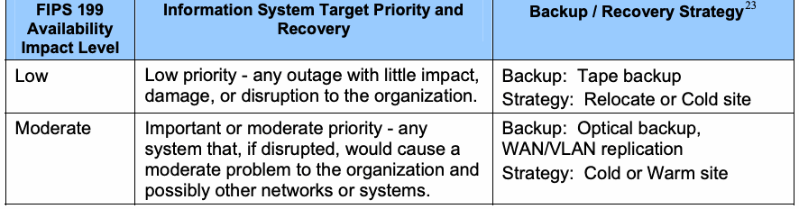
| FIPS 199 | 情報システムの目標優先度と復旧 | バックアップ／復旧戦略23 |
| 可用性 | ||
| 影響度レベル | ||
| 低 | 優先度低：停止による組織への影響、損害、または支障が小さいシステム。 | バックアップ：テープバックアップ 戦略：移転またはコールドサイト |
| 中 | 重要または中程度の優先度：中断すると組織に中程度の問題を引き起こし、他のネットワークやシステムにも影響する可能性があるシステム。 | バックアップ：光ディスクバックアップ、WAN／VLANレプリケーション 戦略：コールドサイトまたはウォームサイト |
原本PDFの抜粋画像
| FIPS 199 | Information System Target Priority and Recovery | Backup / Recovery Strategy23 |
| Availability | ||
| Impact Level | ||
| High | Mission-critical or high priority - the damage or disruption to these systems would cause the most impact on the organization, mission, and other networks and systems. | Backup: Mirrored systems and disc replication Strategy: Hot site |
原本PDFの抜粋画像
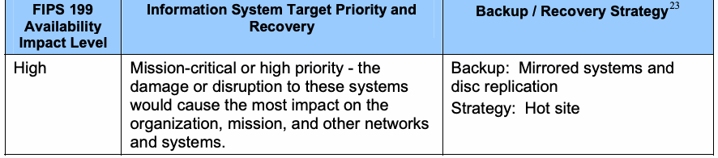
| FIPS 199 | 情報システムの目標優先度と復旧 | バックアップ／復旧戦略23 |
| 可用性 | ||
| 影響度レベル | ||
| 高 | ミッションクリティカルまたは優先度高：これらのシステムへの損害または中断は、組織、ミッション、および他のネットワークやシステムに最大の影響をもたらす。 | バックアップ：ミラーリングシステムおよびディスクレプリケーション 戦略：ホットサイト |
原本PDFの抜粋画像
3.4.2 Backup Methods and Offsite Storage
3.4.2 バックアップ方法および遠隔地保管
System data should be backed up regularly. Policies should specify the minimum frequency and scope of backups (e.g., daily or weekly, incremental or full) based on data criticality and the frequency that new information is introduced. Data backup policies should designate the location of stored data, file-naming conventions, media rotation frequency, and method for transporting data offsite. Data may be backed up on magnetic disk, tape, or optical disks, such as compact disks (CDs). The specific method chosen for conducting backups should be based on system and data availability and integrity requirements. These methods may include electronic vaulting, network storage, and tape library systems.24
システムデータは定期的にバックアップすべきである。ポリシーでは、データの重要度と新しい情報が追加される頻度に基づき、バックアップの最低頻度と対象範囲（例：毎日または毎週、増分またはフル）を定めるべきである。データバックアップポリシーでは、保存場所、ファイル命名規則、媒体のローテーション頻度、およびデータを遠隔地へ運搬する方法を指定すべきである。データは磁気ディスク、テープ、またはコンパクトディスク（CD）などの光ディスクにバックアップできる。バックアップ方法は、システムおよびデータの可用性・完全性に関する要件に基づいて選択すべきである。電子保管、ネットワークストレージ、テープライブラリシステムなどを利用できる。24
未レビュー訳It is good business practice to store backed-up data offsite. Commercial data storage facilities are specially designed to archive media and protect data from threatening elements. If using offsite storage, data is backed up at the organization’s facility and then labeled, packed, and transported to the storage facility. If the data is required for recovery or testing purposes, the organization contacts the storage
バックアップデータを遠隔地に保管することは、適切な業務慣行である。商用データ保管施設は、媒体を長期保存し、脅威となる要因からデータを保護するために特別に設計されている。遠隔地保管を利用する場合、組織の施設でデータをバックアップした後、ラベルを付け、梱包し、保管施設へ輸送する。復旧またはテストのためにデータが必要になった場合、組織は保管施設に連絡する。
未レビュー訳25
未レビュー訳facility requesting specific data to be transported to the organization or to an alternate facility. Commercial storage facilities often offer media transportation and response and recovery services. When selecting an offsite storage facility and vendor, the following criteria should be considered:
指定したデータを組織または代替施設へ輸送するよう依頼する。商用保管施設では、媒体の輸送、対応、および復旧サービスも提供することが多い。遠隔地保管施設および事業者を選定する際は、次の基準を検討すべきである。
未レビュー訳(cid:131) Geographic area: distance from the organization and the probability of the storage site being affected by the same disaster as the organization’s primary site; (cid:131) Accessibility: length of time necessary to retrieve the data from storage and the storage facility’s operating hours; (cid:131) Security: security capabilities of the shipping method, storage facility, and personnel; all must meet the data’s security requirements; (cid:131) Environment: structural and environmental conditions of the storage facility (i.e., temperature, humidity, fire prevention, and power management controls); and (cid:131) Cost: cost of shipping, operational fees, and disaster response/recovery services.
• 地理的条件：組織からの距離、および保管場所が組織の主たる拠点と同じ災害の影響を受ける可能性。 • アクセス性：保管データの取り出しに必要な時間、および保管施設の営業時間。 • セキュリティ：輸送方法、保管施設、人員のセキュリティ能力。いずれもデータのセキュリティ要件を満たす必要がある。 • 環境：保管施設の構造・環境条件（温度、湿度、防火、電力管理の制御など）。 • コスト：輸送費、運用手数料、災害対応・復旧サービスの費用。
未レビュー訳3.4.3 Alternate Sites
3.4.3 代替サイト
As stated in Section 2.1, NIST SP 800-53 identifies the CP controls for information systems. The FIPS 199 security categorization for the availability security objective determines which controls apply to a particular system. For example, an information system categorized with a low-availability security objective does not require alternate storage or a processing site (CP-6 and CP-7, respectively), and an information system with a moderate-availability security objective requires the system backup and testing the backup (CP-9 [1]). Further details and descriptions of the contingency planning controls are provided in Appendix E.
第2.1節で述べたように、NIST SP 800-53は情報システムに適用されるCP管理策を示している。可用性のセキュリティ目的に対するFIPS 199のセキュリティ分類によって、特定のシステムに適用する管理策が決まる。たとえば、可用性のセキュリティ目的が低と分類された情報システムには、代替保管場所や代替処理サイト（それぞれCP-6およびCP-7）は不要である。一方、可用性が中と分類された情報システムには、システムのバックアップとそのテストが求められる（CP-9 [1]）。緊急時対応計画管理策の詳細および説明は付録Eに示す。
未レビュー訳Although major disruptions with long-term effects may be rare, they should be accounted for in the contingency plan. Thus, for all FIPS 199 moderate- or high-impact systems, the plan should include a strategy to recover and perform system operations at an alternate facility for an extended period. Organizations may consider FIPS 199 low-impact systems for alternate site processing, but that is an organizational decision and not required. In general, three types of alternate sites are available:
長期的な影響を伴う大規模な中断はまれであるが、緊急時対応計画で考慮すべきである。したがって、FIPS 199で中影響または高影響に分類されるすべてのシステムについて、計画には、長期間にわたり代替施設でシステムを復旧し運用するための戦略を含めるべきである。FIPS 199で低影響に分類されるシステムについて、組織が代替サイトでの処理を検討してもよいが、これは組織の判断であり必須ではない。一般に、代替サイトには次の3種類がある。
未レビュー訳(cid:131) Dedicated site owned or operated by the organization; (cid:131) Reciprocal agreement or memorandum of agreement with an internal or external entity; and (cid:131) Commercially leased facility.
• 組織が所有または運営する専用サイト。 • 内部または外部の組織との相互援助協定または合意覚書。 • 商用の賃貸施設。
未レビュー訳Regardless of the type of alternate site chosen, the facility must be able to support system operations as defined in the contingency plan. The three alternate site types commonly categorized in terms of their operational readiness are cold sites, warm sites, or hot sites.26 Other variations or combinations of these can be found, but generally all variations retain similar core features found in one of these three site types. Progressing from basic to advanced, the sites are described below.
選択する代替サイトの種類にかかわらず、その施設は緊急時対応計画で定めるシステム運用を支援できなければならない。運用準備状況に基づき、代替サイトは一般にコールドサイト、ウォームサイト、またはホットサイトに分類される。26 これらのほかにも変形型や組み合わせ型があるが、通常はいずれも3種類のいずれかに見られる基本的な特徴を備えている。基本的なものから高度なものへと、各サイトを以下に説明する。
未レビュー訳(cid:131) Cold Sites are typically facilities with adequate space and infrastructure (electric power, telecommunications connections, and environmental controls) to support information system recovery activities. (cid:131) Warm Sites are partially equipped office spaces that contain some or all of the system hardware, software, telecommunications, and power sources. (cid:131) Hot Sites are facilities appropriately sized to support system requirements and configured with the necessary system hardware, supporting infrastructure, and support personnel. As discussed above, these three alternate site types are the most common. There are also variations, and hybrid mixtures of features from any one of the three. Each organization should evaluate its core requirements in order to establish the most effective solution. Two examples of variations to the site types are:
• コールドサイトは通常、情報システムの復旧活動を支援するのに十分な空間とインフラ（電力、通信接続、環境制御）を備えた施設である。 • ウォームサイトは一部の設備を備えたオフィス空間であり、システムのハードウェア、ソフトウェア、通信設備、および電源の一部または全部を含む。 • ホットサイトは、システム要件に見合った規模で、必要なシステムハードウェア、支援インフラ、および支援要員を備えた施設である。前述のとおり、これら3種類の代替サイトが最も一般的である。また、各種類の特徴を変えたものや組み合わせたものもある。各組織は、最も効果的な解決策を定めるため、基本要件を評価すべきである。サイトの種類の変形例を2つ挙げる。
未レビュー訳(cid:131) Mobile Sites are self-contained, transportable shells custom-fitted with specific telecommunications and system equipment necessary to meet system requirements. (cid:131) Mirrored Sites are fully redundant facilities with automated real-time information mirroring. Mirrored sites are identical to the primary site in all technical respects.
• モバイルサイトは、システム要件を満たすために必要な特定の通信設備およびシステム機器を備えた、自己完結型で移送可能な設備である。 • ミラーサイトは、リアルタイムで自動的に情報をミラーリングする、完全冗長化された施設である。技術面では主サイトと同一である。
未レビュー訳There are obvious cost and ready-time differences among the options. In these examples, the mirrored site is the most expensive choice, but it ensures virtually 100 percent availability. Cold sites are the least expensive to maintain, although they may require substantial time to acquire and install necessary equipment. Partially equipped sites, such as warm sites, fall in the middle of the spectrum. In many cases, mobile sites may be delivered to the desired location within 24 hours, but the time necessary for equipment installation and setup can increase this response time. The selection of fixed-site locations should account for the time and mode of transportation necessary to move personnel and/or equipment there. In addition, the fixed site should be in a geographic area that is unlikely to be negatively affected by the same hazard as the organization’s primary site.
各選択肢には、コストと利用可能になるまでの時間に明確な違いがある。ここで挙げた例では、ミラーサイトが最も高価だが、ほぼ100パーセントの可用性を確保する。コールドサイトは維持費が最も低い一方、必要な機器の調達と設置にかなりの時間を要する場合がある。ウォームサイトのように一部の設備を備えたサイトは、その中間に位置する。多くの場合、モバイルサイトは希望する場所に24時間以内に届けられるが、機器の設置とセットアップに必要な時間によって、対応時間が延びることがある。固定サイトの場所を選ぶ際は、人員や機器を移動させるために必要な時間と輸送手段を考慮すべきである。また、固定サイトは、組織の主サイトと同じハザードによる悪影響を受けにくい地域に設置すべきである。
Table summarizes the criteria that can be employed to determine which type of alternate site meets the organization’s requirements. Sites should be analyzed further by the organization, including considerations given to business impacts and downtime defined in the BIA. As sites are evaluated, the ISCP Coordinator should ensure that the system’s security, management, operational, and technical controls are compatible with the prospective site. Such controls may include firewalls, physical access controls, and personnel security requirements of the staff supporting the site.
次の表は、組織の要件を満たす代替サイトの種類を判断する際に用いる基準をまとめたものである。組織は、BIAで定義した事業影響やダウンタイムも考慮し、サイトをさらに分析すべきである。サイトを評価する際、ISCPコーディネーターは、システムのセキュリティ、管理、運用、および技術上の管理策が候補サイトと適合することを確認すべきである。これらの管理策には、ファイアウォール、物理的アクセス制御、およびサイトを支援する職員に対する人員セキュリティ要件などが含まれる。
Table 3-34: Sample Alternate Site Criteria
表3-4：代替サイトの評価基準の例
未レビュー訳| Site | Cost | Hardware | Telecommunications | Setup Time | Location |
| Equipment | |||||
| Cold Site | Low | None | None | Long | Fixed |
| Warm Site | Medium | Partial | Partial/Full | Medium | Fixed |
| Hot Site | Medium/High | Full | Full | Short | Fixed |
原本PDFの抜粋画像
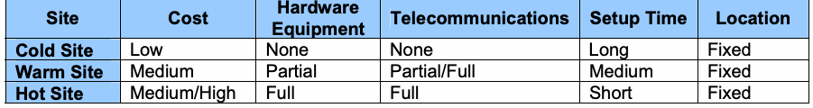
| サイト | コスト | ハードウェア | 通信 | セットアップ時間 | 場所 |
| 機器 | |||||
| コールドサイト | 低 | なし | なし | 長い | 固定 |
| ウォームサイト | 中 | 一部 | 一部／全部 | 中程度 | 固定 |
| ホットサイト | 中／高 | 全部 | 全部 | 短い | 固定 |
Alternate sites may be owned and operated by the organization (internal recovery), or commercial sites may be available under contract. If contracting for the site with a commercial vendor, adequate testing time, work space, security requirements, hardware requirements, telecommunications requirements, support services, and recovery days (how long the organization can occupy the space during the recovery period) must be negotiated and clearly stated in the contract. Customers should be aware that multiple organizations may contract with a vendor for the same alternate site; as a result, the site may be unable to accommodate all of the customers if a disaster affects enough of those customers simultaneously. The vendor’s policy on how this situation should be addressed and how priority status is determined should be negotiated.
代替サイトは、組織が所有・運営する（内部復旧）場合もあれば、商用サイトを契約に基づき利用できる場合もある。商用事業者とサイト利用契約を結ぶ場合、十分なテスト時間、作業スペース、セキュリティ要件、ハードウェア要件、通信要件、支援サービス、および復旧日数（復旧期間中に組織がそのスペースを利用できる日数）を、交渉して契約に明記しなければならない。顧客は、複数の組織が同じ代替サイトについて事業者と契約している場合があることを認識すべきである。その結果、同時に多数の顧客が災害の影響を受けると、サイトが全顧客を受け入れられない可能性がある。この状況への対処方法と優先順位の決定方法について、事業者の方針を交渉しておくべきである。
Two or more organizations with similar or identical system configurations and backup technologies may enter into a formal agreement to serve as alternate sites for each other or enter into a joint contract for an alternate site. This type of site is set up via a reciprocal agreement or memorandum of understanding (MOU). A reciprocal agreement should be entered into carefully because each site must be able to support the other, in addition to its own workload, in the event of a disaster. This type of agreement requires the recovery sequence for the systems from both organizations to be prioritized from a joint perspective, favorable to both parties. Testing should be conducted at the partnering sites to evaluate the extra processing thresholds, compatible system and backup configurations, sufficient telecommunications connections, compatible security measures, and the sensitivity of data that might be accessible by other privileged users, in addition to functionality of the recovery strategy. Consideration should also be given to system interconnections and possible interconnection security agreements (ISAs). NIST SP 800-47, Security Guide for Interconnecting Information Technology Systems, provides guidance for planning, establishing, maintaining, and terminating interconnections between information systems that are owned and operated by different organizations.
類似または同一のシステム構成とバックアップ技術を持つ2つ以上の組織は、相互に代替サイトとして機能する正式な協定を結ぶか、代替サイトを共同契約できる。この方式は、相互援助協定または合意覚書（MOU）によって実現する。相互援助協定を結ぶ際は慎重を要する。災害時には、各サイトが自組織の業務に加え、相手組織も支援できなければならないためである。この種の協定では、双方にとって公平となるよう、両組織のシステム復旧順序を共同の観点から優先付けする必要がある。提携先のサイトでテストを行い、追加処理能力の限界、システムおよびバックアップ構成の互換性、十分な通信接続、セキュリティ対策の互換性、他の特権ユーザーがアクセスする可能性のあるデータの機密性、ならびに復旧戦略の機能を評価すべきである。システム間接続および相互接続セキュリティ合意（ISA）の可能性も検討すべきである。NIST SP 800-47「情報技術システム相互接続のためのセキュリティガイド」は、異なる組織が所有・運営する情報システム間の相互接続を計画、確立、維持、および終了するための指針を示している。
未レビュー訳An MOU or an SLA for an alternate site should be developed specific to the organization’s needs and the partner organization’s capabilities. The legal department of each party must review and approve the agreement. In general, the agreement should address at a minimum, each of the following elements:
代替サイトに関するMOUまたはSLAは、組織のニーズと提携組織の能力に合わせて策定すべきである。各当事者の法務部門が協定を審査し、承認しなければならない。一般に、協定では少なくとも次の各項目を扱うべきである。
未レビュー訳(cid:131) Contract/agreement duration; (cid:131) Cost/fee structure for disaster declaration and occupancy (daily usage), administration, maintenance, testing, annual cost/fee increases, transportation support cost (receipt and return of offsite data/supplies, as applicable), cost/expense allocation (as applicable), and billing and payment schedules; (cid:131) Disaster declaration (i.e., circumstances constituting a disaster, notification procedures);
• 契約／協定の期間。 • 災害宣言および施設利用（日単位の利用料）、管理、保守、テスト、年次の料金改定、輸送支援（該当する場合の遠隔地データ／物資の受領・返送）、費用負担（該当する場合）、請求および支払い日程に関する費用／料金体系。 • 災害宣言（災害とみなす状況、通知手順など）。
未レビュー訳(cid:131) Site/facility priority access and/or use; (cid:131) Site availability; (cid:131) Site guarantee; (cid:131) Other clients subscribing to same resources and site, and the total number of site subscribers, as applicable; (cid:131) Contract/agreement change or modification process; (cid:131) Contract/agreement termination conditions; (cid:131) Process to negotiate extension of service; (cid:131) Guarantee of compatibility; (cid:131) Information system requirements (including data and telecommunication requirements) for hardware, software, and any special system needs (hardware and software); (cid:131) Change management and notification requirements, including hardware, software, and infrastructure; (cid:131) Security requirements, including special security needs; (cid:131) Staff support provided/not provided; (cid:131) Facility services provided/not provided (use of onsite office equipment, cafeteria, etc.); (cid:131) Testing, including scheduling, availability, test time duration, and additional testing, if required; (cid:131) Records management (onsite and offsite), including electronic media and hardcopy; (cid:131) Service-level management (performance measures and management of quality of information system services provided); (cid:131) Work space requirements (e.g., chairs, desks, telephones, personal computers); (cid:131) Supplies provided/not provided (e.g., office supplies); (cid:131) Additional costs not covered elsewhere; (cid:131) Other contractual issues, as applicable; and (cid:131) Other technical requirements, as applicable.
• サイト／施設への優先アクセスおよび利用。 • サイトの利用可能性。 • サイトの保証。 • 同じリソースとサイトを契約する他の顧客、および該当する場合は契約者総数。 • 契約／協定の変更または修正手続き。 • 契約／協定の終了条件。 • サービス延長を交渉する手続き。 • 互換性の保証。 • 情報システム要件（データおよび通信要件を含む）：ハードウェア、ソフトウェア、特殊なシステム要件。 • ハードウェア、ソフトウェア、およびインフラを含む変更管理・通知要件。 • 特別なセキュリティ要件を含むセキュリティ要件。 • 提供される／提供されない職員支援。 • 提供される／提供されない施設サービス（構内の事務機器、食堂の利用など）。 • スケジュール、利用可能性、テスト時間、および必要な追加テストを含むテスト。 • 電子媒体と紙媒体を含む記録管理（構内および遠隔地）。 • 提供される情報システムサービスの品質測定および管理を含むサービスレベル管理。 • 作業スペース要件（椅子、机、電話、パーソナルコンピューターなど）。 • 提供される／提供されない備品（事務用品など）。 • 他の項目に含まれない追加費用。 • 該当するその他の契約事項。 • 該当するその他の技術要件。
未レビュー訳3.4.4 Equipment Replacement
3.4.4 機器の交換
If the information system is damaged or destroyed or the primary site is unavailable, necessary hardware and software will need to be activated or procured quickly and delivered to the alternate location. Three basic strategies exist to prepare for equipment replacement.
情報システムが損傷または破壊された場合、あるいは主サイトが利用できない場合、必要なハードウェアおよびソフトウェアを速やかに起動または調達し、代替拠点へ届ける必要がある。機器交換に備える基本戦略は3つある。
(cid:131) Vendor Agreements. As the contingency plan is being developed, SLAs with hardware, software, and support vendors may be made for emergency maintenance service. The SLA should specify how quickly the vendor must respond after being notified. The agreement should also give the organization priority status for the shipment of replacement equipment over equipment being purchased for normal operations. SLAs should further discuss what priority status the organization will receive in the event of a catastrophic disaster involving multiple vendor clients. In such cases, organizations with health- and safety-dependent processes will
• 事業者との合意。緊急時対応計画の策定時に、ハードウェア、ソフトウェア、および支援サービスの事業者と、緊急保守サービスに関するSLAを結ぶことができる。SLAには、通知を受けてから事業者が応答するまでの時間を明記すべきである。また、通常運用向けに購入される機器よりも、交換機器の発送で組織を優先する旨も合意に記載すべきである。複数の顧客が関係する大規模災害時に、組織がどの優先順位を得るかについてもSLAで定めるべきである。そのような場合、健康・安全に依存するプロセスを持つ組織は、
未レビュー訳often receive the highest priority for shipment. The details of these negotiations should be documented in the SLA, which should be maintained with the contingency plan. (cid:131) Equipment Inventory. Required equipment may be purchased in advance and stored at a secure offsite location, such as an alternate site where recovery operations will take place (warm or mobile site) or at another location where they will be stored and then shipped to the alternate site. This solution has certain drawbacks. An organization must commit financial resources to purchase this equipment in advance, and the equipment could become obsolete or unsuitable for use over time because system technologies and requirements change. (cid:131) Existing Compatible Equipment. Equipment currently housed and used by the contracted hot site or by another organization within the organization may be used. Agreements made with hot sites and reciprocal internal sites stipulate that similar and compatible equipment will be available for contingency use by the organization.
原文更新後、再確認待ち
When evaluating the choices, the ISCP Coordinator should consider that purchasing equipment when needed is cost-effective but can add significant overhead time to recovery while waiting for shipment and setup; conversely, storing unused equipment is costly, but allows recovery operations to begin more quickly. When selecting the most appropriate strategy, note that the availability of transportation may be limited or temporarily halted in the event of a catastrophic disaster. Based on impacts discovered through the BIA, consideration should be given to the possibility of a widespread disaster entailing mass equipment replacement and transportation delays that would extend the recovery period. Regardless of the strategy selected, detailed lists of equipment needs and specifications should be maintained within the contingency plan. Documentation of equipment lists is discussed further in Section 4.1.
選択肢を評価する際、ISCPコーディネーターは、必要な時点で機器を購入する方法は費用対効果が高い一方、発送と設置を待つため復旧に大幅な時間が加わる可能性があり、使わない機器を保管する方法は費用がかかる一方で、復旧運用をより早く開始できる点を考慮すべきである。最適な戦略を選ぶ際は、大規模災害時に輸送手段が制限されたり、一時的に停止したりする可能性にも留意する。BIAで明らかになった影響を踏まえ、広域災害によって大量の機器交換が必要となり、輸送遅延で復旧期間が延びる可能性も検討すべきである。どの戦略を選ぶ場合でも、必要な機器と仕様の詳細な一覧を緊急時対応計画に維持すべきである。機器一覧の文書化については、第4.1節で詳述する。
3.4.5 Cost Considerations
3.4.5 コストに関する考慮事項
The ISCP Coordinator should ensure that the strategy chosen can be implemented effectively with available personnel and financial resources. The cost of each type of alternate site, equipment replacement, and storage option under consideration should be weighed against budget limitations. The coordinator should determine known contingency planning expenses, such as alternate site contract fees, and those that are less obvious, such as the cost of implementing an agency-wide contingency awareness program and contractor support. The budget must be sufficient to encompass software, hardware, travel and shipping, testing, plan training programs, awareness programs, labor hours, other contracted services, and any other applicable resources (e.g., desks, telephones, fax machines, pens, and paper). The organization should perform a cost-benefit analysis to identify the optimum contingency strategy. Table provides a template for evaluating cost considerations.
ISCPコーディネーターは、選択した戦略を利用可能な人員と財源で効果的に実施できることを確認すべきである。検討対象となる代替サイト、機器交換、および保管方法それぞれのコストを、予算上の制約と比較検討する。代替サイトの契約料など既知の緊急時対応計画費用だけでなく、機関全体の緊急時対応意識向上プログラムや請負業者の支援など、分かりにくい費用も特定すべきである。予算には、ソフトウェア、ハードウェア、出張・輸送、テスト、計画研修プログラム、意識向上プログラム、人件費、その他の契約サービス、および該当するその他の資源（机、電話、ファクス、ペン、用紙など）を含める必要がある。組織は費用便益分析を実施し、最適な緊急時対応戦略を特定すべきである。次の表は、コストを評価するためのテンプレートである。
未レビュー訳Table 3-5: Contingency Strategy Budget Planning Template
表3-5：緊急時対応戦略の予算計画テンプレート
未レビュー訳| Contingency Resources | Strategies | Vendor Costs | Hardware Costs | Software Costs | Travel / | Labor / | Testing Costs | Supply Costs |
| Shipping | Contractor | |||||||
| Costs | Costs | |||||||
| Alternate Site | Cold Site | |||||||
| Warm Site | ||||||||
| Hot Site | ||||||||
| Offsite Storage | Commercial | |||||||
| Internal | ||||||||
| Equipment Replace- ment | SLA | |||||||
| Storage | ||||||||
| Existing Use |
原本PDFの抜粋画像
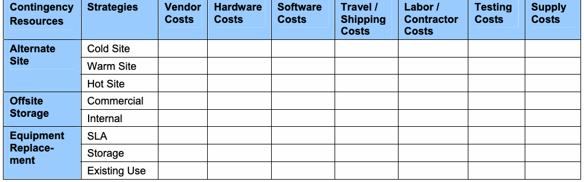
| 緊急時対応リソース | 戦略 | 事業者費用 | ハードウェア費用 | ソフトウェア費用 | 出張／ | 人件費／ | テスト費用 | 備品費用 |
| 輸送 | 請負業者 | |||||||
| 費用 | 費用 | |||||||
| 代替サイト | コールドサイト | |||||||
| ウォームサイト | ||||||||
| ホットサイト | ||||||||
| 遠隔地保管 | 商用 | |||||||
| 内部 | ||||||||
| 機器交換 | SLA | |||||||
| 保管 | ||||||||
| 既存機器の使用 |
原本PDFの抜粋画像
原本PDFの抜粋画像
原本PDFの抜粋画像
原本PDFの抜粋画像
原本PDFの抜粋画像
原本PDFの抜粋画像
原本PDFの抜粋画像
原本PDFの抜粋画像
原本PDFの抜粋画像
3.4.6 Roles and Responsibilities
3.4.6 役割と責任
未レビュー訳Having selected and implemented the backup and system recovery strategies, the ISCP Coordinator must designate appropriate teams to implement the strategy. Each team should be trained and ready to respond in the event of a disruptive situation requiring plan activation. Recovery personnel should be assigned to one of several specific teams that will respond to the event, recover capabilities, and return the system to normal operations. To do so, recovery team members need to clearly understand the team’s recovery effort goal, individual procedures the team will execute, and how interdependencies between recovery teams may affect overall strategies.
バックアップとシステム復旧の戦略を選択・実装した後、ISCPコーディネーターは、その戦略を実行する適切なチームを指定しなければならない。各チームは、計画の発動が必要となる中断事象に備えて訓練を受け、対応できる状態にしておくべきである。復旧要員を特定のチームに割り当て、事象への対応、機能の復旧、およびシステムの通常運用への復帰を担わせる。復旧チームのメンバーは、チームが目指す復旧目標、各自が実行する手順、および復旧チーム間の相互依存関係が全体戦略に及ぼし得る影響を明確に理解する必要がある。
未レビュー訳The types of teams required are based on the information system affected and could be tailored according to FIPS 199 impact levels to reflect specific differences in requirements and backup procedures. The size of each team, team titles, and hierarchy designs depend on the organization. In addition to a single authoritative role for overall decision-making responsibility, including plan activation, a capable strategy will require some or all of the following groups:
必要なチームの種類は影響を受ける情報システムに基づいて決め、要件やバックアップ手順の違いを反映するためFIPS 199の影響度レベルに合わせて調整できる。各チームの規模、チーム名、および階層構造は組織によって異なる。計画の発動を含む全体的な意思決定を担う単一の権限者に加え、有効な戦略には、次のグループの一部または全部が必要となる。
未レビュー訳(cid:131) Management team (including the ISCP
• 管理チーム（ISCP
未レビュー訳(cid:131) Application recovery team(s);
• アプリケーション復旧チーム。
未レビュー訳Coordinator);
コーディネーターを含む）。
未レビュー訳(cid:131) Telecommunications team;
• 通信チーム。
未レビュー訳(cid:131) Outage assessment team;
• 停止影響評価チーム。
未レビュー訳(cid:131) Test team;
• テストチーム。
未レビュー訳(cid:131) Operating system administration team;
• オペレーティングシステム管理チーム。
未レビュー訳(cid:131) Transportation and relocation team;
• 輸送・移転チーム。
未レビュー訳(cid:131) Server recovery team (e.g., client server,
• サーバー復旧チーム（例：クライアント／サーバー、
未レビュー訳(cid:131) Media relations team;
• メディア対応チーム。
未レビュー訳Web server);
Webサーバー）。
未レビュー訳(cid:131) Legal affairs team;
• 法務チーム。
未レビュー訳(cid:131) Local Area Network/Wide Area Network (LAN/WAN) recovery team;
• ローカルエリアネットワーク／ワイドエリアネットワーク（LAN／WAN）復旧チーム。
未レビュー訳(cid:131) Physical/personnel security team; and
• 物理・人員セキュリティチーム。
未レビュー訳(cid:131) Database recovery team;
• データベース復旧チーム。
未レビュー訳(cid:131) Procurement team (equipment and supplies).
• 調達チーム（機器および備品）。
未レビュー訳(cid:131) Network operations recovery team;
• ネットワーク運用復旧チーム。
未レビュー訳Personnel should be chosen to staff these teams based on their skills and knowledge. Ideally, teams are staffed with personnel responsible for the same or similar functions under normal conditions. For example, server recovery team members should include the server administrators. Team members must understand not only the contingency plan purpose, but also the procedures necessary for executing the recovery strategy. Teams should be sufficient in size to remain viable if some members are unavailable to respond or alternate team members may be designated. Similarly, team members should be familiar with the goals and procedures of other teams to facilitate cross-team coordination. The ISCP Coordinator should also consider that a disruption could render some personnel unavailable to respond. In this situation, executing the plan may be possible only by using personnel from another geographic area of the organization or by hiring contractors or vendors. Such personnel may be coordinated and trained as an alternate team.
チームの要員は、技能と知識に基づいて選定すべきである。理想的には、通常時に同一または類似の機能を担う職員をチームに配置する。たとえば、サーバー復旧チームにはサーバー管理者を含めるべきである。チームのメンバーは、緊急時対応計画の目的だけでなく、復旧戦略の実行に必要な手順も理解しなければならない。一部のメンバーが対応できない場合にも活動を継続できる人数を確保するか、代替要員を指定しておくべきである。また、チーム間の調整を円滑にするため、各メンバーは他チームの目標と手順にも精通すべきである。ISCPコーディネーターは、中断によって一部の要員が対応できなくなる可能性も考慮すべきである。その場合、組織内の別の地域の要員、または請負業者や事業者の要員を使わなければ計画を実行できないことがある。こうした要員を代替チームとして調整し、訓練してもよい。
未レビュー訳Each team is led by a team leader who directs overall team operations, acts as the team’s representative to management, and liaises with other team leaders. The team leader disseminates information to team members and approves any decisions that must be made within the team. Team leaders should have a designated alternate to act as the leader if the primary leader is unavailable.
各チームはチームリーダーが率い、チーム全体の運用を指揮し、管理者に対するチームの代表を務め、他のチームリーダーと連絡調整する。チームリーダーはメンバーに情報を伝達し、チーム内で行う必要がある意思決定を承認する。主リーダーが対応できない場合に備え、代替リーダーを指定しておくべきである。
未レビュー訳For most systems, a management team is necessary for providing overall guidance following a major system disruption or emergency. The team is responsible for activating the contingency plan and supervising the execution of contingency operations. The management team also facilitates communications among other teams and supervises information system contingency plan tests and exercises. Some or all of the management team may lead specialized recovery teams. A senior management official, such as the CIO, has the ultimate authority to activate the plan and to make decisions regarding spending levels, acceptable risk, and interagency coordination. The senior management official typically leads the management team.
ほとんどのシステムでは、大規模なシステム中断または緊急事態の後に全体的な指針を示す管理チームが必要となる。管理チームは緊急時対応計画を発動し、緊急時運用の実行を監督する責任を負う。また、管理チームは他のチーム間の連絡を促進し、情報システム緊急時対応計画のテストおよび演習を監督する。管理チームの一部または全員が、専門の復旧チームを率いることもある。CIOなどの上級管理職は、計画を発動し、支出水準、許容可能なリスク、および省庁間調整に関する意思決定を行う最終権限を持つ。通常、上級管理職が管理チームを率いる。
3.5 Plan Testing, Training, and Exercises (TT&E)
3.5 計画のテスト、訓練、および演習（TT&E）
An ISCP should be maintained in a state of readiness, which includes having personnel trained to fulfill their roles and responsibilities within the plan, having plans exercised to validate their content, and having systems and system components tested to ensure their operability in the environment specified in the ISCP. In addition, as indicated in Step 4 (Assess Security Controls) of the RMF, the effectiveness of the information system controls should be assessed by using the procedures documented in NIST SP 800-53A, Guide for Assessing the Security Controls in Federal Information Systems. NIST SP 800-84, Guide to Test, Training and Exercise Programs for Information Technology Plans and Capabilities, provides guidelines on designing, developing, conducting, and evaluating test, training, and exercise (TT&E) events so that organizations can improve their ability to prepare for, respond to, manage, and recover from adverse events. While the majority of TT&E activities occur during the Operations/Maintenance phase, initial TT&E events should be conducted during the Implementation/Assessment phase of the SDLC to validate ISCP recovery procedures.
ISCPは、計画内の役割と責任を果たす要員が訓練を受け、計画の内容を検証する演習が実施され、ISCPで想定する環境でシステムおよびシステムコンポーネントが動作することをテストするなど、常に準備状態に維持すべきである。また、RMFのステップ4（セキュリティ管理策の評価）で示されているように、NIST SP 800-53A「連邦情報システムのセキュリティ管理策の評価ガイド」に記載された手順を用いて、情報システム管理策の有効性を評価すべきである。NIST SP 800-84「情報技術計画および能力のためのテスト、訓練、演習プログラムガイド」は、組織が有害事象への準備、対応、管理、および復旧能力を高めるため、TT&E活動の設計、策定、実施、および評価に関する指針を示す。TT&E活動の大半は運用・保守段階に行われるが、ISCPの復旧手順を検証する初期TT&E活動は、SDLCの実装・評価段階で実施すべきである。
未レビュー訳Organizations should conduct TT&E events periodically, following organizational or system changes, or the issuance of new TT&E guidance, or as otherwise needed. Execution of TT&E events assists organizations in determining the plan’s effectiveness, and that all personnel know what their roles are in the conduct of each information system plan. TT&E event schedules are often dictated in part by organizational requirements. For example, NIST SP 800-53 includes a control (CP-4) for federal organizations to conduct exercises or tests for their systems’ contingency plans around an organization-defined frequency. Section 3.5.4 provides guidance on the type of TT&E identified for each FIPS 199 impact level.
組織は、TT&E活動を定期的に、組織またはシステムの変更後、新たなTT&E指針の発行後、または必要に応じて実施すべきである。TT&E活動を実施することで、計画が有効かどうか、および各情報システム計画の実施時に全要員が自分の役割を理解しているかを判断できる。TT&Eの実施日程は、組織の要件によって一部が定められることが多い。たとえば、NIST SP 800-53には、連邦組織が組織定義の頻度でシステムの緊急時対応計画に関する演習またはテストを実施するための管理策（CP-4）が含まれる。各FIPS 199影響度レベルで実施するTT&Eの種類については、第3.5.4節に指針を示す。
未レビュー訳For each TT&E activity conducted, results are documented in an after-action report, and Lessons Learned corrective actions are captured for updating information in the ISCP. While NIST SP 800-84 provides detailed information on how to plan and conduct TT&E activities for information systems, the following sections provide summarized details.
実施した各TT&E活動の結果を事後報告書に記録し、ISCPの情報を更新するための教訓に基づく是正措置をまとめる。NIST SP 800-84は、情報システムのTT&E活動を計画・実施する方法を詳しく説明している。以下の節では、その概要を示す。
3.5.1 Testing
3.5.1 テスト
ISCP testing is a critical element of a viable contingency capability. Testing enables plan deficiencies to be identified and addressed by validating one or more of the system components and the operability of the plan. Testing can take on several forms and accomplish several objectives but should be conducted in as close to an operating environment as possible. Each information system component should be tested to confirm the accuracy of individual recovery procedures. The following areas should be addressed in a contingency plan test, as applicable:
ISCPのテストは、有効な緊急時対応能力を維持するうえで重要な要素である。テストによって、システムコンポーネントの一つ以上と計画の運用可能性を検証し、計画の不備を特定して対処できる。テストにはさまざまな形式があり、複数の目的を達成できるが、可能な限り実運用環境に近い条件で実施すべきである。各情報システムコンポーネントをテストし、個々の復旧手順が正確であることを確認すべきである。該当する場合、緊急時対応計画のテストでは次の領域を扱う。
(cid:131) Notification procedures; (cid:131) System recovery on an alternate platform from backup media; (cid:131) Internal and external connectivity; (cid:131) System performance using alternate equipment; (cid:131) Restoration of normal operations; and
• 通知手順。 • バックアップ媒体を使った代替プラットフォーム上でのシステム復旧。 • 内部および外部との接続性。 • 代替機器を使用したシステム性能。 • 通常運用の復旧。および
未レビュー訳(cid:131) Other plan testing (where coordination is identified, i.e., COOP, BCP).
• その他の計画テスト（COOP、BCPなど、連携が必要と特定された計画）。
未レビュー訳To derive the most value from the test, the ISCP Coordinator should develop a test plan designed to examine the selected element(s) against explicit test objectives and success criteria. The use of test objectives and success criteria enable the effectiveness of each system element and the overall plan to be assessed. The test plan should include a schedule detailing the time frames for each test and test participants. The test plan should also clearly delineate scope, scenario, and logistics. The scenario chosen may be a worst-case incident or an incident most likely to occur. It should mimic reality as closely as possible.
テストの価値を最大限に高めるため、ISCPコーディネーターは、選択した要素を明示的なテスト目標および成功基準に照らして評価できるテスト計画を策定すべきである。テスト目標と成功基準を用いることで、各システム要素と計画全体の有効性を評価できる。テスト計画には、各テストの期間と参加者を示す日程を含めるべきである。また、範囲、シナリオ、および実施要領を明確に定めるべきである。シナリオには、最悪の事態を想定したインシデント、または発生可能性が最も高いインシデントを選べる。できる限り現実を再現すべきである。
未レビュー訳| Testing | Tests are evaluation tools that use quantifiable metrics to validate the operability of an information system or system component in an operational environment. For example, an organization could test call tree lists to determine if calling can be executed within prescribed time limits; another test may be removing power from a system or system component. A test is conducted in as close to an operational environment as possible; if feasible, an actual test of the components or systems used to conduct daily operations for the organization should be used.27 The scope of testing can range from individual system components or systems to comprehensive tests of all systems and components that support an ISCP. Tests often focus on recovery and backup operations; however, testing varies depending on the FIPS 199 impact level, the goal of the test, and its relation to a specific ISCP. |
原本PDFの抜粋画像
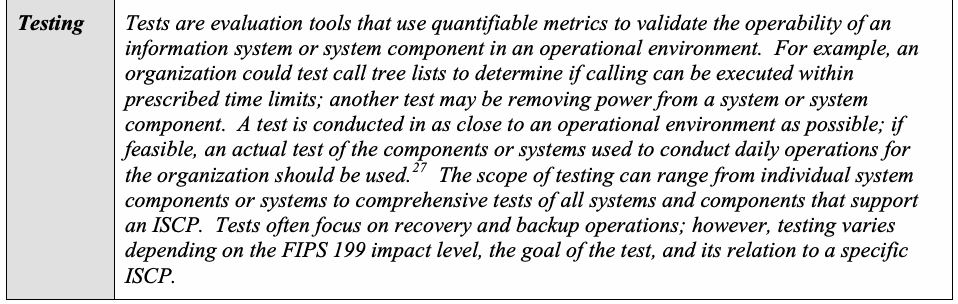
| テスト | テストは、定量化可能な指標を使って情報システムまたはシステムコンポーネントが運用環境で動作することを検証する評価手段である。たとえば、組織は連絡網のリストをテストし、定められた時間内に連絡を実施できるか確認できる。また、システムまたはそのコンポーネントへの電力を遮断するテストも考えられる。テストは可能な限り実運用環境に近い条件で実施し、実行可能であれば、組織の日常業務で使用するコンポーネントまたはシステムそのものをテストすべきである。テストの範囲は、個々のシステムコンポーネントやシステムから、ISCPを支援する全システムおよびコンポーネントの包括的なテストまで幅広い。テストでは復旧およびバックアップ運用に重点を置くことが多いが、内容はFIPS 199の影響度レベル、テストの目的、および特定のISCPとの関係に応じて異なる。 |
3.5.2 Training
3.5.2 訓練
Training for personnel with contingency plan responsibilities should focus on familiarizing them with ISCP roles and teaching skills necessary to accomplish those roles. This approach helps ensure that staff is prepared to participate in tests and exercises as well as actual outage events. Training should be provided at least annually. Personnel newly appointed to ISCP roles should receive training shortly thereafter. Ultimately, ISCP personnel should be trained to the extent that that they are able to execute their respective recovery roles and responsibilities without aid of the actual ISCP document. This is an important goal in the event that paper or electronic versions of the plan are unavailable for the first few hours, as a result of the disruption. Recovery personnel should be trained on the following plan elements:
緊急時対応計画の責任を担う要員への訓練では、ISCPでの役割を理解させ、その役割を果たすために必要な技能を教えることに重点を置くべきである。これにより、職員がテストや演習だけでなく、実際の停止事象にも参加できるよう準備を整えられる。訓練は少なくとも年1回実施すべきである。ISCPの役割に新たに任命された要員には、その後速やかに訓練を実施すべきである。最終的には、ISCP要員が実際のISCP文書を参照しなくても各自の復旧上の役割と責任を果たせる程度まで訓練を受けるべきである。中断の結果、最初の数時間に紙または電子版の計画を利用できない場合に備えるうえで、これは重要な目標である。復旧要員は、計画の次の要素について訓練を受けるべきである。
未レビュー訳(cid:131) Purpose of the plan; (cid:131) Cross-team coordination and communication; (cid:131) Reporting procedures; (cid:131) Security requirements; (cid:131) Team-specific processes (Activation and Notification, Recovery, and Reconstitution Phases); and (cid:131) Individual responsibilities (Activation and Notification, Recovery, and Reconstitution Phases).
• 計画の目的。 • チーム間の調整と連絡。 • 報告手順。 • セキュリティ要件。 • チーム固有のプロセス（発動・通知、復旧、再構成の各フェーズ）。および • 個人の責任（発動・通知、復旧、再構成の各フェーズ）。
未レビュー訳| Training | For the purposes of this publication and as documented in NIST SP 800-84, training refers only to informing personnel of their roles and responsibilities within a particular information system plan and teaching them skills related to those roles and responsibilities, thereby preparing them for participation in exercises, tests, and actual emergency situations related to the ISCP. Training personnel on their roles and responsibilities before an exercise or test event is typically split between a presentation on their roles and responsibilities and activities that allow personnel to demonstrate their understanding of the subject matter. |
原本PDFの抜粋画像
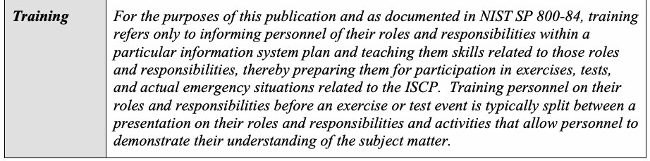
| 訓練 | 本書の目的上、またNIST SP 800-84に記載されているとおり、訓練とは、特定の情報システム計画における要員の役割と責任を周知し、その役割と責任に関する技能を教え、ISCPに関係する演習、テスト、および実際の緊急事態に参加できるよう準備することのみを指す。演習またはテストの前に要員へ役割と責任を訓練する際は、通常、その役割と責任に関する説明と、要員が対象事項への理解を実演できる活動を組み合わせる。 |
3.5.3 Exercises
3.5.3 演習
NIST SP 800-84 identifies the following types of exercises widely used in information system TT&E programs by single organizations:
NIST SP 800-84は、単一組織の情報システム向けTT&Eプログラムで広く用いられる次の種類の演習を示している。
(cid:131) Tabletop Exercises. Tabletop exercises are discussion-based exercises where personnel meet in a classroom setting or in breakout groups to discuss their roles during an emergency and their responses to a particular emergency situation. A facilitator presents a scenario and asks the exercise participants questions related to the scenario, which initiates a discussion among the participants of roles, responsibilities, coordination, and decision making. A tabletop exercise is discussion-based only and does not involve deploying equipment or other resources.
• 机上演習。机上演習は討議形式の演習であり、要員が教室または小グループに集まり、緊急時における自分の役割と、特定の緊急事態への対応を話し合う。進行役がシナリオを提示し、参加者に関連する質問を投げかけることで、役割、責任、調整、および意思決定に関する討議を促す。机上演習は討議のみで行い、機器やその他のリソースを展開しない。
未レビュー訳(cid:131) Functional Exercises. Functional exercises allow personnel to validate their operational readiness for emergencies by performing their duties in a simulated operational environment. Functional exercises are designed to exercise the roles and responsibilities of specific team members, procedures, and assets involved in one or more functional aspects of a plan (e.g., communications, emergency notifications, system equipment setup). Functional exercises vary in complexity and scope, from validating specific aspects of a plan to full-scale exercises that address all plan elements.28 Functional exercises allow staff to execute their roles and responsibilities as they would in an actual emergency situation, but in a simulated manner.
• 機能演習。機能演習では、模擬運用環境で担当業務を実行し、要員が緊急事態への運用準備を検証できる。1つ以上の計画機能（通信、緊急通知、システム機器のセットアップなど）に関係する特定のチームメンバーの役割・責任、手順、および資産を演習するよう設計する。機能演習の複雑さと範囲は、計画の特定部分の検証から、計画の全要素を扱う実動演習までさまざまである。28 機能演習では、実際の緊急事態を模擬した形で職員が各自の役割と責任を実行する。
未レビュー訳| Exercises | An exercise is a simulation of an emergency designed to validate the viability of one or more aspects of an ISCP. In an exercise, personnel with roles and responsibilities in a particular ISCP meet to validate the content of a plan through discussion of their roles and their responses to emergency situations, execution of responses in a simulated operational environment, or other means of validating responses that do not involve using the actual operational environment. Exercises are scenario-driven, such as a power failure in one of the organization’s data centers or a fire causing certain systems to be damaged, with additional situations often being presented during the course of an exercise. |
原本PDFの抜粋画像
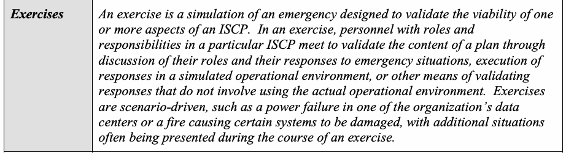
| 演習 | 演習とは、ISCPの1つ以上の側面が実行可能であることを検証するために設計された緊急事態のシミュレーションである。特定のISCPで役割と責任を担う要員が集まり、役割と緊急事態への対応についての討議、模擬運用環境での対応実行、または実運用環境を使用しないその他の方法によって、計画の内容を検証する。演習はシナリオに基づいて実施する。たとえば、組織のデータセンターでの停電や、特定のシステムに損害を与える火災などを想定し、演習中に追加の状況を提示することも多い。 |
3.5.4 TT&E Program Summary
3.5.4 TT&Eプログラムの概要
A TT&E program provides an overall framework for determining, scheduling, and setting objectives for TT&E activities. Guidance on establishing an effective ISCP TT&E program and the various methods and approaches for conducting TT&E activities is provided in NIST SP 800-84. The depth and rigor of ISCP TT&E activities increases with the FIPS 199 availability security objective. All tests and exercises should include some kind of determination of the effects on the organization’s operations and provide for a mechanism to update and improve the plan as a result.
TT&Eプログラムは、TT&E活動を決定し、日程を設定し、目標を定めるための全体的な枠組みを提供する。効果的なISCPのTT&Eプログラムの確立、およびTT&E活動を実施するさまざまな方法・手法については、NIST SP 800-84に指針が示されている。ISCPのTT&E活動の深さと厳密さは、可用性のセキュリティ目的に対するFIPS 199の影響度が高いほど増す。すべてのテストと演習で、組織運用への影響を何らかの形で判断し、その結果に基づき計画を更新・改善する仕組みを設けるべきである。
未レビュー訳Each of the three ISCP Templates (FIPS 199 low, moderate, and high) included as appendices to this guide contain details for conducting TT&E activities appropriate to their respective impact level.
本ガイドの付録に含まれる3種類のISCPテンプレート（FIPS 199の低・中・高影響）には、それぞれの影響度に適したTT&E活動の実施方法が記載されている。
未レビュー訳(cid:131) For low-impact systems, a tabletop exercise at an organization-defined frequency is sufficient. The tabletop should simulate a disruption, include all main ISCP points of contact, and be conducted by the system owner or responsible authority. (cid:131) For moderate-impact systems, a functional exercise at an organization-defined frequency should be conducted. The functional exercise should include all ISCP points of contact and be facilitated by the system owner or responsible authority. Exercise procedures should be developed to include an element of system recovery from backup media. (cid:131) For high-impact systems, a full-scale functional exercise at an organization-defined frequency should be conducted. The full-scale functional exercise should include a system failover to the alternate location. This could include additional activities such as full notification and response of key personnel to the recovery location, recovery of a server or database from backup media or setup, and processing from a server at an alternate location. The test should also include a full recovery and reconstitution of the information system to a known state.
• 低影響システムでは、組織が定める頻度で机上演習を行えば十分である。机上演習では中断を模擬し、ISCPの主要な連絡担当者全員を参加させ、システム所有者または責任者が実施すべきである。 • 中影響システムでは、組織が定める頻度で機能演習を実施すべきである。機能演習にはISCPの連絡担当者全員を参加させ、システム所有者または責任者が進行すべきである。バックアップ媒体からのシステム復旧を要素に含めるよう演習手順を作成すべきである。 • 高影響システムでは、組織が定める頻度で実動機能演習を実施すべきである。実動機能演習では、システムを代替拠点へフェイルオーバーさせるべきである。主要要員への全面的な通知と復旧拠点への応答、バックアップ媒体からのサーバーまたはデータベースの復旧もしくはセットアップ、代替拠点のサーバーでの処理などを追加活動として含めてもよい。また、既知の状態への情報システムの完全な復旧と再構成もテストに含めるべきである。
未レビュー訳Table presents a sample TT&E activity using NIST SP 800-53 guidance and as required by the FIPS 199 impact level.
次の表は、NIST SP 800-53の指針とFIPS 199の影響度レベルに基づくTT&E活動の例を示す。
Table 3-6: ISCP TT&E Activities
表3-6：ISCPのTT&E活動
未レビュー訳原本PDFの抜粋画像
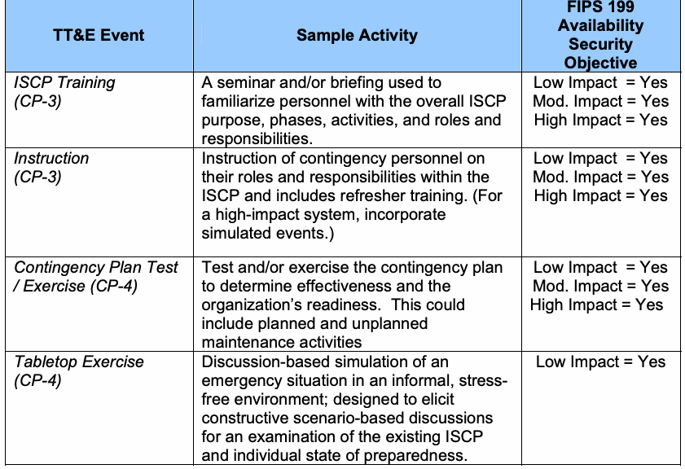
原本PDFの抜粋画像
原本PDFの抜粋画像
原本PDFの抜粋画像
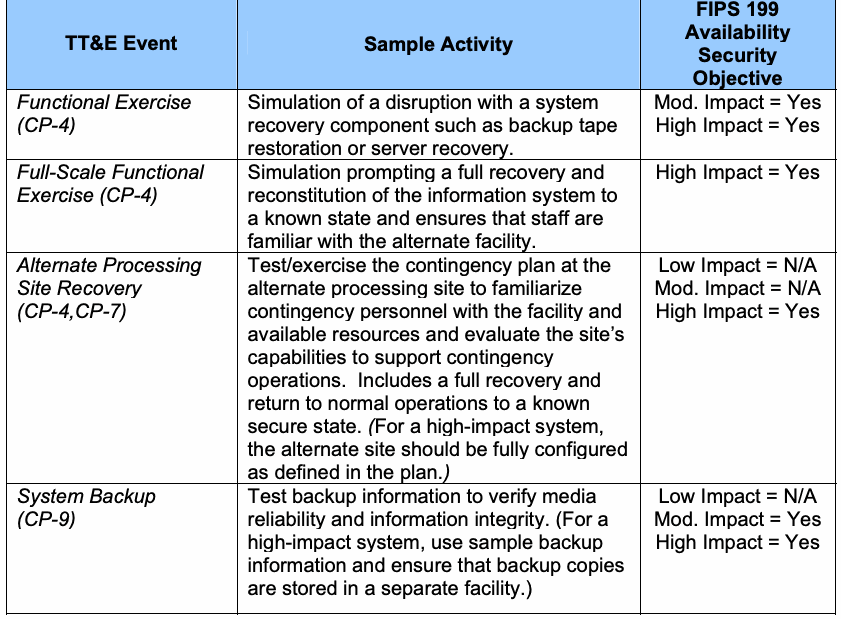
原本PDFの抜粋画像
原本PDFの抜粋画像
3.6 Plan Maintenance
3.6 計画の保守
To be effective, the plan must be maintained in a ready state that accurately reflects system requirements, procedures, organizational structure, and policies. During the Operation/Maintenance phase of the SDLC, information systems undergo frequent changes because of shifting business needs, technology upgrades, or new internal or external policies. Therefore, it is essential that the ISCP be reviewed and updated regularly as part of the organization’s change management process to ensure that new information is documented and contingency measures are revised if required. As identified as part of RMF Step 6 (Continuous Monitoring), a continuous monitoring process can provide organizations with an effective tool for plan maintenance, producing ongoing updates to security plans, security assessment reports, and plans of action and milestone documents.
計画を有効に保つには、システム要件、手順、組織構造、およびポリシーを正確に反映した準備状態で維持しなければならない。SDLCの運用・保守段階では、業務ニーズの変化、技術のアップグレード、または新たな内外のポリシーによって情報システムが頻繁に変化する。そのため、新しい情報を記録し、必要に応じて緊急時対応策を改訂できるよう、組織の変更管理プロセスの一環としてISCPを定期的に見直し更新することが不可欠である。RMFのステップ6（継続的モニタリング）で示されているように、継続的モニタリングプロセスは、セキュリティ計画、セキュリティ評価報告書、および行動計画・マイルストーン文書を継続して更新し、計画保守の効果的な手段となり得る。
未レビュー訳As a general rule, the plan should be reviewed for accuracy and completeness at an organization-defined frequency or whenever significant changes occur to any element of the plan. Certain elements, such as contact lists, will require more frequent reviews. The plans for moderate- or high-impact systems should be reviewed more often. At a minimum, plan reviews should focus on the following elements:
一般に、計画の正確性と完全性を、組織が定める頻度で、または計画のいずれかの要素に重大な変更があった場合に見直すべきである。連絡先一覧など一部の要素は、より頻繁な見直しが必要となる。中影響または高影響システムの計画は、さらに頻繁に見直すべきである。最低限、計画の見直しでは次の要素を確認すべきである。
(cid:131) Operational requirements; (cid:131) Security requirements; (cid:131) Technical procedures; (cid:131) Hardware, software, and other equipment (types, specifications, and amount); (cid:131) Names and contact information of team members;
• 運用要件。 • セキュリティ要件。 • 技術手順。 • ハードウェア、ソフトウェア、およびその他の機器（種類、仕様、数量）。 • チームメンバーの氏名と連絡先情報。
未レビュー訳(cid:131) Names and contact information of vendors, including alternate and offsite vendor POCs; (cid:131) Alternate and offsite facility requirements; and (cid:131) Vital records (electronic and hardcopy).
• 代替サイトおよび遠隔地保管事業者の連絡担当者を含む、事業者の氏名と連絡先。 • 代替施設および遠隔地施設の要件。および • 重要記録（電子媒体および紙媒体）。
未レビュー訳Because the ISCP contains potentially sensitive operational and personnel information, its distribution should be marked accordingly and controlled. Typically, copies of the plan are provided to recovery personnel for storage. A copy should also be stored at the alternate site and with the backup media. Storing a copy of the plan at the alternate site ensures its availability and good condition in the event local plan copies cannot be accessed because of disaster. The ISCP Coordinator should maintain a record of copies of the plan and to whom they were distributed. Other information that should be stored with the plan includes contracts with vendors (SLAs and other contracts), software licenses, system user manuals, security manuals, and operating procedures.
ISCPには、機微な運用情報や人員情報が含まれる可能性があるため、配布時には適切な表示を付し、配布を管理すべきである。通常、計画のコピーを復旧要員に渡して保管させる。コピーは、代替サイトおよびバックアップ媒体とともに保管する場所にも保管すべきである。代替サイトに計画のコピーを保管しておけば、災害によって現地の計画のコピーにアクセスできなくなった場合でも、その利用可能性と良好な状態を確保できる。ISCPコーディネーターは、計画のコピーと配布先の記録を維持すべきである。計画とともに保管すべきその他の情報には、事業者との契約（SLAその他の契約）、ソフトウェアライセンス、システムのユーザーマニュアル、セキュリティマニュアル、および運用手順書が含まれる。
Changes made to the plan, strategies, and policies should be coordinated through the ISCP Coordinator, who should communicate changes to the representatives of associated plans or programs, as necessary. The ISCP Coordinator should record plan modifications using a record of changes, which lists the page number, change comment, and date of change. The record of changes, depicted in Table , should be integrated into the plan as discussed in Section 4.1.
計画、戦略、およびポリシーの変更はISCPコーディネーターを通じて調整し、必要に応じて関連する計画またはプログラムの代表者に伝達すべきである。ISCPコーディネーターは、変更ページ、変更内容、および変更日を一覧にした変更記録を用いて、計画の修正を記録すべきである。表に示す変更記録を、第4.1節で説明するように計画に組み込む。
未レビュー訳Table 3-7: Sample Record of Changes
表3-7：変更記録の例
未レビュー訳| 変更記録 | |||
| ページ番号 | 変更内容 | 変更日 | 署名 |
The ISCP Coordinator should coordinate frequently with associated internal and external organizations and system POCs to ensure that impacts caused by changes within any organization will be reflected in the contingency plan. Strict version control must be maintained by requesting old plans or plan pages to be returned to the ISCP Coordinator in exchange for the new plan or plan pages. The ISCP Coordinator also should evaluate supporting information to ensure that the information is current and continues to meet system requirements adequately. This information includes the following:
ISCPコーディネーターは、組織内外の関連組織およびシステムのPOCと頻繁に調整し、いずれかの組織の変更による影響が緊急時対応計画に反映されるようにすべきである。旧計画または旧ページをISCPコーディネーターに返却してから、新しい計画またはページを受け取るようにし、厳格なバージョン管理を維持しなければならない。また、ISCPコーディネーターは支援情報を評価し、最新の状態を保ち、システム要件を引き続き十分満たしていることを確認すべきである。該当する情報には、次のものが含まれる。
(cid:131) Alternate site contract, including testing times; (cid:131) Offsite storage contract; (cid:131) Software licenses; (cid:131) MOUs or vendor SLAs; (cid:131) Hardware and software requirements;
• テスト日程を含む代替サイト契約。 • 遠隔地保管契約。 • ソフトウェアライセンス。 • MOUまたは事業者とのSLA。 • ハードウェアおよびソフトウェアの要件。
未レビュー訳(cid:131) System interconnection agreements; (cid:131) Security requirements; (cid:131) Recovery strategy; (cid:131) Contingency policies; (cid:131) Training and awareness materials; (cid:131) Testing scope; and (cid:131) Other plans, e.g., COOP, BCP.
• システム相互接続協定。 • セキュリティ要件。 • 復旧戦略。 • 緊急時対応ポリシー。 • 訓練および意識向上用の資料。 • テスト範囲。および • その他の計画（COOP、BCPなど）。
未レビュー訳Although some changes may be quite visible, others will require additional analysis. When a significant change occurs, the BIA should be updated with the new information to identify new contingency requirements or priorities. As new technologies become available, preventive controls may be enhanced and recovery strategies may be modified. Finally, plan maintenance should be continued as the information system passes through the Disposal phase of its life cycle to ensure that the plan accurately reflects recovery priorities and concurrent processing changes.
変更の中には明確に分かるものもあるが、追加分析が必要となるものもある。重大な変更が発生した場合は、新たな緊急時対応要件や優先順位を特定するため、BIAを新しい情報で更新すべきである。新技術が利用可能になれば、予防的管理策を強化したり、復旧戦略を変更したりできる。最後に、情報システムがライフサイクルの廃棄段階に進んだ後も計画の保守を続け、計画が復旧優先順位と並行処理の変更を正確に反映するようにすべきである。
未レビュー訳Chapter 4. Information System Contingency Plan Development
第4章 情報システム緊急時対応計画の策定
未レビュー訳This chapter discusses the key elements that compose the ISCP. As described in Chapter 3, ISCP development is a critical step in the process of implementing a comprehensive contingency planning program. The plan contains detailed roles, responsibilities, teams, and procedures associated with restoring an information system following a disruption. The ISCP should document technical capabilities designed to support contingency operations and should be tailored to the organization and its requirements. Plans need to balance detail with flexibility; usually, the more detailed the plan, the less scalable and versatile the approach. The information presented here is meant to be a guide; nevertheless, the plan format in this document may be modified as needed to better meet the user’s specific system, operational, and organization requirements. Appendix A provides templates that organizations may use to develop ISCPs for their information systems at the appropriate FIPS 199 impact level. The information and templates provided are guides and may be modified, customized, and/or adapted as necessary to best meet the specific system, operational, and organizational requirements for contingency planning. Appendix D discusses planning considerations regarding personnel which should be coordinated with the ISCP development.
本章では、ISCPを構成する主要な要素について説明する。第3章で述べたように、ISCPの策定は、包括的な緊急時対応計画プログラムを実施するうえで重要な段階である。計画には、中断後に情報システムを復旧するための詳細な役割、責任、チーム、および手順を記載する。ISCPには緊急時運用を支援する技術的能力を記録し、組織とその要件に合わせて調整すべきである。計画では詳細さと柔軟性のバランスを取る必要がある。通常、詳細であるほど拡張性と汎用性は低くなる。本書の情報は指針であり、この文書の計画書式は、利用者の特定のシステム、運用、および組織の要件により適合するよう必要に応じて変更できる。付録Aには、FIPS 199の適切な影響度レベルに応じた情報システムのISCP策定に組織が使用できるテンプレートを示す。ここに示す情報とテンプレートは指針であり、緊急時対応計画に関する特定のシステム、運用、および組織の要件に最もよく適合するよう、必要に応じて変更、カスタマイズ、または適合できる。付録Dでは、ISCPの策定と調整すべき、要員に関する計画上の考慮事項を説明する。
As shown in Figure 4-1, this guide identifies five main components of the contingency plan. The supporting information and plan appendices provide essential information to ensure a comprehensive plan. The Activation and Notification, Recovery, and Reconstitution Phases address specific actions that the organization should take following a system disruption or emergency. Each plan component is discussed later in this section.
図4-1に示すように、本ガイドでは緊急時対応計画の主要な構成要素を5つ特定している。支援情報と計画の付録は、包括的な計画を確保するために不可欠な情報を提供する。発動・通知、復旧、および再構成の各フェーズでは、システム中断または緊急事態の後に組織が取るべき具体的な措置を扱う。各計画要素について、本節の後半で説明する。
未レビュー訳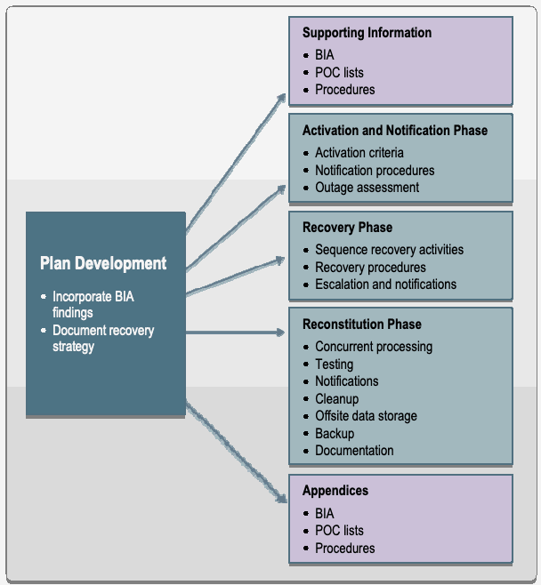
緊急時対応計画の構成図。計画策定で事業影響分析の結果を取り込み復旧戦略を記録し、支援情報、通知・起動、復旧、再構築、付録の各節を作成する。
Supporting Information
支援情報
未レビュー訳•BIA
•BIA
未レビュー訳•POC lists
•POC一覧
未レビュー訳•Procedures
•手順
未レビュー訳原本PDFの抜粋画像
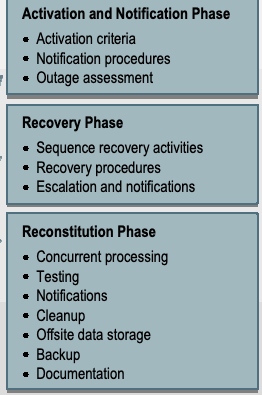
Plan Development
計画の策定
未レビュー訳•Incorporate BIA findings
•BIAの結果を反映する
未レビュー訳•Document recovery strategy
•復旧戦略を文書化する
未レビュー訳Appendices
付録
未レビュー訳•BIA
•BIA
未レビュー訳•POC lists
•POC一覧
未レビュー訳•Procedures
•手順
未レビュー訳Figure 4-1: Contingency Plan Structure
図4-1：緊急時対応計画の構成
未レビュー訳Plans should be formatted to provide quick and clear directions in the event that personnel unfamiliar with the plan or the systems are called on to perform recovery operations. Plans should be clear, concise, and easy to implement in an emergency. Where possible, checklists and step-by-step procedures should be used. A concise and well-formatted plan reduces the likelihood of creating an overly complex or confusing plan.
計画は、計画やシステムに詳しくない要員が復旧作業を担う場合でも、迅速かつ明確な指示を提供できる書式にすべきである。計画は緊急時に実施しやすい、明確で簡潔なものとする。可能であれば、チェックリストや段階的な手順を用いるべきである。簡潔で適切に書式化された計画は、複雑すぎたり分かりにくくなったりする可能性を減らす。
未レビュー訳4.1 Supporting Information
4.1 支援情報
The supporting information component includes an introduction and concept of operations section providing essential background or contextual information that makes the contingency plan easier to understand, implement, and maintain. These details aid in understanding the applicability of the guidance, in making decisions on how to use the plan, and in providing information on where associated plans and information outside the scope of the plan may be found.
支援情報の構成要素には、緊急時対応計画を理解、実施、および維持しやすくするための重要な背景情報や文脈を示す、導入および運用概念の節が含まれる。これらの詳細は、指針が適用される範囲の理解、計画の利用方法に関する判断、および計画の対象外である関連計画や情報の所在を示すうえで役立つ。
The introduction section orients the reader to the type and location of information contained in the plan. Generally, the section includes the background, scope, and assumptions.29 These subsections are described below.
導入節では、計画にどのような情報が含まれ、どこに記載されているかを読者に説明する。通常、この節には背景、範囲、および前提条件を含める。29 以下にこれらの小節を説明する。
未レビュー訳(cid:131) Background. This subsection establishes the reason for developing the ISCP and defines the plan objectives.
• 背景。この小節では、ISCPを策定する理由を示し、計画の目標を定義する。
未レビュー訳(cid:131) Scope. The scope identifies the FIPS 199 impact level and associated RTOs as well as the alternate site and data storage capabilities (as applicable).
• 範囲。FIPS 199の影響度レベルと関連するRTO、ならびに代替サイトおよびデータ保管能力（該当する場合）を特定する。
未レビュー訳(cid:131) Assumptions. This section includes the list of assumptions that were used in developing the ISCP as well as a list of situations that are not applicable. See Appendix A Sample Information System Contingency Plan Templates, for a sample of assumptions and situations.
• 前提条件。この節には、ISCPの策定時に用いた前提条件と、該当しない状況の一覧を含める。前提条件と状況の例は、付録A「情報システム緊急時対応計画テンプレートの例」を参照。
未レビュー訳The concept of operations section provides additional details about the information system, the three phases of the contingency plan (Activation and Notification, Recovery, and Reconstitution), and a description of the information system contingency plan roles and responsibilities. This section may include the following elements:
運用概念の節では、情報システム、緊急時対応計画の3つのフェーズ（発動・通知、復旧、再構成）、および情報システム緊急時対応計画における役割と責任について、さらに詳しく説明する。この節には、次の要素を含めてもよい。
未レビュー訳(cid:131) System description. It is necessary to include a general description of the information system addressed by the contingency plan. The description should include the information system architecture, location(s), and any other important technical considerations. An input/output (I/O) diagram and system architecture diagram, including security devices (e.g., firewalls, internal and external connections) are useful. The content for the system description can usually be taken from the System Security Plan.30 (cid:131) Overview of three phases. The ISCP recovery is implemented in three phases: (1) Activation and Notification, (2) Recovery, and (3) Reconstitution. (cid:131) Roles and responsibilities. The roles and responsibilities section presents the overall structure of contingency teams, including the hierarchy and coordination mechanisms and requirements among the teams. The section also provides an overview of team member roles and responsibilities in a contingency situation. Teams and team members should be designated for specific response and recovery roles during contingency plan activation.
• システムの説明。緊急時対応計画の対象となる情報システムの概要を記載する必要がある。情報システムのアーキテクチャ、設置場所、およびその他の重要な技術的考慮事項を含めるべきである。セキュリティ機器（ファイアウォール、内部・外部接続など）を含む入出力（I/O）図やシステムアーキテクチャ図が役立つ。システムの説明には、通常、システムセキュリティ計画を利用できる。30 • 3つのフェーズの概要。ISCPの復旧は、(1)発動・通知、(2)復旧、(3)再構成の3つのフェーズで実施する。 • 役割と責任。役割と責任の節では、階層構造やチーム間の調整の仕組み・要件を含む、緊急時対応チームの全体構造を示す。また、緊急時におけるチームメンバーの役割と責任を概説する。緊急時対応計画の発動時に特定の対応・復旧上の役割を担うチームおよびメンバーを指定すべきである。
未レビュー訳4.2 Activation and Notification Phase
4.2 発動・通知フェーズ
The Activation and Notification Phase defines initial actions taken once a system disruption or outage has been detected or appears to be imminent. This phase includes activities to notify recovery personnel, conduct an outage assessment, and activate the plan. At the completion of the Activation and Notification Phase, ISCP staff will be prepared to perform recovery measures to restore system functions.
発動・通知フェーズでは、システム中断または停止が検知された場合、あるいは差し迫っていると見られる場合に、最初に行う措置を定める。このフェーズには、復旧要員への通知、停止影響評価の実施、および計画の発動が含まれる。フェーズの完了時には、ISCP要員がシステム機能を復旧するための措置を実施できる状態になっている。
4.2.1 Activation Criteria and Procedure
4.2.1 発動基準と手順
The ISCP should be activated if one or more of the activation criteria for that system are met. If an activation criterion is met, the designated authority should activate the plan.31 Activation criteria for system outages or disruptions are unique for each organization and should be stated in the contingency planning policy. Criteria may be based on:
当該システムに定められた発動基準のうち1つ以上を満たした場合、ISCPを発動すべきである。発動基準を満たした場合、指定された権限者が計画を発動すべきである。31 システムの停止または中断に関する発動基準は組織ごとに異なるため、緊急時対応計画ポリシーに記載すべきである。基準は、次の事項に基づいて設定できる。
未レビュー訳(cid:131) Extent of any damage to the system (e.g., physical, operational, or cost); (cid:131) Criticality of the system to the organization’s mission (e.g., critical infrastructure protection asset); and (cid:131) Expected duration of the outage lasting longer than the RTO.
• システムの損害の程度（物理的損害、運用上の損害、コストなど）。 • 組織のミッションに対するシステムの重要度（重要インフラ保護資産など）。および • RTOを超えて続くと予想される停止期間。
未レビュー訳The appropriate recovery teams may be notified once the system outage or disruption has been identified and the ISCP Coordinator has determined that activation criteria have been met. Notification procedures should follow the procedures outlined in Section 4.2.2 below.
システムの停止または中断が特定され、ISCPコーディネーターが発動基準を満たしたと判断した後、適切な復旧チームに通知してもよい。通知手順は、以下の第4.2.2節に示す手順に従うべきである。
4.2.2 Notification Procedures
4.2.2 通知手順
An outage or disruption may occur with or without prior notice. For example, advance notice is often given that a hurricane is predicted to affect an area or that a computer virus is expected on a certain date. However, there may be no notice of equipment failure or a criminal act. Notification procedures should be documented in the plan for both types of situation. The procedures should describe the methods used to notify recovery personnel during business and non business hours. Prompt notification is important for reducing the effects of a disruption on the system; in some cases, it may provide enough time to allow system personnel to shut down the system gracefully to avoid a hard crash. Following the outage or disruption, notification should be sent to the Outage Assessment Team32 so that it may determine the status of the situation and appropriate next steps. Outage assessment procedures are described in Section 4.2.3. When outage assessment is complete, the appropriate recovery and system support personnel should be notified.
停止または中断は、事前通知がある場合もない場合もある。たとえば、ハリケーンが地域を襲う予報や、特定の日にコンピューターウイルスが発生するといった事前通知が行われることが多い。一方、機器故障や犯罪行為については事前通知がない場合がある。どちらの場合にも対応できるよう、通知手順を計画に記録すべきである。手順には、勤務時間内および時間外に復旧要員へ通知する方法を記載する。迅速な通知はシステムへの中断の影響を軽減するうえで重要であり、場合によっては、ハードクラッシュを避けるために要員がシステムを正常にシャットダウンする時間を確保できる。停止または中断の後、状況と適切な次の措置を判断できるよう、停止影響評価チーム32に通知すべきである。停止影響の評価手順は第4.2.3節で説明する。評価が完了したら、適切な復旧要員とシステム支援要員に通知すべきである。
未レビュー訳Notifications can be accomplished through a variety of methods, either automated or manual and include telephone, pager, electronic mail (email), cell phone, and messaging. Automated notification systems follow established protocols and criteria and can include rapid authentication and acceptance and secure messaging. Automated notification systems require up-front investment and learning curve, but may be an effective way for some organizations to ensure prompt and accurate delivery.
通知には、自動または手動によるさまざまな方法を利用できる。電話、ポケットベル、電子メール（email）、携帯電話、メッセージングなどがある。自動通知システムは、定められたプロトコルと基準に従い、迅速な認証と受領確認、安全なメッセージングを含めることができる。導入時の投資と習熟が必要だが、組織によっては迅速かつ正確な通知を確実に行う有効な手段となり得る。
Notifications sent via email should be done with caution because there is no way to ensure receipt and acknowledgement. Although email has potential as an effective method of disseminating notifications to work or personal accounts, there is no way to guarantee that the message will be read. If using an email notification method, recovery personnel should be informed of the necessity to frequently and regularly check their accounts. Notifications sent during business hours should be sent to the work address, whereas personal email messaging may be useful in the event that the local area network (LAN) is down.
電子メールで通知する場合、受信および確認を確実に保証できないため注意が必要である。電子メールは業務用または個人用アカウントへの通知手段として有効な可能性があるものの、メッセージが読まれる保証はない。電子メールで通知する場合、復旧要員にはアカウントを頻繁かつ定期的に確認する必要性を周知する。業務時間中の通知は職場のアドレスに送り、ローカルエリアネットワーク（LAN）が停止した場合には個人用電子メールが有用となることがある。
未レビュー訳The notification strategy should define procedures to be followed in the event that specific personnel cannot be contacted. Notification procedures should be documented clearly in the contingency plan. Copies of the procedures can be made and located securely at alternate locations. A common manual notification method is a call tree. This technique involves assigning notification duties to specific individuals, who in turn are responsible for notifying other recovery personnel. The call tree should account for primary and alternate contact methods and should discuss procedures to be followed if an individual cannot be contacted. Figure 4-2 presents a sample call tree.
特定の要員に連絡できない場合に従う手順を、通知戦略に定める。通知手順は緊急時対応計画に明確に記載する。手順の写しを作成し、代替拠点に安全に保管できる。一般的な手動通知方法として連絡網がある。この方法では、特定の担当者に通知業務を割り当て、その担当者が他の復旧要員への連絡を担う。連絡網には主連絡先と代替連絡先を含め、個人に連絡できない場合の手順を定める。図4-2に連絡網の例を示す。
未レビュー訳組織内の役職を示す図の一部。「緊急時対応計画コーディネーター」と記された役割ボックス。
Contingency Planning Coordinator
緊急時対応計画コーディネーター
未レビュー訳Alternate Contingency Planning Coordinator
代替緊急時対応計画コーディネーター
未レビュー訳Network Recovery
ネットワーク復旧
未レビュー訳Database Recovery Telecommunications
データベース復旧／通信
未レビュー訳Server Recovery
サーバー復旧
未レビュー訳Team Leader
チームリーダー
未レビュー訳Team Leader
チームリーダー
未レビュー訳Team Leader
チームリーダー
未レビュー訳Team Leader
チームリーダー
未レビュー訳組織図の役割ボックス。「データベース管理システム（DBMS）管理者」。
組織図の役割ボックス。「広域ネットワーク（WAN）エンジニア」。
Network O/S
ネットワークOS
未レビュー訳DBMS
DBMS
未レビュー訳EMail System
電子メールシステム
未レビュー訳WAN Engineer
WANエンジニア
未レビュー訳Administrator
システム管理者
未レビュー訳Administrator
システム管理者
未レビュー訳Administrator
システム管理者
未レビュー訳組織図の役割ボックス。「SQL管理者」。
Desktop Support
デスクトップサポート
未レビュー訳Junior Systems
ジュニアシステム
未レビュー訳Server Support
サーバーサポート
未レビュー訳SQL Admin
SQL管理者
未レビュー訳Engineer
エンジニア
未レビュー訳Technician
技術者
未レビュー訳Technician
技術者
未レビュー訳組織図の役割ボックス。「データベースアナリスト」。
組織図の役割ボックス。「通信技術者」。
Desktop Support
デスクトップサポート
未レビュー訳Database
データベース
未レビュー訳Telecom
通信
未レビュー訳App Server
アプリケーションサーバー
未レビュー訳Analyst
アナリスト
未レビュー訳Technician
技術者
未レビュー訳Administrator
システム管理者
未レビュー訳Technician
技術者
未レビュー訳組織図の役割ボックス。「ヘルプデスク技術者」。
組織図の役割ボックス。「通信技術者」。
Help Desk
ヘルプデスク
未レビュー訳Telecom
通信
未レビュー訳Server Support
サーバーサポート
未レビュー訳Technician
技術者
未レビュー訳Technician
技術者
未レビュー訳Technician
技術者
未レビュー訳Figure 4-2: Sample Call Tree
図4-2：連絡網の例
未レビュー訳Personnel to be notified should be clearly identified in the contact lists appended to the plan. This list should identify personnel by their team position, name, and contact information (e.g., home, work, cell phone, email addresses, and home addresses). An entry may resemble the following format:
通知対象者は、計画の付属資料である連絡先一覧に明確に記載すべきである。一覧には、チーム内の役職、氏名、および連絡先情報（自宅、勤務先、携帯電話、電子メールアドレス、自宅住所など）を含めるべきである。記載例を以下に示す。
未レビュー訳Systems Software Team Team Leader—Primary Jane Jones 1234 Any Street Town, State, Zip Code Home: (123) 456-7890 Work: (123) 567-8901 Cell: (123) 678-9012 Email: jones@organization.ext; jones@home.ext
システムソフトウェアチーム チームリーダー（主担当）Jane Jones 1234 Any Street, Town, State, Zip Code 自宅：(123) 456-7890 勤務先：(123) 567-8901 携帯：(123) 678-9012 電子メール：jones@organization.ext、jones@home.ext
未レビュー訳Notifications also should be sent to POCs of external organizations or interconnected system partners that may be adversely affected if they are unaware of the situation. Depending on the type of outage or disruption, the POC may have recovery responsibilities. For each system interconnection with an external organization, a POC should be identified. These POCs should be listed in an appendix to the plan.
状況を知らないと悪影響を受ける可能性のある外部組織や相互接続システムのパートナーのPOCにも通知すべきである。停止または中断の種類によっては、POCが復旧責任を担う場合がある。外部組織とのシステム相互接続ごとにPOCを特定し、計画の付録に一覧を記載すべきである。
未レビュー訳The type of information to be relayed to those being notified should be documented in the plan. The amount and detail of information relayed may depend on the specific team being notified. As necessary, notification information may include the following:
通知対象者に伝える情報の種類を計画に記録すべきである。伝達する情報の量と詳細さは、通知するチームによって異なる場合がある。必要に応じて、通知情報には次の事項を含めてもよい。
(cid:131) Nature of the outage or disruption that has occurred or is impending; (cid:131) Any known outage estimates; (cid:131) Response and recovery details; (cid:131) Where and when to convene for briefing or further response instructions; (cid:131) Instructions to prepare for relocation for estimated time period (if applicable); and (cid:131) Instructions to complete notifications using the call tree (if applicable).
• 発生した、または差し迫っている停止・中断の性質。 • 判明している停止時間の見積もり。 • 対応および復旧の詳細。 • 説明会または次の対応指示のために集合する場所と時刻。 • 推定期間に応じた移転準備の指示（該当する場合）。および • 連絡網を使って通知を完了するための指示（該当する場合）。
未レビュー訳4.2.3 Outage Assessment
4.2.3 停止影響評価
To determine how the ISCP will be implemented following a system disruption or outage, it is essential to assess the nature and extent of the disruption. The outage assessment should be completed as quickly as the given conditions permit, with personnel safety remaining the highest priority. When possible, the Outage Assessment Team is the first team notified of the disruption. Outage assessment procedures may be unique for the particular system, but the following minimum areas should be addressed:
システム中断または停止後にISCPをどのように実施するか決めるには、中断の性質と範囲を評価することが不可欠である。停止影響評価は、要員の安全を最優先しながら、与えられた状況が許す限り速やかに完了すべきである。可能な場合、中断後に最初に通知するチームは停止影響評価チームとする。停止影響評価手順はシステムごとに異なる場合があるが、少なくとも次の領域を扱うべきである。
(cid:131) Cause of the outage or disruption; (cid:131) Potential for additional disruptions or damage; (cid:131) Status of physical infrastructure (e.g., structural integrity of computer room, condition of electric power, telecommunications, and heating, ventilation and air-conditioning [HVAC]); (cid:131) Inventory and functional status of system equipment (e.g., fully functional, partially functional, nonfunctional); (cid:131) Type of damage to system equipment or data (e.g., water, fire and heat, physical impact, electrical surge); (cid:131) Items to be replaced (e.g., hardware, software, firmware, supporting materials); and (cid:131) Estimated time to restore normal services.
• 停止または中断の原因。 • さらなる中断または損害の可能性。 • 物理インフラの状態（コンピュータ室の構造健全性、電力、通信、および暖房・換気・空調［HVAC］の状態など）。 • システム機器のインベントリと稼働状態（完全稼働、一部稼働、非稼働など）。 • システム機器またはデータの損害の種類（水、火災・熱、物理的衝撃、電力サージなど）。 • 交換が必要な項目（ハードウェア、ソフトウェア、ファームウェア、支援資料など）。および • 通常サービスの復旧に要する推定時間。
未レビュー訳Personnel with outage assessment responsibilities should understand and be able to perform these procedures in the event the plan is inaccessible during the situation. Once impact to the system has been determined, the appropriate teams should be notified of updated information and the planned response to the situation. Based upon the results of the outage assessment, ISCP notifications may be revisited and expanded using the procedures described in Section 4.2.2.
停止影響評価を担当する要員は、状況下で計画にアクセスできない場合でも手順を実施できるよう、手順を理解し、実行できるべきである。システムへの影響を判断した後、更新情報と予定している対応を適切なチームに通知すべきである。停止影響評価の結果に基づき、第4.2.2節の手順を用いてISCPの通知対象を見直し、拡大してもよい。
未レビュー訳4.3 Recovery Phase
4.3 復旧フェーズ
Formal recovery operations begin after the ISCP has been activated, outage assessments have been completed (if possible), personnel have been notified, and appropriate teams have been mobilized. Recovery Phase activities focus on implementing recovery strategies to restore system capabilities, repair damage, and resume operational capabilities at the original or new alternate location. At the completion of the Recovery Phase, the information system will be functional and capable of performing the functions identified in the plan. Depending on the recovery strategies defined in the plan, these functions could include temporary manual processing, recovery and operation at an alternate system, or relocation and recovery at an alternate site. It is feasible that only system resources identified as high priority in the BIA will be recovered at this stage.
正式な復旧運用は、ISCPが発動され、（可能であれば）停止影響評価が完了し、要員への通知が行われ、適切なチームが招集された後に始まる。復旧フェーズでは、復旧戦略を実施してシステム機能を回復し、損害を修復し、元の場所または新たな代替場所で運用能力を再開する。このフェーズの完了時には、情報システムが稼働し、計画で特定された機能を実行できる状態となる。計画で定める復旧戦略によっては、これらの機能に、一時的な手作業処理、代替システムでの復旧・運用、または代替サイトへの移転と復旧が含まれる場合がある。BIAで高優先度とされたシステムリソースのみをこの段階で復旧することも可能である。
4.3.1 Sequence of Recovery Activities
4.3.1 復旧活動の順序
When recovering a complex system, such as a wide area network (WAN) or virtual local area network (VLAN) involving multiple independent components, recovery procedures should reflect system priorities identified in the BIA. The sequence of activities should reflect the system’s MTD to avoid significant impacts to related systems. Procedures should be written in a stepwise, sequential format so system components may be restored in a logical manner. For example, if a LAN is being recovered after a disruption, then the most critical servers should be recovered before other, less critical devices, such as printers. Similarly, to recover an application server, procedures first should address operating system restoration and verification before the application and its data are recovered. The procedures should also include escalation steps and instructions to coordinate with other teams where relevant when certain situations occur, such as:
複数の独立したコンポーネントを含む広域ネットワーク（WAN）や仮想ローカルエリアネットワーク（VLAN）などの複雑なシステムを復旧する場合、手順にはBIAで特定されたシステムの優先順位を反映すべきである。関連システムへの重大な影響を避けるため、活動の順序はシステムのMTDを反映すべきである。システムコンポーネントを論理的な順序で復旧できるよう、手順は段階的かつ順序立てて記述すべきである。たとえば、中断後にLANを復旧する場合、プリンターなど優先度の低い機器より先に、最も重要なサーバーを復旧すべきである。同様に、アプリケーションサーバーを復旧する手順では、アプリケーションとそのデータの復旧前に、まずオペレーティングシステムの復元と検証を扱うべきである。また、次のような状況が発生した場合に、エスカレーション手順や他チームとの調整指示も含めるべきである。
未レビュー訳(cid:131) An action is not completed within the expected time frame; (cid:131) A key step has been completed; (cid:131) Item(s) must be procured; and (cid:131) Other system-specific concerns exist.
• 想定時間内に措置が完了しない。 • 重要な手順が完了した。 • 項目の調達が必要である。および • その他のシステム固有の懸念がある。
未レビュー訳If conditions require the system to be recovered at an alternate site, certain materials will need to be transferred or procured. These items may include shipment of data backup media from offsite storage, hardware, copies of the recovery plan, and software programs. Procedures should designate the appropriate team or team members to coordinate shipment of equipment, data, and vital records. References to applicable appendices, such as equipment lists or vendor contact information, should be made in the plan where necessary. Procedures should clearly describe requirements to package, transport, and purchase materials required to recover the system.
状況によりシステムを代替サイトで復旧する必要がある場合、特定の資材を移送または調達する必要がある。遠隔地保管からのバックアップ媒体の輸送、ハードウェア、復旧計画のコピー、およびソフトウェアプログラムなどが該当する。機器、データ、および重要記録の輸送を調整するチームまたはメンバーを、手順で指定すべきである。機器一覧や事業者の連絡先情報など該当する付録は、必要に応じて計画内で参照すべきである。システム復旧に必要な資材の梱包、輸送、および購入の要件を手順に明確に記載すべきである。
4.3.2 Recovery Procedures
4.3.2 復旧手順
未レビュー訳To facilitate Recovery Phase operations, the ISCP should provide detailed procedures to restore the information system or components to a known state. Given the extensive variety of system types, configurations, and applications, this planning guide does not provide specific recovery procedures. Recovery considerations are detailed for each of the platform types in Chapter 5.
復旧フェーズの運用を円滑にするため、ISCPには情報システムまたはコンポーネントを既知の状態に戻す詳細な手順を記載すべきである。システムの種類、構成、およびアプリケーションは非常に多様であるため、本計画ガイドでは具体的な復旧手順を示さない。各プラットフォームの復旧上の考慮事項は第5章に詳述する。
未レビュー訳Procedures should be assigned to the appropriate recovery team and typically address the following actions:
復旧手順は適切な復旧チームに割り当て、通常、次の措置を扱うべきである。
未レビュー訳(cid:131) Obtaining authorization to access damaged facilities and/or geographic area; (cid:131) Notifying internal and external business partners associated with the system; (cid:131) Obtaining necessary office supplies and work space; (cid:131) Obtaining and installing necessary hardware components; (cid:131) Obtaining and loading backup media; (cid:131) Restoring critical operating system and application software; (cid:131) Restoring system data to a known state; (cid:131) Testing system functionality including security controls; (cid:131) Connecting system to network or other external systems; and (cid:131) Operating alternate equipment successfully.
• 損傷した施設または地域への立ち入り許可を得る。 • システムに関係する内外の業務パートナーに通知する。 • 必要な事務用品と作業スペースを確保する。 • 必要なハードウェアコンポーネントを入手して設置する。 • バックアップ媒体を入手して読み込む。 • 重要なオペレーティングシステムとアプリケーションソフトウェアを復元する。 • システムデータを既知の状態に復元する。 • セキュリティ管理策を含むシステム機能をテストする。 • システムをネットワークまたは他の外部システムに接続する。および • 代替機器を正常に運用する。
未レビュー訳Recovery procedures should be written in a straightforward, step-by-step style. To prevent difficulty or confusion in an emergency, no procedural steps should be assumed or omitted. A checklist format is useful for documenting the sequential recovery procedures and for troubleshooting problems if the system cannot be recovered properly. Figure 4-3 provides a partial example of a procedural checklist for a LAN Recovery Team.
復旧手順は、分かりやすい段階的な形式で記述すべきである。緊急時の困難や混乱を防ぐため、手順を省略したり、暗黙の前提としたりすべきではない。チェックリスト形式は、順序立てた復旧手順の記録や、システムを適切に復旧できない場合の問題解決に役立つ。図4-3はLAN復旧チーム向け手順チェックリストの一部を示す。
SAMPLE Recovery Process for the LAN Recovery Team: These procedures are used for recovering a file from backup tapes. The LAN Recovery
LAN復旧チーム向け復旧プロセスの例：この手順は、バックアップテープからファイルを復旧する際に用いる。LAN復旧
未レビュー訳Team is responsible for reloading all critical files necessary to continue production.
チームは、運用を継続するために必要な重要ファイルをすべて再ロードする責任を負う。
未レビュー訳1. Identify file and date from which file is to be recovered.
1. 復旧するファイルと日付を特定する。
未レビュー訳2. Identify tape number using tape log book.
2. テープログブックを使ってテープ番号を特定する。
未レビュー訳3. If tape is not in tape library, request tape from recovery facility; fill out with
3. テープがテープライブラリにない場合は、復旧施設にテープを依頼し、
未レビュー訳appropriate authorizing signature.
適切な権限者の署名を記入する。
未レビュー訳4. When tape is received, log date and time.
4. テープを受け取ったら、日付と時刻を記録する。
未レビュー訳5. Place tape into drive and begin recovery process.
5. テープをドライブに入れ、復旧処理を開始する。
未レビュー訳6. When file is recovered, notify LAN Recovery Team Leader.
6. ファイルを復旧したら、LAN復旧チームリーダーに通知する。
未レビュー訳Figure 4-3: Sample Recovery Process
図4-3：復旧プロセスの例
未レビュー訳4.3.3 Recovery Escalation and Notification
4.3.3 復旧のエスカレーションと通知
As identified as part of the BIA, system components, infrastructure, and associated facilities are critical components supporting daily mission/business processes. The systems, applications, and infrastructure that connect users to these are subject to events causing service interruptions and outages. Including an escalation and notification component within the Recovery Phase helps to ensure that overall, a repeatable, structured, consistent, and measurable recovery process is followed.
BIAで特定したように、システムコンポーネント、インフラ、および関連施設は、日々のミッション／業務プロセスを支える重要な要素である。これらにユーザーを接続するシステム、アプリケーション、およびインフラは、サービスの中断や停止を引き起こす事象の影響を受ける。復旧フェーズにエスカレーションと通知の要素を含めることで、再現可能で、構造化され、一貫性があり、測定可能な復旧プロセスを全体として確実に実施できる。
Effective escalation and notification procedures should define and describe the events, thresholds, or other types of triggers that are necessary for additional action. Actions would include additional notifications for more recovery staff, messages and status updates to leadership, and notices for additional resources. Procedures should be included to establish a clear set of events, actions and results, and should be documented for teams or individuals as appropriate.
効果的なエスカレーションおよび通知手順では、追加措置が必要となる事象、しきい値、またはその他の発動要因を定義し、説明すべきである。追加措置には、復旧要員の追加招集、管理者へのメッセージや状況報告、追加リソースの要請などが含まれる。事象、措置、および結果の明確な組み合わせを定める手順を設け、必要に応じてチームまたは個人向けに文書化すべきである。
未レビュー訳4.4 Reconstitution Phase
4.4 再構成フェーズ
The Reconstitution Phase is the third and final phase of ISCP implementation and defines the actions taken to test and validate system capability and functionality. During Reconstitution, recovery activities are completed and normal system operations are resumed. If the original facility is unrecoverable, the activities in this phase can also be applied to preparing a new permanent location to support system processing requirements. This phase consists of two major activities: validating successful recovery and deactivation of the plan. Validation of recovery typically includes these steps:
再構成フェーズは、ISCP実施の第3かつ最終のフェーズであり、システムの能力と機能をテスト・検証するために行う措置を定める。このフェーズでは復旧活動を完了し、通常のシステム運用を再開する。元の施設を復旧できない場合、このフェーズの活動を新たな恒久施設の準備に適用し、システム処理要件を満たすこともできる。このフェーズには、復旧の検証と計画の解除という2つの主要な活動がある。復旧の検証には通常、次の手順が含まれる。
(cid:131) Concurrent Processing.33 Concurrent processing is the process of running a system at two separate locations concurrently until there is a level of assurance that the recovered system is operating correctly and securely.
• 並行処理。33 並行処理とは、復旧したシステムが正しく安全に動作していると確信できるまで、2か所でシステムを同時に稼働させることである。
未レビュー訳(cid:131) Validation Data Testing. Data testing is the process of testing and validating recovered data to ensure that data files or databases have been recovered completely and are current to the last available backup.
• データ検証テスト。復旧したデータをテスト・検証し、データファイルまたはデータベースが完全に復旧され、利用可能な最新バックアップ時点までの内容になっていることを確認する。
未レビュー訳(cid:131) Validation Functionality Testing. Functionality testing is a process for verifying that all system functionality has been tested, and the system is ready to return to normal operations.
• 機能検証テスト。システムのすべての機能がテスト済みであり、通常運用に戻る準備ができていることを確認する。
未レビュー訳At the successful completion of the validation testing, ISCP personnel will be prepared to declare that reconstitution efforts are complete and that the system is operating normally. This declaration may be made in a recovery/reconstitution log or other documentation of reconstitution activities. The ISCP Coordinator, in coordination with the Information System Owner, ISSO, SAISO and with the concurrence of the Authorizing Official, must determine if the system has undergone significant change and will require reassessment and reauthorization.34 The utilization of a continuous monitoring strategy/program can guide the scope of the reauthorization to focus on those environment/facility controls and any other controls which would be impacted by the reconstitution efforts. Assessment and authorization guidance is available in NIST SP 800-37, Rev. 1 Guide for Applying the Risk Management Framework to Federal Information Systems: A Security Life Cycle Approach. Deactivation of the plan is the process of returning the system to normal operations and finalizing reconstitution activities to prepare the system against another outage or disruption. These activities include:
検証テストが正常に完了すると、ISCP要員は再構成作業の完了とシステムの通常稼働を宣言できる状態になる。この宣言は、復旧／再構成ログまたはその他の再構成活動の文書に記録してもよい。ISCPコーディネーターは、情報システム所有者、ISSO、およびSAISOと連携し、認可担当者の同意を得て、システムに重大な変更が生じ、再評価と再認可が必要かどうかを判断しなければならない。34 継続的モニタリング戦略／プログラムを用いれば、再認可の範囲を定め、再構成作業の影響を受ける環境・施設管理策やその他の管理策に重点を置くことができる。評価および認可に関する指針は、NIST SP 800-37 改訂第1版「連邦情報システムへのリスク管理フレームワーク適用ガイド：セキュリティライフサイクル手法」に示されている。計画の解除とは、システムを通常運用に戻し、次の停止または中断に備えて再構成活動を完了するプロセスである。次の活動が含まれる。
未レビュー訳(cid:131) Notifications. Upon return to normal operations, users should be notified by the ISCP Coordinator (or designee) using predefined notification procedures.
• 通知。通常運用に戻った時点で、ISCPコーディネーター（または代理人）が事前に定めた通知手順を用いてユーザーに知らせるべきである。
未レビュー訳(cid:131) Cleanup. Cleanup is the process of cleaning up work space or dismantling any temporary recovery locations, restocking supplies, returning manuals or other documentation to their original locations, and readying the system for another contingency event.
• 後片付け。作業スペースの清掃または一時的な復旧場所の撤去、備品の補充、マニュアルその他の文書の元の場所への返却、および次の緊急事態に備えたシステムの準備を行う。
未レビュー訳(cid:131) Offsite Data Storage.35 If offsite data storage is used, procedures should be documented for returning retrieved backup or installation media to its offsite data storage location.
• 遠隔地データ保管。35 遠隔地データ保管を利用する場合、取り出したバックアップ媒体またはインストール媒体を遠隔地の保管場所へ返却する手順を文書化すべきである。
未レビュー訳(cid:131) Data Backup. As soon as reasonable following reconstitution, the system should be fully backed up and a new copy of the current operational system stored for future recovery efforts. This full backup should be stored with other system backups and comply with applicable security controls.
• データバックアップ。再構成後、合理的に可能な限り速やかにシステム全体をバックアップし、将来の復旧に備えて現在の運用システムの新しいコピーを保管すべきである。この完全バックアップは、他のシステムバックアップとともに保管し、該当するセキュリティ管理策に従う必要がある。
未レビュー訳(cid:131) Event Documentation. All recovery and reconstitution events should be well documented, including actions taken and problems encountered during the recovery and reconstitution efforts. An after-action report with lessons learned should be documented and included for updating the ISCP.
• 事象の文書化。復旧および再構成中に実施した措置や発生した問題を含め、すべての復旧・再構成事象を十分に文書化すべきである。教訓を含む事後報告書を作成し、ISCP更新用に組み込む。
未レビュー訳Once all activities and steps have been completed and documentation has been updated, the ISCP can be formally deactivated. An announcement with the declaration should be sent to all business and technical contacts.
すべての活動と手順が完了し、文書が更新された後、ISCPを正式に解除できる。解除の宣言は、すべての業務担当者および技術担当者に通知すべきである。
4.5 Plan Appendices
4.5 計画の付録
Contingency plan appendices provide key details not contained in the main body of the plan. Common contingency plan appendices include the following:
緊急時対応計画の付録には、計画本文に含まれない重要な詳細を記載する。一般的な付録には、次のものが含まれる。
(cid:131) Contact information for contingency planning team personnel; (cid:131) Vendor contact information, including offsite storage and alternate site POCs; (cid:131) BIA; (cid:131) Detailed recovery procedures and checklists; (cid:131) Detailed validation testing procedures and checklists; (cid:131) Equipment and system requirements lists of the hardware, software, firmware, and other resources required to support system operations. Details should be provided for each entry, including model or version number, specifications, and quantity; (cid:131) Alternate mission/business processing procedures that may occur while recovery efforts are being done to the system; (cid:131) ISCP testing and maintenance procedures; (cid:131) System interconnections (systems that directly interconnect or exchange information); and (cid:131) Vendor SLAs, reciprocal agreements with other organizations, and other vital records.
• 緊急時対応計画チーム要員の連絡先情報。 • 遠隔地保管および代替サイトのPOCを含む事業者の連絡先情報。 • BIA。 • 詳細な復旧手順およびチェックリスト。 • 詳細な検証テスト手順およびチェックリスト。 • システム運用を支援するために必要なハードウェア、ソフトウェア、ファームウェア、その他のリソースの機器・システム要件一覧。各項目には、モデル名またはバージョン番号、仕様、数量などの詳細を記載すべきである。 • システム復旧作業中に実施する代替ミッション／業務処理の手順。 • ISCPのテストおよび保守手順。 • システム相互接続（直接接続または情報交換を行うシステム）。および • 事業者とのSLA、他組織との相互援助協定、その他の重要記録。
未レビュー訳Chapter 5. Technical Contingency Planning Considerations
第5章 技術的な緊急時対応計画の考慮事項
未レビュー訳This chapter complements the process and framework guidelines presented in earlier sections by discussing technical contingency planning considerations for specific types of information systems. The information presented in this section will assist the reader in selecting, developing, and implementing specific technical contingency strategies based on the type of information system. Because each system is unique, considerations are provided at a level that may be used by the widest audience. The list of platforms is not comprehensive, but is representative of commonly found systems in production or development. Not all of the information presented may apply to a specific information system; the ISCP Coordinator should draw on the considerations as appropriate and customize them to meet a system’s particular contingency requirements. The following representative platform types are addressed in this section:
本章では、前章までに示したプロセスおよび枠組みに加えて、特定の種類の情報システムに関する技術的な緊急時対応計画上の考慮事項を説明する。ここに示す情報は、情報システムの種類に応じた具体的な技術的対応戦略の選択、策定、および実施に役立つ。システムごとに固有性があるため、幅広い読者に利用できる水準で考慮事項を示す。プラットフォームの一覧は網羅的ではないが、実運用または開発で一般的に見られるシステムを代表している。ここに記載したすべての情報が個々の情報システムに当てはまるわけではない。ISCPコーディネーターは、必要に応じて考慮事項を選び、特定システムの緊急時対応要件に合わせて調整すべきである。本節では、次の代表的なプラットフォームを扱う。
(cid:131) Client/server systems; (cid:131) Telecommunications systems; and (cid:131) Mainframe systems.
• クライアント／サーバーシステム。 • 電気通信システム。および • メインフレームシステム。
未レビュー訳For each system type, contingency measures are considered from two perspectives. First, the document discusses technical requirements or factors that the ISCP Coordinator should consider when planning a system recovery strategy during the Development/Acquisition Phase of the SDLC.36 Second, the document provides technology-based solutions for each type of system.
各システムの種類について、緊急時対応策を2つの観点から検討する。第一に、SDLCの開発／調達フェーズにおいてシステム復旧戦略を計画する際にISCPコーディネーターが考慮すべき技術要件や要因を説明する。36 第二に、各システムの種類に応じた技術ベースの解決策を示す。
未レビュー訳5.1 Common Considerations
5.1 共通の考慮事項
The technical considerations and solutions addressed in this section include preventive measures discussed in Section 3.3 and recovery measures described in Section 3.4. When developing solutions for technical contingency plans, there are several areas that should be considered regardless of the platform or type of system. These considerations provide a common foundation for any type of contingency planning effort. Several of these contingency measures are common to all information systems. Common considerations include the following:
本節で扱う技術的な考慮事項と解決策には、第3.3節で説明した予防策と、第3.4節で説明した復旧策が含まれる。技術的な緊急時対応計画の解決策を策定する際は、プラットフォームやシステムの種類にかかわらず検討すべき領域がいくつかある。これらは、あらゆる種類の緊急時対応計画の取り組みに共通する基盤となる。緊急時対応策の一部は、すべての情報システムに共通する。共通の考慮事項を以下に挙げる。
未レビュー訳(cid:131) Use of information gathered from the BIA process; (cid:131) Development of data security, integrity, and backup policies and procedures; (cid:131) Protection of equipment and system resources; (cid:131) Adherence and compliance with security controls in NIST SP 800-53; (cid:131) Development of primary and alternate sites with appropriately sized and configured power management systems and environmental controls; and (cid:131) Use of high availability (HA) processes to provide for online real-time resilient access to alternate system resources. HA denotes systems that can achieve an uptime of 99.999 percent or better. Note that HA is a process for achieving high availability and should not be confused with FIPS 199 high-impact category systems.
• BIAプロセスで収集した情報の活用。 • データのセキュリティ、完全性、およびバックアップに関するポリシーと手順の策定。 • 機器およびシステムリソースの保護。 • NIST SP 800-53のセキュリティ管理策の順守。 • 適切な容量と構成の電力管理システムおよび環境制御を備えた主サイトと代替サイトの整備。および • 代替システムリソースへオンラインでリアルタイムかつ耐障害性のあるアクセスを提供する高可用性（HA）プロセスの活用。HAは、稼働率99.999パーセント以上を達成できるシステムを指す。HAは高可用性を実現するプロセスであり、FIPS 199の高影響カテゴリに分類されるシステムと混同してはならない。
未レビュー訳5.1.1 Use of the BIA
5.1.1 BIAの活用
The BIA is the first source for determining resiliency and contingency planning strategies. BIA results determine how critical the system is to the supported mission/business processes, what impact the loss of the system could have on the organization, and the system RTO. The BIA results can help determine the type and frequency of backup, the need for redundancy or mirroring of data, and the type of alternate site needed to meet system recovery objectives. Each of these strategy decisions have cost versus availability or recovery implications. Availability and recovery implications are discussed throughout the rest of this chapter.
BIAは、レジリエンスおよび緊急時対応計画の戦略を決める最初の情報源である。BIAの結果から、支援対象のミッション／業務プロセスにとってシステムがどれほど重要か、システムを失うことで組織にどのような影響が生じるか、およびシステムのRTOが分かる。結果は、バックアップの種類と頻度、データの冗長化またはミラーリングの必要性、およびシステム復旧目標を満たす代替サイトの種類を判断するのに役立つ。これらの戦略判断はいずれも、コストと可用性または復旧に関する影響を伴う。可用性と復旧への影響については本章の後半で説明する。
未レビュー訳5.1.2 Maintenance of Data Security, Integrity, and Backup
5.1.2 データのセキュリティ、完全性、およびバックアップの維持
Maintaining the integrity and security of system data and software is a key component in contingency planning. Data integrity involves keeping data safe and accurate on the system’s primary storage devices. There are several methods available to maintain the integrity of stored data. These methods use redundancy and fault tolerance processes to store data on more than one drive and eliminate loss of data from single drive failures. Data security involves protecting data both onsite and offsite from unauthorized access or use. Encryption is a common method for securing stored system data. Encryption is most effective when applied to both the primary data storage device and on backup media going to an offsite location.37 If using encryption for offsite data storage, it is important that media readers (e.g., tape drives, CD or DVD readers) are available at the alternate site location to correctly read the encrypted data during recovery efforts. A solid key management process must be established so encrypted data is available as needed. Keying material, which is the data used to establish and maintain the keys, needs to be managed, ideally at a central location in the organization. These keys should be stored separate from, but accessible to, the primary encrypted backup data.38
システムデータとソフトウェアの完全性およびセキュリティを維持することは、緊急時対応計画の重要な要素である。データの完全性とは、システムの主記憶装置上のデータを安全かつ正確に保つことである。保存データの完全性を維持する方法はいくつかある。これらの方法では、冗長化およびフォールトトレランスを用いて複数のドライブにデータを保存し、単一ドライブの故障によるデータ損失を防ぐ。データセキュリティとは、構内と遠隔地の双方で、不正なアクセスや利用からデータを保護することである。保存データの保護には暗号化が一般的に用いられる。暗号化は、主データ記憶装置と遠隔地へ送るバックアップ媒体の両方に適用すると最も効果的である。37 遠隔地保管データを暗号化する場合、復旧時に暗号化データを正しく読み取れるよう、代替サイトに媒体リーダー（テープドライブ、CDまたはDVDリーダーなど）を用意することが重要である。暗号化データを必要に応じて利用できるよう、堅牢な鍵管理プロセスを確立しなければならない。鍵の確立・維持に用いるデータである鍵素材も管理する必要があり、理想的には組織の中央拠点で管理する。これらの鍵は、主たる暗号化バックアップデータとは別に保管しつつ、必要時にはアクセスできるようにすべきである。38
未レビュー訳Keeping backups of data in a secure offsite location allows for a ready access to backups during a contingency event. An effective data backup process is crucial to an ISCP Coordinator’s overall recovery strategy. Data backups are done primarily for recovery purposes. Backups can be done through many different methods and techniques. MTD determinations and security requirements from the BIA help dictate the best method for backing up a particular system for recovery.
データのバックアップを安全な遠隔地に保管しておけば、緊急時にすぐ利用できる。効果的なデータバックアッププロセスは、ISCPコーディネーターの全体的な復旧戦略に不可欠である。データバックアップは主に復旧を目的として行う。バックアップにはさまざまな方法や技法を使える。BIAで定めたMTDとセキュリティ要件を踏まえ、特定のシステムの復旧に最適なバックアップ方法を選ぶ。
Data backups should be conducted on all systems on a regular basis. Systems can be backed up for individual computers or on a centralized storage device, such as network attached storage (NAS) or storage area network (SAN). There are three common methods for performing system backups:
すべてのシステムで定期的にデータをバックアップすべきである。個々のコンピューターごとにバックアップする方法と、ネットワーク接続ストレージ（NAS）やストレージエリアネットワーク（SAN）などの集中型記憶装置にバックアップする方法がある。システムバックアップには、一般に次の3つの方法がある。
(cid:131) Full. A full backup captures all files on the disk or within the folder selected for backup. Because all backed-up files are recorded to a single media or media set, locating a particular file or group of files is simple. However, the time required to perform a full backup can be lengthy. In addition, maintaining multiple iterations of full backups of files that do not change frequently (such as system files) could lead to excessive, unnecessary media storage requirements. (cid:131) Incremental. An incremental backup captures files that were created or changed since the last backup, regardless of backup type. Incremental backups afford more efficient use of storage media, and backup times are reduced. However, to recover a system from an incremental backup, media from different backup operations may be required. For example, consider a case in which a directory needs to be recovered. If the last full backup was performed three days prior and one file had changed each day, then the media for the full backup and for each day’s incremental backups would be needed to restore the entire directory. (cid:131) Differential. A differential backup stores files that were created or modified since the last full backup. Therefore, if a file is changed after the previous full backup, a differential backup will save the file each time until the next full backup is completed. A differential backup takes less time to complete than a full backup. Restoring from a differential backup may require fewer media than an incremental backup because only the full backup media and the last differential media would be needed. As a disadvantage, differential backups take longer to complete than incremental backups because the amount of data since the last full backup increases each day until the next full backup is executed.
• フルバックアップ。バックアップ対象に選択したディスクまたはフォルダー内の全ファイルを取得する。すべてのファイルが単一の媒体または媒体セットに記録されるため、特定のファイルやファイル群を簡単に見つけられる。一方、フルバックアップの実施には長時間かかる場合がある。また、システムファイルなど頻繁に変更されないファイルのフルバックアップを複数世代保管すると、過剰で不要な媒体容量が必要となることがある。 • 増分バックアップ。バックアップの種類を問わず、前回のバックアップ以降に作成または変更されたファイルを取得する。記憶媒体を効率よく使用でき、バックアップ時間も短縮される。一方、増分バックアップからシステムを復旧するには、複数回の異なるバックアップ媒体が必要となることがある。たとえば、ディレクトリを復旧する場合、最後のフルバックアップが3日前で、その後毎日1ファイルが変更されていれば、ディレクトリ全体の復旧にはフルバックアップと各日の増分バックアップの媒体が必要となる。 • 差分バックアップ。最後のフルバックアップ以降に作成または変更されたファイルを保存する。したがって、前回のフルバックアップ後にファイルが変更されると、次のフルバックアップが完了するまで、差分バックアップのたびにそのファイルが保存される。差分バックアップはフルバックアップより短時間で完了する。復旧時にはフルバックアップと最新の差分バックアップだけがあればよいため、増分バックアップより必要な媒体が少ない場合がある。一方、次のフルバックアップを実行するまで前回以降のデータ量が日ごとに増えるため、増分バックアップより完了に時間がかかる。
未レビュー訳A combination of backup operations can be used depending on system configuration and recovery requirements. For example, a full backup can be conducted on the weekend with differential backups conducted each evening. In developing a system backup policy, the following questions should be considered:
システム構成と復旧要件に応じて、複数のバックアップ方式を組み合わせてもよい。たとえば、週末にフルバックアップを行い、毎晩差分バックアップを行う。システムバックアップポリシーを策定する際は、次の点を検討すべきである。
未レビュー訳(cid:131) Where and how will media be stored? (cid:131) What data should be backed up and how often should it be backed up? (cid:131) How quickly are the backups to be retrieved in the event of an emergency? (cid:131) Who is authorized to retrieve the media? (cid:131) Where will the media be delivered and what is the rotation schedule of backup media? (cid:131) Who will restore the data from the media? (cid:131) What is the media-labeling scheme? (cid:131) How long will the backup media be retained? (cid:131) When the media are stored onsite, what environmental controls are provided to preserve the media? (cid:131) What is the appropriate backup medium for the types of backups to be performed?
• 媒体をどこに、どのように保管するか。 • どのデータをどの頻度でバックアップするか。 • 緊急時にバックアップをどれほど速く取り出す必要があるか。 • 媒体の取り出しを誰に許可するか。 • 媒体の配送先とバックアップ媒体のローテーション日程はどうするか。 • 誰が媒体からデータを復旧するか。 • 媒体のラベル付け方法はどうするか。 • バックアップ媒体をどれだけの期間保管するか。 • 媒体を構内に保管する場合、媒体を保護するためにどの環境制御を行うか。 • 実施するバックアップの種類に適した媒体は何か。
未レビュー訳Certain factors should be considered when choosing the appropriate backup solution:
バックアップソリューションを選ぶ際は、次の要因を考慮すべきである。
(cid:131) Equipment interoperability. To facilitate recovery, the backup device must be compatible with the platform operating system and applications and should be easy to install onto different models or types of systems. (cid:131) Storage volume. To ensure adequate storage, the amount of data to be backed up should determine the appropriate backup solution. (cid:131) Media life. Each type of medium has a different use and storage life beyond which the media cannot be relied on for effective data recovery. (cid:131) Backup Software. When choosing the appropriate backup solution, the software or method used to back up data should be considered. In some cases, the backup solution can be as simple as a file copy using the operating system file manager; in cases involving larger data transfers, a third-party application may be needed to automate and schedule the file backup.
• 機器の相互運用性。復旧を容易にするため、バックアップ装置はプラットフォームのオペレーティングシステムやアプリケーションと互換性があり、異なるモデルや種類のシステムにも容易に設置できるべきである。 • 記憶容量。十分な容量を確保できるよう、バックアップ対象データの量に応じて適切なソリューションを決める。 • 媒体の寿命。媒体ごとに使用可能期間と保管寿命が異なり、それを過ぎると効果的なデータ復旧に利用できない。 • バックアップソフトウェア。バックアップソリューションを選ぶ際、データのバックアップに用いるソフトウェアまたは方法を考慮すべきである。簡単なファイルコピーをオペレーティングシステムのファイルマネージャーで行えばよい場合もあるが、大量のデータ転送では、ファイルバックアップの自動化やスケジュール設定にサードパーティ製アプリケーションが必要となることがある。
未レビュー訳5.1.3 Protection of Resources
5.1.3 リソースの保護
Part of a successful contingency planning policy is making a system resilient to environmental and component-level failures that would otherwise cause system disruptions. There are several methods for making valuable hardware and software resilient. Determination of the appropriate methods should be based on risk-informed decisions. Depending on results of the risk management process, these methods may or may not be applicable for a particular system.
効果的な緊急時対応計画ポリシーの一部として、環境要因やコンポーネントレベルの故障によるシステム中断を防ぐレジリエンスをシステムに持たせることが挙げられる。重要なハードウェアやソフトウェアの耐障害性を高める方法はいくつかある。適切な方法はリスク情報に基づいて決定すべきである。リスク管理プロセスの結果によっては、これらの方法が特定のシステムに適用されない場合もある。
未レビュー訳The system and its data can become corrupt as a result of a power failure. Critical hardware, such as servers, can be configured with dual power supplies to prevent corruption. The two power supplies should be used simultaneously so that if the main power supply becomes overheated or unusable, the second unit will become the main power source, resulting in no system disruption.
停電によってシステムやデータが破損する可能性がある。サーバーなどの重要なハードウェアには二重電源を構成して破損を防げる。主電源が過熱または使用不能になった場合に第2ユニットが主電源となり、システムを停止させないよう、2つの電源を同時に使用すべきである。
The second power supply will protect against hardware failure, but not power failure. However, a UPS can protect the system if power is lost. A UPS usually provides 30 to 60 minutes of temporary backup power to permit a graceful shutdown. A UPS can also protect against power fluctuations by filtering incoming power and providing a steady power source. If high availability is required, a gas- or diesel-powered generator may be needed. The generator can be wired directly into the site’s power system and configured to start automatically when a power interruption is detected. A combination UPS/generator system can provide clean, secure power for a system as long as fuel is available for the generator. Fuel availability should be considered for those who opt for a UPS/generator to support their system environment.
第2電源はハードウェア故障には備えられるが、停電には備えられない。一方、無停電電源装置（UPS）は停電時にシステムを保護できる。UPSは通常、正常なシャットダウンを可能にするため、30～60分の一時的なバックアップ電力を供給する。また、入力電力をフィルタリングして安定した電源を供給することで、電力変動からシステムを保護できる。高可用性が必要な場合は、ガソリンまたはディーゼル発電機が必要となることがある。発電機をサイトの電力システムに直接配線し、停電を検知したとき自動起動するよう構成できる。UPSと発電機を組み合わせれば、発電機の燃料がある限り、システムに安定した安全な電力を供給できる。UPS／発電機でシステム環境を支える場合は、燃料の入手可能性も考慮すべきである。
未レビュー訳In addition to backing up data, organizations should also back up system software and drivers. Organizations should store software and software licenses in an alternate location. This includes original installation media, license terms and conditions, and license keys, if required. Image loads for client systems (such as desktops and portable systems) should also be backed up and stored at an alternate location, along with complete documentation of the software included in the image load, any configuration information for the type of computer for which the image is intended, and installation instructions.
データのバックアップに加え、システムソフトウェアとドライバーもバックアップすべきである。ソフトウェアおよびライセンスを代替拠点に保管する。必要に応じて、元のインストール媒体、ライセンスの契約条件、およびライセンスキーを含める。デスクトップや携帯型システムなどクライアントシステムのイメージもバックアップして代替拠点に保管すべきである。イメージに含まれるソフトウェアの完全な文書、対象コンピューターの種類に応じた構成情報、およびインストール手順も併せて保管する。
未レビュー訳Organizations may use third-party vendors to recover data from failed storage devices. Organizations should consider the security risk of having their data handled by an outside company and ensure that proper security vetting of the service provider is conducted before turning over equipment. The service provider and employees should sign non disclosure agreements, be properly bonded, and adhere to organization-specific security policies.
組織は、故障した記憶装置からのデータ復旧をサードパーティ事業者に依頼することがある。事業者にデータを取り扱わせるセキュリティリスクを検討し、機器を引き渡す前にサービス提供者の適切なセキュリティ審査を実施すべきである。サービス提供者と従業員は秘密保持契約に署名し、適切に身元保証（ボンディング）を受け、組織固有のセキュリティポリシーを順守すべきである。
5.1.4 Adherence to Security Controls
5.1.4 セキュリティ管理策の順守
未レビュー訳The security controls established in NIST SP 800-53 provide a solid foundation for establishing information system security, integrity, and contingency policies. Adherence to these controls for contingency planning purposes helps protect an information system against threats that can disrupt operations.
NIST SP 800-53に定めるセキュリティ管理策は、情報システムのセキュリティ、完全性、および緊急時対応ポリシーを確立するための強固な基盤となる。緊急時対応計画でこれらの管理策を順守することにより、運用を中断させる脅威から情報システムを保護できる。
5.1.5 Identification of Alternate Storage and Processing Facilities
5.1.5 代替保管施設および処理施設の特定
Backup media should be stored offsite in a secure, environmentally controlled location. When selecting the offsite location, hours of the location, ease of accessibility to backup media, physical storage limitations, and the contract terms should be taken into account. The ISCP Coordinator should reference the organization’s resilience policy and the BIA to assist in determining how often backup media should be tested. Each backup tape, cartridge, or disk should be uniquely labeled to ensure that the required data can be identified quickly in an emergency. This requires that the organization develop an effective media marking and tracking strategy.
バックアップ媒体は、安全で環境制御された遠隔地に保管すべきである。遠隔地を選択する際は、保管場所の営業時間、バックアップ媒体へのアクセスの容易さ、物理的な保管容量の制限、および契約条件を考慮すべきである。ISCPコーディネーターは、バックアップ媒体をテストする頻度を決定する助けとして、組織のレジリエンスポリシーとBIAを参照すべきである。緊急時に必要なデータをすばやく特定できるよう、各バックアップテープ、カートリッジ、またはディスクには一意のラベルを付けるべきである。そのために、組織は効果的な媒体の識別・追跡戦略を策定する必要がある。
Alternate processing facilities provide a location for an organization to resume system operations in the event of a catastrophic event that disables or destroys the systems primary facility. There are three primary types of alternate processing facilities, corresponding to the level of readiness to function as a system’s operations facility.
代替処理施設は、主施設を機能停止または破壊する壊滅的事象が発生した場合に、組織がシステム運用を再開する場所を提供する。代替処理施設には、システム運用施設として機能する準備状況に応じて、主に3種類がある。
未レビュー訳(cid:131) Cold Sites. Cold sites are locations that have the basic infrastructure and environmental controls available (such as electrical and HVAC), but no equipment or telecommunications established or in place. There is sufficient room to house needed equipment to sustain a system’s critical functions. Examples of cold sites include unused areas of a data center and unused office space (if specialized data center environments are not required). Cold sites are normally the least expensive alternate processing site solution, as the primary costs are only the lease or maintenance of the required square footage for recovery purposes. However, the recovery time is the longest, as all system equipment (including telecommunications) will need to be acquired or purchased, installed, tested, and have backup software and data loaded and tested before the system can be operational. Depending on the size and complexity of a system, recovery could take several days to weeks to complete.
• コールドサイト。電力やHVACなどの基本インフラと環境制御は利用できるが、機器や通信設備は設置されていない場所である。システムの重要機能を維持するために必要な機器を設置する十分なスペースがある。データセンター内の未使用区域や、特殊なデータセンター環境を必要としない場合の未使用オフィススペースなどが例である。コールドサイトは通常、必要な復旧用面積の賃貸料または保守費用だけが主なコストであり、代替処理サイトの中で最も安価である。一方、復旧時間は最も長い。システム機器（通信設備を含む）を調達または購入し、設置・テストしたうえで、バックアップソフトウェアとデータを読み込んでテストしなければ、システムを運用できないためである。システムの規模や複雑さによっては、復旧に数日から数週間かかることがある。
未レビュー訳(cid:131) Warm Sites. Warm sites are locations that have the basic infrastructure of cold sites, but also have sufficient computer and telecommunications equipment installed and available to operate the system at the site. However, the equipment is not loaded with the software or data required to operate the system. Warm sites should have backup media readers that are compatible with the system’s backup strategy. Warm sites may not have equipment to run all systems or all components of a system, but rather only enough to operate critical mission/business processes. An example of a warm site is a test or development site that is geographically separate from the production system. Equipment may be in place to operate the system, but would require reverting to the current production level of the software, loading the data from backup media, and establishing communications to users. Another example is available equipment at an alternate facility that is running noncritical systems and that could be transitioned to run a critical system during a contingency event. A warm site is more expensive than a cold site, as equipment is purchased and maintained at the warm site, with telecommunications in place. Some costs may be offset by using equipment for noncritical functions or for testing. Recovery to a warm site can take several hours to several days, depending on system complexity and the amount of data to be restored.
• ウォームサイト。コールドサイトの基本インフラに加え、サイトでシステムを運用するのに十分なコンピューター機器と通信設備を設置し利用可能にした場所である。ただし、運用に必要なソフトウェアやデータは機器に読み込まれていない。ウォームサイトには、システムのバックアップ方式と互換性のあるバックアップ媒体リーダーを用意すべきである。すべてのシステムまたは全コンポーネントを動かせる機器がない場合もあり、重要なミッション／業務プロセスを運用するのに必要な分だけを備えることもある。例として、本番システムから地理的に離れたテスト／開発サイトがある。システム運用用の機器は設置済みでも、ソフトウェアを現在の本番レベルに戻し、バックアップ媒体からデータを読み込み、ユーザーとの通信を確立する必要がある。別の例は、代替施設で非重要システムを稼働させている既存機器を、緊急時に重要システム用へ切り替えることである。ウォームサイトでは機器を購入・保守し、通信設備も整えるため、コールドサイトより高価である。非重要な機能やテストに機器を使えば、費用の一部を相殺できる場合がある。ウォームサイトへの復旧には、システムの複雑さと復旧データ量に応じて、数時間から数日かかる。
未レビュー訳(cid:131) Hot Sites. Hot sites are locations with fully operational equipment and capacity to quickly take over system operations after loss of the primary system facility. A hot site has sufficient equipment and the most current version of production software installed, and adequate storage for the production system data. Hot sites should have the most recent version of backed-up data loaded, requiring only updating with data since the last backup. In many cases, hot site data and databases are updated concurrently with or soon after the primary data and databases are updated. Hot sites also need a way to quickly move system users’ connectivity from the primary site. One example of a hot site is two identical systems at alternate locations that are in production, serving different geographical locations or load balancing production workload. Each location is built to handle the full workload, and data is continuously synchronized between the systems. This is the most expensive option, requiring full operation of a system at an alternate location and all telecommunications capacity, with the ability to maintain or quickly update the operational data and databases. Hot sites also require having operational support nearly equal to the production
• ホットサイト。主システム施設を失った後、システム運用を迅速に引き継げる、完全に稼働中の機器と能力を備えた場所である。ホットサイトには十分な機器と最新の本番ソフトウェアがインストールされ、本番システムのデータを保存する十分な容量があるべきである。最新のバックアップデータを読み込み、最後のバックアップ以降のデータだけを更新すればよい状態にしておくべきである。多くの場合、ホットサイトのデータやデータベースは主サイトと同時に、または主サイトの更新直後に更新される。主サイトからシステムユーザーの接続を迅速に切り替える方法も必要である。例として、地理的に異なる地域へのサービス提供や本番負荷の分散を行う、代替拠点にある同一の本番システムが2つ挙げられる。どちらの拠点も全負荷を処理できるよう構築され、データは継続的に同期される。代替拠点でシステムを完全稼働させ、すべての通信容量を確保し、運用データとデータベースを維持または迅速に更新する必要があるため、これは最も高価な選択肢である。ホットサイトには、本番環境とほぼ同等の運用支援も必要となる。
未レビュー訳The ISCP Coordinator should look at information provided in the BIA to determine what critical mission/business processes a system supports, the MTD, and the impact loss of the system would have on the business to establish what type of recovery site is needed. An information system recovery strategy may incorporate one or more of these types of alternate processing facilities. For example, some functionality of a system may be highly critical and require a hot site to minimize the downtime and impact on mission/business processes. However, other functionality of the same system, such as a reporting or batch printing process, may be able to be down for several days with little impact and would just need extra space in the alternate facility to place additional equipment after it is purchased.
ISCPコーディネーターはBIAの情報を確認し、システムが支援する重要なミッション／業務プロセス、MTD、およびシステム喪失が業務に及ぼす影響を特定して、必要な復旧サイトの種類を決めるべきである。情報システムの復旧戦略には、これらの代替処理施設を1種類または複数組み合わせて取り入れてもよい。たとえば、システムの一部機能が極めて重要であり、ミッション／業務プロセスへのダウンタイムと影響を最小限にするためホットサイトを必要とする場合がある。一方、同じシステムの報告書作成やバッチ印刷など他の機能は、影響が小さいまま数日間停止でき、機器購入後に追加機器を設置する代替施設のスペースだけが必要となる場合もある。
未レビュー訳5.1.6 Use of High Availability (HA) Processes
5.1.6 高可用性（HA）プロセスの活用
HA is a process where redundancy and failover processes are built into a system to maximize its uptime and availability. The concept of HA is to achieve an uptime of 99.999 percent or higher, which equates to just a few minutes per year of downtime. Several vendors offer HA products and services designed to minimize downtime by building redundancy and resiliency into the architecture.
HAとは、稼働時間と可用性を最大化するため、冗長化およびフェイルオーバーの仕組みをシステムに組み込むプロセスである。HAの目標は、稼働率99.999パーセント以上、すなわち年間のダウンタイムを数分程度に抑えることである。複数の事業者が、アーキテクチャに冗長性とレジリエンスを組み込んでダウンタイムを最小化するHA製品・サービスを提供している。
未レビュー訳HA can be an expensive option for systems, with duplicate hardware and special failover software to eliminate any single point of failure. Normally, there are higher cost maintenance and support requirements associated with HA systems. Therefore, HA is not a viable option for many systems and should be considered only for those systems that cannot tolerate downtime. Examples of this may be air traffic systems and financial systems. Also, HA systems cannot be a replacement for a solid backup strategy, as a corruption of data on a system may propagate through an HA system, making the system unusable. Without a backup of the system separate from the system itself, recovery may not be possible.
HAは、単一障害点をなくすための重複ハードウェアや専用フェイルオーバーソフトウェアが必要となり、高価な選択肢となる場合がある。通常、HAシステムには保守・サポート費用も多くかかる。そのため、多くのシステムではHAは現実的な選択肢ではなく、ダウンタイムを許容できないシステムに限って検討すべきである。航空管制システムや金融システムなどが該当する場合がある。また、HAシステムは堅牢なバックアップ戦略の代わりにはならない。システム上のデータ破損がHAシステム全体に伝播し、利用不能にする可能性があるためである。システムとは別にバックアップがなければ、復旧できない場合がある。
未レビュー訳HA can be implemented at a single site, with all system redundancy resident at that site. This will keep the system running at an HA level as long as there is no interruption of the facility housing the system. However, when implementing HA products or services in a system, the ISCP Coordinator should have HA processes extended to an alternate location. Mechanisms such as block mirroring to an alternate site should be considered to provide redundancy and backup of system data outside of the system facility. Whenever a write is made to a block on a primary storage device, the same write is made to an alternate storage device, either within the same storage system, or between separate storage systems, at different locations.
HAは、すべてのシステム冗長機能を単一サイトに置いて実装できる。この場合、システムを収容する施設に中断がない限り、HA水準で稼働を続けられる。ただし、システムにHA製品またはサービスを導入する際、ISCPコーディネーターはHAプロセスを代替の場所にも拡張すべきである。システム施設の外部にシステムデータの冗長性とバックアップを確保するため、代替サイトへのブロックミラーリングなどの仕組みを検討すべきである。プライマリ記憶装置のブロックに書き込みが行われるたびに、同じ記憶システム内、または異なる場所にある別個の記憶システム間で、代替記憶装置にも同じ書き込みを行う。
5.2 Client/Server Systems
5.2 クライアント／サーバーシステム
Client/server systems can have processing and data at both the server and client workstation levels. Client workstations are normally desktop computers, although portable devices may be connected to servers as clients. Portable devices include laptops, notebook computers, and handheld devices (e.g., smart phones and specialized equipment such as inventory collection bar code readers).
クライアント／サーバーシステムでは、サーバー側とクライアントワークステーション側の両方で処理やデータを扱うことがある。クライアントワークステーションは通常デスクトップコンピューターだが、携帯機器をクライアントとしてサーバーに接続することもある。携帯機器には、ノートパソコン、ラップトップ、ハンドヘルド機器（スマートフォンや、在庫収集用バーコードリーダーなどの専用機器）が含まれる。
Wireless and smart phone technology advances have allowed users access to key server functionality and services such as email from their mobile phones. This is normally done by using proprietary third-party software that establishes the communications and data transfer to and from the phone via the network provided by mobile cell carriers.
無線技術やスマートフォン技術の進展により、ユーザーは携帯電話から電子メールなどの主要なサーバー機能やサービスにアクセスできるようになった。通常、これはサードパーティ独自のソフトウェアを使い、携帯電話事業者が提供するネットワーク経由で電話との間の通信とデータ転送を確立して行う。
Servers support file sharing and storage, data processing, central application hosting (such as email or a central database), printing, access control, user authentication, remote access connectivity, and other shared system services. Local users log into the server through networked client machines to access resources that the server provides.
サーバーは、ファイル共有と保管、データ処理、アプリケーションの集中ホスティング（電子メールや中央データベースなど）、印刷、アクセス制御、ユーザー認証、リモートアクセス接続、およびその他の共有システムサービスを支援する。ローカルユーザーはネットワーク接続されたクライアント端末からサーバーにログインし、サーバーが提供するリソースにアクセスする。
5.2.1 Client/Server Systems Contingency Considerations
5.2.1 クライアント／サーバーシステムの緊急時対応に関する考慮事項
未レビュー訳Contingency considerations for client/server systems should emphasize data availability, confidentiality, and integrity at both the server system level and the client level. To address these requirements, regular and frequent backups of data should be stored offsite. Specifically, the system manager should consider each of the following practices for client/server systems:
クライアント／サーバーシステムの緊急時対応では、サーバーシステムとクライアントの両方で、データの可用性、機密性、および完全性を重視すべきである。これらの要件に対応するため、データを定期的かつ頻繁にバックアップし、遠隔地に保管すべきである。特に、システム管理者はクライアント／サーバーシステムについて、次の実践を検討すべきである。
未レビュー訳(cid:131) Store backups offsite or at an alternate site. As mentioned in Section CLIENT/SERVER AND PORTABLE SYSTEM
オフサイトまたは代替サイトにバックアップを保管する。3.4.2節で述べたように、バックアップ媒体は安全で環境が管理された施設に保管する。 • クライアント／サーバーおよびポータブルシステムの緊急時対応戦略：
未レビュー訳CONTINGENCY STRATEGIES:
クライアント／サーバーおよびポータブルシステムの緊急時対応戦略：
未レビュー訳3.4.2, backup media should be stored offsite or at an alternate site in a secure,
バックアップ媒体はオフサイトまたは代替サイトの安全な
未レビュー訳(cid:131) STORE BACKUPS OFFSITE/ALTERNATE
バックアップをオフサイト／代替サイトに保管する。
未レビュー訳environmentally controlled facility.
環境管理された施設に保管する。
未レビュー訳SITE.
サイト。
未レビュー訳(cid:131) Standardize hardware, software, and
ハードウェア、ソフトウェア、周辺機器を標準化する。システム全体でこれらを標準化すると、システムの復旧が迅速になる。さらに、重要な
未レビュー訳(cid:131) STANDARDIZE HARDWARE, SOFTWARE, AND PERIPHERALS.
ハードウェア、ソフトウェア、周辺機器を標準化する。
未レビュー訳peripherals. System recovery is faster
周辺機器を標準化すると、システムの復旧はより迅速になる。
未レビュー訳(cid:131) DOCUMENT SYSTEM CONFIGURATIONS
システム構成とベンダー情報を文書化する。
未レビュー訳if hardware, software, and peripherals
ハードウェア、ソフトウェア、周辺機器が
未レビュー訳AND VENDOR INFORMATION.
システム構成とベンダー情報を文書化する。
未レビュー訳are standardized throughout the
組織全体で標準化されていれば、
未レビュー訳(cid:131) COORDINATE WITH SECURITY POLICIES
セキュリティポリシーと調整する。
未レビュー訳organization. Additionally, critical
組織にとって重要な
未レビュー訳AND CONTROLS.
および管理策。
未レビュー訳hardware components that need to be
直ちに復旧する必要のあるハードウェア構成要素は、
未レビュー訳(cid:131) USE RESULTS OF BIA.
BIAの結果を活用する。
未レビュー訳recovered immediately in the event of a
災害時に
未レビュー訳(cid:131) MINIMIZE DATA ON CLIENT SYSTEMS.
クライアントシステム上のデータを最小限にする。
未レビュー訳disaster should be compatible with off-
市販のコンピューター構成要素と互換性がなければならない。
未レビュー訳(cid:131) AUTOMATE BACKUP OF DATA.
データのバックアップを自動化する。
未レビュー訳the-shelf computer components. This
この
未レビュー訳(cid:131) DEVELOP AND PROVIDE GUIDANCE ON
データのバックアップに関する指針を策定し、提供する。
未レビュー訳compatibility will avoid delays in
互換性により、
未レビュー訳BACKING UP DATA.
データのバックアップに関する指針を提供する。
未レビュー訳ordering custom-built equipment from a
特注機器を業者に
未レビュー訳(cid:131) STORE BACKUP INFORMATION AT AN
バックアップ情報を
未レビュー訳vendor.
発注する際の遅延を回避できる。
未レビュー訳ALTERNATE SITE. (cid:131) COORDINATE CONTINGENCY SOLUTIONS
代替サイトに保管する。 • サイバーインシデント対応手順と緊急時対応策を調整する。
未レビュー訳(cid:131) Document system configurations and
システム構成と
未レビュー訳WITH CYBER INCIDENT RESPONSE
サイバーインシデント対応手順と調整する。
未レビュー訳vendor information. Well-
ベンダー情報を文書化する。適切に文書化された
未レビュー訳PROCEDURES.
手順と調整する。
未レビュー訳documented system configurations ease recovery. Similarly, vendor names and emergency contact information for vendors that supply essential hardware, software, and other components should be listed in the contingency plan so that replacement components may be purchased quickly. (cid:131) Coordinate with security policies and system security controls. Client/server contingency solutions should be coordinated with security policies and system security controls. In choosing the appropriate technical contingency solution, similar security controls and security-related activities (e.g., risk assessment, vulnerability scanning) applied in the production system should be implemented in the contingency solution to ensure that executing the system contingency solution does not compromise or disclose sensitive data during a system disruption or emergency. (cid:131) Use results from the BIA. Impacts and priorities of associated information systems discovered through the BIA should be reviewed to determine related requirements.
システム構成とベンダー情報を文書化する。システム構成が十分に文書化されていれば、復旧が容易になる。また、重要なハードウェア、ソフトウェア、その他の構成要素を提供するベンダーの名称と緊急連絡先を緊急時対応計画に記載し、交換部品を迅速に購入できるようにする。 • セキュリティポリシーおよびシステムセキュリティ管理策と調整する。クライアント／サーバーの緊急時対応策は、セキュリティポリシーおよびシステムセキュリティ管理策と整合させる。適切な技術的対応策を選択する際は、本番システムに適用されている同等のセキュリティ管理策およびセキュリティ関連活動（リスク評価、脆弱性スキャンなど）を緊急時対応策にも適用する。これにより、システムの中断や緊急時に対応策を実行しても、機微なデータが侵害または漏えいしないようにする。 • BIAの結果を活用する。BIAで判明した関連情報システムの影響と優先順位を見直し、関連する要件を決定する。
未レビュー訳Additional considerations for client computers include:
• Minimize the amount of data stored on a client computer. Critical user data should be stored on central servers that are backed up as part of an organization’s enterprise backup strategy, rather than on the client computer hard drive.
クライアントコンピューターに関しては、次の追加事項も考慮する。
• クライアントコンピューターに保存するデータ量を最小限にする。重要なユーザーデータは、クライアントコンピューターのハードドライブではなく、組織のエンタープライズバックアップ戦略の一環としてバックアップされる中央サーバーに保存すべきである。
(cid:131) Automate backup of data. Client/server systems should have software installed that automatically schedules data backups to a central data backup location. Data for backup should be stored at a common directory name (such as \My Documents) to ease in automated backup and to make sure that only pertinent data is backed up. If the client system backup process is not automated from the network, users should be encouraged to back up data on a regular basis. Automated backup schedulers should be set up for stand-alone desktops and portable devices whenever possible. (cid:131) Provide guidance on saving data on client computers. Instructing users to save data to a particular folder on the computer eases the IT department’s client support requirements. If a machine must be rebuilt, the technician will know which folders to copy and preserve during recovery. (cid:131) Store backup information at an alternate site. If users back up data on a stand-alone system rather than saving data to the network, a means should be provided for storing the media at an alternate site. Software licenses and original system software, vendor SLAs and contracts, and other important documents relevant to the stand-alone should be stored with the backup media. The storage facility should be located far enough away from the original site to reduce the likelihood that both sites would be affected by the same contingency event.
• データバックアップを自動化する。クライアント／サーバーシステムには、データを中央のバックアップ先へ自動的にスケジュールして保存するソフトウェアをインストールすべきである。バックアップ対象のデータだけを確実に保存し、自動バックアップを容易にするため、データは共通のディレクトリ名（例：\My Documents）に保存すべきである。クライアントシステムのバックアップをネットワーク経由で自動化していない場合、ユーザーに定期的なバックアップを促すべきである。可能な場合は、スタンドアロンのデスクトップや携帯機器向けにも自動バックアップスケジューラーを設定する。 • クライアントコンピューターへのデータ保存方法を案内する。特定のフォルダーにデータを保存するようユーザーに指示すると、IT部門によるクライアント支援が容易になる。機器を再構築する場合、技術者は復旧時にコピーして保存すべきフォルダーを把握できる。 • バックアップ情報を代替サイトに保管する。ユーザーがデータをネットワークに保存せず、スタンドアロンシステムにバックアップする場合、媒体を代替サイトに保管する手段を用意すべきである。ソフトウェアライセンスと元のシステムソフトウェア、事業者とのSLAおよび契約、スタンドアロンシステムに関するその他の重要文書もバックアップ媒体とともに保管すべきである。同じ緊急事態で両方のサイトが被災する可能性を下げるため、保管施設は元のサイトから十分離れた場所に設置すべきである。
未レビュー訳Contingency considerations for servers in a client/server system rely extensively on LAN and WAN connectivity to communicate with their clients. Because of this, server components must consider system contingency measures similar to those for LANs and WANs.
クライアント／サーバーシステムのサーバーに関する緊急時対応では、クライアントとの通信にLANおよびWAN接続に大きく依存する。そのため、サーバーコンポーネントについて、LANおよびWANと同様のシステム緊急時対応策を検討する必要がある。
(cid:131) Standardize hardware, software, and peripherals. System recovery may be expedited if hardware, software, and peripherals are standardized throughout the client/server system. Recovery costs may be reduced because standard configurations may be designated and resources may be shared. Standardized components also reduce system maintenance across the organization. (cid:131) Document systems configurations and vendors. Document the server architecture and the configurations of its various components. In addition, the contingency plan should identify vendors and model specifications to facilitate rapid equipment replacement after a disruption. (cid:131) Coordinate with security policies and security controls. Server contingency solution(s) should be coordinated with network security policies where similar security controls and security-related activities (e.g., risk assessment, vulnerability scanning) in the production environment should be implemented in the contingency solution(s) to ensure that, during a system disruption, executing the technical contingency solution(s) does not compromise or disclose sensitive data. Security of data within a client/server system is key as most systems are multi-tenancy, having multiple users and applications residing on the same system, with different security requirements and controls. (cid:131) Coordinate contingency solutions with cyber incident response procedures. Because many application servers use Web services to provide an image of the organization to the public, the organization’s public image could be damaged if the application server were defaced or taken down by a cyber attack. To reduce the consequences of such an attack, contingency solutions should be coordinated closely with cyber incident response procedures designed to limit the impacts of a cyber attack. (cid:131) Use results from the BIA. Impacts and priorities discovered through the BIA of associated LANs and/or WANs should be reviewed to determine recovery requirements and priorities.
• ハードウェア、ソフトウェア、および周辺機器を標準化する。クライアント／サーバーシステム全体でこれらを標準化すれば、システム復旧を迅速化できる。標準構成を指定してリソースを共有することで、復旧コストも低減できる。標準化されたコンポーネントは、組織全体のシステム保守負担も軽減する。 • システム構成および事業者を文書化する。サーバーアーキテクチャと各種コンポーネントの構成を記録する。また、障害後に機器を速やかに交換できるよう、緊急時対応計画に事業者とモデル仕様を記載すべきである。 • セキュリティポリシーおよびセキュリティ管理策と調整する。サーバーの緊急時対応ソリューションは、ネットワークセキュリティポリシーと調整すべきである。本番環境で適用する類似のセキュリティ管理策とセキュリティ関連活動（リスク評価、脆弱性スキャンなど）を緊急時対応ソリューションにも導入し、システム中断時に技術的対応策を実行しても機微データの漏えいや侵害を招かないようにする。多くのシステムはマルチテナント型で、同一システム上に異なるセキュリティ要件と管理策を持つ複数のユーザーやアプリケーションが存在するため、クライアント／サーバーシステムのデータセキュリティは重要である。 • サイバーインシデント対応手順と緊急時対応ソリューションを調整する。多くのアプリケーションサーバーはWebサービスを使って組織の対外的な姿を示すため、サイバー攻撃によってアプリケーションサーバーが改ざんまたは停止されると、組織の評判が損なわれる可能性がある。攻撃の影響を抑えるため、サイバー攻撃の影響を制限するよう設計されたサイバーインシデント対応手順と、緊急時対応ソリューションを緊密に調整すべきである。 • BIAの結果を活用する。関連するLANおよび／またはWANのBIAで判明した影響と優先順位を確認し、復旧要件と優先順位を判断すべきである。
未レビュー訳5.2.2 Client/Server Systems Contingency Solutions
5.2.2 クライアント／サーバーシステムの緊急時対応策
Wide ranges of technical contingency solutions are available for client/server systems; several efficient practices are discussed in this section.
クライアント／サーバーシステム向けには幅広い技術的な緊急時対応策があり、本節では効率的な実践例をいくつか説明する。
未レビュー訳Encryption is a popular security tool used on client devices. With increased use of digital signatures for non-repudiation and the use of encryption for confidentiality and/or integrity, organizations should consider including encryption in their backup strategy. Encryption should also be considered for backup media that goes offsite for storage, to secure data should it be lost or stolen en route or at the alternate site.
暗号化は、クライアント機器で広く利用されるセキュリティ手段である。否認防止のためのデジタル署名や、機密性および／または完全性を確保する暗号化の利用が増えていることから、組織は暗号化をバックアップ戦略に含めることを検討すべきである。輸送中または代替サイトでバックアップ媒体が紛失・盗難に遭った場合に備えて、遠隔地に保管する媒体の暗号化も検討すべきである。
未レビュー訳If encrypted data is sent offsite for storage, there should be a cryptographic key management system in place to make sure the data is readable if it needs to be recovered onto a new or replaced system. The cryptographic key and the encryption software both need to be on the new system, along with the keying material. Keying material is the data, such as the keys and initialization points for encryption, used to establish and maintain the encryption parameters. The keying material can be stored at a central location (such as an enterprise key management and encryption system) or on removable media separate from the backup media itself.39
暗号化データを遠隔地に送って保管する場合、新しいシステムまたは交換システムに復旧する必要が生じてもデータを読み取れるよう、暗号鍵管理システムを用意すべきである。新しいシステムには、暗号鍵、暗号化ソフトウェア、および鍵素材が必要となる。鍵素材とは、暗号化の鍵や初期化値など、暗号化パラメーターの確立・維持に使うデータである。鍵素材は、中央拠点（エンタープライズ鍵管理・暗号化システムなど）またはバックアップ媒体とは別のリムーバブル媒体に保管できる。39
未レビュー訳Client/server system data backups can be accomplished in various ways, including those listed below:40
クライアント／サーバーシステムのデータは、以下に示すものなど、さまざまな方法でバックアップできる。40
未レビュー訳(cid:131) Digital video disc (DVD). DVD-read only memory (DVD-ROM) drives come standard in most desktop computers; however, not all computers are equipped with writable DVD-ROM drives. DVDs are low-cost storage media and have a higher storage capacity of around 4.7 gigabytes (GB). To read from a DVD-ROM, the operating system’s file manager is sufficient; to write to a DVD-ROM, a rewritable DVD (DVD-RW) drive and the appropriate software are required. (cid:131) Network Storage. Data stored on networked client/server systems can be backed up to a networked disk. The amount of data that can be backed up from a client/server system is limited by the network disk storage capacity or disk allocation to the particular user. If users are instructed to save files to a networked disk, the networked disk itself should be backed up through the network or server backup program. Common types of network storage architecture include network attached storage (NAS) and storage area network (SAN). These storage systems incorporate resiliency and redundancy within their design and can be configured to maintain redundancy across several locations. (cid:131) External Hard Drives. Data replication or synchronization to an external hard drive is a common backup method for portable computers and stand-alone devices. Handheld devices or laptops may be connected to an external hard drive and replicate the desired data from the portable device to the external hard drive. Many external hard drives have backup software included for use in backing up primary drives. (cid:131) Internet Backup. Internet Backup, or Online Backup, is a commercial service that allows desktop and portable device users to back up data to a remote location over the Internet for a fee. A utility is installed onto the desktop or portable device that allows the user to schedule backups, select files and folders to be backed up, and establish an archiving scheme to prevent files from being overwritten. Data can be encrypted for transmission; however, this will impede the data transfer. The advantage of Internet Backup is that the user is not required to purchase data backup hardware or media and that the data is readily available to be downloaded for recovery in a contingency situation.
• デジタルビデオディスク（DVD）。DVD読み出し専用メモリー（DVD-ROM）ドライブは多くのデスクトップコンピューターに標準装備されているが、書き込み可能なDVD-ROMドライブがないコンピューターもある。DVDは低コストの記憶媒体であり、約4.7ギガバイト（GB）の比較的大きな記憶容量を持つ。DVD-ROMの読み出しにはオペレーティングシステムのファイルマネージャーで十分だが、書き込みには書き換え可能なDVD（DVD-RW）ドライブと適切なソフトウェアが必要である。 • ネットワークストレージ。ネットワーク接続されたクライアント／サーバーシステムのデータは、ネットワークディスクにバックアップできる。バックアップ可能なデータ量は、ネットワークディスクの記憶容量または特定ユーザーに割り当てられた容量で制限される。ユーザーにネットワークディスクへのファイル保存を指示する場合、ネットワークまたはサーバーのバックアッププログラムを使ってネットワークディスク自体もバックアップすべきである。一般的なネットワークストレージアーキテクチャには、ネットワーク接続ストレージ（NAS）とストレージエリアネットワーク（SAN）がある。これらの記憶システムは設計段階で耐障害性と冗長性を備えており、複数拠点間の冗長性を維持するよう構成できる。 • 外付けハードドライブ。外付けハードドライブへのデータ複製または同期は、携帯型コンピューターやスタンドアロン機器で一般的なバックアップ方法である。ハンドヘルド機器やラップトップを外付けハードドライブに接続し、必要なデータを複製できる。多くの外付けハードドライブには、主ドライブのバックアップに使うソフトウェアが付属する。 • インターネットバックアップ。オンラインバックアップとも呼ばれ、デスクトップや携帯機器のユーザーが有料でインターネット経由の遠隔地へデータをバックアップする商用サービスである。ユーザーは機器にユーティリティをインストールし、バックアップのスケジュール設定、対象ファイルやフォルダーの選択、およびファイルの上書きを防ぐアーカイブ方式の設定を行う。データは転送中に暗号化できるが、転送速度は低下する。データバックアップ用の機器や媒体を購入する必要がなく、緊急時の復旧用にデータをすぐダウンロードできる点が、インターネットバックアップの利点である。
未レビュー訳Servers normally have much larger amounts of data that need to be maintained and secured. It is recommended in environments with multiple servers, that storage not be dedicated to each server but rather centralized for use by multiple servers. SAN and NAS are common multi-server storage systems. Centralizing the data of multiple servers allows for a common backup of data for offsite storage. Given the large amount of data that must be backed up, it is recommended that a separate and dedicated network be used just for the data transfers required for backing up data. This will enable the primary network to be dedicated to production traffic, and not impact the backup process.
サーバーは通常、保守・保護が必要なはるかに大量のデータを扱う。複数のサーバーがある環境では、記憶装置を各サーバーに専用に割り当てず、複数のサーバーが利用できるよう集中化することが推奨される。SANとNASは一般的な複数サーバー用記憶システムである。複数サーバーのデータを集中化すると、オフサイト保管用にデータを共通でバックアップできる。バックアップ対象のデータ量が大きいため、データのバックアップに必要なデータ転送専用の別個のネットワークを使用することが推奨される。これにより、主ネットワークを本番トラフィック専用にでき、バックアップ処理に影響を与えない。
Contingency solutions may be built into the client/server system during design and implementation. A client/server system, for example, may be constructed so that all data resides in one location (such as the organization’s headquarters) and is replicated to the local sites. Changes at local sites could be replicated back to headquarters. If data is replicated to the local sites as read-only, the data in the client/server system is backed up at each local site. This means that if the headquarters server were to fail, data could still be accessed at the local sites over the WAN. Conversely, if data were uploaded hourly from local sites to the headquarters’ site, then the headquarters’ server would act as a backup for the local servers.
• コールドサイト。電力やHVACなどの基本インフラと環境制御は利用できるが、機器や通信設備は設置されていない。システムの重要機能を維持するための機器を設置する十分なスペースがある。データセンターの未使用区域や、特殊なデータセンター環境が不要な場合の未使用オフィススペースなどが例である。コールドサイトは通常、必要な復旧用面積の賃貸料または保守費用だけが主なコストであり、代替処理サイトの中で最も安価である。一方、復旧時間は最も長い。システム機器（通信設備を含む）を調達または購入し、設置・テストしたうえで、バックアップソフトウェアとデータを読み込んでテストしなければ、システムを運用できないためである。システムの規模や複雑さによっては、復旧に数日から数週間かかることがある。
未レビュー訳As the example above illustrates, the client/server system typically provides some inherent level of redundancy that can be incorporated in the contingency strategy. For example, consider a critical system that is distributed between an organization’s headquarters and a small office. Assuming data is replicated at both sites, a cost-effective recovery strategy may be to establish a reciprocal agreement between the two sites. Under this agreement, in the event of a disruption at one office, essential personnel would relocate to the other office to continue to process system functions. This strategy could save significant contingency costs by avoiding the need to procure and equip alternate sites.
• ウォームサイト。コールドサイトの基本インフラに加え、サイトでシステムを運用するのに十分なコンピューター機器と通信設備を設置し、利用可能にした場所である。ただし、運用に必要なソフトウェアやデータは機器に読み込まれていない。ウォームサイトには、システムのバックアップ方式と互換性のあるバックアップ媒体リーダーを用意すべきである。すべてのシステムまたは全コンポーネントを動かせる機器がない場合もあり、重要なミッション／業務プロセスを動かすのに必要な分だけを備えることもある。例として、本番システムから地理的に離れたテスト／開発サイトがある。システム運用用の機器は設置済みでも、ソフトウェアを現在の本番レベルに戻し、バックアップ媒体からデータを読み込み、ユーザーとの通信を確立する必要がある。別の例は、代替施設で非重要システムを稼働させている既存機器を、緊急時に重要システム用へ切り替えることである。ウォームサイトでは機器を購入・保守し、通信設備も整えるため、コールドサイトより高価である。非重要な機能やテストに機器を使えば、費用の一部を相殺できる場合がある。ウォームサイトへの復旧には、システムの複雑さと復旧データ量に応じて数時間から数日かかる。
未レビュー訳If considering the use of remote sites for system backups, or the use of Internet or other means of backup, the ISCP Coordinator should ensure that the remotely hosted storage services can provide the same level of protection of data as the original site. This can be done through SLAs and periodic reviews and assessments of the remote storage facility and processes.
システムバックアップにリモートサイトを使用する場合、またはインターネットその他のバックアップ手段を使用する場合は、ISCPコーディネーターは、遠隔でホストされる記憶サービスが元のサイトと同水準のデータ保護を提供できることを確認すべきである。これはSLA、ならびに遠隔記憶施設およびプロセスの定期的なレビューと評価によって実現できる。
5.3 Telecommunications Systems
5.3 通信システム
There are two primary classes of telecommunications systems: LANs and WANs. Wireless connectivity, prevalent for use with portable devices, can be used in either LAN or WAN environments.
通信システムには主にLANとWANの2種類がある。携帯機器で広く使われる無線接続は、LAN環境とWAN環境のどちらでも利用できる。
未レビュー訳A LAN is located within an office or campus environment. It can be as small as two PCs attached to a single network switch, or it may support hundreds of users and multiple servers. LANs can be developed using any of several topologies. Each connection on a LAN is considered a node.
LANはオフィスまたはキャンパス内に構築される。1台のネットワークスイッチに接続された2台のPC程度の小規模なものから、数百人のユーザーと複数のサーバーを支援するものまである。複数のトポロジーを用いて構築できる。LAN上の各接続はノードとみなされる。
未レビュー訳A WAN is a data communications network that consists of connecting two or more systems that are dispersed over a wide geographical area. Communications links, usually provided by a public carrier, provide the connection to enable one system to interact with other systems.
WANは、広い地理的範囲に分散した2つ以上のシステムを接続するデータ通信ネットワークである。通常は公衆通信事業者が提供する通信リンクを使い、あるシステムが他のシステムと通信できるよう接続する。
WANs can connect LANs together, connect to mainframe systems, and connect client computers to servers. WANs provide much of the communications requirements of geographically dispersed environments. Types of WAN communications links include the following methods:
WANはLAN同士を接続し、メインフレームシステムに接続し、クライアントコンピューターをサーバーに接続できる。WANは地理的に分散した環境の通信要件の多くを支える。WANの通信リンクには次の方式がある。
(cid:131) T-1. T-1 is a dedicated phone connection supporting data rates of 1.544 Megabits per second (Mbps). A T-1 line consists of 24 individual 64-kbps channels, and each channel can be
• T-1。データ転送速度1.544メガビット毎秒（Mbps）を支える専用電話回線である。T-1回線はそれぞれ64kbpsの個別チャネル24本で構成され、各チャネルは
未レビュー訳configured to carry voice or data signals. Fractional T-1 communications links also can be provided when multiples of 64-kbps lines are required. (cid:131) T-3. T-3 is a dedicated phone connection supporting data rates of about 45 Mbps. A T-3 line consists of 672 individual channels, each of which supports 64 kbps. T-3 is also referred to as a Digital Signal (DS) 3. (cid:131) Frame Relay. Frame relay is a packet-switching protocol for connecting devices on a WAN. In frame relay, data is routed over virtual circuits. Frame relay networks support data transfer rates at T-1 and T-3 speeds. (cid:131) Asynchronous Transfer Mode (ATM). ATM is a network technology that transfers data at high speeds using packets of fixed size. Implementations of ATM support data transfer rates of from 25 to 622 Mbps and provide guaranteed throughput. (cid:131) Synchronous Optical Network (SONET). SONET is the standard for synchronous data transmission on optical media. SONET supports gigabit transmission rates.
原文更新後、再確認待ち
5.3.1 Telecommunications Contingency Considerations
5.3.1 通信サービスの緊急時対応に関する考慮事項
未レビュー訳When developing the telecommunications recovery strategy, the ISCP Coordinator should apply considerations that were provided in Section 5.2.1 regarding client/server systems. In addition, the following practices should be considered:
通信サービスの復旧戦略を策定する際、ISCPコーディネーターは、クライアント／サーバーシステムに関して5.2.1節で示した考慮事項を適用する。さらに、次の実施事項を検討する。
未レビュー訳(cid:131) Telecommunications documentation. Physical and logical telecommunications diagrams should TELECOMMUNICATIONS CONTINGENCY be up to date. The physical diagram should
通信サービスの文書化。物理・論理通信図を最新の状態に保つ。 • 通信サービスの緊急時対応戦略：
未レビュー訳STRATEGIES:
通信サービスの緊急時対応戦略：
未レビュー訳display the physical layout of the facility that houses the LAN and/or WAN, and cable jack
LANやWANを収容する施設の物理的な配置を示し、ケーブルジャックの
未レビュー訳(cid:131) DOCUMENT TELECOMMUNICATIONS
通信ネットワークを文書化する。
未レビュー訳numbers should be documented on the physical
番号を物理図に記録する。
未レビュー訳NETWORKS.
ネットワーク。
未レビュー訳diagram. Diagrams should also identify network-
図には、ネットワークを
未レビュー訳(cid:131) COORDINATE WITH VENDORS.
ベンダーと調整する。
未レビュー訳connecting devices, IP addresses, Domain Name
接続する機器、IPアドレス、ドメインネーム
未レビュー訳(cid:131) COORDINATE WITH SECURITY
セキュリティポリシーおよび管理策と調整する。
未レビュー訳System (DNS) names, and types of
システム（DNS）名、および通信リンクと
未レビュー訳POLICIES AND CONTROLS.
セキュリティポリシーおよび管理策と調整する。
未レビュー訳communications links and vendors. The logical
ベンダーの種類も特定する。論理
未レビュー訳(cid:131) IDENTIFY SINGLE POINTS OF
単一障害点を特定する。
未レビュー訳diagram should present the telecommunications
図には通信
未レビュー訳FAILURE.
障害点。
未レビュー訳infrastructure and its nodes. Network discovery
インフラストラクチャとそのノードを示す。ネットワーク探索
未レビュー訳(cid:131) IMPLEMENT REDUNDANCY IN
重要な構成要素に冗長性を実装する。
未レビュー訳software can provide an accurate picture of the
ソフトウェアを使うと、
未レビュー訳CRITICAL COMPONENTS.
重要な構成要素に冗長性を実装する。
未レビュー訳telecommunications environment. Both diagrams
通信環境を正確に把握できる。両方の図により、
未レビュー訳(cid:131) MONITOR
通信ネットワークを監視する。
未レビュー訳help recovery personnel to identify where
復旧要員は問題の発生箇所を特定し、
未レビュー訳TELECOMMUNICATIONS
通信ネットワークを
未レビュー訳problems have occurred and to restore
通信サービスをより迅速に
未レビュー訳NETWORKS.
監視する。
未レビュー訳telecommunications services more quickly.
復旧できる。
未レビュー訳(cid:131) INTEGRATE REMOTE ACCESS AND WIRELESS LOCAL AREA
リモートアクセスと無線LAN
未レビュー訳(cid:131) System configuration and vendor information
システム構成とベンダー情報の文書化。
未レビュー訳NETWORK TECHNOLOGY.
技術を統合する。
未レビュー訳documentation. Document configurations of network connective devices that facilitate telecommunication (e.g., circuits, switches, bridges, and hubs) to ease recovery. Vendors and their contact information should be documented in the contingency plan to provide for prompt hardware and software repair or replacement. The plan also should document the communications providers, including POC and contractual or SLA information. (cid:131) Coordinate with security policies and security controls. Telecommunications contingency solution(s) should be coordinated with network security policies to protect against threats that could disrupt the network. Therefore, in choosing the appropriate technical telecommunications contingency solution(s), similar security controls and security-related activities (e.g., risk
システム構成とベンダー情報の文書化。通信を可能にするネットワーク接続機器（回線、スイッチ、ブリッジ、ハブなど）の構成を記録し、復旧を容易にする。迅速なハードウェアおよびソフトウェアの修理・交換に備え、ベンダー名と連絡先を緊急時対応計画に記載する。また、通信事業者、連絡窓口（POC）、契約情報またはSLA情報も計画に記載する。 • セキュリティポリシーおよびセキュリティ管理策と調整する。通信サービスの緊急時対応策は、ネットワークを妨害する脅威から保護できるよう、ネットワークセキュリティポリシーと整合させる。
未レビュー訳assessment, vulnerability scanning) in the production systems should be implemented in the contingency solution(s) to ensure that, during a network disruption, executing the technical contingency solution(s) does not compromise or disclose sensitive data. (cid:131) Use results from the BIA. Impacts and priorities discovered through the BIA of associated systems should be reviewed to determine telecommunications recovery priorities. The BIA should identify the high-availability FIPS 199 impact levels for any data networks and email that support COOP Mission, Primary, or National Essential Functions.
原文更新後、再確認待ち
5.3.2 Telecommunications Contingency Solutions
5.3.2 通信システムの緊急時対応策
While similar contingencies exist for both LAN and WAN telecommunications systems, there are different strategies and solutions the ISCP Coordinator should consider when determining an overall telecommunications recovery strategy. Differences in solutions primarily exist due to geographic and connectivity ownership. While LANs are typically in small areas (offices or campuses) and the routing and wiring is owned or managed by the organization, WANs typically rely on network service providers (NSPs) for both routing and wiring.
LANとWANの通信システムには共通する緊急時対応策がある一方、全体的な通信復旧戦略を決める際にISCPコーディネーターが検討すべき戦略や解決策には違いがある。主な違いは、地理的範囲と接続設備の所有者に起因する。LANは通常、オフィスやキャンパスなどの小区域にあり、ルーティングと配線は組織が所有または管理する。WANは通常、ルーティングと配線の両方をネットワークサービスプロバイダー（NSP）に依存する。
未レビュー訳When developing an ISCP for a LAN, the ISCP Coordinator should identify single points of failure that affect critical systems or processes outlined in the BIA. This analysis could include threats to the cabling system, such as cable cuts, electromagnetic and radio frequency interference, and damage resulting from fire, water, and other hazards. As a solution, redundant cables may be installed when appropriate. For example, it might not be cost-effective to install duplicate cables to desktops. However, it might be cost-effective to install a gigabit cable between floors so that hosts on both floors could be reconnected if the primary cable were cut.
LAN向けISCPを策定する際、ISCPコーディネーターは、BIAで示された重要なシステムやプロセスに影響する単一障害点を特定すべきである。この分析には、ケーブル切断、電磁干渉や無線周波数干渉、火災・水害その他のハザードによる損傷など、ケーブルシステムへの脅威が含まれ得る。対策として、適切な場合はケーブルを冗長化できる。たとえば、デスクトップまでのケーブルを二重に敷設する費用対効果は低い場合がある。一方、階間にギガビットケーブルを敷設すれば、主ケーブル切断時に両階のホストを再接続でき、費用対効果が高い場合がある。
未レビュー訳Contingency planning also should consider network-connecting devices, such as hubs, switches, routers, and bridges. The BIA should characterize the roles that each device serves in the network, and a contingency solution should be developed for each device based on its BIA criticality. As an example of a contingency strategy for network-connecting devices, redundant intelligent network routers may be installed in a network, enabling a router to assume the full traffic workload if the other router failed.
ハブ、スイッチ、ルーター、ブリッジなど、ネットワーク接続機器も緊急時対応計画で考慮すべきである。BIAで各機器がネットワーク内で果たす役割を明らかにし、BIAでの重要度に基づいて各機器の緊急時対応策を策定すべきである。たとえば、インテリジェントルーターを冗長化してネットワークに設置すれば、一方が故障した場合に他方がすべてのトラフィックを引き継げる。
Remote access is a service provided by servers and devices on the LAN. Remote access provides a convenience for users working offsite or allows for a means for servers and devices to communicate between sites. Remote access can be conducted through various methods, primarily through a virtual private network (VPN). If an emergency or serious system disruption occurs, remote access may serve as an important contingency capability by providing access to organization-wide data for recovery teams or users from another location. If remote access is established as a contingency strategy, data bandwidth requirements should be identified and used to scale the remote access solution. Additionally, security controls such as multifactor authentication and data encryption should be implemented if the communications contain FIPS 199 moderate- or high-impact information. Remote access will work only if the remote access server and the network are both functioning at either the primary or the alternate location.
リモートアクセスはLAN上のサーバーや機器が提供するサービスである。施設外で作業するユーザーの利便性を高めるほか、サイト間でサーバーや機器が通信する手段にもなる。主に仮想プライベートネットワーク（VPN）など、さまざまな方法で実施できる。緊急事態または深刻なシステム中断が発生した場合、他の場所にいる復旧チームやユーザーが組織全体のデータにアクセスできるため、重要な緊急時対応能力となり得る。緊急時対応策としてリモートアクセスを設ける場合は、データ帯域幅の要件を特定し、ソリューションの規模設定に用いるべきである。また、通信にFIPS 199の中影響または高影響情報が含まれる場合は、多要素認証やデータ暗号化などのセキュリティ管理策を実装すべきである。リモートアクセスサーバーとネットワークの両方が主サイトまたは代替サイトで稼働している場合に限り、リモートアクセスを利用できる。
Wireless (or WiFi) local area networks can serve as an effective contingency solution to restore network services following a wired LAN disruption. Wireless networks do not require the cabling infrastructure of conventional LANs; therefore, they may be installed quickly as an interim or permanent solution. However, wireless networks broadcast data over a radio signal, enabling the data to be intercepted. When implementing a wireless network, security controls, such as data encryption, should be employed if the communications traffic contains FIPS 199 moderate- or high-impact information. Wireless LANs allow for quick temporary access of portable devices, which typically have wireless antennae built into them.
無線（Wi-Fi）LANは、有線LANの中断後にネットワークサービスを復旧する有効な緊急時対応策となり得る。従来型LANのような配線インフラを必要としないため、暫定的または恒久的な解決策として迅速に設置できる。一方、無線ネットワークは電波でデータを送信するため、傍受される可能性がある。通信にFIPS 199の中影響または高影響情報が含まれる場合、無線ネットワークの導入時にデータ暗号化などのセキュリティ管理策を適用すべきである。無線LANを使えば、通常は無線アンテナを内蔵する携帯機器に一時的なアクセスを迅速に提供できる。
未レビュー訳Wireless routers commonly provide password authentication and transmission encryption as standard features.41
無線ルーターには通常、パスワード認証と通信暗号化が標準機能として備わっている。41
未レビュー訳For organizations considering remote connectivity, several security requirements and guidelines must be implemented. This includes verification of a user’s identity through electronic authentication, or e-authentication. E-authentication guidelines provide four basic levels of protection, from minimal identity verification (Level 1) to cryptographic two-factor authentication keys (Level 4). NIST SP 800-63, Electronic Authentication Guideline,42 provides more information on the four levels and implementing e-authentication into a system.43
リモート接続の導入を検討する組織は、複数のセキュリティ要件と指針を実施しなければならない。これには、電子認証（e-authentication）によるユーザー本人の確認が含まれる。電子認証の指針では、本人確認が最小限のレベル1から、暗号を用いた二要素認証鍵を使用するレベル4まで、4つの基本的な保護レベルを定めている。NIST SP 800-63「電子認証ガイドライン」42に、4つのレベルとシステムへの電子認証の実装に関する詳細が記載されている。43
未レビュー訳WAN contingency solutions include all of the measures discussed for client/server systems and LANs. In addition, WAN contingency planning must consider the communications links that connect the disparate systems. WAN contingency strategies are influenced by the type of data routed on the network. A WAN that hosts a mission-critical system (see Section 5.4) may require a more robust recovery strategy than a WAN that connects multiple LANs for simple resource-sharing purposes. Organizations should consider the following contingency solutions for ensuring WAN availability:
WANの緊急時対応策には、クライアント／サーバーシステムおよびLANについて説明したすべての措置が含まれる。加えて、WANの緊急時対応計画では、分散したシステムを接続する通信リンクを考慮しなければならない。WANの戦略は、ネットワーク上でルーティングされるデータの種類によって変わる。ミッションクリティカルなシステム（第5.4節参照）を収容するWANには、単純なリソース共有のために複数のLANを接続するWANよりも堅牢な復旧戦略が必要となる場合がある。WANの可用性を確保するため、組織は次の緊急時対応策を検討すべきである。
未レビュー訳(cid:131) Redundant communications links. Redundant communications links usually are necessary when the network processes critical data. The redundant links could be the same type, such as two T-1 connections, or the backup link could provide reduced bandwidth to accommodate only critical transmissions in a contingency situation. For example, an Integrated Services Digital Network (ISDN) line with a bandwidth of 128Kbps could be used as a contingency communications link for a primary T-1 connection. If redundant links are used, the ISCP Coordinator should ensure that the links have physical separation and do not follow the same path; otherwise, a single incident, such as a cable cut, could disrupt both links. (cid:131) Redundant network service providers. If near 100 percent connectivity is required, redundant communications links can be provided through multiple NSPs. If this solution is chosen, the ISCP Coordinator should ensure that the NSPs do not share common facilities at any point, including building entries or demarcations (places where the WAN connection ends within a facility). (cid:131) Redundant network-connecting devices. Duplicate network-connecting devices, such as routers, switches, and firewalls, can create high availability at the LAN interfaces and provide redundancy if one device fails. Duplicate devices also provide load balancing in routing traffic. (cid:131) Redundancy from NSP or Internet Service Provider (ISP). The ISCP Coordinator should consult with the selected NSP or ISP to assess the robustness and reliability within their core networks (e.g., redundant network-connecting devices and power protection).
• 通信リンクの冗長化。ネットワークが重要データを処理する場合、通常は通信リンクの冗長化が必要である。冗長リンクは、2本のT-1接続など同じ種類でもよく、緊急時に重要な通信だけを確保するため帯域幅を抑えたバックアップリンクでもよい。たとえば、帯域幅128Kbpsの総合デジタル通信網（ISDN）回線を、主T-1接続の緊急時用通信リンクとして利用できる。冗長リンクを使う場合、ケーブル切断など1つの事象で両方が中断しないよう、物理的に離し、同じ経路を通らないことをISCPコーディネーターが確認すべきである。 • ネットワークサービスプロバイダーの冗長化。ほぼ100パーセントの接続性が必要な場合、複数のNSPを通じて通信リンクを冗長化できる。この対策を選ぶ場合、建物への引き込み口や施設内でWAN接続が終端する箇所など、NSPが共通設備を共有していないことを確認すべきである。 • ネットワーク接続機器の冗長化。ルーター、スイッチ、ファイアウォールなどを二重化すれば、LANインターフェースの高可用性を実現し、いずれかの機器が故障した場合の冗長性を確保できる。二重化した機器は、ルーティングトラフィックの負荷分散にも使える。 • NSPまたはインターネットサービスプロバイダー（ISP）側の冗長性。ISCPコーディネーターは、NSPまたはISPに相談し、コアネットワークの堅牢性と信頼性（ネットワーク接続機器の冗長化、電源保護など）を評価すべきである。
未レビュー訳To reduce the effects of a telecommunications disruption through prompt detection, monitoring software can be installed. The monitoring software issues an alert if a node or connection begins to fail or is not responding. The monitoring software can facilitate troubleshooting and often provides the administrator with a warning before users and other nodes notice problems. Many types of monitoring software may be configured to send an electronic page or email to a designated individual(s) automatically when a system parameter falls out of its specification range.
通信中断の影響を迅速な検知によって軽減するため、監視ソフトウェアをインストールできる。ノードまたは接続が故障し始めた場合や応答しない場合、監視ソフトウェアが警告を発する。問題のトラブルシューティングに役立ち、多くの場合、ユーザーや他のノードが問題に気付く前に管理者へ警告できる。システムパラメーターが仕様範囲から外れたとき、指定された個人に電子ページャーまたは電子メールを自動送信するよう設定できる監視ソフトウェアも多い。
未レビュー訳SLAs can facilitate prompt recovery following software or hardware problems associated with the telecommunications. An SLA also may be developed with the NSP or ISP to guarantee the desired network availability and establish tariffs if the vendor’s network is unavailable. If the NSP or ISP is contracted to provide network-connecting devices, such as routers, the availability of these devices should be included in the SLA.
SLAは通信関連のソフトウェアまたはハードウェアの問題から迅速に復旧するのに役立つ。NSPまたはISPとSLAを結び、必要なネットワーク可用性を保証し、事業者ネットワークが利用できない場合の料金を定めてもよい。NSPまたはISPがルーターなどのネットワーク接続機器を提供する契約の場合は、それらの機器の可用性もSLAに含めるべきである。
未レビュー訳5.4 Mainframe Systems
5.4 メインフレームシステム
Unlike the client/server architecture, the mainframe architecture is centralized. The clients that access the mainframe are terminals with no processing or data storage capabilities. All the processing power for the system is within the mainframe itself. The terminals accept output only from the mainframe. Early on, these terminals were primarily monitors and keyboards without processors. Now, however, mainframes normally do not have traditional terminals. Instead, desktops and portable computers access mainframes through the use of terminal emulation software.
クライアント／サーバーアーキテクチャと異なり、メインフレームアーキテクチャは集中型である。メインフレームにアクセスするクライアントは、処理機能もデータ記憶機能も持たない端末である。システムの処理能力はすべてメインフレーム自体にある。端末はメインフレームから出力を受け取るだけである。初期の端末は主にプロセッサーを持たないモニターとキーボードだった。しかし現在、メインフレームには従来型の端末がないのが普通であり、デスクトップや携帯コンピューターから端末エミュレーションソフトウェアを使ってアクセスする。
A mainframe is a multiuser computer designed to meet the computing needs of a large organization. The term (mainframe) was created to describe the large central computers developed in the late 1950s and 1960s to perform bulk accounting and information management functions. Mainframe systems store all data in a central location rather than dispersing data among multiple machines.
メインフレームは、大規模組織の計算需要を満たすために設計されたマルチユーザーコンピューターである。「メインフレーム」という語は、1950年代後半から1960年代にかけて大量会計処理や情報管理機能を実行するために開発された大型中央コンピューターを表すために作られた。メインフレームシステムでは、複数の機器にデータを分散させず、すべてのデータを中央の場所に保管する。
未レビュー訳5.4.1 Mainframe Contingency Considerations
5.4.1 メインフレームの緊急時対応に関する考慮事項
Although processing on a mainframe computer is more powerful and centralized than on other types of platforms, it shares many of the same contingency requirements. Because a mainframe uses a centralized architecture, the mainframe does not have the inherent redundancy that a distributed system or network provides. As a result, mainframe availability and data backups are critical. The following measures should be considered when determining mainframe contingency requirements:
メインフレームコンピューターは他の種類のプラットフォームより高い処理能力を持ち、処理が集中しているが、多くの緊急時対応要件は共通する。集中型アーキテクチャであるため、分散システムやネットワークが持つ固有の冗長性をメインフレームは備えていない。そのため、メインフレームの可用性とデータバックアップは極めて重要である。メインフレームの緊急時対応要件を決める際は、次の措置を検討すべきである。
(cid:131) Store backup media offsite. Backup media should be labeled, logged, and stored offsite in a secure, environmentally controlled facility. The storage facility should be located far enough away from the original site to reduce the likelihood that both sites would be affected by the same event. Additionally, depending on the FIPS 199 impact level, data encryption may be required for protecting system backup information while in transit and at rest to minimize the risk if backup media is lost or stolen. (cid:131) Document system configurations and vendors. Maintaining detailed records of system configurations enhances system recovery capabilities. In addition, vendors that supply essential hardware, software, and other components should be identified in the contingency plan. (cid:131) Coordinate with network security policy and system security controls. Mainframe contingency solutions should include duplicating interfaces and telecommunications infrastructure as well as coordinating with network security policies, such as stringent access controls. (cid:131) Utilize results from the BIA. Impacts and priorities identified through the BIA of associated systems supporting organizational critical mission/business processes should be reviewed to determine recovery requirements and priorities.
• バックアップ媒体を遠隔地に保管する。バックアップ媒体にラベルを付け、記録し、安全で環境制御された施設に遠隔保管すべきである。同じ事象で両方のサイトが被災する可能性を下げるため、保管施設は元のサイトから十分離れた場所にする。さらに、FIPS 199の影響度レベルに応じて、移送中および保管中のシステムバックアップ情報を保護するため、データの暗号化が必要となる場合がある。 • システム構成と事業者を文書化する。システム構成の詳細な記録を維持すると、システム復旧能力が高まる。また、不可欠なハードウェア、ソフトウェア、その他のコンポーネントを供給する事業者を緊急時対応計画で特定すべきである。 • ネットワークセキュリティポリシーおよびシステムセキュリティ管理策と調整する。メインフレームの緊急時対応策には、インターフェースと通信インフラの二重化、および厳格なアクセス制御などのネットワークセキュリティポリシーとの調整を含めるべきである。 • BIAの結果を活用する。組織の重要なミッション／業務プロセスを支える関連システムのBIAで特定された影響と優先順位を確認し、復旧要件と優先順位を決めるべきである。
未レビュー訳5.4.2 Mainframe Contingency Solutions
5.4.2 メインフレームの緊急時対応策
Mainframes require different contingency strategies from distributed systems because data is stored in a single location. Contingency strategies should emphasize the mainframe’s data storage capabilities and underlying architecture. Redundant system components are critical to ensure that a failure of a system component, such as a power supply, does not cause a system failure. UPS and power monitoring and management systems also should be used to ensure that power fluctuation will not affect the mainframe. Because mainframes typically process large critical applications, a long-term backup power solution may be needed. A gas or diesel generator can ensure that mainframe processing is not interrupted by a power outage.
メインフレームではデータを一か所に保管するため、分散システムとは異なる緊急時対応戦略が必要である。緊急時対応戦略では、メインフレームのデータ保管能力と基盤アーキテクチャを重視すべきである。電源などのシステムコンポーネントが故障してもシステム全体が停止しないよう、システムコンポーネントを冗長化することが重要である。メインフレームに電力変動の影響が及ばないよう、UPSと電力監視・管理システムも使用すべきである。メインフレームは通常、重要な大規模アプリケーションを処理するため、長時間のバックアップ電源が必要となることがある。ガスまたはディーゼル発電機を使えば、停電によるメインフレーム処理の中断を防げる。
Disk redundancy can be provided for the direct access storage devices (DASDs) by implementing a RAID solution.
直接アクセス記憶装置（DASD）にはRAIDを導入してディスク冗長性を持たせることができる。
Because each mainframe architecture is unique and centralized, a contingency strategy is to have a replacement system available at an alternate warm or hot site. Since backup mainframe platforms are very costly to purchase and maintain, many agencies share commercial systems.44 Agencies also typically maintain vendor-support contracts to repair damaged units. However, vendor support alone may not restore system functions within the allowable outage time. In all cases, vendor SLAs should be kept up to date and reviewed to ensure that the vendor provides adequate support to meet system availability requirements.
メインフレームアーキテクチャはそれぞれ固有の集中型構成であるため、代替ウォームサイトまたはホットサイトに交換用システムを用意することが緊急時対応策となる。バックアップ用メインフレームは購入・保守費用が非常に高いため、多くの機関が商用システムを共同利用している。44 また、機関は通常、損傷した機器の修理を目的に事業者サポート契約を維持する。ただし、事業者の支援だけでは許容停止時間内にシステム機能を復旧できない場合がある。いずれの場合も、システム可用性の要件を満たす十分な支援が受けられるよう、事業者とのSLAを最新に保ち、見直すべきである。
未レビュー訳Mainframes should be backed up regularly, and backup media should be stored offsite. Backup and retention schedules should be based on the criticality of the data being processed and the frequency that the data is modified. (See Section 5.2.2 for backup solutions.) As with servers, remote journaling or electronic vaulting to the alternate site could be an effective technical contingency solution. In addition, disk replication, virtualization, or NAS or SAN technologies that replicate various platforms to one replicating server could be used in some cases.
メインフレームは定期的にバックアップし、バックアップ媒体を遠隔地に保管すべきである。バックアップと保管期間のスケジュールは、処理対象データの重要度と変更頻度に基づいて定めるべきである。（バックアップ策については第5.2.2節を参照。）サーバーと同様に、代替サイトへのリモートジャーナリングまたは電子保管が効果的な技術的緊急時対応策となり得る。ディスク複製、仮想化、またはさまざまなプラットフォームを1台の複製サーバーへ複製するNAS／SAN技術も、場合によって利用できる。
5.5 System Contingency Planning Considerations Summary
5.5 システムの緊急時対応計画に関する考慮事項のまとめ
For information system contingency planning, the ISCP Coordinator should consider technical measures from two perspectives when planning a system recovery strategy:
情報システムの緊急時対応計画を策定する際、ISCPコーディネーターはシステム復旧戦略の計画において、次の2つの観点から技術的な措置を検討すべきである。
未レビュー訳(cid:131) Contingency considerations discuss technical requirements or factors to complement the contingency solution.
• 緊急時対応に関する考慮事項では、緊急時対応策を補完する技術要件や要因を扱う。
未レビュー訳(cid:131) Contingency solutions are technically based and are used to implement the contingency strategy.
• 緊急時対応策は技術に基づき、緊急時対応戦略の実施に用いる。
未レビュー訳Table 5-1 provides a summary of contingency considerations and solutions.
表5-1に緊急時対応に関する考慮事項と対応策をまとめる。
Table 5-1: Summary
表5-1：概要
未レビュー訳| metsyS revreS/tneilC | snoitacinummoceleT / metsyS | metsyS emarfniaM | |
| Contingency Consideration | |||
| Document System, Configurations, and Vendor Information | X | X | X |
| Encourage Individuals to Back Up Data | X | ||
| Coordinate Contingency Solution with Security Policy | X | X | X |
| Coordinate Contingency Solution with System Security Controls | X | X | X |
| Consider Hot Site and Reciprocal Agreements | X | X | |
| Coordinate With Vendors | X | X | |
| Institute Vendor SLAs | X | X | X |
| Provide Guidance on Saving Data on Personal Computers | X | ||
| Standardize Hardware, Software, and Peripherals | X | ||
| Store Backup Media Offsite | X | X | X |
| Store Software Offsite | X | X | X |
| Contingency Solution | |||
| Back Up System, Applications, and/or Data | X | X | X |
| Ensure Interoperability Among Components | X | ||
| Identify Single Points of Failure | X | ||
| Image Disks | X | ||
| Implement Fault Tolerance in Critical Components | X | ||
| Implement Load Balancing | X | X | |
| Implement Redundancy in Critical Components | X | X | X |
| Implement Storage Solutions | X | ||
| Integrate Remote Access and Wireless Technologies | X | X | |
| Replicate Data | X | X | |
| Use Uninterruptible Power Supplies | X | X |
原本PDFの抜粋画像
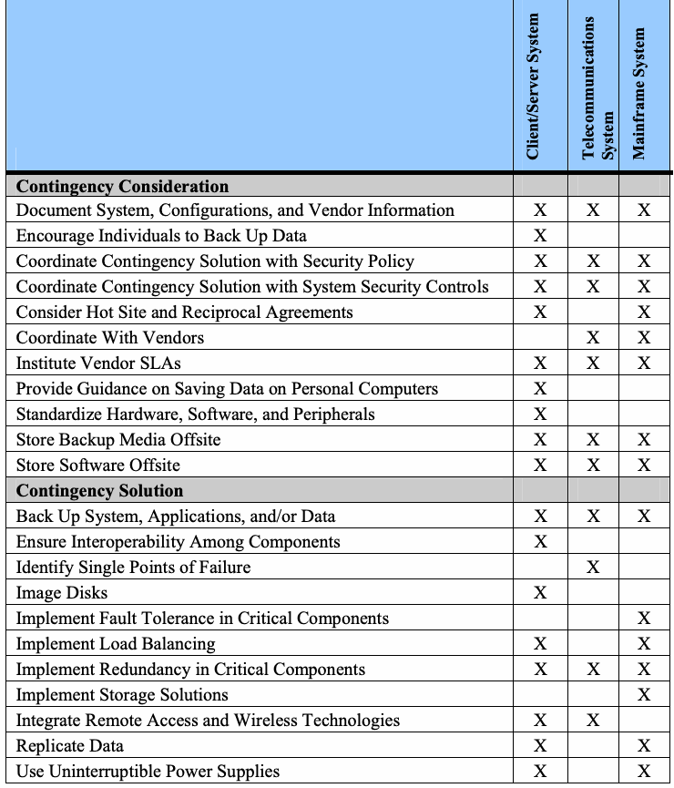
| クライアント／サーバーシステム | 通信システム | メインフレームシステム | |
| 緊急時対応に関する考慮事項 | |||
| システム構成および事業者情報の文書化 | X | X | X |
| 個人にデータのバックアップを促す | X | ||
| 緊急時対応策をセキュリティポリシーと調整する | X | X | X |
| 緊急時対応策をシステムセキュリティ管理策と調整する | X | X | X |
| ホットサイトおよび相互援助協定を検討する | X | X | |
| 事業者と調整する | X | X | |
| 事業者とのSLAを締結する | X | X | X |
| パーソナルコンピューターへのデータ保存方法を案内する | X | ||
| ハードウェア、ソフトウェア、周辺機器を標準化する | X | ||
| バックアップ媒体を遠隔地に保管する | X | X | X |
| ソフトウェアを遠隔地に保管する | X | X | X |
| 緊急時対応策 | |||
| システム、アプリケーション、および／またはデータをバックアップする | X | X | X |
| コンポーネント間の相互運用性を確保する | X | ||
| 単一障害点を特定する | X | ||
| ディスクイメージを作成する | X | ||
| 重要なコンポーネントにフォールトトレランスを実装する | X | ||
| 負荷分散を実装する | X | X | |
| 重要なコンポーネントを冗長化する | X | X | X |
| ストレージソリューションを導入する | X | ||
| リモートアクセスと無線技術を統合する | X | X | |
| データを複製する | X | X | |
| 無停電電源装置を使用する | X | X |
Appendix A—Sample Information System Contingency Plan Templates
付録A—情報システム緊急時対応計画テンプレートの例
未レビュー訳Sample templates are provided to address NIST SP 800-53 security controls for each of the three different FIPS 199 impact levels. The templates provided are guides and may be customized and adapted as necessary to best fit the system or organizational requirements for contingency planning. Appendix A.1 can be used for low-impact systems, Appendix A.2 for moderate- impact systems, and Appendix A.3 for high-impact systems.
FIPS 199の3つの影響度レベルそれぞれに対するNIST SP 800-53のセキュリティ管理策に対応するテンプレートを示す。テンプレートは指針であり、システムまたは組織の緊急時対応計画要件に最も適合するよう、必要に応じてカスタマイズおよび調整できる。付録A.1は低影響システム、付録A.2は中影響システム、付録A.3は高影響システムに使用できる。
A.1 Sample Template for Low-Impact Systems
A.1 低影響システム向けテンプレートの例
未レビュー訳{System name}
{System name}
未レビュー訳Security Categorization: Low
セキュリティ分類：低
未レビュー訳{Organization Name}
{Organization Name}
未レビュー訳Information System Contingency Plan (ISCP)
情報システム緊急時対応計画（ISCP）
未レビュー訳Version [Insert #]
バージョン [Insert #]
未レビュー訳[Date]
[Date]
未レビュー訳Prepared by
作成者
未レビュー訳[Organization Name] [Street Address] [City, State, and Zip Code]
[組織名] [住所] [市区町村、州、郵便番号]
未レビュー訳TABLE OF CONTENTS
目次
Plan Approval…………………………………………………….………..….……….……A.1-3
計画承認 …… A.1-3
未レビュー訳1. Introduction ………………………………………………….……..……….…….……..A.1-4
1. はじめに …… A.1-4
未レビュー訳1.1 Background………..………………………………………….………………..A.1-4 1.2 Scope……..………..…………………………..…….……….……….………..A.1-4 1.3 Assumptions..…….………………………..….……………….……….……...A.1-4
1.1 背景 …… A.1-4 1.2 範囲 …… A.1-4 1.3 前提条件 …… A.1-4
未レビュー訳2. Concept of Operations ………………………….……..…………………………..……A.1-5
2. 運用概念 …… A.1-5
未レビュー訳2.1 System Description………………....……………………………………..…..A.1-5 2.2 Overview of Three Phases..…………………………………………………..A.1-5 2.3 Roles and Responsibilities…….…......……………………………………....A.1-5
2.1 システムの説明 …… A.1-5 2.2 3つのフェーズの概要 …… A.1-5 2.3 役割と責任 …… A.1-5
未レビュー訳3. Activation and Notification………………....………………………..………….……..A.1-6
3. 発動と通知 …… A.1-6
未レビュー訳3.1 Activation Criteria and Procedure ...………………………..………………..A.1-6 3.2 Notification…………………...………………………………..………………..A.1-6 3.3 Outage Assessment…………....…......……………………..………………..A.1-6
3.1 発動基準と手順 …… A.1-6 3.2 通知 …… A.1-6 3.3 停止影響評価 …… A.1-6
未レビュー訳4. Recovery……………………….……………....…………………………………………..A.1-7
4. 復旧 …… A.1-7
未レビュー訳4.1 Sequence of Recovery Activities ....……………………………..…………..A.1-7 4.2 Recovery Procedures ……...………………………………………..………..A.1-8 4.3 Recovery Escalation Notices/Awareness..……………………………..……A.1-8
4.1 復旧活動の順序 …… A.1-7 4.2 復旧手順 …… A.1-8 4.3 復旧のエスカレーション、通知／周知 …… A.1-8
未レビュー訳5. Reconstitution..……………….……………....………………….………………..……..A.1-8
5. 再構成 …… A.1-8
未レビュー訳5.1 Validation Data Testing………...…………………….…….….………….…..A.1-8 5.2 Validation Functionality Testing…........…………….……..…………….…...A.1-8 5.3 Recovery Declaration…………........………………….………………….…..A.1-8 5.4 Notification (users)…. ……...………………………….………………….…..A.1-8 5.5 Cleanup ...……………………...…......……………….………………….……A.1-8 5.6 Data Backup………………...………………………….…………………..…..A.1-8 5.7 Event Documentation…………..…......……………….………………….…..A.1-9 5.8 Deactivation……………………..…......……………….………………….…..A.1-9
5.1 データ検証テスト …… A.1-8 5.2 機能検証テスト …… A.1-8 5.3 復旧宣言 …… A.1-8 5.4 通知（ユーザー）…… A.1-8 5.5 後片付け …… A.1-8 5.6 データバックアップ …… A.1-8 5.7 事象の文書化 …… A.1-9 5.8 解除 …… A.1-9
未レビュー訳APPENDICES
付録
未レビュー訳Plan Approval
計画承認
未レビュー訳Provide a statement in accordance with the agency’s contingency planning policy to affirm that the ISCP is complete and has been tested sufficiently. The statement should also affirm that the designated authority is responsible for continued maintenance and testing of the ISCP. This statement should be approved and signed by the system designated authority. Space should be provided for the designated authority to sign, along with any other applicable approving signatures. Sample language is provided below:
機関の緊急時対応計画ポリシーに従い、ISCPが完成しており、十分なテストを受けたことを確認する声明を記載する。声明では、指定権限者がISCPの継続的な保守とテストに責任を負うことも確認すべきである。この声明はシステムの指定権限者が承認し署名すべきである。指定権限者およびその他該当する承認者が署名する欄を設ける。以下に文例を示す。
未レビュー訳As the designated authority for {system name}, I hereby certify that the information system contingency plan (ISCP) is complete, and that the information contained in this ISCP provides an accurate representation of the application, its hardware, software, and telecommunication components. I further certify that this document identifies the criticality of the system as it relates to the mission of the {organization}, and that the recovery strategies identified will provide the ability to recover the system functionality in the most expedient and cost-beneficial method in keeping with its level of criticality.
{system name}の指定権限者として、情報システム緊急時対応計画（ISCP）が完成しており、ISCPに記載された情報がアプリケーション、そのハードウェア、ソフトウェア、および通信コンポーネントを正確に表していることをここに証明する。さらに、本書が{organization}のミッションに関連するシステムの重要度を特定しており、示された復旧戦略によって、その重要度に見合った最も迅速かつ費用対効果の高い方法でシステム機能を復旧できることを証明する。
未レビュー訳I further attest that this ISCP for {system name} will be tested at least annually. This plan was last tested on {insert exercise date}; the test, training, and exercise (TT&E) material associated with this test can be found {TT&E results appendix or location}. This document will be modified as changes occur and will remain under version control, in accordance with {organization}’s contingency planning policy.
さらに、{system name}のこのISCPを少なくとも年1回テストすることを証明する。この計画の最終テスト日は{insert exercise date}であり、このテストに関するテスト・訓練・演習（TT&E）資料は{TT&E results appendix or location}にある。本書は変更の発生に応じて改訂し、{organization}の緊急時対応計画ポリシーに従ってバージョン管理下に置く。
{System Owner Name}
{System Owner Name}
未レビュー訳Date
日付
未レビュー訳{System Owner Title}
{System Owner Title}
未レビュー訳1. Introduction
1. はじめに
Information systems are vital to {Organization’s} mission/business processes; therefore, it is critical that services provided by {system name} are able to operate effectively without excessive interruption. This Information System Contingency Plan (ISCP) establishes comprehensive procedures to recover {system name} quickly and effectively following a service disruption.
情報システムは、{Organization’s} のミッション／業務プロセスに不可欠である。したがって、{system name} が提供するサービスを過度な中断なく効果的に運用できることが重要である。この情報システム緊急時対応計画（ISCP）は、サービス中断後に {system name} を迅速かつ効果的に復旧するための包括的な手順を定める。
未レビュー訳1.1 Background
1.1 背景
This {system name} ISCP establishes procedures to recover {system name} following a disruption. The following recovery plan objectives have been established: (cid:131) Maximize the effectiveness of contingency operations through an established plan that consists of
この {system name} ISCP は、中断後に {system name} を復旧する手順を定める。次の復旧計画の目標を設定している。 • あらかじめ定めた次の段階からなる計画を通じて、緊急時運用の有効性を最大化する。
未レビュー訳o Activation and Notification phase to activate the plan and determine the extent of damage;
o Recovery phase to restore {system name} operations; and
o Reconstitution phase to ensure that {system name} is validated through testing and that normal operations are resumed.
o 発動・通知段階：計画を発動し、損害の範囲を判断する。
o 復旧段階：{system name} の運用を復旧する。
o 再構成段階：テストを通じて {system name} の妥当性を確認し、通常運用が再開されることを確実にする。
(cid:131) Identify the activities, resources, and procedures to carry out {system name} processing requirements during prolonged interruptions to normal operations. (cid:131) Assign responsibilities to designated {organization name} personnel and provide guidance for recovering {system name} during prolonged periods of interruption to normal operations. (cid:131) Ensure coordination with other personnel responsible for {organization name} contingency planning strategies. Ensure coordination with external points of contact and vendors associated with {system name} and execution of this plan.
• 通常運用が長期間中断した場合に、{system name} の処理要件を満たすための活動、資源、手順を特定する。 • 指定された {organization name} の担当者に責任を割り当て、通常運用が長期間中断した際に {system name} を復旧するための指針を示す。 • {organization name} の緊急時対応計画を担当する他の要員との調整を確保する。また、{system name} および本計画の実施に関係する外部の連絡先やベンダーとの調整を確保する。
未レビュー訳1.2 Scope
1.2 適用範囲
This ISCP has been developed for {system name}, which is classified as a low-impact system, in accordance with Federal Information Processing Standards (FIPS) 199 – Standards for Security Categorization of Federal Information and Information Systems. Procedures in this ISCP are for Low-Impact systems and designed to recover {system name} within {RTO hours}. This plan does not address replacement or purchase of new equipment, short-term disruptions lasting less than {RTO hours}; or loss of data at the onsite facility or at the user-desktop levels. As {system name} is a low-impact system, alternate data storage and alternate site processing are not required.
この ISCP は、Federal Information Processing Standards（FIPS）199「連邦情報システムおよび情報のセキュリティ分類」に従い、低影響システムに分類された {system name} を対象として策定された。本 ISCP の手順は低影響システム向けであり、{system name} を {RTO hours} 以内に復旧するよう設計されている。本計画は、機器の交換または新規購入、{RTO hours} 未満の短時間の中断、ならびにオンサイト施設またはユーザーデスクトップレベルでのデータ喪失を対象としない。{system name} は低影響システムであるため、代替データ保管および代替サイトでの処理は必要ない。
未レビュー訳1.3 Assumptions
1.3 前提条件
The following assumptions were used when developing this ISCP: (cid:131) {System name} has been established as a low-impact system, in accordance with FIPS 199. (cid:131) Alternate processing sites and offsite storage are not required for this system. (cid:131) The {system name} is inoperable and cannot be recovered within {RTO hours}. (cid:131) Key {system name} personnel have been identified and trained in their emergency response and recovery roles; they are available to activate the {system name} Contingency Plan. (cid:131) Additional assumptions as appropriate.
この ISCP の策定では、次の前提を置いている。 • {System name} は FIPS 199 に従い、低影響度システムとして定められている。 • このシステムでは、代替処理サイトおよびオフサイト保管は必要ない。 • {system name} は運用不能であり、{RTO hours} 以内には復旧できない。 • 主要な {system name} 担当者が特定され、緊急対応および復旧の役割について訓練を受けており、{system name} 緊急時対応計画を発動できる状態にある。 • 必要に応じて追加の前提条件を記載する。
未レビュー訳The {system name} ISCP does not apply to the following situations: (cid:131) Overall recovery and continuity of mission/business operations. The Business Continuity Plan (BCP) and Continuity of Operations Plan (COOP) address continuity of mission/business
{system name} ISCP は、次の状況には適用されない。 • ミッション／業務運用全体の復旧および継続。ミッション／業務の継続は、事業継続計画（BCP）および業務継続計画（COOP）で扱う。
未レビュー訳operations. (cid:131) Emergency evacuation of personnel. The Occupant Emergency Plan (OEP) addresses employee evacuation. (cid:131) Any additional constraints and associated plans should be added to this list.
• 要員の緊急避難。従業員の避難は、施設緊急時対応計画（OEP）で扱う。 • 必要に応じて、その他の制約および関連計画をこの一覧に追加すること。
未レビュー訳2. Concept of Operations
2. 運用概念
The Concept of Operations section provides details about {system name}, an overview of the three phases of the ISCP (Activation and Notification, Recovery, and Reconstitution), and a description of roles and responsibilities of {Organization’s} personnel during a contingency activation.
「運用概念」では、{system name} の詳細、ISCP の3段階（発動・通知、復旧、再構成）の概要、および緊急時に計画を発動した際の {Organization’s} 担当者の役割と責任について説明する。
2.1 System Description
2.1 システムの説明
NOTE: Information for this section should be available from the system’s System Security Plan (SSP) and can be copied from the SSP or reference the applicable section in the SSP and attach the latest version of the SSP to this contingency plan. Provide a general description of system architecture and functionality. Indicate the operating environment, physical location, general location of users, and partnerships with external organizations/systems. Include information regarding any other technical considerations that are important for recovery purposes, such as backup procedures.
注：この節の情報は、システムセキュリティ計画（SSP）から入手できるはずである。SSP から転記するか、該当する SSP の節を参照し、最新版の SSP を本緊急時対応計画に添付してもよい。システムのアーキテクチャと機能を概説すること。運用環境、物理的な設置場所、ユーザーのおおよその所在地、外部組織／システムとの連携を示すこと。バックアップ手順など、復旧上重要なその他の技術的事項も記載すること。
2.2 Overview of Three Phases
2.2 3段階の概要
This ISCP has been developed to recover and reconstitute the {system name} using a three-phased approach. This approach ensures that system recovery and reconstitution efforts are performed in a methodical sequence to maximize the effectiveness of the recovery and reconstitution efforts and minimize system outage time due to errors and omissions.
この ISCP は、3段階のアプローチを用いて {system name} を復旧し、再構成するために策定された。このアプローチにより、システムの復旧および再構成を体系的な順序で実施し、その有効性を最大化するとともに、誤りや漏れによるシステム停止時間を最小限に抑える。
The three system recovery phases are:
システム復旧の3段階は次のとおりである。
Activation and Notification Phase – Activation of the ISCP occurs after a disruption or outage that may reasonably extend beyond the RTO established for a system. The outage event may result in severe damage to the facility that houses the system, severe damage or loss of equipment, or other damage that typically results in long-term loss.
発動・通知段階 — システムの停止または中断が、定められた RTO を超えると合理的に見込まれる場合に ISCP を発動する。事象により、システムを収容する施設に深刻な損害が生じる、機器が大きく損傷または喪失する、あるいは通常、長期にわたる停止につながるその他の損害が生じる可能性がある。
未レビュー訳Once the ISCP is activated, system owners and users are notified of a possible long-term outage, and a thorough outage assessment is performed for the system. Information from the outage assessment is presented to system owners and may be used to modify recovery procedures specific to the cause of the outage.
ISCP の発動後、長期停止の可能性についてシステム所有者とユーザーに通知し、システムの停止状況を詳しく評価する。評価結果をシステム所有者に提示し、停止原因に応じて復旧手順を変更する際に利用できる。
Recovery Phase – The Recovery phase details the activities and procedures for recovery of the affected system. Activities and procedures are written at a level that an appropriately skilled technician can recover the system without intimate system knowledge. This phase includes notification and awareness escalation procedures for communication of recovery status to system owners and users.
復旧段階 — 影響を受けたシステムを復旧するための活動と手順を定める。適切な技能を持つ技術者が、システムの詳細な知識がなくても復旧できる水準で記述する。また、復旧状況をシステム所有者とユーザーに伝えるための通知および状況周知の段階的な手順も含む。
未レビュー訳Reconstitution –The Reconstitution phase defines the actions taken to test and validate system capability and functionality at the original or new permanent location. This phase consists of two major activities: validating successful reconstitution and deactivation of the plan.
再構成 — 再構成段階では、元の恒久的な設置場所または新たな恒久的な設置場所で、システムの能力と機能をテストし、妥当性を確認するための措置を定める。この段階は、再構成の成功確認と計画の解除という2つの主要な活動で構成される。
未レビュー訳During validation, the system is tested and validated as operational prior to returning operation to its normal state. Validation procedures may include functionality or regression testing, concurrent processing, and/or data validation. The system is declared recovered and operational by system owners upon successful completion of validation testing.
妥当性確認では、通常の状態に戻す前に、システムをテストし、運用可能であることを妥当性確認する。妥当性確認の手順には、機能テストまたは回帰テスト、並行処理、データの妥当性確認などを含めることができる。妥当性確認テストが正常に完了した時点で、システム所有者がシステムの復旧と運用可能状態を宣言する。
Deactivation includes activities to notify users of system operational status. This phase also addresses recovery effort documentation, activity log finalization, incorporation of lessons learned into plan updates, and readying resources for any future events.
解除には、システムの運用状況をユーザーに通知する活動を含む。また、復旧作業の記録、活動ログの確定、教訓の計画への反映、および将来の事象に備えた資源の準備も扱う。
未レビュー訳2.3 Roles and Responsibilities
2.3 役割と責任
The ISCP establishes several roles for {system name} recovery and reconstitution support. Persons or teams assigned ISCP roles have been trained to respond to a contingency event affecting {system name}.
ISCP では、{system name} の復旧および再構成を支援する複数の役割を定める。ISCP の役割を割り当てられた個人またはチームは、{system name} に影響する緊急事象への対応訓練を受けている。
Describe each team and role responsible for executing or supporting system recovery and reconstitution. Include responsibilities for each team/role, leadership roles, and coordination with other recovery and reconstitution teams, as applicable. At a minimum, a role should be established for a system owner or business unit point of contact, a recovery coordinator, and a technical recovery point of contact.
システムの復旧または再構成を実行もしくは支援する各チームと役割を記述すること。該当する場合は、各チーム／役割の責任、リーダーの役割、および他の復旧・再構成チームとの調整を含めること。最低限、システム所有者または業務部門の連絡担当者、復旧コーディネーター、技術復旧連絡担当者の役割を定めるべきである。
Leadership roles should include an ISCP Director, who has overall management responsibility for the plan, and an ISCP Coordinator, who is responsible to oversee recovery and reconstitution progress, initiate any needed escalations or awareness communications, and establish coordination with other recovery and reconstitution teams as appropriate.
リーダーの役割には、計画全体の管理責任を負う ISCP ディレクターと、復旧および再構成の進捗を監督し、必要なエスカレーションや状況周知を開始し、必要に応じて他の復旧・再構成チームとの調整を確立する責任を負う ISCP コーディネーターを含めるべきである。
3. Activation and Notification
3. 発動と通知
The Activation and Notification Phase defines initial actions taken once a {system name} disruption has been detected or appears to be imminent. This phase includes activities to notify recovery personnel, conduct an outage assessment, and activate the ISCP. At the completion of the Activation and Notification Phase, {system name} ISCP staff will be prepared to perform recovery measures.
「発動と通知」段階では、{system name} の中断を検知した場合、または差し迫っていると見られる場合に最初に行う措置を定める。この段階には、復旧要員への通知、停止状況の評価、ISCP の発動が含まれる。段階の終了時には、{system name} の ISCP 要員が復旧措置を実施できる状態になる。
未レビュー訳3.1 Activation Criteria and Procedure
3.1 発動基準と手順
The {system name} ISCP may be activated if one or more of the following criteria are met:
次の基準のいずれか1つ以上を満たす場合、{system name} ISCP を発動できる。
1.The type of outage indicates {system name} will be down for more than {RTO hours};
1.停止の種類から、{system name} が {RTO hours} を超えて停止すると見込まれる。
2.The facility housing {system name} is damaged and may not be available within {RTO hours}; and
2.{system name} を収容する施設が損傷し、{RTO hours} 以内に利用可能にならない可能性がある。
3.Other criteria, as appropriate.
3.その他、必要に応じた基準。
The following persons or roles may activate the ISCP if one or more of these criteria are met:
これらの基準のいずれか1つ以上を満たす場合、次の個人または役割が ISCP を発動できる。
Establish one or more roles that may activate the plan based on activation criteria. Authorized persons may include the system or business owner, or the operations point of contact (POC) for system support.
発動基準に基づいて計画を発動できる役割を1つ以上定めること。権限を付与する対象には、システム所有者または業務所有者、あるいはシステム支援の運用連絡担当者（POC）を含めることができる。
3.2 Notification
3.2 通知
The first step upon activation of the {system name} ISCP is notification of appropriate mission/business and system support personnel. Contact information for appropriate POCs is included in {Contact List Appendix name}.
{system name} ISCP の発動後、最初に適切なミッション／業務担当者およびシステム支援要員へ通知する。適切な連絡担当者（POC）の連絡先は、{Contact List Appendix name} に記載する。
未レビュー訳For {system name}, the following method and procedure for notifications are used:
{system name} では、次の通知方法および手順を使用する。
Describe established notification procedures. Notification procedures should include who makes the initial notifications, the sequence in which personnel are notified (e.g., system owner, technical POC, ISCP Coordinator, business unit or user unit POC, and recovery team POC), and the method of notification (e.g., email blast, call tree, automated notification system, etc.).
確立済みの通知手順を記述すること。通知手順には、最初に通知する担当者、通知する順序（例：システム所有者、技術連絡担当者、ISCP コーディネーター、業務部門またはユーザー部門の連絡担当者、復旧チームの連絡担当者）、通知方法（例：一斉メール、電話連絡網、自動通知システムなど）を含めるべきである。
3.3 Outage Assessment
3.3 停止状況の評価
未レビュー訳Following notification, a thorough outage assessment is necessary to determine the extent of the disruption, any damage, and expected recovery time. This outage assessment is conducted by {name of recovery team}. Assessment results are provided to the ISCP Coordinator to assist in the coordination of the recovery of {system name}.
通知後、中断の範囲、損害の有無、および復旧見込み時間を判断するため、停止状況を詳しく評価する必要がある。この評価は {name of recovery team} が実施する。評価結果は ISCP コーディネーターに提出し、{system name} の復旧調整に役立てる。
Outline detailed procedures to include how to determine the cause of the outage; identification of potential for additional disruption or damage; assessment of affected physical area(s); and determination of the physical infrastructure status, IS equipment functionality, and inventory. Procedures should include notation of items that will need to be replaced and estimated time to restore service to normal operations.
停止原因の特定、追加の中断または損害が発生する可能性の確認、影響を受けた物理的区域の評価、物理インフラの状態・情報システム機器の機能・在庫の確認を含む詳細な手順を示すこと。交換が必要な物品と、通常運用への復旧に要する推定時間も記録する手順を含めること。
4. Recovery
4. 復旧
The Recovery Phase provides formal recovery operations that begin after the ISCP has been activated, outage assessments have been completed (if possible), personnel have been notified, and appropriate teams have been mobilized. Recovery Phase activities focus on implementing recovery strategies to restore system capabilities, repair damage, and resume operational capabilities at the original or an alternate location. At the completion of the Recovery Phase, {system name} will be functional and capable of performing the functions identified in Section 2.1 of this plan.
「復旧」段階では、ISCP の発動後、可能であれば停止状況の評価を終え、要員への通知を行い、適切なチームを招集した後に正式な復旧作業を開始する。この段階では、システム機能を回復し、損害を修復し、元の場所または代替場所で運用能力を再開するための復旧戦略を実施する。段階の終了時には、{system name} が機能し、本計画の2.1節に示す機能を実行できる状態になる。
4.1 Sequence of Recovery Activities
4.1 復旧活動の順序
The following activities occur during recovery of {system name}:
{system name} の復旧中に、次の活動を行う。
未レビュー訳Modify the following list as appropriate for the selected system recovery strategy.
選択したシステム復旧戦略に応じて、次の一覧を修正すること。
1.Identify recovery location (if not at original location);
1.復旧場所を特定する（元の場所で復旧しない場合）。
未レビュー訳2.Identify required resources to perform recovery procedures;
2.復旧手順の実施に必要な資源を特定する。
3.Retrieve backup and system installation media;
3.バックアップおよびシステムのインストール媒体を取り出す。
4.Recover hardware and operating system (if required); and
4.ハードウェアおよびオペレーティングシステムを復旧する（必要な場合）。
5.Recover system from backup and system installation media.
5.バックアップおよびシステムのインストール媒体からシステムを復旧する。
4.2 Recovery Procedures
4.2 復旧手順
The following procedures are provided for recovery of {system name} at the original location. Recovery procedures are outlined per team and should be executed in the sequence presented to maintain an efficient recovery effort.
次の手順は、元の場所で {system name} を復旧する場合のものである。効率的に復旧作業を進めるため、チームごとに手順を示し、記載順に実施すること。
未レビュー訳Provide general procedures for the recovery of the system from backup media. If an alternate location is part of the recovery strategy, include procedures for recovery to that site. Specific keystroke level procedures may be provided in an appendix. If specific procedures are provided in an appendix, a reference to that appendix should be included in this section. Teams or persons responsible for each procedure should be identified.
バックアップ媒体からシステムを復旧するための一般的な手順を記述すること。復旧戦略に代替場所が含まれる場合は、その場所での復旧手順も含めること。具体的なキー操作レベルの手順は付録に記載できる。付録に記載する場合は、この節から参照すること。各手順の担当チームまたは担当者を明記すること。
4.3 Recovery Escalation Notices/Awareness
4.3 復旧時のエスカレーション通知／状況周知
Provide appropriate procedures for escalation notices during recovery efforts. Notifications during recovery include problem escalation to leadership and status awareness to system owners and users. Teams or persons responsible for each escalation/awareness procedure should be identified.
復旧作業中のエスカレーション通知に関する適切な手順を記述すること。復旧中の通知には、問題を管理層へエスカレーションする連絡と、システム所有者およびユーザーへの状況周知が含まれる。各エスカレーション／周知手順の担当チームまたは担当者を明記すること。
5. Reconstitution
5. 再構成
Reconstitution is the process by which recovery activities are completed and normal system operations are resumed. If the original facility is unrecoverable, the activities in this phase can also be applied to preparing a new permanent location to support system processing requirements. A determination must be made on whether the system has undergone significant change and will require reassessment and reauthorization. The phase consists of two major activities: validating successful reconstitution and deactivation of the plan.
再構成とは、復旧活動を完了し、システムの通常運用を再開するプロセスである。元の施設を復旧できない場合、この段階の活動を、システムの処理要件を支援する新たな恒久的設置場所の準備にも適用できる。システムに重大な変更が生じ、再評価と再承認が必要かどうかを判断しなければならない。この段階は、再構成の成功確認と計画の解除という2つの主要な活動で構成される。
5.1 Validation Data Testing
5.1 データの妥当性確認テスト
Validation data testing is the process of testing and validating data to ensure that data files or databases have been recovered completely at the permanent location. The following procedures will be used to determine that the data is complete and current to the last available backup:
データの妥当性確認テストとは、恒久的な設置場所でデータファイルまたはデータベースが完全に復旧したことを確かめるため、データをテストし検証するプロセスである。利用可能な最新のバックアップ時点までデータが完全かつ最新であることを確認するため、次の手順を使用する。
Provide procedures for testing and validation of data to ensure that data is correct and up to date. This section may be combined with the Functionality Testing section if procedures test both the functionality and data validity. Teams or persons responsible for each procedure should be identified. An example of a validation data test for a low-impact system would be to see if the last known complete transaction was updated in the database. Detailed data test procedures may be provided in Appendix E, System Validation Test Plan.
データが正確かつ最新であることを確認するためのテストおよび検証手順を記述すること。機能とデータの両方をテストする場合、この節を「機能テスト」と統合できる。各手順の担当チームまたは担当者を明記すること。低影響度システムのデータ妥当性確認テストの例として、最後に完了したことが分かっているトランザクションがデータベースに反映されているかを確認する方法がある。詳細なデータテスト手順は付録 E「システム妥当性確認テスト計画」に記載できる。
未レビュー訳5.2 Validation Functionality Testing
5.2 機能の妥当性確認テスト
Validation functionality testing is the process of verifying that {system name} functionality has been tested, and the system is ready to return to normal operations.
機能の妥当性確認テストとは、{system name} の機能がテストされ、通常運用に戻る準備が整っていることを確認するプロセスである。
Provide system functionality testing and/or validation procedures to ensure that the system is operating correctly. This section may be combined with the Data Testing section if procedures test both the functionality and data validity. Teams or persons responsible for each procedure should be identified. An example of a functional test for a low-impact system may be logging into the system and running a report or performing a transaction to see if the system is operating correctly. Detailed functionality test procedures may be provided in Appendix E, System Validation Test Plan.
システムが正しく動作していることを確認するため、システム機能のテストおよび／または妥当性確認の手順を記述すること。機能とデータの両方をテストする場合、この節を「データテスト」と統合できる。各手順の担当チームまたは担当者を明記すること。低影響度システムの機能テストの例として、システムにログインし、レポートを実行するかトランザクションを処理して、正しく動作しているかを確認する方法がある。詳細な機能テスト手順は付録 E「システム妥当性確認テスト計画」に記載できる。
5.3 Recovery Declaration
5.3 復旧の宣言
Upon successfully completing testing and validation, the {system owner} will formally declare recovery efforts complete, and that {system name} is in normal operations. {System name} business and technical POCs will be notified of the declaration by the ISCP Coordinator.
テストおよび妥当性確認が正常に完了した後、{system owner} は復旧作業の完了と {system name} の通常運用への復帰を正式に宣言する。ISCP コーディネーターは、宣言について {System name} の業務および技術担当POCに通知する。
未レビュー訳5.4 Notifications (users)
5.4 ユーザーへの通知
Upon return to normal system operations, {system name} users will be notified by {role} using predetermined notification procedures (e.g., email, broadcast message, phone calls, etc.).
システムが通常運用に戻った後、{system name} のユーザーには、あらかじめ定めた通知手順（例：電子メール、全体向けメッセージ、電話）を使って {role} が通知する。
5.5 Cleanup
5.5 後片付け
Cleanup is the process of cleaning up or dismantling any temporary recovery locations, restocking supplies used, returning manuals or other documentation to their original locations, and readying the system for a possible future contingency event.
後片付けとは、一時的な復旧場所の清掃または撤去、使用した備品の補充、マニュアルその他の文書を元の場所に戻すこと、および次の緊急事象に備えてシステムを整えることである。
未レビュー訳Provide any specific cleanup procedures for the system including preferred locations for manuals and documents and returning backup or installation media to its original location.
システム固有の後片付け手順を記述すること。マニュアルや文書の望ましい保管場所、およびバックアップ媒体やインストール媒体を元の場所に戻すことも含めること。
5.6 Data Backup
5.6 データのバックアップ
As soon as reasonable following recovery, the system should be fully backed up and a new copy of the current operational system stored for future recovery efforts. This full backup is then kept with other system backups. The procedures for conducting a full system backup are:
復旧後、合理的に可能な限り速やかにシステム全体をバックアップし、現在運用中のシステムの新しいコピーを将来の復旧に備えて保管すること。この完全バックアップは、他のシステムバックアップとともに保管する。システム全体のバックアップを実施する手順は次のとおりである。
未レビュー訳Provide appropriate procedures for ensuring that a full system backup is conducted within a reasonable time frame, ideally at the next scheduled backup period.
合理的な期間内、できれば次回の予定バックアップ時に、システム全体のバックアップを実施するための適切な手順を記述すること。
5.7 Event Documentation
5.7 事象の記録
It is important that all recovery events be well-documented, including actions taken and problems encountered during the recovery and reconstitution effort, and lessons learned for inclusion and update to this ISCP. It is the responsibility of each ISCP team or person to document their actions during the recovery and reconstitution effort, and to provide that documentation to the ISCP Coordinator.
復旧および再構成の作業中に実施した措置、発生した問題、および本 ISCP への教訓の反映・更新を含め、すべての復旧事象を十分に記録することが重要である。復旧および再構成中の活動を記録し、その記録を ISCP コーディネーターに提出する責任は、各 ISCP チームまたは担当者にある。
未レビュー訳Provide details about the types of information each ISCP team member is required to provide or collect for updating the ISCP with lessons learned. Types of documentation that should be generated and collected after a contingency activation include: (cid:131) Activity logs (including recovery steps performed and by whom, the time the steps were initiated and completed, and any problems or concerns encountered while executing activities); (cid:131) Functionality and data testing results; (cid:131) Lessons learned documentation; and (cid:131) After Action Report.
教訓を反映して ISCP を更新するために、各 ISCP チームメンバーが提出または収集すべき情報の種類を詳しく記述すること。緊急時対応計画の発動後に作成・収集する文書には、次のものがある。 • 活動ログ（実施した復旧手順と担当者、各手順の開始・完了時刻、活動中に発生した問題や懸念事項を含む）。 • 機能テストおよびデータテストの結果。 • 教訓の記録。 • 事後報告書。
未レビュー訳Event documentation procedures should detail responsibilities for development, collection, approval, and maintenance.
事象記録の手順では、記録の作成、収集、承認、維持に関する責任を詳細に定めること。
5.8 Deactivation
5.8 計画の解除
Once all activities have been completed and documentation has been updated, the {system owner} will formally deactivate the ISCP recovery and reconstitution effort. Notification of this declaration will be provided to all business and technical POCs.
すべての活動が完了し、文書が更新された後、{system owner} が ISCP による復旧・再構成作業の終了を正式に宣言する。この宣言をすべての業務および技術担当POCに通知する。
未レビュー訳SUGGESTED APPENDICES
推奨する付録
未レビュー訳ISCP appendices included should be based on system and plan requirements. The following appendices are recommended:
ISCP に含める付録は、システムおよび計画の要件に基づいて選択すること。次の付録を推奨する。
未レビュー訳APPENDIX A PERSONNEL CONTACT LIST
付録 A 要員連絡先一覧
Provide contact information for each person with a role or responsibility for activation or implementation of the ISCP, or coordination with the ISCP. For each person listed, at least one office and one non-office contact number is recommended. Note: Information may contain personally identifiable information and should be protected.
ISCP の発動または実施を担当する人、および ISCP との調整を担う人について、連絡先情報を記載すること。各人について、少なくとも職場と職場外の連絡先番号を1つずつ記載することを推奨する。注：個人を特定できる情報を含む可能性があるため、保護すること。
| {System name} ISCP Key Personnel | |
| Key Personnel | Contact Information |
| ISCP Director | Work / Insert number |
| Insert Name and Title | Home / Insert number |
| Insert Street Address | Cellular / Insert number |
| Insert City, State, and Zip Code | Email / Insert email address |
| ISCP Director – Alternate | Work |
| Home | |
| Cellular | |
| ISCP Coordinator | Work |
| Home | |
| Cellular | |
| ISCP Coordinator – Alternate | Work |
| Home | |
| Cellular | |
| ISCP Team – Team Lead | Work |
| Home | |
| Cellular | |
| ICSP Team – Team Members | Work |
| Home | |
| Cellular | |
原本PDFの抜粋画像
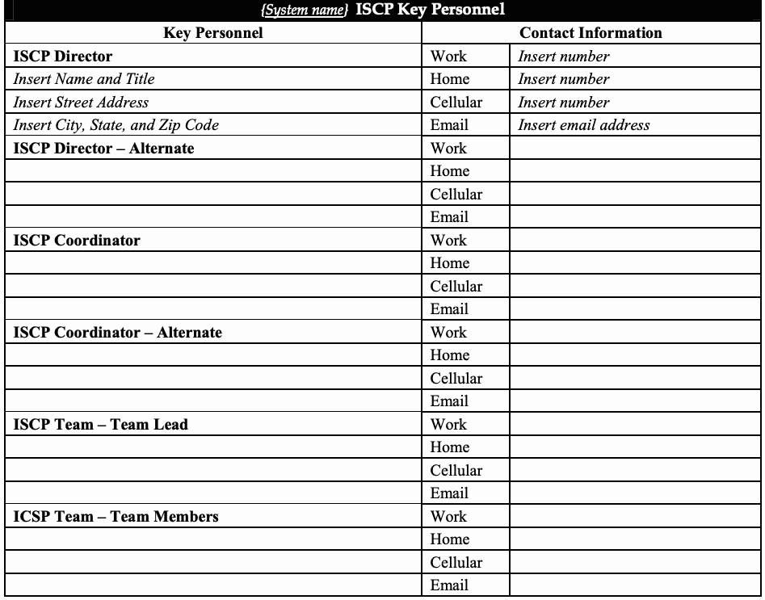
| {System name} ISCP 主要担当者 | |
| 主要担当者 | 連絡先情報 |
| ISCP ディレクター | 職場／電話番号を記入 |
| 氏名・役職を記入 | 自宅／電話番号を記入 |
| 住所を記入 | 携帯電話／番号を記入 |
| 市区町村、都道府県、郵便番号を記入 | 電子メール／アドレスを記入 |
| ISCP ディレクター（代理） | 職場 |
| 自宅 | |
| 携帯電話 | |
| 電子メール | |
| ISCP コーディネーター | 職場 |
| 自宅 | |
| 携帯電話 | |
| 電子メール | |
| ISCP コーディネーター（代理） | 職場 |
| 自宅 | |
| 携帯電話 | |
| 電子メール | |
| ISCP チーム－チームリーダー | 職場 |
| 自宅 | |
| 携帯電話 | |
| 電子メール | |
| ISCP チーム－チームメンバー | 職場 |
| 自宅 | |
| 携帯電話 | |
| 電子メール |
APPENDIX B VENDOR CONTACT LIST
付録 B ベンダー連絡先一覧
Contact information for all key maintenance or support vendors should be included in this appendix. Contact information, such as emergency phone numbers, contact names, contract numbers, and contractual response and onsite times should be included.
主要な保守ベンダーまたはサポートベンダーの連絡先情報をこの付録に記載すること。緊急電話番号、連絡担当者名、契約番号、契約上の応答時間および現地到着時間などを含めること。
未レビュー訳APPENDIX C DETAILED RECOVERY PROCEDURES
付録 C 詳細な復旧手順
This appendix includes the detailed recovery procedures for the system, which may include items such as:
この付録には、システムの詳細な復旧手順を記載する。たとえば、次の内容が含まれる。
未レビュー訳(cid:131) Keystroke-level recovery steps; (cid:131) System installation instructions from tape, CD, or other media; (cid:131) Required configuration settings or changes; (cid:131) Recovery of data from tape and audit logs; and (cid:131) Other system recovery procedures, as appropriate.
• キー操作レベルの復旧手順。 • テープ、CD、その他の媒体からのシステムインストール手順。 • 必要な構成設定または変更。 • テープおよび監査ログからのデータ復旧。 • 必要に応じたその他のシステム復旧手順。
未レビュー訳If the system relies totally on another group or system for its recovery and reconstitution (such as a mainframe system), information provided should include contact information and locations of detailed recovery procedures for that supporting system.
システムの復旧および再構成を全面的に別のグループまたはシステム（メインフレームシステムなど）に依存する場合は、その支援システムの連絡先と詳細な復旧手順の所在を記載すること。
APPENDIX D ALTERNATE PROCESSING PROCEDURES
付録 D 代替処理手順
This section should identify any alternate manual or technical processing procedures available that allow the business unit to continue some processing of information that would normally be done by the affected system. Examples of alternate processes include manual forms processing, input into workstations to store data until it can be uploaded and processed, or queuing of data input.
影響を受けたシステムが通常処理する情報について、業務部門が一部の処理を継続できる代替の手作業または技術的処理手順を記載すること。代替処理の例として、帳票の手作業処理、後でアップロードして処理できるようワークステーションにデータを入力して保存する方法、データ入力をキューに蓄積する方法がある。
未レビュー訳APPENDIX E SYSTEM VALIDATION TEST PLAN
付録 E システム妥当性確認テスト計画
This appendix includes system acceptance procedures that are performed after the system has been recovered and prior to putting the system into full operation and returned to users. The system validation test plan may include data testing and the regression or functionality testing conducted prior to implementation of a system upgrade or change.
この付録には、システム復旧後、全面運用に移行してユーザーに返却する前に実施するシステム受入れ手順を記載する。システム妥当性確認テスト計画には、データテスト、およびシステムのアップグレードや変更を実施する前に行う回帰テストまたは機能テストを含めることができる。
未レビュー訳An example of a system validation test plan:
システム妥当性確認テスト計画の例：
Once the system has been recovered, the following steps will be performed to validate system data and functionality:
システムの復旧後、システムのデータと機能を検証するため、次の手順を実施する。
| Procedure | Expected Results | Actual Results | Successful? | Performed |
| by | ||||
| At the Command Prompt, type in sysname | System Log-in Screen appears | |||
| Log in as user testuser, using password testpass | Initial Screen with Main Menu shows | |||
| From Menu - select 5- Generate Report | Report Generation Screen shows | |||
| - Select Current Date Report - Select Weekly - Select To Screen | Report is generated on screen with last successful transaction included | |||
| - Select Close | Report Generation Screen Shows | |||
| - Select Return to Main Menu | Initial Screen with Main Menu shows | |||
| - Select Log-Off | Log-in Screen appears |
原本PDFの抜粋画像
| 手順 | 期待される結果 | 実際の結果 | 成功したか | 実施 |
| 者 | ||||
| コマンドプロンプトで sysname と入力する | システムログイン画面が表示される | |||
| ユーザー testuser、パスワード testpass でログインする | 初期画面にメインメニューが表示される | |||
| メニューから「5 - レポート生成」を選択する | レポート生成画面が表示される | |||
| 「現在日付レポート」「週次」「画面に出力」の順に選択する | 画面にレポートが生成され、最後に成功したトランザクションが含まれる | |||
| 「閉じる」を選択する | レポート生成画面が表示される | |||
| 「メインメニューに戻る」を選択する | 初期画面にメインメニューが表示される | |||
| 「ログオフ」を選択する | ログイン画面が表示される |
APPENDIX F DIAGRAMS (SYSTEM AND INPUT/OUTPUT)
付録 F 図（システムおよび入出力）
NOTE: Information for this section should be available from the system’s System Security Plan (SSP) and can be copied from the SSP, or reference the applicable section in the SSP and attach the latest version of the SSP to this contingency plan. Include any system architecture, input/output, or other technical or logical diagrams that may be useful in recovering the system. Diagrams may also identify information about interconnection with other systems.
注：この節の情報は、システムセキュリティ計画（SSP）から入手できるはずである。SSP から転記するか、該当する SSP の節を参照し、最新版の SSP を本緊急時対応計画に添付すること。システムの復旧に役立つアーキテクチャ、入出力、その他の技術図または論理図を含めること。図には、他のシステムとの相互接続に関する情報を示すこともできる。
未レビュー訳APPENDIX G HARDWARE AND SOFTWARE INVENTORY
付録 G ハードウェアおよびソフトウェアの一覧
Provide the hardware and software inventory for the system. Inventory information should include type of server or hardware on which the system runs, processors and memory requirements, storage requirements, and any other pertinent details. The software inventory should identify the operating system (including service pack or version levels, and any other applications necessary to operate the system, such as database software).
システムのハードウェアおよびソフトウェアの一覧を記載すること。ハードウェア一覧には、システムが稼働するサーバーまたはハードウェアの種類、プロセッサおよびメモリの要件、ストレージ要件、その他関連する詳細を含めること。ソフトウェア一覧には、オペレーティングシステム（サービスパックまたはバージョンを含む）と、システム運用に必要なデータベースソフトウェアなどのアプリケーションを記載すること。
未レビュー訳APPENDIX H INTERCONNECTIONS TABLE
付録 H 相互接続一覧
NOTE: Information for this section should be available from the system’s System Security Plan (SSP) and can be copied from the SSP, or reference the applicable section in the SSP and attach the latest version of the SSP to this contingency plan. This appendix includes information on other systems that directly interconnect or exchange information with the system. Interconnection information should include the type of connection, information transferred, and contact person for that system.
注：この節の情報は、システムセキュリティ計画（SSP）から入手できるはずである。SSP から転記するか、該当する SSP の節を参照し、最新版の SSP を本緊急時対応計画に添付すること。この付録には、システムと直接相互接続する、または情報を交換する他のシステムの情報を記載する。相互接続情報には、接続の種類、転送する情報、および相手システムの連絡担当者を含めること。
If the system does not have any direct interconnections, then this appendix may be removed, or the following statement may be used:
システムに直接の相互接続がない場合、この付録を削除するか、次の文を使用できる。
未レビュー訳{System name} does not directly interconnect with any other systems.
{System name} は、他のシステムと直接相互接続していない。
未レビュー訳APPENDIX I TEST AND MAINTENANCE SCHEDULE
付録 I テストおよび保守のスケジュール
All ISCPs should be reviewed and tested at the organization defined frequency (e.g. yearly) or whenever there is a significant change to the system. Provide information and a schedule for the testing of the system. For low-impact systems, a yearly tabletop exercise is sufficient. The tabletop exercise should include all ISCP points of contact, and be conducted by an outside or impartial observer. A formal test plan is developed prior to the tabletop, and an exercise and questions are developed to include key sections of the ISCP, including a walk-through of the following: (cid:131) Notification procedures; (cid:131) System recovery on an alternate platform from backup media; (cid:131) Internal and external connectivity; and (cid:131) Reconstitution procedures.
すべての ISCP は、組織が定めた頻度（例：年1回）で、またはシステムに重大な変更があった場合に、レビューおよびテストする必要がある。システムテストに関する情報とスケジュールを記載すること。低影響度システムでは、年1回のテーブルトップ演習で十分である。演習にはすべての ISCP 連絡担当者が参加し、外部の観察者または中立的な観察者が進行すること。演習前に正式なテスト計画を作成し、ISCP の主要な節を含む演習と設問を用意する。次の項目を確認するウォークスルーを含めること。 • 通知手順。 • バックアップ媒体から代替プラットフォームへのシステム復旧。 • 内部および外部との接続性。 • 再構成手順。
未レビュー訳Results of the test are documented in an After Action Report, and Lessons Learned are developed for updating information in the ISCP.
テスト結果を事後報告書に記録し、ISCP の情報を更新するための教訓をまとめる。
未レビュー訳The following is a sample of a yearly test and maintenance schedule for a low-impact system:
次に、低影響度システム向けの年次テストおよび保守スケジュールの例を示す。
| Step | Date Due by | Responsible Party | Date Scheduled | Date Held |
| Identify tabletop facilitator. | April 1 | ISCP Coordinator | ||
| Develop tabletop test plan. | May 1 | Tabletop Facilitator | ||
| Invite participants. | May 10 | Tabletop Facilitator | ||
| Conduct tabletop test. | May 31 | Facilitator, ISCP Coordinator, POCs | ||
| Finalize after action report and lessons learned. | June 10 | ISCP Coordinator | ||
| Update ISCP based on lessons learned. | June 30 | ISCP Coordinator | ||
| Approve and distribute updated version of ISCP. | July 15 | ISCP Director, ISCP Coordinator |
原本PDFの抜粋画像
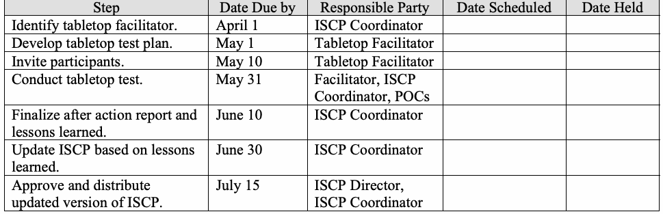
| 手順 | 期限 | 担当者 | 予定日 | 実施日 |
| テーブルトップ演習の進行役を選任する。 | 4月1日 | ISCP コーディネーター | ||
| テーブルトップ演習のテスト計画を作成する。 | 5月1日 | テーブルトップ演習の進行役 | ||
| 参加者を招待する。 | 5月10日 | テーブルトップ演習の進行役 | ||
| テーブルトップ演習を実施する。 | 5月31日 | 進行役、ISCP コーディネーター、POC | ||
| 事後報告書を確定し、教訓をまとめる。 | 6月10日 | ISCP コーディネーター | ||
| 教訓に基づいて ISCP を更新する。 | 6月30日 | ISCP コーディネーター | ||
| ISCP の更新版を承認して配布する。 | 7月15日 | ISCP ディレクター、ISCP コーディネーター |
APPENDIX J ASSOCIATED PLANS AND PROCEDURES
付録 J 関連計画および手順
NOTE: Information for this section should be available from the system’s System Security Plan (SSP) and can be copied from the SSP, or reference the applicable section in the SSP and attach the latest version of the SSP to this contingency plan. ISCPs for other systems that either interconnect or support the system should be identified in this appendix. The most current version of the ISCP, location of ISCP, and primary point of contact (such as the ISCP Coordinator) should be noted.
注：この節の情報は、システムセキュリティ計画（SSP）から入手できるはずである。SSP から転記するか、該当する SSP の節を参照し、最新版の SSP を本緊急時対応計画に添付すること。システムと相互接続している、またはシステムを支援する他のシステムの ISCP をこの付録に記載すること。各 ISCP の最新版、保管場所、および主要連絡担当者（ISCP コーディネーターなど）を明記すること。
未レビュー訳APPENDIX K BUSINESS IMPACT ANALYSIS
付録 K 業務影響分析
The Business Impact Analysis results should be included in this appendix.
業務影響分析の結果をこの付録に含めること。
APPENDIX L DOCUMENT CHANGE PAGE
付録 L 文書変更履歴
Modifications made to this plan since the last printing are as follows:
前回の印刷以降に本計画に加えた変更は次のとおりである。
| 変更履歴 | |||
| ページ番号 | 変更内容 | 変更日 | 署名 |
A.2 Sample Template for Moderate-Impact Systems
A.2 中影響度システム向けテンプレート例
未レビュー訳[System Name]
[システム名]
未レビュー訳Security Categorization: Moderate
セキュリティ分類：中程度
未レビュー訳[Organization Name]
[組織名]
未レビュー訳Information System Contingency Plan (ISCP)
情報システム緊急時対応計画（ISCP）
未レビュー訳Version [#]
バージョン [番号]
未レビュー訳[Date]
[日付]
未レビュー訳Prepared by
作成者
未レビュー訳[Organization Name] [Street Address] [City, State, and Zip Code]
[組織名] [番地・住所] [市区町村、州、郵便番号]
未レビュー訳TABLE OF CONTENTS
目次
Plan Approval…………………………………………………….………..….……….……A.2-3
計画の承認………………………………………………A.2-3
未レビュー訳1. Introduction ………………………………………………….……..……….…….……..A.2-4
1. はじめに…………………………………………………A.2-4
未レビュー訳1.1 Background………..………………………………………….………………..A.2-4 1.2 Scope……..………..…………………………..…….……….……….………..A.2-4 1.3 Assumptions..…….………………………..….……………….……….……...A.2-4
1.1 背景……………………………………………………A.2-4 1.2 適用範囲…………………………………………A.2-4 1.3 前提条件………………………………………A.2-4
未レビュー訳2. Concept of Operations ………………………….……..…………………………..…..A.2-5
2. 運用概念…………………………………………………A.2-5
未レビュー訳2.1 System Description………………....……………………………………..…..A.2-5 2.2 Overview of Three Phases..………………………………………………….A.2-5 2.3 Roles and Responsibilities…….…......……………………………………....A.2-6
2.1 システムの説明……………………………………A.2-5 2.2 3段階の概要………………………………A.2-5 2.3 役割と責任……………………………………A.2-6
未レビュー訳3. Activation and Notification………………....………………………..………….……..A.2-6
3. 発動と通知………………………………………………A.2-6
未レビュー訳3.1 Activation Criteria and Procedure ...………………………..………………..A.2-6 3.2 Notification…………………...………………………………..………………..A.2-7 3.3 Outage Assessment…………....…......……………………..………………..A.2-7
3.1 発動基準と手順…………………………………A.2-6 3.2 通知……………………………………………A.2-7 3.3 停止状況の評価……………………………A.2-7
未レビュー訳4. Recovery……………………….……………....…………………………………………..A.2-7
4. 復旧………………………………………………………A.2-7
未レビュー訳4.1 Sequence of Recovery Activities ....……………………………..…………..A.2-7 4.2 Recovery Procedures ……...………………………………………..………..A.2-8 4.3 Recovery Escalation Notices/Awareness..…………………………..……...A.2-8
4.1 復旧活動の順序…………………………………A.2-7 4.2 復旧手順……………………………………A.2-8 4.3 復旧時のエスカレーション通知／周知………A.2-8
未レビュー訳5. Reconstitution..……………….……………....………………….………………..……..A.2-8
5. 再構成……………………………………………………A.2-8
未レビュー訳5.1 Validation Data Testing………….…………………….………………….…..A.2-8 5.2 Validation Functionality Testing…......……………….………………….…...A.2-8 5.3 Recovery Declaration…………........………………….………………….…..A.2-9 5.4 Notification (users)…. ……...………………………….………………….…..A.2-9 5.5 Cleanup ...……………………...…......……………….………………….…....A.2-9 5.6 Offsite Data Storage……………. ....………………….………………….…..A.2-9 5.7 Data Backup………………...………………………….…………………..…..A.2-9 5.8 Event Documentation…………..…......……………….………………….…..A.2-9 5.9 Deactivation……………………..…......……………….………………….…..A.2-10
5.1 データの妥当性確認テスト…………………A.2-8 5.2 機能の妥当性確認テスト………………A.2-8 5.3 復旧の宣言…………………………………A.2-9 5.4 ユーザーへの通知…………………………A.2-9 5.5 後片付け………………………………………A.2-9 5.6 オフサイトデータ保管…………………A.2-9 5.7 データのバックアップ…………………A.2-9 5.8 事象の記録……………………………………A.2-9 5.9 計画の解除……………………………………A.2-10
未レビュー訳APPENDICES
付録
未レビュー訳Plan Approval
計画の承認
未レビュー訳Provide a statement in accordance with the agency’s contingency planning policy to affirm that the ISCP is complete and has been tested sufficiently. The statement should also affirm that the designated authority is responsible for continued maintenance and testing of the ISCP. This statement should be approved and signed by the system designated authority. Space should be provided for the designated authority to sign, along with any other applicable approving signatures. Sample language is provided below:
ISCP が完成し、十分にテストされていることを確認するため、機関の緊急時対応計画方針に沿った声明を記載すること。また、指定権限者が ISCP の継続的な維持およびテストに責任を負うことも確認すること。この声明は、システムの指定権限者が承認し、署名する必要がある。指定権限者およびその他該当する承認者が署名できる欄を設けること。以下に文例を示す。
未レビュー訳As the designated authority for {system name}, I hereby certify that the information system contingency plan (ISCP) is complete, and that the information contained in this ISCP provides an accurate representation of the application, its hardware, software, and telecommunication components. I further certify that this document identifies the criticality of the system as it relates to the mission of the {organization name}, and that the recovery strategies identified will provide the ability to recover the system functionality in the most expedient and cost-beneficial method in keeping with its level of criticality.
{system name} の指定権限者として、情報システム緊急時対応計画（ISCP）が完成しており、本 ISCP に含まれる情報がアプリケーション、そのハードウェア、ソフトウェアおよび通信コンポーネントを正確に表していることをここに証明します。さらに、本書が {organization name} のミッションに照らしたシステムの重要度を特定しており、特定された復旧戦略によって、その重要度に応じて最も迅速かつ費用対効果の高い方法でシステム機能を復旧できることを証明します。
未レビュー訳I further attest that this ISCP for {system name} will be tested at least annually. This plan was last tested on {insert exercise date}; the test, training, and exercise (TT&E) material associated with this test can be found {TT&E results appendix or location}. This document will be modified as changes occur and will remain under version control, in accordance with {organization name}’s contingency planning policy.
さらに、{system name} の本 ISCP を少なくとも年1回テストすることを証明します。本計画の最終テスト日は {insert exercise date} です。このテストに関連するテスト・訓練・演習（TT&E）資料は、{TT&E results appendix or location} にあります。{organization name} の緊急時対応計画方針に従い、変更が生じた際に本書を改訂し、バージョン管理を継続します。
{System Owner Name}
{System Owner Name}
未レビュー訳Date
日付
未レビュー訳{System Owner Title}
{System Owner Title}
未レビュー訳1. Introduction
1. はじめに
Information systems are vital to {Organization’s} mission/business processes; therefore, it is critical that services provided by {system name} are able to operate effectively without excessive interruption. This Information System Contingency Plan (ISCP) establishes comprehensive procedures to recover {system name} quickly and effectively following a service disruption.
情報システムは {Organization’s} のミッション／業務プロセスに不可欠である。したがって、{system name} が提供するサービスを過度な中断なく効果的に運用できることが重要である。この情報システム緊急時対応計画（ISCP）は、サービス中断後に {system name} を迅速かつ効果的に復旧するための包括的な手順を定める。
未レビュー訳1.1 Background
1.1 背景
This {system name} ISCP- establishes procedures to recover {system name} following a disruption. The following recovery plan objectives have been established: (cid:131) Maximize the effectiveness of contingency operations through an established plan that consists of
この {system name} ISCP は、中断後に {system name} を復旧する手順を定める。次の復旧計画の目標を設定している。 • あらかじめ定めた段階からなる計画を通じて、緊急時運用の有効性を最大化する。
未レビュー訳the following phases: o Activation and Notification phase to activate the plan and determine the extent of damage; o Recovery phase to restore {system name} operations; and o Reconstitution phase to ensure that {system name} is validated through testing and that normal operations are resumed. (cid:131) Identify the activities, resources, and procedures to carry out {system name} processing requirements during prolonged interruptions to normal operations. (cid:131) Assign responsibilities to designated {organization name} personnel and provide guidance for recovering {system name} during prolonged periods of interruption to normal operations. (cid:131) Ensure coordination with other personnel responsible for {organization name} contingency planning strategies. Ensure coordination with external points of contact and vendors associated with {system name} and execution of this plan.
その段階は次のとおりである。 – 計画を発動し、損害の範囲を判断する「発動・通知」段階。 – {system name} の運用を復旧する「復旧」段階。 – テストを通じて {system name} の妥当性を確認し、通常運用を再開する「再構成」段階。 • 通常運用が長期間中断した場合に、{system name} の処理要件を満たす活動、資源、手順を特定する。 • 指定された {organization name} の担当者に責任を割り当て、長期中断時に {system name} を復旧する指針を示す。 • {organization name} の緊急時対応計画を担う他の要員との調整を確保する。また、{system name} と本計画の実施に関係する外部の連絡先およびベンダーとの調整を確保する。
未レビュー訳1.2 Scope
1.2 適用範囲
This ISCP has been developed for {system name}, which is classified as a moderate-impact system, in accordance with Federal Information Processing Standards (FIPS) 199 – Standards for Security Categorization of Federal Information and Information Systems. Procedures in this ISCP are for moderate-impact systems and designed to recover {system name} within {RTO hours}. This plan does not address replacement or purchase of new equipment, short-term disruptions lasting less than {RTO hours}, or loss of data at the onsite facility or at the user-desktop levels.
この ISCP は、Federal Information Processing Standards（FIPS）199「連邦情報および情報システムのセキュリティ分類のための規格（Standards for Security Categorization of Federal Information and Information Systems）」に従い、中影響度システムに分類された {system name} を対象として策定された。本 ISCP の手順は中影響度システム向けであり、{system name} を {RTO hours} 以内に復旧するよう設計されている。本計画は、機器の交換または新規購入、{RTO hours} 未満の短時間の中断、ならびにオンサイト施設またはユーザーデスクトップレベルでのデータ喪失を対象としない。
1.3 Assumptions
1.3 前提条件
The following assumptions were used when developing this ISCP: (cid:131) {System name} has been established as a moderate-impact system, in accordance with FIPS 199. (cid:131) Alternate processing sites and offsite storage are required and have been established for this
この ISCP の策定では、次の前提を置いている。 • {System name} は FIPS 199 に従い、中影響度システムとして定められている。 • このシステムでは代替処理サイトとオフサイト保管が必要であり、すでに確保されている。
未レビュー訳system. (cid:131) Current backups of the system software and data are intact and available at the offsite storage facility in {City, State}. (cid:131) Alternate facilities have been established at {City, State} and are available if needed for relocation of {system name}.
• システムソフトウェアとデータの最新バックアップが完全な状態で、{City, State} のオフサイト保管施設から利用できる。 • {City, State} に代替施設が確保されており、必要に応じて {system name} の移転先として利用できる。
未レビュー訳(cid:131) The {system name} is inoperable at the {organization name} and cannot be recovered within {RTO hours}. (cid:131) Key {system name} personnel have been identified and trained in their emergency response and recovery roles; they are available to activate the {system name} Contingency Plan. (cid:131) Additional assumptions as appropriate.
• {system name} は {organization name} で運用不能となっており、{RTO hours} 以内に復旧できない。 • 主要な {system name} 担当者が特定され、緊急対応および復旧の役割について訓練を受けており、{system name} 緊急時対応計画を発動できる状態にある。 • 必要に応じて追加の前提条件を記載する。
未レビュー訳The {system name} Contingency Plan does not apply to the following situations: (cid:131) Overall recovery and continuity of mission/business operations. The Business Continuity Plan (BCP) and Continuity of Operations Plan (COOP) address continuity of business operations. (cid:131) Emergency evacuation of personnel. The Occupant Emergency Plan (OEP) addresses
{system name} 緊急時対応計画は、次の状況には適用されない。 • ミッション／業務運用全体の復旧および継続。業務継続計画（BCP）および業務継続計画（COOP）で業務の継続を扱う。 • 要員の緊急避難。施設緊急時対応計画（OEP）で従業員の避難を扱う。
未レビュー訳employee evacuation. (cid:131) Any additional constraints and associated plans should be added to this list.
• 必要に応じて、その他の制約および関連計画をこの一覧に追加すること。
未レビュー訳2. Concept of Operations
2. 運用概念
The Concept of Operations section provides details about {system name}, an overview of the three phases of the ISCP (Activation and Notification, Recovery, and Reconstitution), and a description of roles and responsibilities of {Organization’s} personnel during a contingency activation.
「運用概念」では、{system name} の詳細、ISCP の3段階（発動・通知、復旧、再構成）の概要、および緊急時に計画を発動した際の {Organization’s} 担当者の役割と責任について説明する。
2.1 System Description
2.1 システムの説明
NOTE: Information for this section should be available from the system’s System Security Plan (SSP) and can be copied from the SSP, or reference the applicable section in the SSP and attach the latest version of the SSP to this contingency plan. Provide a general description of system architecture and functionality.
注：この節の情報は、システムセキュリティ計画（SSP）から入手できるはずである。SSP から転記するか、該当する SSP の節を参照し、最新版の SSP を本緊急時対応計画に添付すること。システムのアーキテクチャと機能を概説すること。
Indicate the operating environment, physical location, general location of users, and partnerships with external organizations/systems. Include information regarding any other technical considerations that are important for recovery purposes, such as backup procedures.
運用環境、物理的な設置場所、ユーザーのおおよその所在地、外部組織／システムとの連携を示すこと。バックアップ手順など、復旧上重要なその他の技術的事項も記載すること。
2.2 Overview of Three Phases
2.2 3段階の概要
This ISCP has been developed to recover and reconstitute the {system name} using a three-phased approach. This approach ensures that system recovery and reconstitution efforts are performed in a methodical sequence to maximize the effectiveness of the recovery and reconstitution efforts and minimize system outage time due to errors and omissions.
この ISCP は、3段階のアプローチを用いて {system name} を復旧し、再構成するために策定されている。このアプローチにより、システムの復旧および再構成を体系的な順序で実施し、その有効性を最大化するとともに、誤りや漏れによるシステム停止時間を最小限に抑える。
未レビュー訳The three system recovery phases are:
システム復旧の3段階は次のとおりである。
Activation and Notification Phase – Activation of the ISCP occurs after a disruption or outage that may reasonably extend beyond the RTO established for a system. The outage event may result in severe damage to the facility that houses the system, severe damage or loss of equipment, or other damage that typically results in long-term loss.
発動・通知段階 — ISCP の発動は、システムに定められた RTO を超えて長引くと合理的に見込まれる中断または停止の後に行われる。この停止事象により、システムを収容する施設に深刻な損害が生じる、機器が深刻な損害を受けるか失われる、あるいは通常は長期的な損失につながるその他の損害が生じる可能性がある。
Once the ISCP is activated, system owners and users are notified of a possible long-term outage, and a thorough outage assessment is performed for the system. Information from the outage assessment is presented to system owners and may be used to modify recovery procedures specific to the cause of the outage.
ISCP の発動後、長期停止の可能性についてシステム所有者とユーザーに通知し、システムの停止状況を詳しく評価する。評価結果をシステム所有者に提示し、停止原因に応じて復旧手順を変更する際に利用できる。
未レビュー訳Recovery Phase – The Recovery phase details the activities and procedures for recovery of the affected system. Activities and procedures are written at a level that an appropriately skilled technician can recover the system without intimate system knowledge. This phase includes notification and awareness escalation procedures for communication of recovery status to system owners and users.
復旧段階 — 影響を受けたシステムを復旧するための活動と手順を定める。適切な技能を持つ技術者が、システムの詳細な知識がなくても復旧できる水準で記述する。また、復旧状況をシステム所有者とユーザーに伝えるための通知および状況周知の段階的な手順も含む。
未レビュー訳Reconstitution – The Reconstitution phase defines the actions taken to test and validate system capability and functionality at the original or new permanent location. This phase consists of two major activities: validating successful reconstitution and deactivation of the plan.
再構成 — 再構成段階では、元の恒久的な設置場所または新たな恒久的な設置場所で、システムの能力と機能をテストし、妥当性を確認するための措置を定める。この段階は、再構成の成功確認と計画の解除という2つの主要な活動で構成される。
During validation, the system is tested and validated as operational prior to returning operation to its normal state. Validation procedures may include functionality or regression testing, concurrent processing, and/or data validation. The system is declared recovered and operational by system owners upon successful completion of validation testing.
妥当性確認では、通常の状態に戻る前にシステムをテストし、運用可能であることを確認する。確認手順には、機能テストまたは回帰テスト、並行処理、データ検証などを含めることができる。検証テストが正常に完了した後、システム所有者がシステムの復旧と運用再開を宣言する。
未レビュー訳Deactivation includes activities to notify users of system operational status. This phase also addresses recovery effort documentation, activity log finalization, incorporation of lessons learned into plan updates, and readying resources for any future events.
解除には、システムの運用状況をユーザーに通知する活動を含む。また、復旧作業の記録、活動ログの確定、教訓の計画への反映、および将来の事象に備えた資源の準備も扱う。
2.3 Roles and Responsibilities
2.3 役割と責任
The ISCP establishes several roles for {system name} recovery and reconstitution support. Persons or teams assigned ISCP roles have been trained to respond to a contingency event affecting {system name}.
ISCP では、{system name} の復旧および再構成を支援する複数の役割を定める。ISCP の役割を割り当てられた個人またはチームは、{system name} に影響する緊急事象への対応訓練を受けている。
未レビュー訳Describe each team and role responsible for executing or supporting system recovery and reconstitution. Include responsibilities for each team/role, leadership roles, and coordination with other recovery and reconstitution teams, as applicable. At a minimum, a role should be established for a system owner or business unit point of contact, a recovery coordinator, and a technical recovery point of contact.
システムの復旧または再構成を実行もしくは支援する各チームと役割を記述すること。該当する場合は、各チーム／役割の責任、リーダーの役割、および他の復旧・再構成チームとの調整を含めること。最低限、システム所有者または業務部門の連絡担当者、復旧コーディネーター、技術復旧連絡担当者の役割を定めるべきである。
Leadership roles should include an ISCP Director, who has overall management responsibility for the plan, and an ISCP Coordinator, who is responsible to oversee recovery and reconstitution progress, initiate any needed escalations or awareness communications, and establish coordination with other recovery and reconstitution teams as appropriate.
指揮系統には、計画全体の管理責任を負う ISCP ディレクターと、復旧および再構成の進捗を監督し、必要なエスカレーションや状況周知を開始し、必要に応じて他の復旧・再構成チームとの調整を確立する ISCP コーディネーターを含めること。
未レビュー訳3. Activation and Notification
3. 発動と通知
The Activation and Notification Phase defines initial actions taken once a {system name} disruption has been detected or appears to be imminent. This phase includes activities to notify recovery personnel, conduct an outage assessment, and activate the ISCP. At the completion of the Activation and Notification Phase, {system name} ISCP staff will be prepared to perform recovery measures to restore system functions.
「発動と通知」段階では、{system name} の中断を検知した場合、または差し迫っていると見られる場合に最初に行う措置を定める。この段階には、復旧要員への通知、停止状況の評価、ISCP の発動が含まれる。段階の終了時には、{system name} の ISCP 要員が、システム機能を復旧する措置を実施できる状態になる。
3.1 Activation Criteria and Procedure
3.1 発動基準と手順
The {system name} ISCP may be activated if one or more of the following criteria are met:
次の基準のいずれか1つ以上を満たす場合、{system name} ISCP を発動できる。
1.The type of outage indicates {system name} will be down for more than {RTO hours};
1.停止の種類から、{system name} が {RTO hours} を超えて停止すると見込まれる。
2.The facility housing {system name} is damaged and may not be available within {RTO hours}; and
2.{system name} を収容する施設が損傷し、{RTO hours} 以内に利用可能にならない可能性がある。
3.Other criteria, as appropriate.
3.その他、必要に応じた基準。
The following persons or roles may activate the ISCP if one or more of these criteria are met:
これらの基準のいずれか1つ以上を満たす場合、次の個人または役割が ISCP を発動できる。
未レビュー訳Establish one or more roles that may activate the plan based on activation criteria. Authorized persons may include the system or business owner, or the operations point of contact (POC) for system support.
発動基準に基づいて計画を発動できる役割を1つ以上定めること。権限を付与する対象には、システム所有者または業務所有者、あるいはシステム支援の運用連絡担当者（POC）を含めることができる。
未レビュー訳3.2 Notification
3.2 通知
The first step upon activation of the {system name} ISCP is notification of appropriate business and system support personnel. Contact information for appropriate POCs is included in {Contact List Appendix name}.
{system name} ISCP の発動後、最初に適切な業務担当者およびシステム支援要員へ通知する。適切なPOCの連絡先は、{Contact List Appendix name} に記載する。
For {system name}, the following method and procedure for notifications are used:
{system name} では、次の通知方法および手順を使用する。
Describe established notification procedures. Notification procedures should include who makes the initial notifications, the sequence in which personnel are notified (e.g., system owner, technical POC, ISCP Coordinator, business unit or user unit POC, and recovery team POC), and the method of notification (e.g., email blast, call tree, automated notification system, etc.).
確立済みの通知手順を記述すること。通知手順には、最初に通知する担当者、通知する順序（例：システム所有者、技術POC、ISCP コーディネーター、業務部門またはユーザー部門のPOC、復旧チームのPOC）、通知方法（例：一斉メール、電話連絡網、自動通知システム）を含めること。
3.3 Outage Assessment
3.3 停止状況の評価
Following notification, a thorough outage assessment is necessary to determine the extent of the disruption, any damage, and expected recovery time. This outage assessment is conducted by {name of recovery team}. Assessment results are provided to the ISCP Coordinator to assist in the coordination of the recovery of {system name}.
通知後、中断の範囲、損害の有無、および復旧見込み時間を判断するため、停止状況を詳しく評価する必要がある。この評価は {name of recovery team} が実施する。評価結果は ISCP コーディネーターに提出し、{system name} の復旧調整に役立てる。
未レビュー訳Outline detailed procedures to include how to determine the cause of the outage; identification of potential for additional disruption or damage; assessment of affected physical area(s); and determination of the physical infrastructure status, IS equipment functionality, and inventory. Procedures should include notation of items that will need to be replaced and estimated time to restore service to normal operations.
停止原因の特定、追加の中断または損害が発生する可能性の確認、影響を受けた物理的区域の評価、物理インフラの状態・情報システム機器の機能・在庫の確認を含む詳細な手順を示すこと。交換が必要な物品と、通常運用への復旧に要する推定時間も記録する手順を含めること。
4. Recovery
4. 復旧
The Recovery Phase provides formal recovery operations that begin after the ISCP has been activated, outage assessments have been completed (if possible), personnel have been notified, and appropriate teams have been mobilized. Recovery Phase activities focus on implementing recovery strategies to restore system capabilities, repair damage, and resume operational capabilities at the original or an alternate location. At the completion of the Recovery Phase, {system name} will be functional and capable of performing the functions identified in Section 2.1 of this plan.
「復旧」段階では、ISCP の発動後、可能であれば停止状況の評価を終え、要員への通知を行い、適切なチームを招集した後に正式な復旧作業を開始する。この段階では、システム機能を回復し、損害を修復し、元の場所または代替場所で運用能力を再開するための復旧戦略を実施する。段階の終了時には、{system name} が機能し、本計画の2.1節に示す機能を実行できる状態になる。
未レビュー訳4.1 Sequence of Recovery Activities
4.1 復旧活動の順序
The following activities occur during recovery of {system name}:
{system name} の復旧中に、次の活動を行う。
Modify the following list as appropriate for the selected system recovery strategy.
選択したシステム復旧戦略に応じて、次の一覧を修正すること。
1.Identify recovery location (if not at original location);
1.復旧場所を特定する（元の場所で復旧しない場合）。
未レビュー訳2.Identify required resources to perform recovery procedures;
2.復旧手順の実施に必要な資源を特定する。
3.Retrieve backup and system installation media;
3.バックアップおよびシステムのインストール媒体を取り出す。
4.Recover hardware and operating system (if required); and
4.ハードウェアおよびオペレーティングシステムを復旧する（必要な場合）。
未レビュー訳5.Recover system from backup and system installation media.
5.バックアップおよびシステムのインストール媒体からシステムを復旧する。
4.2 Recovery Procedures
4.2 復旧手順
未レビュー訳The following procedures are provided for recovery of {system name} at the original or established alternate location. Recovery procedures are outlined per team and should be executed in the sequence presented to maintain an efficient recovery effort.
次の手順は、元の場所または確保済みの代替場所で {system name} を復旧する場合のものである。効率的に復旧作業を進めるため、チームごとに手順を示し、記載順に実施すること。
Provide general procedures for the recovery of the system from backup media. Specific keystroke-level procedures may be provided in an appendix. If specific procedures are provided in an appendix, a reference to that appendix should be included in this section. Teams or persons responsible for each procedure should be identified.
バックアップ媒体からシステムを復旧するための一般的な手順を記述すること。具体的なキー操作レベルの手順は付録に記載できる。付録に記載する場合は、この節から参照すること。各手順の担当チームまたは担当者を明記すること。
4.3 Recovery Escalation Notices/Awareness
4.3 復旧時のエスカレーション通知／状況周知
未レビュー訳Provide appropriate procedures for escalation notices during recovery efforts. Notifications during recovery include problem escalation to leadership and status awareness to system owners and users. Teams or persons responsible for each escalation/awareness procedure should be identified.
復旧作業中のエスカレーション通知に関する適切な手順を記述すること。復旧中の通知には、問題を管理層へエスカレーションする連絡と、システム所有者およびユーザーへの状況周知が含まれる。各エスカレーション／周知手順の担当チームまたは担当者を明記すること。
5. Reconstitution
5. 再構成
Reconstitution is the process by which recovery activities are completed and normal system operations are resumed. If the original facility is unrecoverable, the activities in this phase can also be applied to preparing a new permanent location to support system processing requirements. A determination must be made on whether the system has undergone significant change and will require reassessment and reauthorization. The phase consists of two major activities: validating successful reconstitution and deactivation of the plan.
再構成とは、復旧活動を完了し、システムの通常運用を再開するプロセスである。元の施設を復旧できない場合、この段階の活動を新たな恒久的設置場所の準備にも適用できる。システムに重大な変更が生じ、再評価と再承認が必要かどうかを判断すること。この段階は、再構成の成功確認と計画の解除という2つの主要な活動で構成される。
未レビュー訳5.1 Validation Data Testing
5.1 データの妥当性確認テスト
Validation data testing is the process of testing and validating data to ensure that data files or databases have been recovered completely at the permanent location. The following procedures will be used to determine that the data is complete and current to the last available backup:
データの妥当性確認テストとは、恒久的な設置場所でデータファイルまたはデータベースが完全に復旧したことを確かめるため、データをテストし検証するプロセスである。利用可能な最新のバックアップ時点までデータが完全かつ最新であることを確認するため、次の手順を使用する。
Provide procedures for testing and validation of data to ensure that data is correct and up to date. This section may be combined with the Functionality Testing section if procedures test both the functionality and data validity. Teams or persons responsible for each procedure should be identified. An example of a validation data test for a moderate-impact system would be to compare a database audit log to the recovered database to make sure all transactions were properly updated. Detailed data test procedures may be provided in Appendix E, System Validation Test Plan.
データが正確かつ最新であることを確認するためのテストおよび検証手順を記述すること。機能とデータの両方をテストする場合、この節を「機能テスト」と統合できる。各手順の担当チームまたは担当者を明記すること。中影響度システムのデータ妥当性確認テストの例として、データベース監査ログと復旧後のデータベースを比較し、すべてのトランザクションが適切に更新されたことを確認する方法がある。詳細なデータテスト手順は付録 E「システム妥当性確認テスト計画」に記載できる。
未レビュー訳5.2 Validation Functionality Testing
5.2 機能の妥当性確認テスト
Validation functionality testing is the process of verifying that recovered {system name} functionality has been tested, and the system is ready to return to normal operations.
機能の妥当性確認テストとは、復旧した {system name} の機能がテストされ、システムが通常運用に戻る準備が整っていることを確認するプロセスである。
未レビュー訳Provide system functionality testing and/or validation procedures to ensure that the system is operating correctly. This section may be combined with the Data Testing section if procedures test both the functionality and data validity. Teams or persons responsible for each procedure should be identified. An example of a functional test for a moderate-impact system may be logging into the system and running a series of operations as a test or real user to ensure that all parts of the system are operating correctly. Detailed functionality test procedures may be provided in Appendix E, System Validation Test Plan.
システムが正しく動作していることを確認するため、システム機能のテストおよび／または妥当性確認の手順を記述すること。手順が機能とデータの妥当性の両方をテストする場合、この節は「データテスト」の節と統合してもよい。各手順を担当するチームまたは担当者を明記すべきである。中影響度システムの機能テストの例としては、システムにログインし、テストユーザーまたは実ユーザーとして一連の操作を実行して、システムのすべての部分が正しく動作していることを確認する方法がある。詳細な機能テスト手順は、付録E「システム妥当性確認テスト計画」に記載してもよい。
5.3 Recovery Declaration
5.3 復旧の宣言
未レビュー訳Upon successfully completing testing and validation, the {designated authority} will formally declare recovery efforts complete, and that {system name} is in normal operations. {System name} business and technical POCs will be notified of the declaration by the ISCP Coordinator.
テストおよび妥当性確認が正常に完了した後、{designated authority} は復旧作業の完了と {system name} の通常運用への復帰を正式に宣言する。ISCP コーディネーターは、宣言について {System name} の業務および技術担当POCに通知する。
5.4 Notifications (users)
5.4 ユーザーへの通知
Upon return to normal system operations, {system name} users will be notified by {role} using predetermined notification procedures (e.g., email, broadcast message, phone calls, etc.).
システムが通常運用に戻った後、{system name} のユーザーには、あらかじめ定めた通知手順（例：電子メール、全体向けメッセージ、電話）を使って {role} が通知する。
5.5 Cleanup
5.5 後片付け
Cleanup is the process of cleaning up or dismantling any temporary recovery locations, restocking supplies used, returning manuals or other documentation to their original locations, and readying the system for a possible future contingency event.
後片付けとは、一時的な復旧場所の清掃または撤去、使用した備品の補充、マニュアルその他の文書を元の場所に戻すこと、および将来起こり得る緊急事象に備えてシステムを整えることである。
Provide any specific cleanup procedures for the system, including preferred locations for manuals and documents and returning backup or installation media to its original location.
マニュアルや文書の推奨保管場所、およびバックアップ媒体やインストール媒体を元の場所に戻す方法を含め、システム固有の後片付け手順を記述すること。
5.6 Offsite Data Storage
5.6 オフサイトデータ保管
It is important that all backup and installation media used during recovery be returned to the offsite data storage location. The following procedures should be followed to return backup and installation media to its offsite data storage location.
復旧中に使用したすべてのバックアップ媒体およびインストール媒体を、オフサイトのデータ保管場所に戻すことが重要である。媒体をオフサイトの保管場所に戻す際は、次の手順に従うこと。
未レビュー訳Provide procedures for returning retrieved backup or installation media to its offsite data storage location. This may include proper logging and packaging of backup and installation media, preparing for transportation, and validating that media is securely stored at the offsite location.
取り出したバックアップ媒体またはインストール媒体をオフサイトの保管場所に戻す手順を記述すること。適切な記録と梱包、輸送の準備、オフサイトで安全に保管されたことの確認などを含めることができる。
5.7 Data Backup
5.7 データのバックアップ
As soon as reasonable following recovery, the system should be fully backed up and a new copy of the current operational system stored for future recovery efforts. This full backup is then kept with other system backups. The procedures for conducting a full system backup are:
復旧後、合理的に可能な限り速やかにシステム全体をバックアップし、現在運用中のシステムの新しいコピーを将来の復旧に備えて保管すること。この完全バックアップは、他のシステムバックアップとともに保管する。システム全体のバックアップを実施する手順は次のとおりである。
未レビュー訳Provide appropriate procedures for ensuring that a full system backup is conducted within a reasonable time frame, ideally at the next scheduled backup period. This backup should go offsite with the other media in Section 5.6.
合理的な期間内、できれば次回の予定バックアップ時に、システム全体のバックアップを実施するための適切な手順を記述すること。このバックアップは、5.6節の他の媒体とともにオフサイトに保管すること。
5.8 Event Documentation
5.8 事象の記録
It is important that all recovery events be well-documented, including actions taken and problems encountered during the recovery and reconstitution effort, and lessons learned for inclusion and update to this ISCP. It is the responsibility of each ISCP team or person to document their actions during the recovery and reconstitution effort and to provide that documentation to the ISCP Coordinator.
復旧および再構成の作業中に実施した措置、発生した問題、および本 ISCP への教訓の反映・更新を含め、すべての復旧事象を十分に記録することが重要である。復旧および再構成中の活動を記録し、その記録を ISCP コーディネーターに提出する責任は、各 ISCP チームまたは担当者にある。
未レビュー訳Provide details about the types of information each ISCP team member is required to provide or collect for updating the ISCP with lessons learned. Types of documentation that should be generated and collected after a contingency activation include: (cid:131) Activity logs (including recovery steps performed and by whom, the time the steps were initiated and completed, and any problems or concerns encountered while executing activities); (cid:131) Functionality and data testing results; (cid:131) Lessons learned documentation; and (cid:131) After Action Report.
教訓を反映して ISCP を更新するために、各 ISCP チームメンバーが提出または収集すべき情報の種類を詳しく記述すること。緊急時対応計画の発動後に作成・収集する文書には、次のものがある。 • 活動ログ（実施した復旧手順と担当者、各手順の開始・完了時刻、活動中に発生した問題や懸念事項を含む）。 • 機能テストおよびデータテストの結果。 • 教訓の記録。 • 事後報告書。
未レビュー訳Event documentation procedures should detail responsibilities for development, collection, approval, and maintenance.
事象記録の手順では、記録の作成、収集、承認、維持に関する責任を詳細に定めること。
5.9 Deactivation
5.9 計画の解除
Once all activities have been completed and documentation has been updated, the {designated authority} will formally deactivate the ISCP recovery and reconstitution effort. Notification of this declaration will be provided to all business and technical POCs.
すべての活動が完了し、文書が更新された後、{designated authority} が ISCP による復旧・再構成作業の終了を正式に宣言する。この宣言をすべての業務および技術担当POCに通知する。
未レビュー訳SUGGESTED APPENDICES
推奨する付録
未レビュー訳ISCP appendices included should be based on system and plan requirements. The following appendices are recommended:
ISCP に含める付録は、システムおよび計画の要件に基づいて選択すること。次の付録を推奨する。
未レビュー訳APPENDIX A PERSONNEL CONTACT LIST
付録 A 要員連絡先一覧
Provide contact information for each person with a role or responsibility for activation or implementation of the ISCP, or coordination with the ISCP. For each person listed, at least one office and one non-office contact number is recommended. Note: Information may contain personally identifiable information and should be protected.
ISCP の発動または実施を担当する人、および ISCP との調整を担う人について、連絡先情報を記載すること。各人について、少なくとも職場と職場外の連絡先番号を1つずつ記載することを推奨する。注：個人を特定できる情報を含む可能性があるため、保護すること。
| {System name} ISCP Key Personnel | |
| Key Personnel | Contact Information |
| ISCP Director | Work / Insert number |
| Insert Name and Title | Home / Insert number |
| Insert Street Address | Cellular / Insert number |
| Insert City, State, and Zip Code | Email / Insert email address |
| ISCP Director – Alternate | Work |
| Home | |
| Cellular | |
| ISCP Coordinator | Work |
| Home | |
| Cellular | |
| ISCP Coordinator – Alternate | Work |
| Home | |
| Cellular | |
| ISCP Team – Team Lead | Work |
| Home | |
| Cellular | |
| ISCP Team – Team Members | Work |
| Home | |
| Cellular | |
原本PDFの抜粋画像
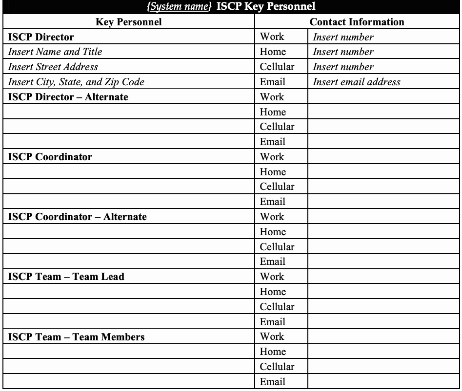
| {System name} ISCP 主要担当者 | |
| 主要担当者 | 連絡先情報 |
| ISCP ディレクター | 職場／電話番号を記入 |
| 氏名・役職を記入 | 自宅／電話番号を記入 |
| 住所を記入 | 携帯電話／番号を記入 |
| 市区町村、州、郵便番号を記入 | 電子メール／アドレスを記入 |
| ISCP ディレクター（代理） | 職場 |
| 自宅 | |
| 携帯電話 | |
| 電子メール | |
| ISCP コーディネーター | 職場 |
| 自宅 | |
| 携帯電話 | |
| 電子メール | |
| ISCP コーディネーター（代理） | 職場 |
| 自宅 | |
| 携帯電話 | |
| 電子メール | |
| ISCP チーム－チームリーダー | 職場 |
| 自宅 | |
| 携帯電話 | |
| 電子メール | |
| ISCP チーム－チームメンバー | 職場 |
| 自宅 | |
| 携帯電話 | |
| 電子メール |
APPENDIX B VENDOR CONTACT LIST
付録 B ベンダー連絡先一覧
Contact information for all key maintenance or support vendors should be included in this appendix. Contact information, such as emergency phone numbers, contact names, contract numbers, and contractual response and onsite times should be included.
主要な保守ベンダーまたはサポートベンダーの連絡先情報をこの付録に記載すること。緊急電話番号、連絡担当者名、契約番号、契約上の応答時間および現地到着時間などを含めること。
未レビュー訳APPENDIX C DETAILED RECOVERY PROCEDURES
付録 C 詳細な復旧手順
This appendix includes the detailed recovery procedures for the system, which may include items such as: (cid:131) Keystroke-level recovery steps; (cid:131) System installation instructions from tape, CD, or other media; (cid:131) Required configuration settings or changes; (cid:131) Recovery of data from tape and audit logs; and (cid:131) Other system recovery procedures, as appropriate.
この付録には、システムの詳細な復旧手順を記載する。たとえば、次の内容が含まれる。 • キー操作レベルの復旧手順。 • テープ、CD、その他の媒体からのシステムインストール手順。 • 必要な構成設定または変更。 • テープおよび監査ログからのデータ復旧。 • 必要に応じたその他のシステム復旧手順。
未レビュー訳If the system relies totally on another group or system for its recovery and reconstitution (such as a mainframe system), information provided should include contact information and locations of detailed recovery and reconstitution procedures for that supporting system.
システムの復旧および再構成を全面的に別のグループまたはシステム（メインフレームシステムなど）に依存する場合は、その支援システムの連絡先と、詳細な復旧・再構成手順の所在を記載すること。
APPENDIX D ALTERNATE PROCESSING PROCEDURES
付録 D 代替処理手順
This section should identify any alternate manual or technical processing procedures available that allow the business unit to continue some processing of information that would normally be done by the affected system. Examples of alternate processes include manual forms processing, input into workstations to store data until it can be uploaded and processed, or queuing of data input.
影響を受けたシステムが通常処理する情報について、業務部門が一部の処理を継続できる代替の手作業または技術的処理手順を記載すること。代替処理の例として、帳票の手作業処理、後でアップロードして処理できるようワークステーションにデータを入力して保存する方法、データ入力をキューに蓄積する方法がある。
APPENDIX E SYSTEM VALIDATION TEST PLAN
付録 E システム妥当性確認テスト計画
This appendix includes system acceptance procedures that are performed after the system has been recovered and prior to putting the system into full operation and returned to users. The system validation test plan may include the regression or functionality testing conducted prior to implementation of a system upgrade or change.
この付録には、システム復旧後、全面運用に移行してユーザーに返却する前に実施するシステム受入れ手順を記載する。システム妥当性確認テスト計画には、システムのアップグレードまたは変更の実施前に行う回帰テストまたは機能テストを含めることができる。
未レビュー訳An example of a system validation test plan:
システム妥当性確認テスト計画の例：
Once the system has been recovered, the following steps will be performed to validate system data and functionality:
システムの復旧後、システムのデータと機能を検証するため、次の手順を実施する。
| Procedure | Expected Results | Actual Results | Successful? | Performed |
| by | ||||
| At the Command Prompt, type in sysname | System Log-in Screen appears | |||
| Log-in as user testuser, using password testpass | Initial Screen with Main Menu shows | |||
| From Menu - select 5- Generate Report | Report Generation Screen shows | |||
| - Select Current Date Report - Select Weekly - Select To Screen | Report is generated on screen with last successful transaction included | |||
| - Select Close | Report Generation Screen Shows | |||
| - Select Return to | Initial Screen with |
原本PDFの抜粋画像
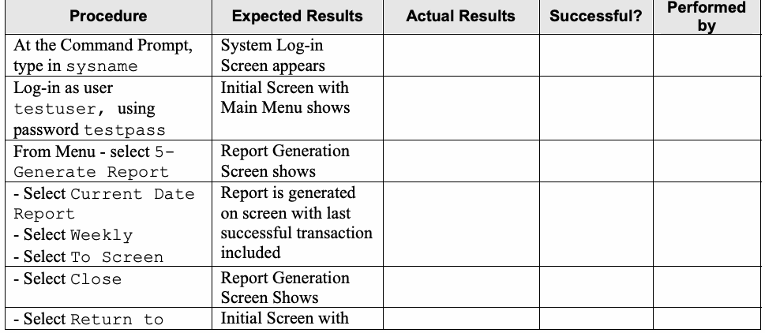
| 手順 | 期待される結果 | 実際の結果 | 成功したか | 実施 |
| 者 | ||||
| コマンドプロンプトで sysname と入力する | システムログイン画面が表示される | |||
| ユーザー testuser、パスワード testpass でログインする | 初期画面にメインメニューが表示される | |||
| メニューから「5 - レポート生成」を選択する | レポート生成画面が表示される | |||
| 「現在日付レポート」「週次」「画面に出力」の順に選択する | 画面にレポートが生成され、最後に成功したトランザクションが含まれる | |||
| 「閉じる」を選択する | レポート生成画面が表示される | |||
| 「戻る」を選択して | 初期画面に |
| Procedure | Expected Results | Actual Results | Successful? | Performed |
| by | ||||
| Main Menu | Main Menu shows | |||
| - Select Log-Off | Log-in Screen appears |
原本PDFの抜粋画像
| 手順 | 期待される結果 | 実際の結果 | 成功したか | 実施 |
| 者 | ||||
| メインメニュー | メインメニューが表示される | |||
| 「ログオフ」を選択する | ログイン画面が表示される |
APPENDIX F ALTERNATE STORAGE, SITE AND TELECOMMUNICATIONS
付録 F 代替データ保管、サイトおよび通信
This appendix provides information for alternate storage, alternate processing site, and alternate telecommunications for the system. Alternate Storage, Site, and Telecommunications information is required for moderate-impact systems, per NIST SP 800-53, Rev.3. Refer to NIST SP 800-53 Rev. 3, for details on control specifics. Information that should be provided for each area includes:
この付録には、システムの代替データ保管、代替処理サイト、および代替通信に関する情報を記載する。NIST SP 800-53 Rev.3 によれば、中影響度システムでは、代替データ保管、サイト、および通信に関する情報が必要である。管理策の詳細は NIST SP 800-53 Rev.3 を参照すること。各領域について記載すべき情報には、次のものが含まれる。
Alternate Storage: (cid:131) City and state of alternate storage facility, and distance from primary facility; (cid:131) Whether the alternate storage facility is owned by the organization or is a third-party storage
代替データ保管： • 代替保管施設の所在都市・州、および主要施設からの距離。 • 代替保管施設が組織所有か、第三者の保管
未レビュー訳provider; (cid:131) Name and points of contact for the alternate storage facility; (cid:131) Delivery schedule and procedures for packaging media to go to alternate storage facility; (cid:131) Procedures for retrieving media from the alternate storage facility; (cid:131) Names and contact information for those persons authorized to retrieve media; (cid:131) Any potential accessibility problems to the alternate storage site in the event of a widespread disruption or disaster; (cid:131) Mitigation steps to access alternate storage site in the event of a widespread disruption or disaster; (cid:131) Types of data located at alternate storage site, including databases, application software, operating systems, and other critical information system software; and (cid:131) Other information as appropriate.
事業者の施設か。 • 代替保管施設の名称および連絡担当者。 • 媒体の配送スケジュールと、代替保管施設へ送る媒体の梱包手順。 • 代替保管施設から媒体を取り出す手順。 • 媒体の取り出しを許可された担当者の氏名と連絡先。 • 広域中断または災害時に代替保管サイトへアクセスできなくなる可能性。 • 広域中断または災害時に代替保管サイトへアクセスするための緩和策。 • データベース、アプリケーションソフトウェア、オペレーティングシステム、その他の重要な情報システムソフトウェアを含む、代替保管サイト上のデータの種類。 • 必要に応じたその他の情報。
未レビュー訳Alternate Processing Site: (cid:131) City and state of alternate processing site, and distance from primary facility; (cid:131) Whether the alternate processing site is owned by the organization or is a third-party site
代替処理サイト： • 代替処理サイトの所在都市・州、および主要施設からの距離。 • 代替処理サイトが組織所有か、第三者のサイト
未レビュー訳provider; (cid:131) Name and points of contact for the alternate processing site; (cid:131) Procedures for accessing and using the alternate processing site, and access security features of alternate processing site; (cid:131) Names and contact information for those persons authorized to go to alternate processing site; (cid:131) Type of alternate processing site, and equipment available at site; (cid:131) Any potential accessibility problems at the alternate processing site in the event of a widespread disruption or disaster; (cid:131) Mitigation steps to access alternate processing site in the event of a widespread disruption or disaster;
か。 • 代替処理サイトの名称および連絡担当者。 • 代替処理サイトへのアクセスと利用手順、および同サイトのアクセス制御機能。 • 代替処理サイトへ行くことを許可された担当者の氏名と連絡先。 • 代替処理サイトの種類と、サイトで利用できる機器。 • 広域中断または災害時に代替処理サイトへアクセスできなくなる可能性。 • 広域中断または災害時に代替処理サイトへアクセスするための緩和策。
未レビュー訳(cid:131) SLAs or other agreements of use of alternate processing site, available office/support space, setup times, etc.; and (cid:131) Other information as appropriate.
• 代替処理サイトに関する SLA その他の契約、利用可能なオフィス／サポートスペース、設置時間など。 • 必要に応じたその他の情報。
未レビュー訳Alternate Telecommunications: (cid:131) Name and contact information of alternate telecommunications vendors; (cid:131) Contracted capacity of alternate telecommunications; (cid:131) SLAs or other agreements for implementation of alternate telecommunications capacity; (cid:131) Names and contact information for those persons authorized to implement or use alternate
代替通信： • 代替通信ベンダーの名称および連絡先。 • 契約上の代替通信容量。 • 代替通信容量を導入するための SLA その他の契約。 • 代替通信容量の導入または利用を許可された担当者の氏名および連絡先。
未レビュー訳telecommunications capacity; and (cid:131) Other information as appropriate.
• 必要に応じたその他の情報。
未レビュー訳APPENDIX G DIAGRAMS (SYSTEM AND INPUT/OUTPUT)
付録 G 図（システムおよび入出力）
未レビュー訳NOTE: Information for this section should be available from the system’s System Security Plan (SSP) and can be copied from the SSP, or reference the applicable section in the SSP and attach the latest version of the SSP to this contingency plan. Include any system architecture, input/output, or other technical or logical diagrams that may be useful in recovering the system. Diagrams may also identify information about interconnection with other systems.
注：この節の情報は、システムセキュリティ計画（SSP）から入手できるはずだ。SSP から転記するか、該当する SSP の節を参照し、最新版の SSP を本緊急時対応計画に添付すること。システムの復旧に役立つアーキテクチャ、入出力、その他の技術図または論理図を含めること。図には、他のシステムとの相互接続に関する情報を示すこともできる。
未レビュー訳APPENDIX H HARDWARE AND SOFTWARE INVENTORY
付録 H ハードウェアおよびソフトウェアの一覧
Provide the hardware and software inventory for the system. Inventory information should include type of server or hardware on which the system runs, processors and memory requirements, storage requirements, and any other pertinent details. The software inventory should identify the operating system (including service pack or version levels, and any other applications necessary to operate the system, such as database software).
システムのハードウェアおよびソフトウェアの一覧を記載すること。ハードウェア一覧には、システムが稼働するサーバーまたはハードウェアの種類、プロセッサおよびメモリの要件、ストレージ要件、その他関連する詳細を含めること。ソフトウェア一覧には、オペレーティングシステム（サービスパックまたはバージョンを含む）と、システム運用に必要なデータベースソフトウェアなどのアプリケーションを記載すること。
未レビュー訳APPENDIX I INTERCONNECTIONS TABLE
付録 I 相互接続一覧
NOTE: Information for this section should be available from the system’s System Security Plan (SSP) and can be copied from the SSP, or reference the applicable section in the SSP and attach the latest version of the SSP to this contingency plan. This appendix includes information on other systems that directly interconnect or exchange information with the system. Interconnection information should include the type of connection, information transferred, and contact person for that system.
注：この節の情報は、システムセキュリティ計画（SSP）から入手できるはずだ。SSP から転記するか、該当する SSP の節を参照し、最新版の SSP を本緊急時対応計画に添付すること。この付録には、システムと直接相互接続する、または情報を交換する他のシステムの情報を記載する。相互接続情報には、接続の種類、転送する情報、および相手システムの連絡担当者を含めること。
If the system does not have any direct interconnections, then this appendix may be removed, or the following statement may be used:
システムに直接の相互接続がない場合、この付録を削除するか、次の文を使用できる。
{System name} does not directly interconnect with any other systems.
{System name} は、他のシステムと直接相互接続していない。
未レビュー訳APPENDIX J TEST AND MAINTENANCE SCHEDULE
付録 J テストおよび保守のスケジュール
All ISCPs should be reviewed and tested at the organization defined frequency (e.g. yearly) or whenever there is a significant change to the system. Provide information and a schedule for the testing of the system. The functional test should include all ISCP points of contact and be facilitated by an outside or impartial observer. A formal test plan is developed prior to the functional test, and test procedures are developed to include key sections of the ISCP, including the following:
すべての ISCP は、組織が定めた頻度（例：年1回）で、またはシステムに重大な変更があった場合に、レビューおよびテストする必要がある。システムテストに関する情報とスケジュールを記載すること。機能テストにはすべての ISCP 連絡担当者が参加し、外部の観察者または中立的な観察者が進行すること。機能テスト前に正式なテスト計画を作成し、ISCP の主要な節を含むテスト手順を用意する。
未レビュー訳(cid:131) Notification procedures; (cid:131) System recovery on an alternate platform from backup media; (cid:131) Internal and external connectivity; and (cid:131) Reconstitution procedures.
• 通知手順。 • バックアップ媒体から代替プラットフォームへのシステム復旧。 • 内部および外部との接続性。 • 再構成手順。
未レビュー訳Results of the test are documented in an After Action Report, and Lessons Learned are developed for updating information in the ISCP.
テスト結果を事後報告書に記録し、ISCP の情報を更新するための教訓をまとめる。
Examples of functional tests that may be performed include: (cid:131) Full notification and response of key personnel to recovery location; (cid:131) Recovery of a server or database from backup media; (cid:131) Setup and processing from a server at an alternate location.
実施できる機能テストの例： • 主要担当者全員への通知と、復旧場所への応答。 • バックアップ媒体からのサーバーまたはデータベースの復旧。 • 代替場所におけるサーバーのセットアップと処理。
未レビュー訳The following is a sample of a yearly test and maintenance schedule for a moderate-impact system:
次に、中影響度システム向けの年次テストおよび保守スケジュールの例を示す。
未レビュー訳| Step | Date Due by | Responsible Party | Date Scheduled | Date Held |
| Identify functional test facilitator. | March 1 | ISCP Coordinator | ||
| Determine type and scope of functional test. | March 15 | ISCP Coordinator, Test Facilitator | ||
| Develop functional test plan. | April 1 | Test Facilitator | ||
| Invite participants. | May 10 | Test Facilitator | ||
| Conduct functional test. | May 31 | Test Facilitator, ISCP Coordinator, POCs | ||
| Finalize after action report and lessons learned. | June 10 | ISCP Coordinator | ||
| Update ISCP based on lessons learned. | June 30 | ISCP Coordinator | ||
| Approve and distribute updated version of ISCP. | July 15 | ISCP Director, ISCP Coordinator |
原本PDFの抜粋画像
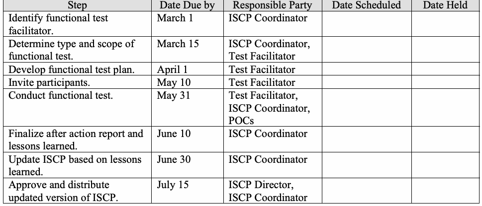
| 手順 | 期限 | 担当者 | 予定日 | 実施日 |
| 機能テストの進行役を選任する。 | 3月1日 | ISCP コーディネーター | ||
| 機能テストの種類と範囲を決定する。 | 3月15日 | ISCP コーディネーター、テスト進行役 | ||
| 機能テスト計画を作成する。 | 4月1日 | テスト進行役 | ||
| 参加者を招待する。 | 5月10日 | テスト進行役 | ||
| 機能テストを実施する。 | 5月31日 | テスト進行役、ISCP コーディネーター、POC | ||
| 事後報告書を確定し、教訓をまとめる。 | 6月10日 | ISCP コーディネーター | ||
| 教訓に基づいて ISCP を更新する。 | 6月30日 | ISCP コーディネーター | ||
| ISCP の更新版を承認して配布する。 | 7月15日 | ISCP ディレクター、ISCP コーディネーター |
APPENDIX K ASSOCIATED PLANS AND PROCEDURES
付録 K 関連計画および手順
NOTE: Information for this section should be available from the system’s System Security Plan (SSP) and can be copied from the SSP, or reference the applicable section in the SSP and attach the latest version of the SSP to this contingency plan. ISCPs for other systems that either interconnect or support the system should be identified in this appendix. The most current version of the ISCP, location of ISCP, and primary point of contact (such as the ISCP Coordinator) should be noted.
注：この節の情報は、システムセキュリティ計画（SSP）から入手できるはずだ。SSP から転記するか、該当する SSP の節を参照し、最新版の SSP を本緊急時対応計画に添付すること。システムと相互接続している、またはシステムを支援する他のシステムの ISCP をこの付録に記載すること。各 ISCP の最新版、保管場所、および主要連絡担当者（ISCP コーディネーターなど）を明記すること。
APPENDIX L BUSINESS IMPACT ANALYSIS
付録 L 業務影響分析
The Business Impact Analysis results should be included in this appendix.
業務影響分析の結果をこの付録に含めること。
APPENDIX M DOCUMENT CHANGE PAGE
付録 M 文書変更履歴
Modifications made to this plan since the last printing are as follows:
前回の印刷以降に本計画に加えた変更は次のとおりである。
| 変更履歴 | |||
| ページ番号 | 変更内容 | 変更日 | 署名 |
A.3 Sample Template for High-Impact Systems
A.3 高影響度システム向けテンプレート例
未レビュー訳[System Name]
[システム名]
未レビュー訳Security Categorization: High
セキュリティ分類：高
未レビュー訳[Organization Name]
[組織名]
未レビュー訳Information System Contingency Plan (ISCP)
情報システム緊急時対応計画（ISCP）
未レビュー訳Version [#]
バージョン [番号]
未レビュー訳[Date]
[日付]
未レビュー訳Prepared by
作成者
未レビュー訳[Organization Name] [Street Address] [City, State, and Zip Code]
[組織名] [番地・住所] [市区町村、州、郵便番号]
未レビュー訳TABLE OF CONTENTS
目次
Plan Approval…………………………………………………….………..….……….……A.3-3
計画の承認………………………………………………A.3-3
未レビュー訳1. Introduction ………………………………………………….……..……….…….……..A.3-4
1. はじめに…………………………………………………A.3-4
未レビュー訳1.1 Background………..………………………………………….………………..A.3-4 1.2 Scope……..………..…………………………..…….……….……….………..A.3-4 1.3 Assumptions..…….………………………..….……………….……….……...A.3-4
1.1 背景……………………………………………………A.3-4 1.2 適用範囲…………………………………………A.3-4 1.3 前提条件………………………………………A.3-4
未レビュー訳2. Concept of Operations ………………………….……..…………………………..……A.3-5
2. 運用概念…………………………………………………A.3-5
未レビュー訳2.1 System Description………………....……………………………………..…..A.3-5 2.2 Overview of Three Phases..………………………………………………….A.3-5 2.3 Roles and Responsibilities…….…......……………………………………....A.3-6
2.1 システムの説明……………………………………A.3-5 2.2 3段階の概要………………………………A.3-5 2.3 役割と責任……………………………………A.3-6
未レビュー訳3. Activation and Notification………………....………………………..………….……..A.3-6
3. 発動と通知………………………………………………A.3-6
3.1 Activation Criteria and Procedure ...………………………..………………..A.3-6 3.2 Notification…………………...………………………………..………………..A.3-6 3.3 Outage Assessment…………....…......……………………..………………..A.3-7
3.1 発動基準と手順…………………………………A.3-6 3.2 通知……………………………………………A.3-6 3.3 停止状況の評価……………………………A.3-7
未レビュー訳4. Recovery……………………….……………....…………………………………………..A.3-7
4. 復旧………………………………………………………A.3-7
未レビュー訳4.1 Sequence of Recovery Activities ....……………………………..…………..A.3-7 4.2 Recovery Procedures ……...………………………………………..………..A.3-8 4.3 Recovery Escalation Notices/Awareness..…......……………………..……..A.3-8
4.1 復旧活動の順序…………………………………A.3-7 4.2 復旧手順……………………………………A.3-8 4.3 復旧時のエスカレーション通知／周知………A.3-8
未レビュー訳5. Reconstitution..……………….……………....………………….………………..………A.3-8
5. 再構成……………………………………………………A.3-8
未レビュー訳5.1 Concurrent Processing …………....………………….…………………..…...A.3-8 5.2 Validation Data Testing….....………………………….………………….…...A.3-8 5.3 Validation Functionality Testing.…......……………….………………….…...A.3-9 5.4 Recovery Declaration…………........………………….………………….…...A.3-9 5.5 Notification (users)…. ……...………………………….………………….……A.3-9 5.6 Cleanup ...……………………...…......……………….………………….…….A.3-9 5.7 Offsite Data Storage……………. ....………………….………………….…...A.3-9 5.8 Data Backup………………...………………………….…………………..…...A.3-9 5.9 Event Documentation…………..…......……………….………………….…...A.3-10 5.10 Deactivation……………………..…......……………….………………….…...A.3-10
5.1 並行処理………………………………………A.3-8 5.2 データの妥当性確認テスト……………A.3-8 5.3 機能の妥当性確認テスト………………A.3-9 5.4 復旧の宣言…………………………………A.3-9 5.5 ユーザーへの通知…………………………A.3-9 5.6 後片付け………………………………………A.3-9 5.7 オフサイトデータ保管…………………A.3-9 5.8 データのバックアップ…………………A.3-9 5.9 事象の記録……………………………………A.3-10 5.10 計画の解除…………………………………A.3-10
未レビュー訳APPENDICES
付録
未レビュー訳Plan Approval Provide a statement in accordance with the agency’s contingency planning policy to affirm that the ISCP is complete and has been tested sufficiently. The statement should also affirm that the designated authority is responsible for continued maintenance and testing of the ISCP. This statement should be approved and signed by the system designated authority. Space should be provided for the designated authority to sign, along with any other applicable approving signatures. A sample language is provided below:
計画の承認 機関の緊急時対応計画方針に沿って、ISCP が完成し、十分にテストされていることを確認する声明を記載すること。また、指定権限者が ISCP の継続的な維持およびテストに責任を負うことも確認すること。この声明は、システムの指定権限者が承認し、署名する必要がある。指定権限者およびその他該当する承認者が署名できる欄を設けること。以下に文例を示す。
未レビュー訳As the designated authority for {system name}, I hereby certify that the information system contingency plan (ISCP) is complete, and that the information contained in this ISCP provides an accurate representation of the application, its hardware, software, and telecommunication components. I further certify that this document identifies the criticality of the system as it relates to the mission of the {organization name}, and that the recovery strategies identified will provide the ability to recover the system functionality in the most expedient and cost-beneficial method in keeping with its level of criticality.
{system name} の指定権限者として、情報システム緊急時対応計画（ISCP）が完成しており、本 ISCP に含まれる情報がアプリケーション、そのハードウェア、ソフトウェアおよび通信コンポーネントを正確に表していることをここに証明する。さらに、本書が {organization name} のミッションに照らしたシステムの重要度を特定しており、特定された復旧戦略によって、その重要度に応じて最も迅速かつ費用対効果の高い方法でシステム機能を復旧できることを証明する。
未レビュー訳I further attest that this ISCP for {system name} will be tested at least annually. This plan was last tested on {insert exercise date}; the test, training, and exercise (TT&E) material associated with this test can be found {TT&E results appendix or location}. This document will be modified as changes occur and will remain under version control, in accordance with {organization name}’s contingency planning policy.
さらに、{system name} の本 ISCP を少なくとも年1回テストすることを証明する。本計画の最終テスト日は {insert exercise date} である。このテストに関連するテスト・訓練・演習（TT&E）資料は、{TT&E results appendix or location} にある。{organization name} の緊急時対応計画方針に従い、変更が生じた際に本書を改訂し、バージョン管理を継続する。
{System Owner Name}
{System Owner Name}
未レビュー訳Date
日付
未レビュー訳{System Owner Title}
{System Owner Title}
未レビュー訳1. Introduction
1. はじめに
Information systems are vital to {Organization’s} mission/business processes; therefore, it is critical that services provided by {system name} are able to operate effectively without excessive interruption. This Information System Contingency Plan (ISCP) establishes comprehensive procedures to recover {system name} quickly and effectively following a service disruption.
情報システムは、{Organization’s} のミッション／業務プロセスに不可欠である。したがって、{system name} が提供するサービスを過度な中断なく効果的に運用できることが重要である。この情報システム緊急時対応計画（ISCP）は、サービス中断後に {system name} を迅速かつ効果的に復旧するための包括的な手順を定める。
未レビュー訳1.1 Background
1.1 背景
This {system name} ISCP establishes procedures to recover {system name} following a disruption. The following recovery plan objectives have been established:
▪ Maximize the effectiveness of contingency operations through an established plan that consists of the following phases:
o Activation and Notification phase to activate the plan and determine the extent of damage;
o Recovery phase to restore {system name} operations; and
o Reconstitution phase to ensure that {system name} is validated through testing and that normal operations are resumed.
▪ Identify the activities, resources, and procedures to carry out {system name} processing requirements during prolonged interruptions to normal operations.
▪ Assign responsibilities to designated {organization name} personnel and provide guidance for recovering {system name} during prolonged periods of interruption to normal operations.
▪ Ensure coordination with other personnel responsible for {organization name} contingency planning strategies. Ensure coordination with external points of contact and vendors associated with {system name} and execution of this plan.
この {system name} ISCP は、中断後に {system name} を復旧する手順を定める。次の復旧計画の目標を設定している。
▪ 次の段階からなる、あらかじめ定めた計画を通じて、緊急時運用の有効性を最大化する。
o 発動・通知段階：計画を発動し、損害の範囲を判断する。
o 復旧段階：{system name} の運用を復旧する。
o 再構成段階：テストを通じて {system name} の妥当性を確認し、通常運用が再開されることを確実にする。
▪ 通常運用の中断が長期化する間、{system name} の処理要件を遂行するための活動、資源、手順を特定する。
▪ 指定された {organization name} の要員に責任を割り当て、通常運用の中断が長期化する間に {system name} を復旧するための指針を示す。
▪ {organization name} の緊急時対応計画戦略を担当する他の要員との調整を確実にする。{system name} および本計画の実行に関係する外部の連絡窓口およびベンダーとの調整を確実にする。
1.2 Scope
1.2 適用範囲
This ISCP has been developed for {system name}, which is classified as a high-impact system, in accordance with Federal Information Processing Standards (FIPS) 199 – Standards for Security Categorization of Federal Information and Information Systems. Procedures in this ISCP are for high-impact systems and designed to recover {system name} within {RTO hours}. This plan does not address replacement or purchase of new equipment, short-term disruptions lasting less than {RTO hours}, or loss of data at the onsite facility or at the user-desktop levels.
この ISCP は、Federal Information Processing Standards（FIPS）199「連邦情報システムおよび情報のセキュリティ分類」に従い、高影響度システムに分類された {system name} を対象として策定されている。本 ISCP の手順は高影響度システム向けであり、{system name} を {RTO hours} 以内に復旧するよう設計されている。本計画は、機器の交換または新規購入、{RTO hours} 未満の短時間の中断、ならびにオンサイト施設またはユーザーデスクトップレベルでのデータ喪失を対象としない。
未レビュー訳1.3 Assumptions
1.3 前提条件
The following assumptions were used when developing this ISCP:
▪ {System name} has been established as a high-impact system, in accordance with FIPS 199.
▪ Alternate processing sites and offsite storage are required and have been established for this system.
▪ Current backups of the system software and data are intact and available at the offsite storage facility in {City, State}.
▪ Alternate facilities have been established at {City, State} and are available if needed for relocation of {system name}.
この ISCP の策定では、次の前提を置いた。
▪ {System name} は、FIPS 199 に従い、高影響度システムとして定められている。
▪ このシステムには代替処理サイトとオフサイト保管が必要であり、すでに確保されている。
▪ システムソフトウェアとデータの最新のバックアップは損なわれておらず、{City, State} のオフサイト保管施設で利用できる。
▪ 代替施設が {City, State} に確保されており、{system name} の移転に必要であれば利用できる。
(cid:131) The {system name} is inoperable at the {organization name} and cannot be recovered within {RTO hours}. (cid:131) Key {system name} personnel have been identified and trained in their emergency response and recovery roles; they are available to activate the {system name} Contingency Plan. (cid:131) Additional assumptions as appropriate.
• {system name} は {organization name} で運用不能となっており、{RTO hours} 以内に復旧できない。 • 主要な {system name} 担当者が特定され、緊急対応および復旧の役割について訓練を受けており、{system name} 緊急時対応計画を発動できる状態にある。 • 必要に応じて追加の前提条件を記載する。
未レビュー訳The {system name} ISCP does not apply to the following situations:
▪ Overall recovery and continuity of mission/business operations. The Business Continuity Plan (BCP) and Continuity of Operations Plan (COOP) address continuity of business operations.
▪ Emergency evacuation of personnel. The Occupant Emergency Plan (OEP) addresses employee evacuation.
▪ Any additional constraints and associated plans should be added to this list.
{system name} ISCP は、次の状況には適用されない。
▪ ミッション／業務運用全体の復旧および継続。事業継続計画（BCP）および運用継続計画（COOP）が業務運用の継続を扱う。
▪ 要員の緊急避難。施設緊急時対応計画（OEP）が従業員の避難を扱う。
▪ その他の制約および関連する計画があれば、この一覧に追加すること。
2. Concept of Operations
2. 運用概念
The Concept of Operations section provides details about {system name}, an overview of the three phases of the ISCP (Activation and Notification, Recovery, and Reconstitution), and a description of roles and responsibilities of {Organization’s} personnel during a contingency activation.
「運用概念」では、{system name} の詳細、ISCP の3段階（発動・通知、復旧、再構成）の概要、および緊急時に計画を発動した際の {Organization’s} 担当者の役割と責任について説明する。
2.1 System Description
2.1 システムの説明
NOTE: Information for this section should be available from the system’s System Security Plan (SSP) and can be copied from the SSP, or reference the applicable section in the SSP and attach the latest version of the SSP to this contingency plan. Provide a general description of system architecture and functionality
注：この節の情報は、システムセキュリティ計画（SSP）から入手できるはずだ。SSP から転記するか、該当する SSP の節を参照し、最新版の SSP を本緊急時対応計画に添付すること。システムのアーキテクチャと機能を概説すること。
未レビュー訳Indicate the operating environment, physical location, general location of users, and partnerships with external organizations/systems. Include information regarding any other technical considerations that are important for recovery purposes, such as backup procedures.
運用環境、物理的な設置場所、ユーザーのおおよその所在地、外部組織／システムとの連携を示すこと。バックアップ手順など、復旧上重要なその他の技術的事項も記載すること。
2.2 Overview of Three Phases
2.2 3段階の概要
This ISCP has been developed to recover the {system name} using a three-phased approach. This approach ensures that system recovery efforts are performed in a methodical sequence to maximize the effectiveness of the recovery effort and minimize system outage time due to errors and omissions.
この ISCP は、3段階のアプローチを用いて {system name} を復旧するために策定されている。このアプローチにより、システムの復旧を体系的な順序で実施し、その有効性を最大化するとともに、誤りや漏れによるシステム停止時間を最小限に抑える。
未レビュー訳The three system recovery phases are:
システム復旧の3段階は次のとおりである。
Activation and Notification Phase – Activation of the ISCP occurs after a disruption or outage that may reasonably extend beyond the RTO established for a system. The outage event may result in severe damage to the facility that houses the system, severe damage or loss of equipment, or other damage that typically results in long-term loss.
発動・通知段階 — ISCP の発動は、システムに定められた RTO を超えて長引くと合理的に見込まれる中断または停止の後に行われる。この停止事象により、システムを収容する施設に深刻な損害が生じる、機器が深刻な損害を受けるか失われる、あるいは通常は長期的な損失につながるその他の損害が生じる可能性がある。
Once the ISCP is activated, system owners and users are notified of a possible long-term outage, and a thorough outage assessment is performed for the system. Information from the outage assessment is presented to system owners and may be used to modify recovery procedures specific to the cause of the outage.
ISCP の発動後、長期停止の可能性についてシステム所有者とユーザーに通知し、システムの停止状況を詳しく評価する。評価結果をシステム所有者に提示し、停止原因に応じて復旧手順を変更する際に利用できる。
未レビュー訳Recovery Phase – The Recovery phase details the activities and procedures for recovery of the affected system. Activities and procedures are written at a level that an appropriately skilled technician can recover the system without intimate system knowledge. This phase includes notification and awareness escalation procedures for communication of recovery status to system owners and users.
復旧段階 — 影響を受けたシステムを復旧するための活動と手順を定める。適切な技能を持つ技術者が、システムの詳細な知識がなくても復旧できる水準で記述する。また、復旧状況をシステム所有者とユーザーに伝えるための通知および状況周知の段階的な手順も含む。
未レビュー訳Reconstitution – The Reconstitution phase defines the actions taken to test and validate system capability and functionality at the original or new permanent location. This phase consists of two major activities: validating successful reconstitution and deactivation of the plan.
再構成 — 再構成段階では、元の恒久的な設置場所または新たな恒久的な設置場所で、システムの能力と機能をテストし、妥当性を確認するための措置を定める。この段階は、再構成の成功確認と計画の解除という2つの主要な活動で構成される。
During validation, the system is tested and validated as operational prior to returning operation to its normal state. Validation procedures may include functionality or regression testing, concurrent processing, and/or data validation. The system is declared recovered and operational by system owners upon successful completion of validation testing.
妥当性確認では、通常の状態に戻る前にシステムをテストし、運用可能であることを確認する。確認手順には、機能テストまたは回帰テスト、並行処理、データ検証などを含めることができる。検証テストが正常に完了した後、システム所有者がシステムの復旧と運用再開を宣言する。
未レビュー訳Deactivation includes activities to notify users of system operational status. This phase also addresses recovery effort documentation, activity log finalization, incorporation of lessons learned into plan updates, and readying resources for any future events.
解除には、システムの運用状況をユーザーに通知する活動を含む。また、復旧作業の記録、活動ログの確定、教訓の計画への反映、および将来の事象に備えた資源の準備も扱う。
2.3 Roles and Responsibilities
2.3 役割と責任
The ISCP establishes several roles for {system name} recovery and reconstitution support. Persons or teams assigned ISCP roles have been trained to respond to a contingency event affecting {system name}.
ISCP では、{system name} の復旧および再構成を支援する複数の役割を定める。ISCP の役割を割り当てられた個人またはチームは、{system name} に影響する緊急事象への対応訓練を受けている。
Describe each team and role responsible for executing or supporting system recovery and reconstitution. Include responsibilities for each team/role, leadership roles, and coordination with other recovery and reconstitution teams, as applicable. At a minimum, a role should be established for a system owner or business unit point of contact, a recovery coordinator, and a technical recovery point of contact.
システムの復旧または再構成を実行もしくは支援する各チームと役割を記述すること。該当する場合は、各チーム／役割の責任、リーダーの役割、および他の復旧・再構成チームとの調整を含めること。最低限、システム所有者または業務部門の連絡担当者、復旧コーディネーター、技術復旧連絡担当者の役割を定めるべきである。
Leadership roles should include an ISCP Director, who has overall management responsibility for the plan, and an ISCP Coordinator, who is responsible to oversee recovery and reconstitution progress, initiate any needed escalations or awareness communications, and establish coordination with other recovery and reconstitution teams as appropriate.
リーダーの役割には、計画全体の管理責任を負う ISCP ディレクターと、復旧および再構成の進捗を監督し、必要なエスカレーションや状況周知を開始し、必要に応じて他の復旧・再構成チームとの調整を確立する責任を負う ISCP コーディネーターを含めるべきである。
3. Activation and Notification
3. 発動と通知
The Activation and Notification Phase defines initial actions taken once a {system name} disruption has been detected or appears to be imminent. This phase includes activities to notify recovery personnel, conduct an outage assessment, and activate the ISCP. At the completion of the Activation and Notification Phase, {system name} ISCP staff will be prepared to perform recovery measures.
「発動と通知」段階では、{system name} の中断を検知した場合、または差し迫っていると見られる場合に最初に行う措置を定める。この段階には、復旧要員への通知、停止状況の評価、ISCP の発動が含まれる。段階の終了時には、{system name} の ISCP 要員が復旧措置を実施できる状態になる。
3.1 Activation Criteria and Procedure
3.1 発動基準と手順
The {system name} ISCP may be activated if one or more of the following criteria are met:
次の基準のいずれか1つ以上を満たす場合、{system name} ISCP を発動できる。
1.The type of outage indicates {system name} will be down for more than {RTO hours};
1.停止の種類から、{system name} が {RTO hours} を超えて停止すると見込まれる。
未レビュー訳2.The facility housing {system name} is damaged and may not be available within {RTO hours}; and
2.{system name} を収容する施設が損傷し、{RTO hours} 以内に利用可能にならない可能性がある。
未レビュー訳3.Other criteria, as appropriate.
3.その他、必要に応じた基準。
The following persons or roles may activate the ISCP if one or more of these criteria are met:
これらの基準のいずれか1つ以上を満たす場合、次の個人または役割が ISCP を発動できる。
Establish one or more roles that may activate the plan based on activation criteria. Authorized persons may include the system or business owner, or the operations point of contact (POC) for system support.
発動基準に基づいて計画を発動できる役割を1つ以上定めること。権限を付与する対象には、システム所有者または業務所有者、あるいはシステム支援の運用連絡担当者（POC）を含めることができる。
未レビュー訳3.2 Notification
3.2 通知
The first step upon activation of the {system name} ISCP is notification of appropriate business and system support personnel. Contact information for appropriate POCs is included in {Contact List Appendix name}.
{system name} ISCP の発動後、最初に適切な業務担当者およびシステム支援要員へ通知する。適切なPOCの連絡先は、{Contact List Appendix name} に記載する。
For {system name}, the following method and procedure for notifications are used:
{system name} では、次の通知方法および手順を使用する。
Describe established notification procedures. Notification procedures should include who makes the initial notifications, the sequence in which personnel are notified (e.g., system owner, technical POC, ISCP Coordinator, business unit or user unit POC, and recovery team POC), and the method of notification (e.g., email blast, call tree, automated notification system, etc.).
確立済みの通知手順を記述すること。通知手順には、最初に通知する担当者、通知する順序（例：システム所有者、技術連絡担当者、ISCP コーディネーター、業務部門またはユーザー部門の連絡担当者、復旧チームの連絡担当者）、通知方法（例：一斉メール、電話連絡網、自動通知システム）を含めること。
未レビュー訳3.3 Outage Assessment
3.3 停止状況の評価
Following notification, a thorough outage assessment is necessary to determine the extent of the disruption, any damage, and expected recovery time. This outage assessment is conducted by {name of recovery team}. Assessment results are provided to the ISCP Coordinator to assist in the coordination of the recovery of {system name}.
通知後、中断の範囲、損害の有無、および復旧見込み時間を判断するため、停止状況を詳しく評価する必要がある。この評価は {name of recovery team} が実施する。評価結果は ISCP コーディネーターに提出し、{system name} の復旧調整に役立てる。
Outline detailed procedures to include how to determine the cause of the outage; identification of potential for additional disruption or damage; assessment of affected physical area(s); and determination of the physical infrastructure status, IS equipment functionality, and inventory. Procedures should include notation of items that will need to be replaced and estimated time to restore service to normal operations.
停止原因の特定、追加の中断または損害が発生する可能性の確認、影響を受けた物理的区域の評価、物理インフラの状態・情報システム機器の機能・在庫の確認を含む詳細な手順を示すこと。交換が必要な物品と、通常運用への復旧に要する推定時間も記録する手順を含めること。
未レビュー訳4. Recovery
4. 復旧
The Recovery Phase provides formal recovery operations that begin after the ISCP has been activated, outage assessments have been completed (if possible), personnel have been notified, and appropriate teams have been mobilized. Recovery Phase activities focus on implementing recovery strategies to restore system capabilities, repair damage, and resume operational capabilities at the original or an alternate location. At the completion of the Recovery Phase, {system name} will be functional and capable of performing the functions identified in Section 2.1 of this plan.
「復旧」段階では、ISCP の発動後、可能であれば停止状況の評価を終え、要員への通知を行い、適切なチームを招集した後に正式な復旧作業を開始する。この段階では、システム機能を回復し、損害を修復し、元の場所または代替場所で運用能力を再開するための復旧戦略を実施する。段階の終了時には、{system name} が機能し、本計画の2.1節に示す機能を実行できる状態になる。
未レビュー訳4.1 Sequence of Recovery Activities
4.1 復旧活動の順序
The following activities occur during recovery of {system name}:
{system name} の復旧中に、次の活動を行う。
Modify the following list as appropriate for the selected system recovery strategy:
選択したシステム復旧戦略に応じて、次の一覧を修正すること。
1.Identify recovery location (if not at original location);
1.復旧場所を特定する（元の場所で復旧しない場合）。
2.Identify required resources to perform recovery procedures;
2.復旧手順の実施に必要な資源を特定する。
未レビュー訳3.Retrieve backup and system installation media;
3.バックアップおよびシステムのインストール媒体を取り出す。
未レビュー訳4.Recover hardware and operating system (if required); and
4.ハードウェアおよびオペレーティングシステムを復旧する（必要な場合）。
5.Recover system from backup and system installation media.
5.バックアップおよびシステムのインストール媒体からシステムを復旧する。
未レビュー訳4.2 Recovery Procedures
4.2 復旧手順
The following procedures are provided for recovery of {system name} at the original or established alternate location. Recovery procedures are outlined per team and should be executed in the sequence presented to maintain an efficient recovery effort.
次の手順は、元の場所または確保済みの代替場所で {system name} を復旧する場合のものである。効率的に復旧作業を進めるため、チームごとに手順を示し、記載順に実施すること。
未レビュー訳Provide general procedures for the recovery of the system from backup media. Specific keystroke-level procedures may be provided in an appendix. If specific procedures are provided in an appendix, a reference to that appendix should be included in this section. Teams or persons responsible for each procedure should be identified.
バックアップ媒体からシステムを復旧するための一般的な手順を記述すること。具体的なキー操作レベルの手順は付録に記載できる。付録に記載する場合は、この節から参照すること。各手順の担当チームまたは担当者を明記すること。
4.3 Recovery Escalation Notices/Awareness
4.3 復旧時のエスカレーション通知／状況周知
Provide appropriate procedures for escalation notices during recovery efforts. Notifications during recovery include problem escalation to leadership and status awareness to system owners and users. Teams or persons responsible for each escalation/awareness procedure should be identified.
復旧作業中のエスカレーション通知に関する適切な手順を記述すること。復旧中の通知には、問題を管理層へエスカレーションする連絡と、システム所有者およびユーザーへの状況周知が含まれる。各エスカレーション／周知手順の担当チームまたは担当者を明記すること。
5. Reconstitution
5. 再構成
Reconstitution is the process by which recovery activities are completed and normal system operations are resumed. If the original facility is unrecoverable, the activities in this phase can also be applied to preparing a new permanent location to support system processing requirements. A determination must be made on whether the system has undergone significant change and will require reassessment and reauthorization. The phase consists of two major activities: validating successful reconstitution and deactivation of the plan.
再構成とは、復旧活動を完了し、システムの通常運用を再開するプロセスである。元の施設を復旧できない場合、この段階の活動を、システムの処理要件を支援する新たな恒久的設置場所の準備にも適用できる。システムに重大な変更が生じ、再評価と再承認が必要かどうかを判断しなければならない。この段階は、再構成の成功確認と計画の解除という2つの主要な活動で構成される。
5.1 Concurrent Processing
5.1 並行処理
High-impact systems are not required to have concurrent processing as part of the validation effort. If concurrent processing does occur for the system prior to making it operational, procedures should be inserted here. Procedures should include length of time for concurrent processing, processing information on both concurrent systems, and validating information on the new permanent system.
高影響度システムでは、妥当性確認の一環として並行処理を実施する必要はない。システムを運用可能にする前に並行処理を実施する場合は、その手順をここに記載すること。手順には、並行処理の期間、並行稼働する両方のシステムでの処理情報、および新しい恒久的システム上の情報を検証する方法を含めること。
For high-impact systems without concurrent processing, this section may either be removed or the following may be used:
並行処理を行わない高影響度システムでは、この節を削除するか、次の文を使用できる。
未レビュー訳In concurrent processing, a system operates at two separate locations concurrently until there is a level of assurance that the recovered system is operating correctly. {System name} does not have concurrent processing as part of validation. Once the system has been tested and validated, it will be placed into normal operations.
並行処理では、復旧したシステムが正しく動作するとの確証が得られるまで、2か所でシステムを同時に稼働させる。{System name} では、妥当性確認の一環として並行処理を行わない。システムのテストと妥当性確認が完了した後、通常運用に移行する。
5.2 Validation Data Testing
5.2 データの妥当性確認テスト
Validation data testing is the process of testing and validating recovered data to ensure that data files or databases have been recovered completely. The following procedures will be used to determine that the recovered data is complete and current to the last available backup:
データの妥当性確認テストとは、復旧したデータをテストし検証して、データファイルまたはデータベースが完全に復旧したことを確認するプロセスである。利用可能な最新のバックアップ時点まで、復旧データが完全かつ最新であることを確認するため、次の手順を使用する。
未レビュー訳Provide procedures for testing or validation of recovered data to ensure that data is correct and up to date. This section may be combined with the Functionality Testing section if procedures test both the functionality and data validity. Teams or persons responsible for each procedure should be identified.
復旧データが正確かつ最新であることを確認するためのテストまたは検証手順を記述すること。機能とデータの両方をテストする場合、この節を「機能テスト」と統合できる。各手順の担当チームまたは担当者を明記すること。
An example of a validation data test for a high-impact system would be to log into the system database and check the audit logs to determine that all transactions and updates are current. Detailed data test procedures may be provided in Appendix E, System Validation Test Plan.
高影響度システムのデータ妥当性確認テストの例として、システムのデータベースにログインし、監査ログを確認して、すべてのトランザクションと更新が最新であることを確かめる方法がある。詳細なデータテスト手順は付録 E「システム妥当性確認テスト計画」に記載できる。
未レビュー訳5.3 Validation Functionality Testing
5.3 機能の妥当性確認テスト
Validation functionality testing is the process of verifying that {system name} functionality has been tested, and the system is ready to return to normal operations.
機能の妥当性確認テストとは、{system name} の機能がテストされ、通常運用に戻る準備が整っていることを確認するプロセスである。
Provide system functionality testing and validation procedures to ensure that the system is operating correctly. This section may be combined with the Data Testing section if procedures test both the functionality and data validity. Teams or persons responsible for each procedure should be identified. An example of a functional test for a high-impact system may be logging into the system and running a series of operations as a test or real user to ensure that all parts of the system are operating correctly. Detailed functionality test procedures may be provided in Appendix E, System Validation Test Plan.
システムが正しく動作していることを確認するため、システム機能のテストおよび妥当性確認の手順を記述すること。機能とデータの両方をテストする場合、この節を「データテスト」と統合できる。各手順の担当チームまたは担当者を明記すること。高影響度システムの機能テストの例として、システムにログインし、テストユーザーまたは実際のユーザーとして一連の操作を実行して、システムのすべての部分が正しく動作するかを確認する方法がある。詳細な機能テスト手順は付録 E「システム妥当性確認テスト計画」に記載できる。
未レビュー訳5.4 Recovery Declaration
5.4 復旧の宣言
Upon successfully completing testing and validation, the {designated authority} will formally declare recovery efforts complete, and that {system name} is in normal operations. {System name} business and technical POCs will be notified of the declaration by the ISCP Coordinator.
テストおよび妥当性確認が正常に完了した後、{designated authority} は復旧作業の完了と {system name} の通常運用への復帰を正式に宣言する。ISCP コーディネーターは、宣言について {System name} の業務および技術担当POCに通知する。
5.5 Notifications (users)
5.5 ユーザーへの通知
Upon return to normal system operations, {system name} users will be notified by {role} using predetermined notification procedures (e.g., email, broadcast message, phone calls, etc.).
システムが通常運用に戻った後、{system name} のユーザーには、あらかじめ定めた通知手順（例：電子メール、全体向けメッセージ、電話）を使って {role} が通知する。
未レビュー訳5.6 Cleanup
5.6 後片付け
Cleanup is the process of cleaning up or dismantling any temporary recovery locations, restocking supplies used, returning manuals or other documentation to their original locations, and readying the system for a possible future contingency event.
後片付けとは、一時的な復旧場所の清掃または撤去、使用した備品の補充、マニュアルその他の文書を元の場所に戻すこと、および将来起こり得る緊急事象に備えてシステムを整えることである。
Provide any specific cleanup procedures for the system, including preferred locations for manuals and documents and returning backup or installation media to its original location.
マニュアルや文書の推奨保管場所、およびバックアップ媒体やインストール媒体を元の場所に戻す方法を含め、システム固有の後片付け手順を記述すること。
未レビュー訳5.7 Offsite Data Storage
5.7 オフサイトデータ保管
It is important that all backup and installation media used during recovery be returned to the offsite data storage location. The following procedures should be followed to return backup and installation media to its offsite data storage location.
復旧中に使用したすべてのバックアップ媒体およびインストール媒体を、オフサイトのデータ保管場所に戻すことが重要である。媒体をオフサイトの保管場所に戻す際は、次の手順に従うこと。
Provide procedures for returning retrieved backup or installation media to its offsite data storage location. This may include proper logging and packaging of backup and installation media, preparing for transportation, and validating that media is securely stored at the offsite location.
取り出したバックアップ媒体またはインストール媒体をオフサイトの保管場所に戻す手順を記述すること。適切な記録と梱包、輸送の準備、オフサイトで安全に保管されたことの確認などを含めることができる。
未レビュー訳5.8 Data Backup
5.8 データのバックアップ
As soon as reasonable following recovery, the system should be fully backed up and a new copy of the current operational system stored for future recovery efforts. This full backup is then kept with other system backups. The procedures for conducting a full system backup are:
復旧後、合理的に可能な限り速やかにシステム全体をバックアップし、現在運用中のシステムの新しいコピーを将来の復旧に備えて保管すること。この完全バックアップは、他のシステムバックアップとともに保管する。システム全体のバックアップを実施する手順は次のとおりである。
未レビュー訳Provide appropriate procedures for ensuring that a full system backup is conducted within a reasonable time frame, ideally at the next scheduled backup period. This backup should go offsite with the other media in Section 5.7.
合理的な期間内、できれば次回の予定バックアップ時に、システム全体のバックアップを実施するための適切な手順を記述すること。このバックアップは、5.7節の他の媒体とともにオフサイトに保管すること。
5.9 Event Documentation
5.9 事象の記録
It is important that all recovery events be well-documented, including actions taken and problems encountered during the recovery and reconstitution effort, and lessons learned for inclusion and update to this ISCP. It is the responsibility of each ISCP team or person to document their actions during the recovery and reconstitution effort, and to provide that documentation to the ISCP Coordinator.
復旧および再構成の作業中に実施した措置、発生した問題、および本 ISCP への教訓の反映・更新を含め、すべての復旧事象を十分に記録することが重要である。復旧および再構成中の活動を記録し、その記録を ISCP コーディネーターに提出する責任は、各 ISCP チームまたは担当者にある。
未レビュー訳Provide details about the types of information each ISCP team member is required to provide or collect for updating the ISCP with lessons learned. Types of documentation that should be generated and collected after a contingency activation include: (cid:131) Activity logs (including recovery steps performed and by whom, the time the steps were initiated and completed, and any problems or concerns encountered while executing activities); (cid:131) Functionality and data testing results; (cid:131) Lessons learned documentation; and (cid:131) After Action Report.
教訓を反映して ISCP を更新するために、各 ISCP チームメンバーが提出または収集すべき情報の種類を詳しく記述すること。緊急時対応計画の発動後に作成・収集する文書には、次のものがある。 • 活動ログ（実施した復旧手順と担当者、各手順の開始・完了時刻、活動中に発生した問題や懸念事項を含む）。 • 機能テストおよびデータテストの結果。 • 教訓の記録。 • 事後報告書。
未レビュー訳Event documentation procedures should detail responsibilities for development, collection, approval, and maintenance.
事象記録の手順では、記録の作成、収集、承認、維持に関する責任を詳細に定めること。
5.10 Deactivation
5.10 計画の解除
Once all activities have been completed and documentation has been updated, the {designated authority} will formally deactivate the ISCP recovery and reconstitution effort. Notification of this declaration will be provided to all business and technical POCs.
すべての活動が完了し、文書が更新された後、{designated authority} が ISCP による復旧・再構成作業の終了を正式に宣言する。この宣言をすべての業務および技術担当POCに通知する。
未レビュー訳SUGGESTED APPENDICES
推奨する付録
未レビュー訳ISCP appendices included should be based on system and plan requirements. The following appendices are recommended:
ISCP に含める付録は、システムおよび計画の要件に基づいて選択すること。次の付録を推奨する。
未レビュー訳APPENDIX A PERSONNEL CONTACT LIST
付録 A 要員連絡先一覧
Provide contact information for each person with a role or responsibility for activation or implementation of the ISCP, or coordination with the ISCP. For each person listed, at least one office and one non-office contact number is recommended. Note: Information may contain personally identifiable information and should be protected.
ISCP の発動または実施を担当する人、および ISCP との調整を担う人について、連絡先情報を記載すること。各人について、少なくとも職場と職場外の連絡先番号を1つずつ記載することを推奨する。注：個人を特定できる情報を含む可能性があるため、保護すること。
| {System name} ISCP Key Personnel | |
| Key Personnel | Contact Information |
| ISCP Director | Work / Insert number |
| Insert Name and Title | Home / Insert number |
| Insert Street Address | Cellular / Insert number |
| Insert City, State, and Zip Code | Email / Insert email address |
| ISCP Director – Alternate | Work |
| Home | |
| Cellular | |
| ISCP Coordinator | Work |
| Home | |
| Cellular | |
| ISCP Coordinator – Alternate | Work |
| Home | |
| Cellular | |
| ISCP Team – Team Lead | Work |
| Home | |
| Cellular | |
| ISCP Team – Team Members | Work |
| Home | |
| Cellular | |
原本PDFの抜粋画像
| {System name} ISCP 主要担当者 | |
| 主要担当者 | 連絡先情報 |
| ISCP ディレクター | 職場／電話番号を記入 |
| 氏名・役職を記入 | 自宅／電話番号を記入 |
| 住所を記入 | 携帯電話／番号を記入 |
| 市区町村、州、郵便番号を記入 | 電子メール／アドレスを記入 |
| ISCP ディレクター（代理） | 職場 |
| 自宅 | |
| 携帯電話 | |
| 電子メール | |
| ISCP コーディネーター | 職場 |
| 自宅 | |
| 携帯電話 | |
| 電子メール | |
| ISCP コーディネーター（代理） | 職場 |
| 自宅 | |
| 携帯電話 | |
| 電子メール | |
| ISCP チーム－チームリーダー | 職場 |
| 自宅 | |
| 携帯電話 | |
| 電子メール | |
| ISCP チーム－チームメンバー | 職場 |
| 自宅 | |
| 携帯電話 | |
| 電子メール |
APPENDIX B VENDOR CONTACT LIST
付録 B ベンダー連絡先一覧
Contact information for all key maintenance or support vendors should be included in this appendix. Contact information, such as emergency phone numbers, contact names, contract numbers, and contractual response and onsite times should be included.
主要な保守ベンダーまたはサポートベンダーの連絡先情報をこの付録に記載すること。緊急電話番号、連絡担当者名、契約番号、契約上の応答時間および現地到着時間などを含めること。
未レビュー訳APPENDIX C DETAILED RECOVERY PROCEDURES
付録 C 詳細な復旧手順
This appendix includes the detailed recovery procedures for the system, which may include items such as:
この付録には、システムの詳細な復旧手順を記載する。たとえば、次の内容が含まれる。
(cid:131) Keystroke-level recovery steps; (cid:131) System installation instructions from tape, CD, or other media; (cid:131) Required configuration settings or changes; (cid:131) Recovery of data from tape and audit logs; and (cid:131) Other system recovery procedures, as appropriate.
• キー操作レベルの復旧手順。 • テープ、CD、その他の媒体からのシステムインストール手順。 • 必要な構成設定または変更。 • テープおよび監査ログからのデータ復旧。 • 必要に応じたその他のシステム復旧手順。
未レビュー訳If the system relies totally on another group or system for its recovery and reconstitution (such as a mainframe system), information provided should include contact information and locations of detailed recovery and reconstitution procedures for that supporting system.
システムの復旧および再構成を全面的に別のグループまたはシステム（メインフレームシステムなど）に依存する場合は、その支援システムの連絡先と、詳細な復旧・再構成手順の所在を記載すること。
未レビュー訳APPENDIX D ALTERNATE PROCESSING PROCEDURES
付録 D 代替処理手順
This section should identify any alternate manual or technical processing procedures available that allow the business unit to continue some processing of information that would normally be done by the affected system. Examples of alternate processes include manual forms processing, input into workstations to store data until it can be uploaded and processed, or queuing of data input.
影響を受けたシステムが通常処理する情報について、業務部門が一部の処理を継続できる代替の手作業または技術的処理手順を記載すること。代替処理の例として、帳票の手作業処理、後でアップロードして処理できるようワークステーションにデータを入力して保存する方法、データ入力をキューに蓄積する方法がある。
APPENDIX E SYSTEM VALIDATION TEST PLAN
付録 E システム妥当性確認テスト計画
This appendix includes system acceptance procedures that are performed after the system has been recovered and prior to putting the system into full operation and returned to users. The system validation test plan may include the regression or functionality testing conducted prior to implementation of a system upgrade or change.
この付録には、システム復旧後、全面運用に移行してユーザーに返却する前に実施するシステム受入れ手順を記載する。システム妥当性確認テスト計画には、システムのアップグレードまたは変更の実施前に行う回帰テストまたは機能テストを含めることができる。
未レビュー訳An example of a system validation test plan:
システム妥当性確認テスト計画の例：
Once the system has been recovered, the following steps will be performed to validate system data and functionality:
システムの復旧後、システムのデータと機能を検証するため、次の手順を実施する。
| Procedure | Expected Results | Actual Results | Successful? | Performed |
| by | ||||
| At the Command Prompt, type in sysname | System Log-in Screen appears | |||
| Log in as user testuser, using password testpass | Initial Screen with Main Menu shows | |||
| From Menu - select 5- Generate Report | Report Generation Screen shows | |||
| - Select Current Date Report - Select Weekly - Select To Screen | Report is generated on screen with last successful transaction included | |||
| - Select Close | Report Generation Screen Shows | |||
| - Select Return to Main Menu | Initial Screen with Main Menu shows | |||
| - Select Log-Off | Log-in Screen appears |
原本PDFの抜粋画像
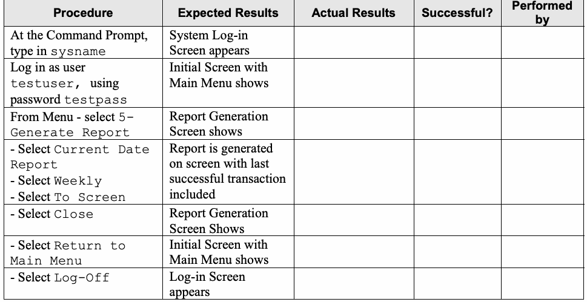
| 手順 | 期待される結果 | 実際の結果 | 成功したか | 実施 |
| 者 | ||||
| コマンドプロンプトで sysname と入力する | システムログイン画面が表示される | |||
| ユーザー testuser、パスワード testpass でログインする | 初期画面にメインメニューが表示される | |||
| メニューから「5 - レポート生成」を選択する | レポート生成画面が表示される | |||
| 「現在日付レポート」「週次」「画面に出力」の順に選択する | 画面にレポートが生成され、最後に成功したトランザクションが含まれる | |||
| 「閉じる」を選択する | レポート生成画面が表示される | |||
| 「メインメニューに戻る」を選択する | 初期画面にメインメニューが表示される | |||
| 「ログオフ」を選択する | ログイン画面が表示される |
APPENDIX F ALTERNATE STORAGE, SITE, AND TELECOMMUNICATIONS
付録 F 代替データ保管、サイトおよび通信
This appendix provides information for alternate storage, alternate processing site, and alternate telecommunications for the system. Alternate storage, site, and telecommunications information is required for high-impact systems, per NIST SP 800-53 Rev. 3. Refer to NIST SP 800-53 Rev. 3, for details on control specifics. Information that should be provided for each area includes:
この付録には、システムの代替データ保管、代替処理サイト、および代替通信に関する情報を記載する。NIST SP 800-53 Rev.3 によれば、高影響度システムでは、代替データ保管、サイト、および通信に関する情報が必要である。管理策の詳細は NIST SP 800-53 Rev.3 を参照されたい。各領域について、次の情報を記載する。
未レビュー訳Alternate Storage:
▪ City and state of alternate storage facility, and distance from primary facility;
▪ Whether the alternate storage facility is owned by the organization or is a third-party storage provider;
▪ Name and points of contact for the alternate storage facility;
▪ Delivery schedule and procedures for packaging media to go to alternate storage facility;
▪ Procedures for retrieving media from the alternate storage facility;
▪ Names and contact information for those persons authorized to retrieve media;
▪ Alternate storage configuration features that facilitate recovery operations (such as keyed or card reader access by authorized retrieval personnel);
▪ Any potential accessibility problems to the alternate storage site in the event of a widespread disruption or disaster;
▪ Mitigation steps to access alternate storage site in the event of a widespread disruption or disaster;
▪ Types of data located at alternate storage site, including databases, application software, operating systems, and other critical information system software; and
▪ Other information as appropriate.
代替保管：
▪ 代替保管施設が所在する都市と州、および主要施設からの距離。
▪ 代替保管施設が組織の所有か、第三者の保管事業者のものか。
▪ 代替保管施設の名称および連絡窓口。
▪ 配送スケジュール、および代替保管施設へ送る媒体の梱包手順。
▪ 代替保管施設から媒体を取り出す手順。
▪ 媒体の取り出しを許可された者の氏名および連絡先。
▪ 復旧作業を容易にする代替保管の構成上の特徴（許可された取り出し担当者による鍵またはカードリーダーでの入室など）。
▪ 広域の中断または災害が発生した場合に、代替保管サイトへのアクセスで生じ得る問題。
▪ 広域の中断または災害が発生した場合に、代替保管サイトへアクセスするための緩和手順。
▪ データベース、アプリケーションソフトウェア、オペレーティングシステム、その他の重要な情報システムソフトウェアを含む、代替保管サイトにあるデータの種類。
▪ 必要に応じたその他の情報。
Alternate Processing Site:
▪ City and state of alternate processing site, and distance from primary facility;
▪ Whether the alternate processing site is owned by the organization or is a third-party site provider;
▪ Name and points of contact for the alternate processing site;
▪ Procedures for accessing and using the alternate processing site, and access security features of alternate processing site;
▪ Names and contact information for those persons authorized to go to alternate processing site;
▪ Type of alternate processing site, and equipment available at site;
▪ Alternate processing site configuration information (such as available power, floor space, office space, telecommunications availability, etc.);
▪ Any potential accessibility problems to the alternate processing site in the event of a widespread disruption or disaster;
▪ Mitigation steps to access alternate processing site in the event of a widespread disruption or disaster;
代替処理サイト：
▪ 代替処理サイトが所在する都市と州、および主要施設からの距離。
▪ 代替処理サイトが組織の所有か、第三者のサイト事業者のものか。
▪ 代替処理サイトの名称および連絡窓口。
▪ 代替処理サイトへのアクセスと利用の手順、および代替処理サイトのアクセスセキュリティ機能。
▪ 代替処理サイトへ行くことを許可された者の氏名および連絡先。
▪ 代替処理サイトの種類、およびサイトで利用できる機器。
▪ 代替処理サイトの構成情報（利用可能な電源、床面積、オフィススペース、通信の利用可否など）。
▪ 広域の中断または災害が発生した場合に、代替処理サイトへのアクセスで生じ得る問題。
▪ 広域の中断または災害が発生した場合に、代替処理サイトへアクセスするための緩和手順。
(cid:131) SLAs or other agreements of use of alternate processing site, available office/support space, setup times, etc.; and (cid:131) Other information as appropriate.
• 代替処理サイトに関する SLA その他の契約、利用可能なオフィス／サポートスペース、設置時間など。 • 必要に応じたその他の情報。
未レビュー訳Alternate Telecommunications:
▪ Name and contact information of alternate telecommunications vendors;
▪ Geographic locations of alternate telecommunications vendors facilities (such as central offices, switch centers, etc.);
▪ Contracted capacity of alternate telecommunications;
▪ SLAs or other agreements for implementation of alternate telecommunications capacity;
▪ Information on alternate telecommunications vendor contingency plans;
▪ Names and contact information for those persons authorized to implement or use alternate telecommunications capacity; and
▪ Other information as appropriate.
代替通信：
▪ 代替通信ベンダーの名称および連絡先。
▪ 代替通信ベンダーの施設（中央局、交換局など）の所在地。
▪ 代替通信の契約容量。
▪ 代替通信容量を導入するための SLA その他の契約。
▪ 代替通信ベンダーの緊急時対応計画に関する情報。
▪ 代替通信容量の導入または利用を許可された者の氏名および連絡先。
▪ 必要に応じたその他の情報。
APPENDIX G DIAGRAMS (SYSTEM AND INPUT/OUTPUT)
付録 G 図（システムおよび入出力）
NOTE: Information for this section should be available from the system’s System Security Plan (SSP) and can be copied from the SSP, or reference the applicable section in the SSP and attach the latest version of the SSP to this contingency plan. Include any system architecture, input/output, or other technical or logical diagrams that may be useful in recovering the system. Diagrams may also identify information about interconnection with other systems.
注：この節の情報は、システムセキュリティ計画（SSP）から入手できるはずである。SSP から転記するか、該当する SSP の節を参照し、最新版の SSP を本緊急時対応計画に添付すること。システムの復旧に役立つアーキテクチャ、入出力、その他の技術図または論理図を含めること。図には、他のシステムとの相互接続に関する情報を示すこともできる。
APPENDIX H HARDWARE AND SOFTWARE INVENTORY
付録 H ハードウェアおよびソフトウェアの一覧
Provide the hardware and software inventory for the system. Inventory information should include type of server or hardware on which the system runs, processors and memory requirements, storage requirements, and any other pertinent details. The software inventory should identify the operating system (including service pack or version levels, and any other applications necessary to operate the system, such as database software).
システムのハードウェアおよびソフトウェアの一覧を記載すること。ハードウェア一覧には、システムが稼働するサーバーまたはハードウェアの種類、プロセッサおよびメモリの要件、ストレージ要件、その他関連する詳細を含めること。ソフトウェア一覧には、オペレーティングシステム（サービスパックまたはバージョンを含む）と、システム運用に必要なデータベースソフトウェアなどのアプリケーションを記載すること。
APPENDIX I INTERCONNECTIONS TABLE
付録 I 相互接続一覧
NOTE: Information for this section should be available from the system’s System Security Plan (SSP) and can be copied from the SSP, or reference the applicable section in the SSP and attach the latest version of the SSP to this contingency plan. This appendix includes information on other systems that directly interconnect or exchange information with the system. Interconnection information should include the type of connection, information transferred, and contact person for that system.
注：この節の情報は、システムセキュリティ計画（SSP）から入手できるはずである。SSP から転記するか、該当する SSP の節を参照し、最新版の SSP を本緊急時対応計画に添付すること。この付録には、システムと直接相互接続する、または情報を交換する他のシステムの情報を記載する。相互接続情報には、接続の種類、転送する情報、および相手システムの連絡担当者を含めること。
未レビュー訳If the system does not have any direct interconnections, then this appendix may be removed, or the following statement may be used:
システムに直接の相互接続がない場合、この付録を削除するか、次の文を使用できる。
{System name} does not directly interconnect with any other systems.
{System name} は、他のシステムと直接相互接続していない。
未レビュー訳APPENDIX J TEST AND MAINTENANCE SCHEDULE
付録 J テストおよび保守のスケジュール
All ISCPs should be reviewed and tested at the organization defined frequency (e.g. yearly) or whenever there is a significant change to the system. Provide information and a schedule for the testing of the system. The full functional test should include all ISCP points of contact and be facilitated by an outside or impartial observer. A formal test plan is developed prior to the functional test, and test procedures are developed to include key sections of the ISCP, including the following:
• Notification procedures;
• System recovery on an alternate platform from backup media;
• Internal and external connectivity; and
• Reconstitution procedures.
すべてのISCPは、組織が定めた頻度（例：年1回）で、またはシステムに重大な変更があった場合には必ず、レビューおよびテストすべきである。システムのテストに関する情報とスケジュールを記述すること。完全な機能テストには、ISCPのすべての連絡担当者を参加させ、外部の観察者または中立的な観察者が進行役を務めるべきである。機能テストに先立って正式なテスト計画を作成し、テスト手順は、次の事項を含むISCPの主要な節を含めるように作成する。
• 通知手順
• バックアップ媒体から代替プラットフォーム上へのシステム復旧
• 内部および外部との接続性
• 再構成手順
Results of the test are documented in an After Action Report, and Lessons Learned are developed for updating information in the ISCP.
テスト結果を事後報告書に記録し、ISCP の情報を更新するための教訓をまとめる。
NOTE: Full functional tests of systems normally are failover tests to the alternate locations, and may be very disruptive to system operations if not planned well. Other systems located in the same physical location may be affected by or included in the full functional test. It is highly recommended that several functional tests be conducted and evaluated prior to conducting a full functional (failover) test.
注：通常、システムの完全な機能テストは代替場所へのフェイルオーバーテストである。適切に計画しないとシステム運用に大きな支障を与える可能性がある。同じ物理的な場所にある他のシステムも影響を受けるか、完全な機能テストの対象となることがある。完全な機能（フェイルオーバー）テストを行う前に、複数の機能テストを実施して評価することを強く推奨する。
未レビュー訳Examples of functional tests that may be performed prior to a full functional test include: (cid:131) Full notification and response of key personnel to recovery location; (cid:131) Recovery of a server or database from backup media; and (cid:131) Setup and processing from a server at an alternate location.
完全な機能テストの前に実施できる機能テストの例： • 主要担当者全員への通知と、復旧場所への応答。 • バックアップ媒体からのサーバーまたはデータベースの復旧。 • 代替場所におけるサーバーのセットアップと処理。
未レビュー訳The following is a sample of a yearly test and maintenance schedule for a high-impact system:
次に、高影響度システム向けの年次テストおよび保守スケジュールの例を示す。
未レビュー訳| Step | Date Due by | Responsible Party | Date Scheduled | Date Held |
| Identify failover test facilitator. | March 1 | ISCP Coordinator | ||
| Determine scope of failover test (include other systems?). | March 15 | ISCP Coordinator, Test Facilitator | ||
| Develop failover test plan. | April 1 | Test Facilitator | ||
| Invite participants. | July 10 | Test Facilitator | ||
| Conduct functional test. | July 31 | Test Facilitator, ISCP Coordinator, POCs | ||
| Finalize after action report and lessons learned. | August 15 | ISCP Coordinator | ||
| Update ISCP based on lessons learned. | September 15 | ISCP Coordinator | ||
| Approve and distribute updated version of ISCP. | September 30 | ISCP Director, ISCP Coordinator |
原本PDFの抜粋画像
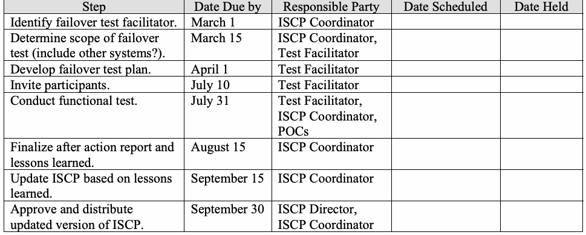
| 手順 | 期限 | 担当者 | 予定日 | 実施日 |
| フェイルオーバーテストの進行役を選任する。 | 3月1日 | ISCP コーディネーター | ||
| フェイルオーバーテストの範囲を決定する（他システムを含めるか）。 | 3月15日 | ISCP コーディネーター、テスト進行役 | ||
| フェイルオーバーテスト計画を作成する。 | 4月1日 | テスト進行役 | ||
| 参加者を招待する。 | 7月10日 | テスト進行役 | ||
| 機能テストを実施する。 | 7月31日 | テスト進行役、ISCP コーディネーター、POC | ||
| 事後報告書を確定し、教訓をまとめる。 | 8月15日 | ISCP コーディネーター | ||
| 教訓に基づいて ISCP を更新する。 | 9月15日 | ISCP コーディネーター | ||
| ISCP の更新版を承認して配布する。 | 9月30日 | ISCP ディレクター、ISCP コーディネーター |
APPENDIX K ASSOCIATED PLANS AND PROCEDURES
付録 K 関連計画および手順
NOTE: Information for this section should be available from the system’s System Security Plan (SSP) and can be copied from the SSP, or reference the applicable section in the SSP and attach the latest version of the SSP to this contingency plan. ISCPs for other systems that either interconnect or support the system should be identified in this appendix. The most current version of the ISCP, location of ISCP, and primary point of contact (such as the ISCP Coordinator) should be noted.
注：この節の情報は、システムセキュリティ計画（SSP）から入手できるはずである。SSP から転記するか、該当する SSP の節を参照し、最新版の SSP を本緊急時対応計画に添付すること。システムと相互接続している、またはシステムを支援する他のシステムの ISCP をこの付録に記載すること。各 ISCP の最新版、保管場所、および主要連絡担当者（ISCP コーディネーターなど）を明記すること。
未レビュー訳APPENDIX L BUSINESS IMPACT ANALYSIS
付録 L 業務影響分析
The Business Impact Analysis results should be included in this appendix.
業務影響分析の結果をこの付録に含めること。
APPENDIX M DOCUMENT CHANGE PAGE
付録 M 文書変更履歴
Modifications made to this plan since the last printing are as follows:
前回の印刷以降に本計画に加えた変更は次のとおりである。
未レビュー訳| 変更履歴 | |||
| ページ番号 | 変更内容 | 変更日 | 署名 |
Appendix B—Sample Business Impact Analysis (BIA) and BIA Template
付録 B — 業務影響分析（BIA）の例とテンプレート
未レビュー訳This sample template is designed to assist the user in performing a Business Impact Analysis (BIA) on an information system. The template is meant only as a basic guide and may not apply equally to all systems. The user may modify this template or the general BIA approach as required to best accommodate the specific system. In this template, words in italics are for guidance only and should be deleted from the final version. Regular (non-italic) text is intended to remain.
このテンプレート例は、ユーザーが情報システムの業務影響分析（BIA）を実施する際の支援を目的としている。基本的な指針にすぎず、すべてのシステムに同様に適用できるとは限らない。ユーザーは、特定のシステムに最適となるよう、このテンプレートまたは一般的なBIAの手法を変更できる。このテンプレートで斜体になっている語句は説明用であり、最終版から削除すること。斜体でないテキストは残すことを意図している。
1. Overview
1. 概要
This Business Impact Analysis (BIA) is developed as part of the contingency planning process for the {system name}{system acronym}. It was prepared on {insert BIA completion date}.
この業務影響分析（BIA）は、{system name}{system acronym} の緊急時対応計画プロセスの一環として作成する。作成日は {insert BIA completion date} である。
未レビュー訳1.1 Purpose
1.1 目的
The purpose of the BIA is to identify and prioritize system components by correlating them to the mission/business process(es) the system supports, and using this information to characterize the impact on the process(es) if the system were unavailable.
BIA の目的は、システムが支援するミッション／業務プロセスとシステムコンポーネントを関連付けて、コンポーネントを特定し優先順位を付けることである。この情報を用いて、システムを利用できない場合に各プロセスへ及ぶ影響を明らかにする。
The BIA is composed of the following three steps:
BIA は次の3つのステップで構成される。
1. Determine mission/business processes and recovery criticality. Mission/business processes
1. ミッション／業務プロセスと復旧上の重要度を判断する。システムが支援するミッション／業務プロセス
未レビュー訳supported by the system are identified and the impact of a system disruption to those processes is determined along with outage impacts and estimated downtime. The downtime should reflect the maximum that an organization can tolerate while still maintaining the mission.
を特定し、システムの中断がそれらのプロセスに及ぼす影響を、停止の影響および推定停止時間とあわせて判断する。推定停止時間には、ミッションを維持しながら組織が許容できる最大時間を反映する。
未レビュー訳2.Identify resource requirements. Realistic recovery efforts require a thorough evaluation of the resources required to resume mission/business processes and related interdependencies as quickly as possible. Examples of resources that should be identified include facilities, personnel, equipment, software, data files, system components, and vital records.
2.資源要件を特定する。現実的な復旧には、ミッション／事業プロセスをできるだけ速やかに再開するために必要な資源と、関連する相互依存関係を十分に評価する必要がある。特定すべき資源の例には、施設、要員、機器、ソフトウェア、データファイル、システムコンポーネント、重要記録が含まれる。
3. Identify recovery priorities for system resources. Based upon the results from the previous
3. システム資源の復旧優先順位を特定する。前のステップの結果に基づき、システム資源を重要なミッション／業務プロセスに、より明確に関連付けられる。
未レビュー訳activities, system resources can more clearly be linked to critical mission/business processes. Priority levels can be established for sequencing recovery activities and resources.
復旧活動と資源の順序を定めるため、優先度を設定できる。
未レビュー訳This document is used to build the {system name} Information System Contingency Plan (ISCP) and is included as a key component of the ISCP. It also may be used to support the development of other contingency plans associated with the system, including, but not limited to, the Disaster Recovery Plan (DRP) or Cyber Incident Response Plan.
この文書は、{system name} 情報システム緊急時対応計画（ISCP）の策定に使用し、ISCP の主要な構成要素として含める。また、災害復旧計画（DRP）やサイバーインシデント対応計画など、システムに関連する他の緊急時対応計画の策定にも利用できる。
2. System Description
2. システムの説明
Provide a general description of system architecture and functionality. Indicate the operating environment, physical location, general location of users, and partnerships with external organizations/systems. Include information regarding any other technical considerations that are important for recovery purposes, such as backup procedures. Provide a diagram of the architecture, including inputs and outputs and telecommunications connections. Note: Information for this section should be available from the system’s System Security Plan (SSP) and can be copied from the SSP, or reference the applicable section in the SSP and attach the latest version of the SSP to this contingency plan.
システムのアーキテクチャと機能を概説すること。運用環境、物理的な設置場所、ユーザーのおおよその所在地、外部組織／システムとの連携を示すこと。バックアップ手順など、復旧上重要なその他の技術的事項を記載すること。入出力および通信接続を含むアーキテクチャ図を提示すこと。注：この節の情報は、システムセキュリティ計画（SSP）から入手できるはずである。SSP から転記するか、該当する SSP の節を参照し、最新版の SSP を本緊急時対応計画に添付すること。
未レビュー訳APPENDIX B
付録 B
未レビュー訳3. BIA Data Collection
3. BIA データの収集
Data collection can be accomplished through individual/group interviews, workshops, email, questionnaires, or any combination of these.
データは、個人／グループへの聞き取り、ワークショップ、電子メール、質問票、またはこれらの組み合わせで収集できる。
未レビュー訳3.1 Determine Process and System Criticality
3.1 プロセスとシステムの重要度を判断する
Step one of the BIA process - Working with input from users, managers, mission/business process owners, and other internal or external points of contact (POC), identify the specific mission/business processes that depend on or support the information system.
BIA プロセスのステップ1 — ユーザー、管理者、ミッション／業務プロセス所有者、その他の内部または外部の連絡担当者（POC）から情報を得て、情報システムに依存する、または情報システムを支援する具体的なミッション／業務プロセスを特定すること。
| Mission/Business Process | Description |
| Pay vendor invoice | Process of obligating funds, issuing check or electronic payment and acknowledging receipt |
原本PDFの抜粋画像
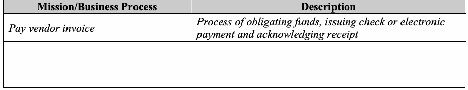
| ミッション／業務プロセス | 説明 |
| ベンダーへの請求書を支払う | 資金を割り当て、小切手または電子決済を行い、受領を確認するプロセス |
If criticality of mission/business processes has not been determined outside of the BIA, the following subsections will help to determine criticality of mission/business processes that depend on or support the information system.
ミッション／業務プロセスの重要度がBIA以外で判断されていない場合、次の小節で情報システムに依存する、または情報システムを支援するプロセスの重要度を判断できる。
未レビュー訳3.1.1 Identify Outage Impacts and Estimated Downtime
3.1.1 停止の影響と推定停止時間を特定する
This section identifies and characterizes the types of impact categories that a system disruption is likely to create in addition to those identified by the FIPS 199 impact level, as well as the estimated downtime that the organization can tolerate for a given process. Impact categories should be created and values assigned to these categories in order to measure the level or type of impact a disruption may cause. An example of cost as an impact category is provided. Organizations could consider other categories like harm to individuals and ability to perform mission. The template should be revised to reflect what is appropriate for the organization.
この節では、FIPS 199 の影響度に加えてシステムの中断が引き起こす可能性のある影響カテゴリの種類を特定し、特徴を示すとともに、特定のプロセスについて組織が許容できる推定停止時間を示す。中断による影響の程度または種類を測定できるよう、影響カテゴリを作成して値を割り当てること。影響カテゴリとして費用を用いる例を示す。組織は、個人への危害やミッション遂行能力など、他のカテゴリも検討できる。組織に適した内容となるようテンプレートを改訂すること。
Outage Impacts
停止による影響
未レビュー訳Impact categories and values should be created in order to characterize levels of severity to the organization that would result for that particular impact category if the mission/business process could not be performed. These impact categories and values are samples and should be revised to reflect what is appropriate for the organization.
ミッション／業務プロセスを実行できない場合に、特定の影響カテゴリについて組織に生じる深刻度を示すため、影響カテゴリと値を設定すること。ここに示すカテゴリと値は例であり、組織に適した内容となるよう改訂すること。
未レビュー訳The following impact categories represent important areas for consideration in the event of a disruption or
次の影響カテゴリは、中断または
未レビュー訳Example impact category = Cost
影響カテゴリの例＝費用
未レビュー訳impact.
影響が発生した場合に考慮すべき重要領域を示す。
未レビュー訳(cid:131) Severe - temp staffing, overtime,
• 深刻 — 臨時要員、時間外勤務、
未レビュー訳Impact category: {insert category name}
影響カテゴリ：{insert category name}
未レビュー訳fees are greater than $1 million (cid:131) Moderate – fines, penalties,
罰金、制裁金、
未レビュー訳Impact values for assessing category impact:
カテゴリの影響を評価するための値：
未レビュー訳liabilities potential $550k (cid:131) Minimal – new contracts,
責任額の見込みは55万ドル。 • 軽微 — 新規契約、
未レビュー訳•Severe = {insert value} supplies $75k
•深刻度＝{insert value} 消耗品費7万5,000ドル。
未レビュー訳•Moderate = {insert value}
•中程度＝{insert value}
未レビュー訳APPENDIX B
付録 B
未レビュー訳•Minimal = {insert value}
•軽微＝{insert value}
未レビュー訳The table below summarizes the impact on each mission/business process if {system name} were unavailable, based on the following criteria:
次の基準に基づき、{system name} を利用できない場合に各ミッション／業務プロセスへ及ぶ影響を、下表にまとめる。
未レビュー訳| Mission/Business Process | Impact Category |
| {insert} | {insert} / {insert} / {insert} / Impact |
| Pay vendor invoice |
原本PDFの抜粋画像
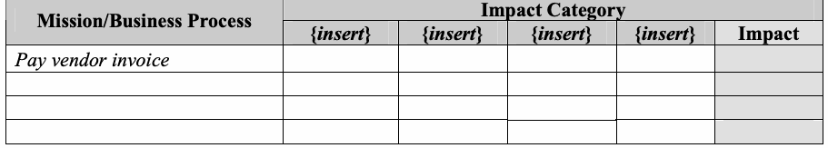
| ミッション／業務プロセス | 影響カテゴリ |
| {insert} | {insert}／{insert}／{insert}／影響 |
| ベンダーへの請求書を支払う |
Estimated Downtime
推定停止時間
未レビュー訳Working directly with mission/business process owners, departmental staff, managers, and other stakeholders, estimate the downtime factors for consideration as a result of a disruptive event.
ミッション／業務プロセス所有者、部門職員、管理者、その他の利害関係者と直接協議し、中断事象による影響として考慮する停止時間の要素を推定すること。
•Maximum Tolerable Downtime (MTD). The MTD represents the total amount of time leaders/managers are willing to accept for a mission/business process outage or disruption and includes all impact considerations. Determining MTD is important because it could leave continuity planners with imprecise direction on (1) selection of an appropriate recovery method, and (2) the depth of detail which will be required when developing recovery procedures, including their scope and content.
•最大許容停止時間（MTD）。MTD は、ミッション／事業プロセスの停止または中断について、リーダー／管理者が許容できる合計時間を示し、あらゆる影響の考慮事項を含む。MTD の判断は重要である。継続計画の担当者に、(1) 適切な復旧方法の選択、(2) 復旧手順の範囲や内容を含む、策定に必要な詳細度について、不明確な指針しか与えない可能性があるためである。
•Recovery Time Objective (RTO). RTO defines the maximum amount of time that a system resource can remain unavailable before there is an unacceptable impact on other system resources, supported mission/business processes, and the MTD. Determining the information system resource RTO is important for selecting appropriate technologies that are best suited for meeting the MTD.
•目標復旧時間（RTO）。RTO は、システム資源が利用不能のままであると、他のシステム資源、支援対象のミッション／業務プロセス、およびMTDに許容できない影響が生じるまでの最大時間を定める。情報システム資源のRTOを判断することは、MTDを満たすのに最適な技術を選ぶうえで重要である。
•Recovery Point Objective (RPO). The RPO represents the point in time, prior to a disruption or system outage, to which mission/business process data must be recovered (given the most recent backup copy of the data) after an outage.
•目標復旧時点（RPO）。RPO は、中断またはシステム停止の前にさかのぼり、停止後にミッション／業務プロセスのデータをどの時点まで復旧する必要があるかを示す（利用可能な最新のデータバックアップを前提とする）。
未レビュー訳The table below identifies the MTD, RTO, and RPO (as applicable) for the organizational mission/business processes that rely on {system name}. Values for MTDs and RPOs are expected to be specific time frames, identified in hourly increments (i.e., 8 hours, 36 hours, 97 hours, etc.).
次の表に、{system name} に依存する組織のミッション／業務プロセスについて、該当するMTD、RTO、RPOを示す。MTD と RPO には、時間単位（例：8時間、36時間、97時間）で具体的な時間幅を指定すること。
| Mission/Business Process | MTD | RTO | RPO |
| Pay vendor invoice | 72 hours | 48 hours | 12 hours (last backup) |
原本PDFの抜粋画像
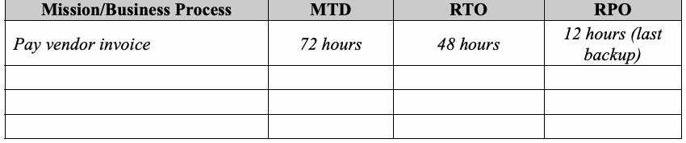
| ミッション／業務プロセス | MTD | RTO | RPO |
| ベンダーへの請求書を支払う | 72時間 | 48時間 | 12時間（最終バックアップ） |
Include a description of the drivers for the MTD, RTO, and RPOs listed in the table above (e.g., mandate, workload, performance measure, etc.).
上表に記載したMTD、RTO、RPOの根拠（例：義務、作業量、性能指標など）を説明すること。
APPENDIX B
付録 B
未レビュー訳Include a description of any alternate means (secondary processing or manual work-around) for recovering the mission/business process(es) that rely on the system. If none exist, so state.
システムに依存するミッション／業務プロセスを復旧するための代替手段（二次処理または手作業による回避策）を記述すること。存在しない場合は、その旨を明記すること。
未レビュー訳3.2 Identify Resource Requirements
3.2 資源要件を特定する
未レビュー訳The following table identifies the resources that compose {system name} including hardware, software, and other resources such as data files.
次の表に、ハードウェア、ソフトウェア、データファイルなど、{system name} を構成する資源を示す。
未レビュー訳| System Resource/Component | Platform/OS/Version | Description |
| (as applicable) | ||
| Web Server 1 | Optiplex GX280 | Web Site Host |
原本PDFの抜粋画像
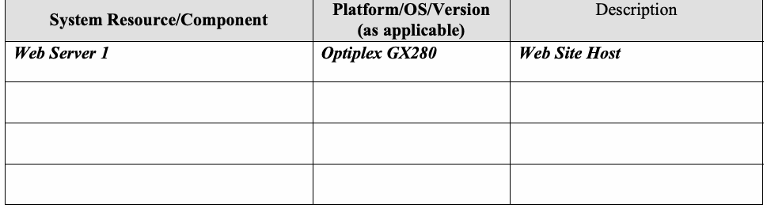
| システム資源／コンポーネント | プラットフォーム／OS／バージョン | 説明 |
| （該当する場合） | ||
| Webサーバー1 | Optiplex GX280 | ウェブサイトのホスト |
It is assumed that all identified resources support the mission/business processes identified in Section 3.1 unless otherwise stated. Note: Information for this section should be available from the system’s System Security Plan (SSP) and can be copied from the SSP, or reference the applicable section in the SSP and attach the latest version of the SSP to this contingency plan.
ここに特記がない限り、特定したすべての資源は3.1節に示すミッション／業務プロセスを支援すると想定する。注：この節の情報は、システムセキュリティ計画（SSP）から入手できるはずである。SSP から転記するか、該当する SSP の節を参照し、最新版の SSP を本緊急時対応計画に添付すること。
未レビュー訳3.3 Identify Recovery Priorities for System Resources
3.3 システム資源の復旧優先順位を特定する
The table below lists the order of recovery for {system name} resources. The table also identifies the expected time for recovering the resource following a “worst case” (complete rebuild/repair or replacement) disruption.
次の表に、{system name} の資源を復旧する順序を示す。また、「最悪のケース」（完全な再構築／修理または交換）の中断後に、資源を復旧する見込み時間も示す。
(cid:131) Recovery Time Objective (RTO) - RTO defines the maximum amount of time that a system resource can remain unavailable before there is an unacceptable impact on other system resources, supported mission/business processes, and the MTD. Determining the information system resource RTO is important for selecting appropriate technologies that are best suited for meeting the MTD.
• 目標復旧時間（RTO）— RTO は、システム資源が利用不能のままであると、他のシステム資源、支援対象のミッション／業務プロセス、およびMTDに許容できない影響が生じるまでの最大時間を定める。情報システム資源のRTOを判断することは、MTDを満たすのに最適な技術を選ぶうえで重要である。
未レビュー訳| Priority | System | Recovery Time Objective |
| Resource/Component | ||
| Web Server 1 | Optiplex GX280 | 24 hours to rebuild or replace |
原本PDFの抜粋画像
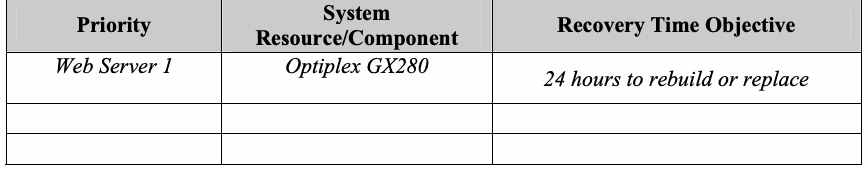
| 優先順位 | システム | 目標復旧時間 |
| 資源／コンポーネント | ||
| Webサーバー1 | Optiplex GX280 | 再構築または交換に24時間 |
A system resource can be software, data files, servers, or other hardware and should be identified individually or as a logical group.
システム資源には、ソフトウェア、データファイル、サーバー、その他のハードウェアがある。資源は個別に、または論理的なグループとして特定すること。
Identify any alternate strategies in place to meet expected RTOs. This includes backup or spare equipment and vendor support contracts.
予想されるRTOを満たすために用意している代替戦略を記載すること。バックアップ機器または予備機器、ベンダーのサポート契約などが含まれる。
APPENDIX B
付録 B
未レビュー訳Appendix C—Frequently Asked Questions
付録 C — よくある質問
未レビュー訳1. What is Information System Contingency Planning?
1. 情報システム緊急時対応計画とは何ですか。
Information system contingency planning refers to the dynamic development of a coordinated recovery strategy for information systems, operations, and data after a disruption. The planning process requires seven steps: develop contingency planning policy statement; conduct the business impact analysis (BIA); identify preventive controls; develop recovery strategies; develop the Information System Contingency Plan (ISCP); test and exercise the plan and train personnel; and maintain the plan.
情報システム緊急時対応計画とは、中断後に情報システム、運用、データを復旧するための調整された戦略を動的に策定することである。計画策定プロセスには、次の7つのステップが必要である。緊急時対応計画の方針声明を作成する；業務影響分析（BIA）を実施する；予防的管理策を特定する；復旧戦略を策定する；情報システム緊急時対応計画（ISCP）を作成する；計画をテスト・演習し、要員を訓練する；計画を維持する。
2. What are the differences among a Continuity of Operations Plan (COOP), a Business
2. 業務継続計画（COOP）、事業継続計画（BCP）、
未レビュー訳Continuity Plan (BCP), a Critical Infrastructure Protection (CIP) Plan, a Disaster Recovery Plan (DRP), an Information System Contingency Plan (ISCP), a Cyber Incident Response Plan, and an Occupant Emergency Plan (OEP)?
重要インフラ保護（CIP）計画、災害復旧計画（DRP）、情報システム緊急時対応計画（ISCP）、サイバーインシデント対応計画、および施設緊急時対応計画（OEP）の違いは何ですか。
未レビュー訳Organizations require a suite of plans to prepare themselves for response, continuity, recovery, and resumption of mission/business processes and information systems in the event of a disruption. Each plan has a specific purpose and scope; however, because of the lack of standard definitions for these types of plans, in some cases, the scope of actual plans developed by organizations may vary from the following basic descriptions.
組織は、中断時にミッション／業務プロセスおよび情報システムへの対応、継続、復旧、再開を行えるよう、一連の計画を必要とする。各計画には固有の目的と範囲がある。ただし、これらの計画種別に標準的な定義がないため、組織が策定する実際の計画の範囲は、次の基本的な説明と異なる場合がある。
未レビュー訳A COOP is required by Homeland Security Presidential Directive (HSPD) - 20/National Security Presidential Directive (NSPD) - 51, National Continuity Policy and Federal Continuity Directive (FCD) - 1, Federal Executive Branch National Continuity Program and Requirements for sustaining an organization’s (usually a headquarters element) mission essential functions (MEF) at an alternate site and performing those functions for up to 30 days before returning to normal operations. A BCP addresses sustaining mission/business processes and the information systems that support those mission/business processes during and after a significant disruption. BCPs are often developed at the organization’s field level or for mission/business processes that are not prioritized as mission essential. A CIP plan is a set of policies and procedures that serve to protect and recover those components of the national infrastructure that are deemed so vital that their loss would have a debilitating effect of the safety, security, economy, and/or health of the United States. A DRP refers to an information system-focused plan designed to restore operability of one or more information systems at an alternate site after a major disruption usually causing physical damage to the original data center. An ISCP provides recovery and resumption procedures for a single information system resulting from disruptions that do not necessarily require relocation to an alternate site. A Cyber Incident Response Plan establishes procedures to enable security personnel to identify, mitigate, and recover from cyber attacks against an organization’s information system(s). An OEP provides directions for facility occupants to follow in the event of an emergency situation that threatens the health and safety of personnel, the environment, or property.
COOP は、国土安全保障大統領指令 HSPD-20／国家安全保障大統領指令 NSPD-51「国家継続性政策」および連邦継続性指令 FCD-1「連邦行政機関の国家継続性プログラムおよび要件」で求められる計画であり、組織（通常は本部機能）のミッション必須機能（MEF）を代替サイトで維持し、通常運用に戻るまで最長30日間その機能を実行するためのものである。BCP は、重大な中断中および中断後に、ミッション／業務プロセスとそれを支援する情報システムを維持するための計画である。BCP は、組織の現場レベルや、ミッション必須として優先されていないミッション／業務プロセス向けに策定されることが多い。CIP 計画は、喪失が米国の安全、治安、経済および／または健康に深刻な影響を及ぼすほど重要と判断された国家インフラの構成要素を保護し、復旧するための方針と手順の集合である。DRP は、通常、元のデータセンターに物理的損害をもたらす大規模な中断の後に、代替サイトで1つ以上の情報システムを運用可能な状態に戻すことを目的とする、情報システムに焦点を当てた計画である。ISCP は、必ずしも代替サイトへの移転を必要としない中断に対して、単一の情報システムの復旧と再開の手順を定める。サイバーインシデント対応計画は、組織の情報システムに対するサイバー攻撃をセキュリティ要員が特定、緩和し、そこから復旧できるようにする手順を定める。OEP は、要員の健康と安全、環境、または財産を脅かす緊急事態が発生した場合に、施設利用者が従うべき指示を示す。
Careful coordination must be maintained between plan developers to ensure that their respective policies and procedures complement one another. Any changes in one plan, system, or process must be communicated to plan developers of associated systems and functions.
各計画の方針と手順が互いに補完し合うよう、計画の策定者間で慎重な調整を維持しなければならない。ある計画、システムまたはプロセスに変更があれば、関連するシステムや機能の計画策定者に伝えなければならない。
3. What is the difference between mission/business processes supported by an information system
3. 情報システムが支援するミッション／業務プロセスと
未レビュー訳and a COOP MEF?
COOP のミッション必須機能（MEF）の違いは何ですか。
未レビュー訳Information systems are designed and developed to support mission/business processes (or functions). When conducting a BIA, the mission/business processes are identified and prioritized in terms of criticality. COOP MEFs are a set of prioritized mission/business processes that support the organization’s mission and must be sustained within 12 hours and for up to 30 days following a disruption. Federal Continuity Directive-2, Federal Executive Branch Mission Essential Function and Primary Mission Essential Function Identification and Submission Process, provides detailed guidance on how to determine if a mission/business process meets the requirements of a MEF. Because COOP MEFs may also be supported by information systems, ISCPs must be developed for those systems as well.
情報システムは、ミッション／業務プロセス（または機能）を支援するよう設計・開発される。BIA を実施する際は、ミッション／業務プロセスを特定し、重要度の観点から優先順位を付ける。COOP の MEF は、組織のミッションを支える優先順位付きのミッション／業務プロセスの集合であり、中断後12時間以内に維持を開始し、最長30日間維持しなければならない。連邦継続性指令2「連邦行政府のミッション必須機能および主要ミッション必須機能の特定・提出プロセス」は、あるミッション／業務プロセスが MEF の要件を満たすかどうかを判断する方法について、詳細な指針を示している。COOP の MEF も情報システムに支援されている場合があるため、それらのシステムについても ISCP を策定しなければならない。
4. What is the connection between the risk management framework and information system
4. リスク管理フレームワークと情報システム
未レビュー訳contingency planning?
緊急時対応計画の関係は何ですか。
未レビュー訳The risk management framework (RMF) encompasses a broad range of activities to identify, control, and mitigate risks to an information system during the system development life cycle. One of the activities is the development of an ISCP. Implementing the risk management framework can prevent or reduce the likelihood of natural, human, and environmental threats and limit the consequences of risks in the event of a system disruption.
リスク管理フレームワーク（RMF）は、システム開発ライフサイクル全体を通じて情報システムのリスクを特定、管理、緩和する幅広い活動を含む。その活動の1つが ISCP の策定である。RMF を実施することで、自然、人為、環境上の脅威の発生可能性を防止または低減し、システム中断時のリスクの影響を限定できる。
5. How do risk management and information system contingency planning fit into a resilience
5. リスク管理と情報システム緊急時対応計画は、レジリエンス
未レビュー訳program?
プログラムにどのように組み込まれますか。
未レビュー訳The goal of a resilient organization is to continue functions at all times during any type of disruption. Resilient organizations continually work to adapt to changes and risks that can affect their ability to sustain operations. Risk management, contingency, and continuity planning are individual security and emergency management activities that can be implemented in a holistic manner across an organization as components of a resiliency program.
レジリエントな組織の目標は、あらゆる種類の中断が発生しても、常に機能を継続することである。レジリエントな組織は、運用を維持する能力に影響する変化やリスクに適応し続ける。リスク管理、緊急時対応、事業継続の計画策定は、それぞれ個別のセキュリティおよび緊急事態管理活動であるが、組織全体で統合的に実施し、レジリエンスプログラムの構成要素にできる。
6. Into what phase of the system development life cycle (SDLC) should contingency planning and
6. 緊急時対応計画と関連するセキュリティ管理策を、システム開発ライフサイクル（SDLC）のどの段階に
未レビュー訳related security controls be incorporated?
組み込むべきですか。
未レビュー訳Although contingency planning is associated with activities occurring in the Operation/Maintenance phase, contingency measures should be identified and integrated into ALL phases of the SDLC. Incorporating contingency planning into the SDLC reduces overall contingency planning costs, enhances contingency capabilities, and reduces impacts to system operations when the contingency plan is implemented.
緊急時対応計画は運用／保守段階の活動に関連するが、対応策は SDLC のすべての段階で特定し、組み込むべきである。SDLC に緊急時対応計画を組み込むと、緊急時対応計画の策定費用全体を抑え、対応能力を高め、計画の実施時にシステム運用へ及ぶ影響を減らせる。
7. What is the first step I need to take before writing an ISCP?
7. ISCP を作成する前に最初に行うべきことは何ですか。
The first step in the contingency planning process is to develop a contingency planning policy statement supported by senior leadership (typically the Chief Information Officer). This policy should define the agency’s overall contingency objectives and should establish the organizational framework and responsibilities for information system contingency planning. The policy statement should also address roles and responsibilities. The policy should be supported with procedures covering training requirements, frequency of backups, offsite storage shipments, plan exercises, testing, and maintenance.
緊急時対応計画プロセスの最初のステップは、上級管理職（通常は最高情報責任者）が支持する緊急時対応計画の方針声明を作成することである。この方針では、機関全体の緊急時対応目標を定め、情報システム緊急時対応計画に関する組織の体制と責任を確立する。役割と責任も定める。訓練要件、バックアップの頻度、オフサイト保管への媒体発送、計画の演習、テスト、保守を扱う手順によって、この方針を裏付けること。
未レビュー訳8. The BIA guidance in this guide is a different process than the one required by Federal
8. 本ガイドの BIA ガイダンスのプロセスは、次の文書が求めるものとは異なる。連邦
Continuity Directive-2, Federal Executive Branch Mission Essential Function and Primary Mission Essential Function Identification and Submission Process. Which is the correct process for my organization to use?
継続性指令2（Continuity Directive-2）「連邦行政機関のミッション必須機能および主要ミッション必須機能の特定・提出プロセス」。自組織が使用すべき正しいプロセスはどれか。
APPENDIX C
付録 C
未レビュー訳The BIA process recommended in this guide is specifically designed to utilize the identify impact categories and values, determine recovery time objectives (RTOs), and prioritize system components for information systems. This BIA format uses FIPS 199 impact levels as a baseline to help determine the impact categories, values, and priorities and allows the organization to further customize the BIA to identify impact categories unique to the organization’s mission. The BIA in this guide is a recommended format for information systems; organizations may adapt the format to their needs or use a different process.
本ガイドで推奨するBIAプロセスは、影響カテゴリと値を特定し、目標復旧時間（RTO）を判断し、情報システムのコンポーネントに優先順位を付けるために設計されている。このBIA形式では、FIPS 199 の影響度を基準として影響カテゴリ、値、優先順位を判断し、組織のミッション固有の影響カテゴリを特定できるよう、組織によるカスタマイズも可能にする。本ガイドのBIAは情報システム向けの推奨形式である。組織はニーズに応じて変更するか、別の手法を使用できる。
未レビュー訳The BIA process required by FCD-2 is designed to identify the threats, vulnerabilities, impacts, and mitigation strategies for the organization’s primary mission essential functions (PMEFs). BIAs for information systems that support PMEFs should use the FCD-2 BIA as input to the system-focused BIA.
連邦継続性指令2（FCD-2）で求めるBIAプロセスは、組織の主要ミッション必須機能（PMEF）に対する脅威、脆弱性、影響、緩和策を特定するために設計されている。PMEFを支援する情報システムのBIAでは、システムに焦点を当てたBIAへの入力情報として、FCD-2のBIAを使用すること。
9. How can I determine which contingency solutions I should implement to ensure availability of
9. 情報システムの可用性を確保するため、どの緊急時対応策を
未レビュー訳my information systems?
実施すべきか、どのように判断すればよいですか。
未レビュー訳The ISCP Coordinator can use the BIA results to determine contingency planning requirements and priorities. Results from the BIA should be appropriately incorporated into the analysis and strategy development efforts for the organization’s COOP, BCP, and DRP. The BIA should be performed during the Initiation phase of the SDLC. As the system design evolves and components change, the BIA may need to be conducted again during the Development/Acquisition phase of the SDLC.
ISCP コーディネーターは、BIA の結果を使って緊急時対応計画の要件と優先順位を判断できる。BIA の結果は、組織の COOP、BCP、DRP の分析および戦略策定に適切に反映すべきである。BIA は SDLC の開始段階で実施すべきである。システム設計が進展し、コンポーネントが変更された場合は、SDLC の開発／取得段階で BIA を再実施する必要が生じることがある。
The BIA, which is the second step in the information system contingency planning process, is central to determining what recovery strategies should be implemented to ensure availability. The BIA enables the ISCP Coordinator to fully characterize the system components, supported mission/business processes, and interdependencies. The BIA should be developed with input from all associated system owners, end users, and interconnected system partners. Possible mission/business impacts attributed to the unavailability of the information system can then be determined, leading to the RTO, mean tolerable downtime (MTD), and sequencing recovery of information system components. Thus, recovery prioritizations will form the basis for developing appropriate contingency solutions.
BIA は情報システム緊急時対応計画プロセスの第2ステップであり、可用性を確保するために実施すべき復旧戦略を判断するうえで中心的な役割を果たす。BIA により、ISCP コーディネーターは、システムコンポーネント、支援対象のミッション／業務プロセス、相互依存関係を十分に把握できる。関連するすべてのシステム所有者、エンドユーザー、相互接続するシステムの関係者から情報を得てBIAを作成すること。次に、情報システムが利用できない場合のミッション／業務への影響を判断し、RTO、許容停止時間（MTD）、情報システムコンポーネントの復旧順序を定める。したがって、復旧の優先順位が、適切な緊急時対応策を策定する基礎になる。
未レビュー訳10. What type of alternate site should I choose as a recovery strategy?
10. 復旧戦略として、どの種類の代替サイトを選ぶべきですか。
The type of alternate site should be determined through the BIA with consideration of the FIPS 199 impact level. The alternate site choice must be cost-effective and match the availability needs of the organization’s information systems. Thus, if a system requires near 100 percent availability, then a mirrored or hot site might be the right choice. However, if the system can allow for several days of downtime, then a cold site might be a better option.
代替サイトの種類は、FIPS 199 の影響度を考慮してBIAを通じて判断すること。代替サイトは費用対効果が高く、組織の情報システムに必要な可用性に合致する必要がある。ほぼ100％の可用性が必要なシステムには、ミラーサイトまたはホットサイトが適切な場合がある。一方、数日間の停止を許容できるシステムには、コールドサイトが適している場合がある。
未レビュー訳11. When an event occurs, who should be notified?
11. 事象が発生したとき、誰に通知すべきですか。
Notification procedures must be outlined in the ISCP. The ISCP Coordinator should determine who should be notified if a disruption occurs to the information system and in what sequence they should be contacted. Parties notified typically include the system owners, users, and interconnected information system points of contact. External entities that might be interconnected to the information system should also be included in the notification procedures. Design of a call tree will assist the sequence and responsibilities of executing notifications to appropriate contacts.
通知手順は ISCP に概説しなければならない。ISCP コーディネーターは、情報システムに中断が生じた場合に誰へ通知し、どの順序で連絡するかを決定すべきである。通知先には通常、システム所有者、ユーザー、相互接続する情報システムの連絡担当者が含まれる。情報システムと相互接続している可能性のある外部組織も、通知手順に含めるべきである。電話連絡網を設計すると、適切な連絡先への通知の順序と実施責任を定めやすくなる。
APPENDIX C
付録 C
未レビュー訳12. How often should my ISCP be tested?
12. ISCP はどのくらいの頻度でテストすべきですか。
Testing helps evaluate the viability of plan procedures, determine the ability of recovery staff to implement the plan, and identify deficiencies in the plan. Testing should occur based on organization requirements and when significant changes are made to the information system, supported mission/business process(s), or the ISCP. Each element of the ISCP should be tested first individually and then as a whole to confirm the accuracy of recovery procedures and the overall effectiveness. Test and exercise schedules should be stated in the ISCP policy statement.
テストは、計画手順の実行可能性を評価し、復旧要員が計画を実施できるかを判断し、計画の欠陥を特定するのに役立つ。組織の要件に従って、また情報システム、支援対象のミッション／業務プロセス、またはISCPに重大な変更があった場合にテストすること。復旧手順の正確さと全体的な有効性を確認するため、ISCP の各要素をまず個別にテストし、その後、全体としてテストする。テストおよび演習のスケジュールを ISCP 方針声明に記載すること。
未レビュー訳13. How often should my ISCP be updated?
13. ISCP はどのくらいの頻度で更新すべきですか。
An up-to-date ISCP is essential for successful ISCP operations. As a general rule, the ISCP should be reviewed for accuracy and completeness at least annually, as well as upon significant changes to any element of the ISCP, system, mission/business processes supported by the system, or resources used for recovery procedures. Deficiencies identified through testing (see Question 12) should be addressed during plan maintenance. Elements of the plan subject to frequent changes, such as contact lists, should be reviewed and updated more frequently. Maintenance schedules should be stated in the ISCP policy statement.
ISCP を正常に運用するには、常に最新の状態に保つことが不可欠である。一般に、ISCP の正確性と完全性を少なくとも年1回、また ISCP の要素、システム、システムが支援するミッション／業務プロセス、復旧手順に使う資源に重大な変更があったときにレビューすること。テスト（質問12を参照）で見つかった欠陥は、計画の保守時に対処すること。連絡先一覧など頻繁に変わる要素は、より頻繁にレビューして更新すること。保守スケジュールを ISCP 方針声明に記載すること。
未レビュー訳14. With what other activities should the ISCP and the recovery solutions be coordinated?
14. ISCP と復旧策を、他のどの活動と調整すべきですか。
In addition to integrating contingency planning into the SDLC, information system contingency planning should be coordinated with network security policies. System security controls can help to protect against malicious code or attacks that could compromise system availability and are closely coordinated with the incident response procedures. The ISCP should be closely coordinated with all other emergency preparedness plans related to the information system or interconnected systems and mission/business processes.
SDLC への緊急時対応計画の組み込みに加えて、情報システム緊急時対応計画はネットワークセキュリティ方針と調整すること。システムセキュリティ管理策は、システムの可用性を損なう悪意あるコードや攻撃からの保護に役立ち、インシデント対応手順と密接に連携する。ISCP は、情報システム、相互接続システム、ミッション／業務プロセスに関連する他のすべての緊急事態準備計画とも緊密に調整すること。
APPENDIX C
付録 C
未レビュー訳Appendix D—Personnel Considerations in Continuity and Contingency Planning
付録 D — 事業継続・緊急時対応計画における要員への配慮
未レビュー訳Information system contingency plans are rarely developed or executed on their own. When an incident occurs that impacts information system operations, it often impacts the organization’s personnel. Proper considerations for the safety, security, and well-being of personnel should be planned for in anticipation of a disruptive event. Evacuation procedures and regaining access to the facility should be coordinated and jointly exercised with local response organizations and federal authorities. Organizations should also have in place methods and standards for interfacing with media inquiries and for sending out responsive messages to personnel. Planning for these factors typically falls within the scope of an occupant emergency plan (OEP), business continuity plan (BCP), or crisis communications plan, which are all plans coordinated with the ISCP. In light of heightened awareness of these issues due to the terrorist attacks in 2001, the aftermath of Hurricane Katrina in 2005, the threat of pandemic influenza, and general increased security throughout our society, “personnel considerations” warrant further discussion in all related planning areas.
情報システム緊急時対応計画が単独で策定または実施されることはほとんどない。情報システムの運用に影響する事象は、組織の要員にも影響することがよくある。中断事象に備え、要員の安全、保安、福祉に適切に配慮した計画を事前に策定すること。避難手順と施設への再入館は、地域の対応機関および連邦当局と調整し、合同で訓練すること。また、報道機関からの問い合わせに対応し、要員に適切な情報を発信する方法と基準も組織で定めること。通常、これらの要素は施設緊急時対応計画（OEP）、事業継続計画（BCP）、危機広報計画の対象であり、いずれもISCPと調整する計画である。2001年のテロ攻撃、2005年のハリケーン・カトリーナ、その後の影響、新型インフルエンザの脅威、および社会全体で高まるセキュリティ意識を踏まえると、関連するすべての計画分野で「要員への配慮」をさらに検討する必要がある。
未レビュー訳Personnel Safety and Evacuation Personnel safety and evacuation during and after a disruption are typically addressed in an OEP. Personnel should be aware of their physical security and exit procedures and should practice these procedures during regular fire drill exercises. OEPs and ISCPs may include instructions for securing office spaces, personal workstations, and laptop computers to prevent access to information and to reduce the likelihood of vandalism or theft. Plans may also include reminders to collect identification, car keys, and other important belongings if the nature of the incident and time allows. In addition, procedures may need to address how to regain access. Instructions for the most appropriate ways to exit the facility are based on specific site requirements and local fire code regulations. A “floor warden” methodology may be incorporated into the plan and instituted as a normal practice. This methodology involves designating and training one or two specific people from each floor to be responsible for the evacuation of all personnel. This responsibility usually rotates so that the same people are not responsible for overseeing evacuations all year.
要員の安全と避難 — 中断中および中断後の要員の安全と避難は、通常OEPで扱う。要員は自らの物理的セキュリティと退出手順を把握し、定期的な火災避難訓練で手順を実践すること。OEPとISCPには、情報へのアクセスや破壊行為・盗難の可能性を減らすため、オフィス、個人用ワークステーション、ノートPCを安全にする指示を含めることができる。事象の性質と時間に余裕があれば、身分証、車の鍵、その他の重要な所持品を持ち出すよう促す注意事項も含められる。また、施設への再入館方法を手順に含める必要がある場合もある。施設から退出する最適な方法は、個別の施設要件と地域の消防法規に基づいて定める。「フロア・ウォーデン」方式を計画に取り入れ、通常の慣行として実施することもできる。この方式では、各階から1人または2人を指定して訓練し、全要員の避難に責任を持たせる。同じ人が年間を通じて避難を監督し続けないよう、通常は担当を交代する。
The OEP should also include procedures and multiple contact methods for collecting a personnel head count after the disaster. It is important for senior management to know who was in the building prior to the event and who has been accounted for (both onsite and offsite personnel) so that civil authorities (fire, police, and rescue) and families can be properly informed of the situation. Procedures should be developed to instruct personnel to meet and be accounted for at a specific preplanned site, away from the building. Personnel should be provided alternate procedures to contact the organization and provide information on their whereabouts in the event the preplanned location is not safe. A centralized reporting methodology to one person or to a team will reduce possible confusion and conflicting information. During the September 11, 2001 terrorist attacks, many organizations were successful using television and radio announcements or Internet Web sites as a means to communicate accounting procedures to staff. Contact methods may be developed to be sent out and/or received by telephone, answering service, electronic mail (email), instant messenger (IM), Web site, meeting at a physical location, or by a combination of methods. As the use of social networking within the federal government increases, approved and verifiable means for crisis communications may be another option. Automated notification services are applications that use a combination of methods that are designed to contact large groups or multiple types of groups within the organization in a very short time period. Emergency contact information can be printed on small cards, along with contact information of coworkers, and issued to personnel to be stored with their identification badges as a normal practice. It is important to remember that personnel contact information is considered privacy information, and it must be appropriately protected.
OEPには、災害後に要員の安否を確認する手順と複数の連絡手段も含めること。事象の発生前に建物内にいた人と、安否が確認された人（施設内外の要員の双方）を上級管理職が把握することは、消防・警察・救助機関や家族に状況を正確に伝えるために重要である。あらかじめ定めた建物から離れた場所に集合し、点呼を受ける手順を要員に周知すること。集合場所が安全でない場合に備え、組織に連絡して居場所を伝える代替手順も要員に示す。1人または1チームに報告を集約すると、混乱や相反する情報を減らせる。2001年9月11日のテロ攻撃では、テレビ・ラジオの告知やインターネットのウェブサイトを使って職員に安否確認手順を伝え、成功した組織が多くあった。電話、留守番電話サービス、電子メール、インスタントメッセージ（IM）、ウェブサイト、指定場所での集合、またはこれらの組み合わせで、連絡を発信・受信する方法を定められる。連邦政府内でソーシャルネットワーキングの利用が拡大するなか、承認済みで信頼性を確認できる危機広報手段も選択肢となり得る。自動通知サービスは、複数の方法を組み合わせ、組織内の大人数または複数のグループへ短時間で連絡するアプリケーションである。同僚の連絡先も記載した緊急連絡先カードを小型で印刷し、通常の慣行として要員に配布して身分証と一緒に携帯してもらうことができる。要員の連絡先情報はプライバシー情報に該当するため、適切に保護すること。
未レビュー訳APPENDIX D
付録 D
未レビュー訳While the OEP provides guidance on facility evacuation, it may be safer to remain within the facility in response to certain emergency situations. Shelter-in-place plans provide instruction to personnel on how to take refuge indoors in response to unsafe environment outside of the facility or contaminations inside the facility which could be carried outside and spread. Shelter-in-place planning identifies “safe rooms” on each floor of the facility. Safe rooms are equipped with emergency resources such as flashlights, radios for communication, and water. Safe rooms are also identifiable from the window so that first responders can locate offices where personnel may have taken shelter.
OEPは施設からの避難指針を示すが、緊急事態によっては施設内にとどまる方が安全な場合がある。屋内退避計画では、施設外の危険な環境や、施設内の汚染物質が外へ運ばれて拡散するおそれがある場合に、屋内で避難する方法を要員に指示する。屋内退避計画では、施設の各階に「安全室」を指定する。安全室には、懐中電灯、通信に使う無線機、水などの緊急用資源を備える。また、要員が退避している可能性のある部屋を初動対応要員が見つけられるよう、安全室を窓から識別できるようにする。
未レビュー訳The General Serves Administration provides a template and guidance on OEP development at http://www.gsa.gov/gsa/cm_attachments/GSA_BASIC/OEP_Guide_R2-qR1-n_0Z5RDZ-i34K-pR.pdf.
米国一般調達庁（GSA）は、OEP策定のテンプレートと指針を http://www.gsa.gov/gsa/cm_attachments/GSA_BASIC/OEP_Guide_R2-qR1-n_0Z5RDZ-i34K-pR.pdf で提供している。
Personnel Health Pandemic Influenza (PI) is a global outbreak of disease that occurs when a new influenza virus emerges in human populations and causes serious illness. Because there is little natural immunity, the disease can spread easily from person to person, rapidly moving across the country and around the world. The Homeland Security Council, The National Strategy for Pandemic Influenza Implementation Plan, May 2006, requires federal organizations to develop plans to address how the organization will: (cid:131) Protect employees during a pandemic; (cid:131) Sustain essential functions during significant times of absenteeism; (cid:131) Support the overall federal response during a pandemic; and (cid:131) Communicate guidance to stakeholders during a pandemic.
要員の健康 — パンデミックインフルエンザ（PI）とは、新しいインフルエンザウイルスがヒト集団に出現して重い病気を引き起こす、世界的な感染症の流行である。自然免疫を持つ人が少ないため、人から人へ容易に感染し、国内各地や世界中へ急速に拡大する可能性がある。国土安全保障会議の「国家パンデミックインフルエンザ戦略実施計画」（2006年5月）は、連邦機関に次の事項への対応計画を策定するよう求めている。 • パンデミック中に職員を保護する。 • 欠勤が大幅に増加しても重要機能を維持する。 • 連邦政府全体のパンデミック対応を支援する。 • パンデミック中に利害関係者へ指針を伝える。
未レビュー訳Common strategies to protect personnel health during a pandemic outbreak include stricter hygiene precautions and reducing the number of personnel working in close contact with one another through implementation of “social distancing.” Approved telework arrangements facilitate social distancing through working at home while sustaining productivity. Government-run telework sites are also available to federal employees who cannot work from home or the office. The Office of Personnel Management provides guidance and resources for developing Pandemic Influenza plans in coordination with the organization’s Continuity of Operations Plan, human capital policy and strategies during a pandemic, and telework arrangements.
パンデミック流行中に要員の健康を守る一般的な対策には、衛生上の予防措置を強化することや、「ソーシャルディスタンス」の実施によって近接して働く要員の数を減らすことが含まれる。承認済みのテレワークにより、自宅で働きながら生産性を維持し、ソーシャルディスタンスを確保できる。自宅や職場で勤務できない連邦職員向けに、政府運営のテレワーク拠点も利用できる。人事管理局（OPM）は、組織の業務継続計画、人事方針、パンデミック中の施策、テレワーク体制と連携したパンデミックインフルエンザ計画の策定について、指針と資料を提供している。
The World Health Organization provides fact sheets on Avian Influenza at http://www.who.int/mediacentre/factsheets/avian_influenza/en/.
世界保健機関（WHO）は、鳥インフルエンザのファクトシートを http://www.who.int/mediacentre/factsheets/avian_influenza/en/ で提供している。
OPM provides information and guidance on Pandemic Influenza planning at http://www.opm.gov/pandemic/index.asp. The Web site also provides human capital guidance on issues including pay, leave, hiring, and alternate work arrangements.
OPMは、パンデミックインフルエンザ計画に関する情報と指針を http://www.opm.gov/pandemic/index.asp で提供している。このウェブサイトでは、給与、休暇、採用、代替勤務形態などの人事に関する指針も提供している。
OPM and GSA provide information and guidance on federal telework programs from the manager, employee, and Telework coordinator perspectives at www.telework.gov. Telework centers are also listed on this site.
OPMとGSAは、管理者、職員、テレワークコーディネーター向けに、連邦政府のテレワーク制度に関する情報と指針を www.telework.gov で提供している。同サイトにはテレワークセンターも掲載されている。
未レビュー訳Personnel Welfare
During a serious situation, addressing personnel and family matters often takes priority over resuming business. Planning for such matters may involve pre-identification of temporary housing, work space, and staffing. In some situations, the organization may need to use personnel from associated organizations or contract with vendors or consultants if both primary and alternate team members are unavailable or unable to fulfill responsibilities. Preparations should be made during contingency planning development for this possibility to ensure that the vendors or consultants can achieve the same access as the team members could in the event of a disaster. Once personnel are ready to return to work, arrangements should be made for them to work at an alternate site or at home if the facility is unsafe or unavailable for use. This is an alternate space in addition to the alternate site for information system recovery. Personnel with home computers or laptops should be given instruction, if appropriate, on how to access the organization’s network from home. It may also be necessary to assist personnel with procuring temporary housing. Planning for long-term relocations, such as those that took place in response to Hurricane Katrina, should consider locating the alternate site near areas with available housing in safe neighborhoods with schools and other family necessities.
要員の福祉
深刻な事態では、業務の再開よりも要員とその家族の問題への対応が優先されることが多い。こうした問題に備える計画には、仮住まい、作業場所、要員配置を事前に特定しておくことが含まれる場合がある。状況によっては、主担当と代替のチームメンバーがともに不在であるか責任を果たせない場合に、関連組織の要員を活用したり、ベンダーやコンサルタントと契約したりする必要が生じる。この可能性に備え、災害時にベンダーやコンサルタントがチームメンバーと同じアクセスを得られるよう、緊急時対応計画の策定中に準備しておくべきである。要員が業務に復帰できる状態になった時点で、施設が安全でないか使用できない場合は、代替サイトまたは自宅で勤務できるよう手配すべきである。これは、情報システム復旧用の代替サイトとは別に設ける代替の場所である。自宅にコンピュータまたはノート PC を持つ要員には、適切であれば、自宅から組織のネットワークにアクセスする方法を指示すべきである。要員による仮住まいの確保を支援する必要が生じる場合もある。ハリケーン・カトリーナへの対応で行われたような長期の移転を計画する際は、学校その他家族に必要なものがそろった安全な地域に入居可能な住宅がある場所の近くへ、代替サイトを置くことを検討すべきである。
Disasters may take a heavy psychological toll on personnel, especially if there has been loss of life or extensive physical destruction. Organizations should be prepared to provide grief counseling and other mental health support. The Employee Assistance Program (EAP), which is available to all federal organizations, is a useful and confidential resource for these issues. Nonprofit organizations, such as the American Red Cross, also provide referrals for counseling services as well as food, clothing, and other assistance programs. Personnel will be most interested in the status of the health benefits and resumption of payroll. It is very important that the organization communicate this status. Every effort should be made to continue to pay personnel as per normal operations. Due to grief and stress, productivity may also be low during the adjustment period.
災害は、特に人命の喪失や大規模な物理的破壊があった場合、要員に深刻な心理的影響を与える可能性がある。組織は、悲嘆カウンセリングやその他のメンタルヘルス支援を提供できるよう備えること。すべての連邦機関が利用できる職員支援プログラム（EAP）は、このような問題に役立つ機密性の高い資源である。米国赤十字社などの非営利団体も、カウンセリングサービスの紹介に加え、食料、衣類、その他の支援制度を提供している。要員は健康給付の状況と給与支給の再開に特に関心を持つ。組織はこの状況を必ず伝えること。通常運用と同様に要員への給与支給を継続するため、あらゆる努力を払うこと。悲嘆やストレスにより、適応期間中は生産性が低下する可能性もある。
未レビュー訳The Department of Homeland Security provides family readiness guidance at www.Ready.gov. The Family Emergency Plan is available through this site at http://www.ready.gov/america/_downloads/familyemergencyplan.pdf.
米国国土安全保障省は、家族の備えに関する指針を www.Ready.gov で提供している。ファミリー緊急時対応計画は、http://www.ready.gov/america/_downloads/familyemergencyplan.pdf から入手できる。
Information on the Federal Employee Assistance Program can be found at http://www.opm.gov/Employment_and_Benefits/WorkLife/HealthWellness/EAP/index.asp.
連邦職員支援プログラムに関する情報は、http://www.opm.gov/Employment_and_Benefits/WorkLife/HealthWellness/EAP/index.asp で確認できる。
Nonprofit disaster assistance information is available at http://www.redcross.org.
非営利団体による災害支援に関する情報は、http://www.redcross.org で入手できる。
未レビュー訳Relationships with Response Organizations A relationship should be built with local fire and police departments in order to achieve a thorough understanding of the first response procedures and to achieve a trust relationship so that the organization is not first meeting local fire and police departments in a disaster. Fire and police officials or federal authorities may assume authority over the facility if the situation warrants. The organization should be aware of why this may happen and what points of contact (POCs) and documentation will be needed to regain access to their facility. Fire, police, and rescue organizations are often willing to work with the organization to develop safe and coordinated procedures and participate in the organization’s exercises. Based on the organization’s requirements, joint planning and exercises with federal or military respondents may also be necessary.
対応機関との連携 初動対応手順を十分に理解し、災害時に組織が初めて地元の消防・警察と顔を合わせることのないよう信頼関係を築くため、地元の消防署や警察署との関係を構築すべきである。状況に応じて、消防・警察の職員または連邦当局が施設の管理権限を引き継ぐことがある。組織は、そのような事態が起こり得る理由と、施設へのアクセスを回復するために必要となる連絡担当者（POC）や文書を把握しておくべきである。消防・警察・救助機関は、安全で調整の取れた手順の策定や組織の演習への参加に協力してくれることが多い。組織の要件によっては、連邦または軍の対応機関との合同計画や演習も必要となる場合がある。
Local response organizations should be contacted directly or through state emergency management.
地域の対応機関には直接連絡するか、州の緊急事態管理機関を通じて連絡すること。
Communication Planning The crisis communication plan typically addresses internal communication flows to personnel and management and external communication with the public. The most effective way to provide helpful information and to reduce rumors is to communicate clearly and often. The plan should also prepare the organization for the possibility that during a significant disaster, the organization may be a communication-forwarding point between personnel, civil and federal authorities, and affected families and friends.
危機広報計画 — 危機広報計画では通常、要員や管理職との内部連絡と、一般向けの外部広報を扱う。有用な情報を提供し、うわさを減らす最も効果的な方法は、明確かつ頻繁に伝えることである。大規模災害時に組織が要員、地方・連邦当局、被災した家族や友人の間で情報を中継する拠点となる可能性にも備えること。
未レビュー訳One of the most important activities is internal communication within the organization. Staff and management need to know what has occurred, the status of the situation, what actions they should take, and who is in charge of the situation. One person or team should be responsible for internal communication. This person should have access to the organization’s senior leadership. In addition, the organization should be prepared to use multiple communication methods such as voicemail, email, flyers, Web site announcements, or social networking (if approved).45 Clear and frequent communications from senior executives to all personnel, interconnected POCs, and end users is necessary after a disruption to assist calming internal anxiousness, worry, and answering general questions.
最も重要な活動の一つは、組織内の内部連絡である。職員と管理職は、何が起きたか、状況がどうなっているか、自分たちがどのような措置を取るべきか、誰が状況を指揮しているかを知る必要がある。内部連絡は、1人の担当者または1つのチームが責任を負うべきである。この担当者は、組織の上級指導層に接触できるべきである。さらに、組織は、ボイスメール、電子メール、チラシ、Web サイトでの告知、ソーシャルネットワーキング（承認されている場合）など、複数の連絡手段を使えるよう備えておくべきである。45 中断後には、組織内の不安や心配を和らげ、一般的な質問に答える助けとして、上級幹部から全要員、相互接続先の POC、エンドユーザーへの明確で頻繁な連絡が必要である。
Like internal communication, organizations should pay deliberate attention to the message being communicated to external parties. Again, an effective method is to designate a specific POC or team from the organization to be responsible for press releases and media communication. The POC or team’s procedures often involve input from Counsel in approving public statements. This ensures that there is a single responsible message delivered stating the facts of the situation, as known, and what actions are being taken. Personnel should be trained to refer all media requests to a single POC or public information office without making any of their own comments on behalf of the organization. These procedures may also be stated in the OEP or in public information office guidance.
組織内の連絡と同様に、組織は外部に伝えるメッセージにも十分に注意を払うこと。有効な方法として、報道発表とメディア対応を担当する特定のPOCまたはチームを組織内で指定する。公表文を承認する際、POCまたはチームは法律顧問の意見を求めることがよくある。これにより、判明している事実と実施中の措置について、責任者を一本化したメッセージを発信できる。組織を代表した独自のコメントを出さず、メディアからの問い合わせをすべて単一のPOCまたは広報室へ回すよう、要員を訓練すること。これらの手順はOEPまたは広報室の指針に記載することもできる。
未レビュー訳Some federal departments have internal social networking tools. Governmentwide social networks are also available such as www.GovLoop.com .
一部の連邦機関は組織内のソーシャルネットワーキングツールを利用している。www.GovLoop.com など、政府全体で使えるソーシャルネットワークもある。
未レビュー訳Appendix E—Contingency Planning Controls
付録 E — 緊急時対応計画の管理策
未レビュー訳The following Contingency Planning (CP) controls are from NIST SP 800-53, Rev. 3.
次に示す緊急時対応計画（CP）の管理策は、NIST SP 800-53 Rev.3 から抜粋したものである。
Table E-1: Summary of NIST SP 800-53 Contingency Planning Controls for Low-, Moderate- and High- Impact Systems of Contingency-Related Plans46
表 E-1：緊急時対応計画関連計画に対する NIST SP 800-53 管理策の概要（低・中・高影響度システム）46
未レビュー訳| Control No. | Control Name | Security Controls and Enhancements |
| Low / Moderate / High | ||
| CP-1 | Contingency Planning Policy and Procedures | CP-1 / CP-1 / CP-1 |
| CP-2 | Contingency Plan | CP-2 / CP-2 (1) / CP-2 (1) (2) (3) |
| CP-3 | Contingency Training | CP-3 / CP-3 / CP-3 (1) |
| CP-4 | Contingency Plan Testing and Exercise | CP-4 / CP-4 (1) / CP-4 (1) (2) (4) |
| CP-5 | Contingency Plan Update (Withdrawn) | ------ / ----- / ------ |
| CP-6 | Alternate Storage Site | Not Selected / CP-6 (1) (3) / CP-6 (1) (2) (3) |
| CP-7 | Alternate Processing Site | Not Selected / CP-7 (1) (2) (3) (5) / CP-7 (1) (2) (3) (4) (5) |
| CP-8 | Telecommunications Services | Not Selected / CP-8 (1) (2) / CP-8 (1) (2) (3) (4) |
| CP-9 | Information System Backup | CP-9 / CP-9 (1) / CP-9 (1) (2) (3) |
| CP-10 | Information System Recovery and Reconstitution | CP-10 / CP-10 (2) (3) / CP-10 (2) (3) (4) |
原本PDFの抜粋画像
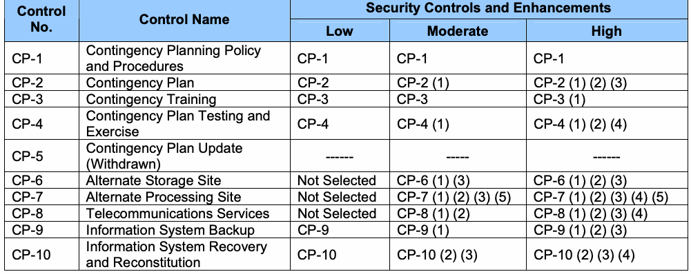
| 管理策番号 | 管理策名 | セキュリティ管理策および強化策 |
| 低／中／高 | ||
| CP-1 | 緊急時対応計画の方針および手順 | CP-1／CP-1／CP-1 |
| CP-2 | 緊急時対応計画 | CP-2／CP-2 (1)／CP-2 (1) (2) (3) |
| CP-3 | 緊急時対応訓練 | CP-3／CP-3／CP-3 (1) |
| CP-4 | 緊急時対応計画のテストおよび演習 | CP-4／CP-4 (1)／CP-4 (1) (2) (4) |
| CP-5 | 緊急時対応計画の更新（廃止） | ------／-----／------ |
| CP-6 | 代替保管サイト | 選択なし／CP-6 (1) (3)／CP-6 (1) (2) (3) |
| CP-7 | 代替処理サイト | 選択なし／CP-7 (1) (2) (3) (5)／CP-7 (1) (2) (3) (4) (5) |
| CP-8 | 通信サービス | 選択なし／CP-8 (1) (2)／CP-8 (1) (2) (3) (4) |
| CP-9 | 情報システムのバックアップ | CP-9／CP-9 (1)／CP-9 (1) (2) (3) |
| CP-10 | 情報システムの復旧および再構成 | CP-10／CP-10 (2) (3)／CP-10 (2) (3) (4) |
FAMILY: CONTINGENCY PLANNING CLASS: OPERATIONAL
ファミリー：緊急時対応計画 クラス：運用
未レビュー訳CP-1 CONTINGENCY PLANNING POLICY AND PROCEDURES
CP-1 緊急時対応計画の方針および手順
未レビュー訳Control: The organization develops, disseminates, and reviews/updates [Assignment: organization-defined frequency]:
管理策：組織は、[割当て：組織が定めた頻度]で次の文書を策定、配布、レビュー／更新する。
未レビュー訳a. A formal, documented contingency planning policy that addresses purpose, scope, roles, responsibilities, management commitment, coordination among organizational entities, and compliance; and b. Formal, documented procedures to facilitate the implementation of the contingency planning policy and associated contingency planning controls.
a. 目的、範囲、役割、責任、管理層の関与、組織内の各部門間の調整、遵守事項を扱う、正式かつ文書化された緊急時対応計画方針。 b. 緊急時対応計画方針および関連する緊急時対応計画管理策の実施を円滑にする、正式かつ文書化された手順。
未レビュー訳Supplemental Guidance: This control is intended to produce the policy and procedures that are required for the effective implementation of the security controls and control enhancements in the contingency planning family. The policy and procedures are consistent with applicable federal laws, Executive Orders, directives, policies, regulations, standards, and guidance. The contingency planning policy can be included as part of the general information security policy for the organization. Contingency planning procedures can be developed for the security program in general and for a particular information system, when required. The organizational risk management strategy is a key factor in the development of the contingency planning policy.
補足指針：この管理策は、緊急時対応計画ファミリーのセキュリティ管理策および強化策を効果的に実施するために必要な方針と手順を作成することを目的とする。方針と手順は、適用される連邦法、大統領令、指令、方針、規則、標準、指針に整合させる。緊急時対応計画方針は、組織の一般的な情報セキュリティ方針の一部にできる。必要に応じて、セキュリティプログラム全般向け、および個別の情報システム向けに手順を策定できる。組織のリスク管理戦略は、緊急時対応計画方針を策定するうえで重要な要素である。
未レビュー訳Control Enhancements: None.
管理策の強化策：なし。
| 低影響度 CP-1 | 中影響度 CP-1 | 高影響度 CP-1 |
CP-2 CONTINGENCY PLAN
CP-2 緊急時対応計画
未レビュー訳Control: The organization:
管理策：組織は次のことを行う。
未レビュー訳a. Develops a contingency plan for the information system that:
a. 情報システムの緊急時対応計画を策定する。この計画は次の要件を満たす。
未レビュー訳•Identifies essential mission and business processes and associated contingency requirements;
•重要なミッションおよび業務プロセスと、それらに関連する緊急時対応要件を特定する。
•Provides restoration priorities and metrics;
•復旧の優先順位と指標を定める。
•Addresses contingency roles, responsibilities, and assigned individuals with contact information;
•緊急時対応に関する役割、責任、および担当者（連絡先情報を含む）を定める。
•Addresses maintaining essential missions and business processes despite an information system disruption, compromise, or failure;
•情報システムの中断、侵害または障害が発生しても、重要なミッションおよび業務プロセスを維持する方法を定める。
未レビュー訳•Addresses eventual full information system restoration without deterioration of the security measures originally planned; and
•当初計画したセキュリティ対策を低下させずに、最終的に情報システムを完全復旧する方法を定める。
•Is reviewed and approved by designated officials within the organization;
•組織内の指定職員によるレビューおよび承認を受ける。
未レビュー訳b. Distributes copies of the contingency plan to [Assignment: organization-defined list of key contingency personnel and organizational elements, identified by name and/or by role];
b. 緊急時対応計画の写しを、[割当て：氏名または役割で特定した、緊急時対応の主要担当者および組織内の配布先一覧]に配布する。
未レビュー訳c. Coordinates contingency planning activities with incident handling activities;
c. 緊急時対応計画の活動をインシデント対応活動と調整する。
未レビュー訳d. Reviews the contingency plan for the information system [Assignment: organization-defined frequency];
d. 情報システムの緊急時対応計画を[割当て：組織が定めた頻度]でレビューする。
未レビュー訳e. Revises the contingency plan to address changes to the organization, information system, or environment of operation and problems encountered during contingency plan implementation, execution, or testing ; and
e. 組織、情報システムまたは運用環境の変更、および緊急時対応計画の実施、実行またはテスト中に発生した問題に対応するよう、緊急時対応計画を改訂する。
未レビュー訳f. Communicates contingency plan changes to [Assignment: organization-defined list of key contingency personnel and organizational elements, identified by name and/or by role].
f. 緊急時対応計画の変更を、[割当て：氏名または役割で特定した、緊急時対応の主要担当者および組織内の配布先一覧]に伝える。
未レビュー訳Supplemental Guidance: Contingency planning for information systems is part of an overall organizational program for achieving continuity of operations for mission/business operations. Contingency planning addresses both information system restoration and implementation of alternative mission/business processes when systems are compromised. Information system recovery objectives are consistent with applicable laws, Executive Orders, directives, policies, standards, or regulations. In addition to information system availability, contingency plans also address other security-related events resulting in a reduction in mission/business effectiveness, such as malicious attacks compromising the confidentiality or integrity of the information system. Examples of actions to call out in contingency plans include, for example, graceful degradation, information system shutdown, fallback to a manual mode, alternate information flows, or operating in a mode that is reserved solely for when the system is under attack.
補足指針：情報システムの緊急時対応計画は、ミッション／業務運用の継続を達成するための組織全体のプログラムの一部である。緊急時対応計画では、情報システムの復旧と、システムが侵害された場合に代替のミッション／業務プロセスを実施することの双方を扱う。情報システムの復旧目標は、適用される法律、大統領令、指令、方針、標準または規則と整合させる。緊急時対応計画では、情報システムの可用性に加えて、機密性または完全性を損なう悪意ある攻撃など、ミッション／業務の有効性を低下させるその他のセキュリティ関連事象も扱う。計画に記載する措置の例には、段階的な機能低下、情報システムの停止、手動モードへの切り替え、代替情報フロー、システムが攻撃を受けている場合に限って使用する運用モードがある。
Control Enhancements:
管理策の強化策：
(1) The organization coordinates contingency plan development with organizational elements responsible for related plans.
(1) 組織は、緊急時対応計画の策定を、関連計画を担当する組織内各部門と調整する。
Enhancement Supplemental Guidance: Examples of related plans include Business Continuity Plan, Disaster Recovery Plan, Continuity of Operations Plan, Crisis Communications Plan, Critical Infrastructure Plan, Cyber Incident Response Plan, and Occupant Emergency Plan.
強化策の補足指針：関連計画の例として、事業継続計画、災害復旧計画、業務継続計画、危機広報計画、重要インフラ計画、サイバーインシデント対応計画、施設緊急時対応計画がある。
APPENDIX E
付録 E
未レビュー訳E-2
E-2
未レビュー訳(2) The organization conducts capacity planning so that necessary capacity for information processing, telecommunications, and environmental support exists during contingency operations.
(2) 緊急時対応の実施中に、情報処理、通信、環境面の支援に必要な容量を確保できるよう、組織は容量計画を実施する。
未レビュー訳(3) The organization plans for the resumption of essential missions and business functions within [Assignment: organization-defined time period] of contingency plan activation.
(3) 緊急時対応計画の発動後、[割当て：組織が定めた期間]以内に重要なミッションおよび業務機能を再開できるよう計画する。
未レビュー訳(4) The organization plans for the full resumption of missions and business functions within [Assignment: organization-defined time period] of contingency plan activation.
(4) 緊急時対応計画の発動後、[割当て：組織が定めた期間]以内にミッションおよび業務機能を完全に再開できるよう計画する。
(5) The organization plans for the continuance of essential missions and business functions with little or no loss of operational continuity and sustains that continuity until full information system restoration at primary processing and/or storage sites.
(5) 運用の継続性をほとんど、またはまったく失うことなく重要なミッションおよび業務機能を継続し、主要な処理サイトおよび／または保管サイトで情報システムが完全に復旧するまで、その継続性を維持できるよう計画する。
(6) The organization provides for the transfer of all essential missions and business functions to alternate processing and/or storage sites with little or no loss of operational continuity and sustains that continuity through restoration to primary processing and/or storage sites.
(6) 運用の継続性をほとんど、またはまったく失うことなく、すべての重要なミッションおよび業務機能を代替処理サイトおよび／または保管サイトへ移し、主要な処理サイトおよび／または保管サイトで復旧するまで継続性を維持できるようにする。
未レビュー訳| 低影響度 CP-2 | 中影響度 CP-2 (1) | 高影響度 CP-2 (1) (2) (3) |
CP-3 CONTINGENCY TRAINING
CP-3 緊急時対応訓練
未レビュー訳Control: The organization trains personnel in their contingency roles and responsibilities with respect to the information system and provides refresher training [Assignment: organization-defined frequency].
管理策：組織は、情報システムに関する緊急時の役割と責任について要員を訓練し、[割当て：組織が定めた頻度]で再教育を行う。
Supplemental Guidance: None.
補足指針：なし。
Control Enhancements:
管理策の強化策：
(1) The organization incorporates simulated events into contingency training to facilitate effective response by personnel in crisis situations.
(1) 危機的状況で要員が効果的に対応できるよう、緊急時対応訓練に模擬事象を取り入れる。
(2) The organization employs automated mechanisms to provide a more thorough and realistic training environment.
(2) より充実した現実的な訓練環境を提供するため、自動化された仕組みを利用する。
| 低影響度 CP-3 | 中影響度 CP-3 | 高影響度 CP-3 (1) |
CP-4 CONTINGENCY PLAN TESTING AND EXERCISES
CP-4 緊急時対応計画のテストおよび演習
未レビュー訳Control: The organization:
管理策：組織は次のことを行う。
未レビュー訳a. Tests and/or exercises the contingency plan for the information system [Assignment: organization-defined frequency] using [Assignment: organization-defined tests and/or exercises] to determine the plan’s effectiveness and the organization’s readiness to execute the plan; and
a. [割当て：組織が定めたテストおよび／または演習]を使い、情報システムの緊急時対応計画を[割当て：組織が定めた頻度]でテストおよび／または演習し、計画の有効性と、組織が計画を実行する準備状況を判断する。
未レビュー訳b. Reviews the contingency plan test/exercise results and initiates corrective actions.
b. 緊急時対応計画のテスト／演習結果をレビューし、是正措置を開始する。
未レビュー訳Supplemental Guidance: There are several methods for testing and/or exercising contingency plans to identify potential weaknesses (e.g., checklist, walk-through/tabletop, simulation; parallel, full interrupt). Contingency plan testing and/or exercises include a determination of the effects on organizational
補足指針：チェックリスト、ウォークスルー／テーブルトップ、シミュレーション、並行テスト、全面中断テストなど、緊急時対応計画の潜在的な弱点を特定するテスト／演習方法がいくつかある。計画のテスト／演習では、計画に従った緊急対応が組織の
未レビュー訳APPENDIX E
付録 E
未レビュー訳operations and assets (e.g., reduction in mission capability) and individuals arising due to contingency operations in accordance with the plan.
原文更新後、再確認待ち
Control Enhancements:
管理策の強化策：
(1) The organization coordinates contingency plan testing and/or exercises with organizational elements responsible for related plans.
(1) 緊急時対応計画のテストおよび／または演習を、関連計画を担当する組織内各部門と調整する。
Enhancement Supplemental Guidance: Examples of related plans include Business Continuity Plan, Disaster Recovery Plan, Continuity of Operations Plan, Crisis Communications Plan, Critical Infrastructure Plan, Cyber Incident Response Plan, and Occupant Emergency Plan.
強化策の補足指針：関連計画の例として、事業継続計画、災害復旧計画、業務継続計画、危機広報計画、重要インフラ計画、サイバーインシデント対応計画、施設緊急時対応計画がある。
(2) The organization tests/exercises the contingency plan at the alternate processing site to familiarize contingency personnel with the facility and available resources and to evaluate the site’s capabilities to support contingency operations.
(2) 代替処理サイトで緊急時対応計画のテスト／演習を行い、緊急時対応要員に施設と利用可能な資源を習熟させるとともに、緊急時運用を支援するサイトの能力を評価する。
未レビュー訳(3) The organization employs automated mechanisms to more thoroughly and effectively test/exercise the contingency plan by providing more complete coverage of contingency issues, selecting more realistic test/exercise scenarios and environments, and more effectively stressing the information system and supported missions.
(3) 自動化された仕組みを利用し、緊急時対応上の問題をより広く網羅し、より現実的なテスト／演習シナリオと環境を選び、情報システムおよび支援対象のミッションにより有効な負荷をかけることで、緊急時対応計画をより徹底的かつ効果的にテスト／演習する。
(4) The organization includes a full recovery and reconstitution of the information system to a known [Selection: secure; safe] state as part of contingency plan testing.
(4) 緊急時対応計画のテストの一環として、情報システムを既知の[選択肢：セキュリティ確保済み；安全]な状態へ完全に復旧・再構成する。
未レビュー訳| 低影響度 CP-4 | 中影響度 CP-4 (1) | 高影響度 CP-4 (1) (2) (4) |
CP-6 ALTERNATE STORAGE SITE
CP-6 代替保管サイト
未レビュー訳Control: The organization establishes an alternate storage site including necessary agreements to permit the storage and recovery of information system backup information.
管理策：バックアップ情報を保管・復旧できるよう、必要な合意を含めた代替保管サイトを確保する。
未レビュー訳Supplemental Guidance: Related controls: CP-2, CP-9, MP-4.
補足指針：関連管理策：CP-2、CP-9、MP-4。
Control Enhancements:
管理策の強化策：
(1) The organization identifies an alternate storage site that is geographically separated from the primary storage site so as not to be susceptible to the same hazards.
(1) 主要保管サイトと地理的に離れ、同じ危険にさらされない代替保管サイトを特定する。
未レビュー訳(2) The organization configures the alternate storage site to facilitate recovery operations in accordance with recovery time and recovery point objectives.
(2) 復旧時間目標および目標復旧時点に従って復旧作業を円滑に行えるよう、代替保管サイトを構成する。
(3) The organization identifies potential accessibility problems to the alternate storage site in the event of an area-wide disruption or disaster and outlines explicit mitigation actions.
(3) 広域の中断または災害時に代替保管サイトへアクセスできなくなる可能性を特定し、明確な緩和措置を定める。
Enhancement Supplemental Guidance: Explicit mitigation actions include, for example, duplicating backup information at another alternate storage site if access to the first alternate site is hindered; or, if electronic accessibility to the alternate site is disrupted, planning for physical access to retrieve backup information.
強化策の補足指針：明確な緩和措置の例として、最初の代替サイトにアクセスできない場合に備え、別の代替保管サイトにもバックアップ情報を複製すること、または代替サイトへの電子的なアクセスが中断された場合に備え、バックアップ情報を取り出すための物理的なアクセス手段を計画することがある。
未レビュー訳| 低影響度：選択なし | 中影響度 CP-6 (1) (3) | 高影響度 CP-6 (1) (2) (3) |
APPENDIX E
付録 E
未レビュー訳E-4
E-4
未レビュー訳CP-7 ALTERNATE PROCESSING SITE
CP-7 代替処理サイト
未レビュー訳Control: The organization:
管理策：組織は次のことを行う。
未レビュー訳a. Establishes an alternate processing site including necessary agreements to permit the resumption of information system operations for essential missions and business functions within [Assignment: organization-defined time period consistent with recovery time objectives] when the primary processing capabilities are unavailable; and
a. 主要な処理能力が利用できない場合に、重要なミッションおよび業務機能を[割当て：目標復旧時間と整合する、組織が定めた期間]以内に再開できるよう、必要な合意を含めて代替処理サイトを確保する。
未レビュー訳b. Ensures that equipment and supplies required to resume operations within the organization-defined time period, are either available at the alternate site or contracts are in place to support delivery to the site in time to support the organization-defined time period for resumption.
b. 運用再開に必要な機器と備品を代替サイトで利用できるようにするか、組織が定めた期間内の運用再開を支援できるよう、サイトへの納入契約を締結する。
未レビュー訳Supplemental Guidance: Related control: CP-2.
補足指針：関連管理策：CP-2。
Control Enhancements:
管理策の強化策：
(1) The organization identifies an alternate processing site that is separated from the primary processing site so as not to be susceptible to the same hazards.
(1) 主要な処理サイトと離れた場所にあり、同じ危険にさらされない代替処理サイトを特定する。
Enhancement Supplemental Guidance: Hazards that might affect the information system are typically defined in the risk assessment.
強化策の補足指針：情報システムに影響する可能性のある危険は、通常リスク評価で定義する。
未レビュー訳(2) The organization identifies potential accessibility problems to the alternate processing site in the event of an area-wide disruption or disaster and outlines explicit mitigation actions.
(2) 広域の中断または災害時に代替処理サイトへアクセスできなくなる可能性を特定し、明確な緩和措置を定める。
(3) The organization develops alternate processing site agreements that contain priority-of-service provisions in accordance with the organization’s availability requirements.
(3) 組織の可用性要件に従った優先サービス条項を含む、代替処理サイトの合意を締結する。
(4) The organization fully configures the alternate processing site so that it is ready to be used as the operational site supporting essential missions and business functions.
(4) 代替処理サイトを完全に構成し、重要なミッションおよび業務機能を支援する運用サイトとして直ちに使用できる状態にする。
未レビュー訳(5) The organization ensures that the alternate processing site provides information security measures equivalent to that of the primary site.
(5) 代替処理サイトで、主要サイトと同等の情報セキュリティ対策が提供されるようにする。
| 低影響度：選択なし | 中影響度 CP-7 (1) (2) (3) (5) | 高影響度 CP-7 (1) (2) (3) (4) (5) |
CP-8 TELECOMMUNICATIONS SERVICES
CP-8 通信サービス
未レビュー訳Control: The organization establishes alternate telecommunications services including necessary agreements to permit the resumption of information system operations for essential missions and business functions within [Assignment: organization-defined time period] when the primary telecommunications capabilities are unavailable.
管理策：主要な通信能力が利用できない場合に、重要なミッションおよび業務機能の情報システム運用を[割当て：組織が定めた期間]以内に再開できるよう、必要な合意を含めて代替通信サービスを確保する。
Supplemental Guidance: Related control: CP-2.
補足指針：関連管理策：CP-2。
Control Enhancements:
管理策の強化策：
(1) The organization:
(1) 組織は次のことを行う。
APPENDIX E
付録 E
未レビュー訳E-5
E-5
未レビュー訳(a) Develops primary and alternate telecommunications service agreements that contain priority-of-service provisions in accordance with the organization’s availability requirements; and
(a) 組織の可用性要件に沿った優先サービス条項を含む、主要および代替通信サービスの契約を締結する。
未レビュー訳(b) Requests Telecommunications Service Priority for all telecommunications services used for national security emergency preparedness in the event that the primary and/or alternate telecommunications services are provided by a common carrier.
(b) 主要および／または代替通信サービスを共通通信事業者が提供する場合、国家安全保障緊急事態準備に用いるすべての通信サービスについて、通信サービス優先順位（TSP）を申請する。
未レビュー訳(2) The organization obtains alternate telecommunications services with consideration for reducing the likelihood of sharing a single point of failure with primary telecommunications services.
(2) 主要通信サービスと単一障害点を共有する可能性を下げることを考慮して、代替通信サービスを取得する。
(3) The organization obtains alternate telecommunications service providers that are separated from primary service providers so as not to be susceptible to the same hazards.
(3) 同じ危険にさらされないよう、主要サービス事業者と離れた場所にある代替通信サービス事業者を選定する。
未レビュー訳(4) The organization requires primary and alternate telecommunications service providers to have contingency plans.
(4) 主要および代替通信サービス事業者に緊急時対応計画を求める。
| 低影響度：選択なし | 中影響度 CP-8 (1) (2) | 高影響度 CP-8 (1) (2) (3) (4) |
CP-9 INFORMATION SYSTEM BACKUP
CP-9 情報システムのバックアップ
未レビュー訳Control: The organization:
管理策：組織は次のことを行う。
未レビュー訳a. Conducts backups of user-level information contained in the information system [Assignment: organization-defined frequency consistent with recovery time and recovery point objectives]; b. Conducts backups of system-level information (including system-state information) contained in the information system [Assignment: organization-defined frequency consistent with recovery time and recovery point objectives]; c. Conducts backups of information system documentation including security-related documentation [Assignment: organization-defined frequency consistent with recovery time and recovery point objectives]; and d. Protects the confidentiality and integrity of backup information at the storage location.
a. 情報システムに含まれるユーザーレベルの情報を、[割当て：RTOおよびRPOと整合する、組織が定めた頻度]でバックアップする。 b. 情報システムに含まれるシステムレベルの情報（システム状態情報を含む）を、[割当て：RTOおよびRPOと整合する、組織が定めた頻度]でバックアップする。 c. 情報システムの文書（セキュリティ関連文書を含む）を、[割当て：RTOおよびRPOと整合する、組織が定めた頻度]でバックアップする。 d. 保管場所にあるバックアップ情報の機密性と完全性を保護する。
未レビュー訳Supplemental Guidance: System-level information includes, for example, system-state information, operating system and application software, and licenses. Digital signatures and cryptographic hashes are examples of mechanisms that can be employed by organizations to protect the integrity of information system backups. An organizational assessment of risk guides the use of encryption for protecting backup information. The protection of system backup information while in transit is beyond the scope of this control. Related controls: CP-6, MP-4.
補足指針：システムレベルの情報には、システム状態情報、オペレーティングシステムとアプリケーションソフトウェア、ライセンスなどがある。デジタル署名や暗号学的ハッシュは、情報システムのバックアップの完全性を保護するために組織が使用できる仕組みの例である。バックアップ情報を保護するための暗号化の利用は、組織のリスク評価に基づいて判断する。転送中のシステムバックアップ情報の保護は、この管理策の対象外である。関連管理策：CP-6、MP-4。
未レビュー訳Control Enhancements:
管理策の強化策：
(1) The organization tests backup information [Assignment: organization-defined frequency] to verify media reliability and information integrity.
(1) [割当て：組織が定めた頻度]でバックアップ情報をテストし、媒体の信頼性と情報の完全性を確認する。
(2) The organization uses a sample of backup information in the restoration of selected information system functions as part of contingency plan testing.
(2) 緊急時対応計画のテストの一環として、選択した情報システム機能の復旧にバックアップ情報のサンプルを使用する。
未レビュー訳(3) The organization stores backup copies of the operating system and other critical information system software, as well as copies of the information system inventory (including hardware,
(3) オペレーティングシステムおよびその他の重要な情報システムソフトウェアのバックアップコピーと、情報システムの資産一覧（ハードウェア、
未レビュー訳APPENDIX E
付録 E
未レビュー訳software, and firmware components) in a separate facility or in a fire-rated container that is not collocated with the operational system.
原文更新後、再確認待ち
(4) [Withdrawn: Incorporated into CP-9].
(4) [廃止：CP-9 に統合。]
未レビュー訳(5) The organization transfers information system backup information to the alternate storage site [Assignment: organization-defined transfer rate consistent with the recovery time and recovery point objectives].
(5) [割当て：RTOおよびRPOと整合する、組織が定めた転送速度]で、情報システムのバックアップ情報を代替保管サイトに転送する。
(6) The organization accomplishes information system backup by maintaining a redundant secondary system, not collocated, that can be activated without loss of information or disruption to the operation.
(6) 同じ場所にない冗長なセカンダリシステムを維持することで情報システムをバックアップする。このシステムは、情報の喪失や運用の中断を起こさずに起動できるものとする。
| 低影響度 CP-9 | 中影響度 CP-9 (1) | 高影響度 CP-9 (1) (2) (3) |
CP-10 INFORMATION SYSTEM RECOVERY AND RECONSTITUTION
CP-10 情報システムの復旧および再構成
未レビュー訳Control: The organization provides for the recovery and reconstitution of the information system to a known state after a disruption, compromise, or failure.
管理策：中断、侵害または障害の後に情報システムを既知の状態へ復旧・再構成できるようにする。
未レビュー訳Supplemental Guidance: Recovery and reconstitution to a known secure state means that all system parameters (default or organization-established) are set to secure values, security-critical patches are reinstalled, security-related configuration settings are reestablished, system documentation and operating procedures are available, application and system software is reinstalled and configured with secure settings, information from the most recent, known secure backups is loaded, and the system is fully tested. The information system recovery and reconstitution capability employed by the organization is based on organizational priorities, established recovery point/time and reconstitution objectives, and appropriate metrics. The recovery and reconstitution includes the deactivation of any information systems located at the relocation site. Deactivation is the process of finalizing the system recovery and validation operations and includes the necessary activities to prepare the system against another outage or disruption. The recovery and reconstitution capability employed by the organization can be a combination of automated mechanisms and manual procedures.
補足指針：既知の安全な状態への復旧・再構成とは、すべてのシステムパラメーター（既定値または組織が定めた値）が安全な値に設定されていること、セキュリティ上重要なパッチが再適用されていること、セキュリティ関連の構成設定が再設定されていること、システム文書と運用手順が利用できること、アプリケーションおよびシステムソフトウェアが安全な設定で再インストール・構成されていること、最新の既知の安全なバックアップから情報が読み込まれていること、システム全体のテストが完了していることを意味する。組織が採用する情報システムの復旧・再構成能力は、組織の優先順位、設定済みのRPO・RTOおよび再構成目標、適切な指標に基づく。復旧・再構成には、移転先サイトにある情報システムの解除も含まれる。解除とは、システムの復旧および妥当性確認作業を完了し、次の停止または中断に備えるために必要な活動を行うプロセスである。組織が採用する復旧・再構成能力は、自動化された仕組みと手作業による手順を組み合わせたものとすることができる。
Control Enhancements:
管理策の強化策：
(1) [Withdrawn: Incorporated into CP-4].
(1) [廃止：CP-4 に統合。]
(2) The organization implements transaction recovery for information systems that are transaction-based.
(2) トランザクションベースの情報システムに対して、トランザクション復旧を実施する。
未レビュー訳Enhancement Supplemental Guidance: Database management systems and transaction-processing systems are examples of information systems that are transaction-based. Transaction rollback and transaction journaling are examples of mechanisms supporting transaction recovery.
強化策の補足指針：データベース管理システムやトランザクション処理システムは、トランザクションベースの情報システムの例である。トランザクションのロールバックやジャーナリングは、トランザクション復旧を支援する仕組みの例である。
未レビュー訳(3) The organization provides compensating security controls for [Assignment: organization-defined circumstances that inhibit recovery to a known, secure state].
(3) [割当て：既知の安全な状態への復旧を妨げる、組織が定めた状況]に対して、代替となるセキュリティ管理策を設ける。
未レビュー訳(4) The organization provides the capability to re-image information system components in accordance with [Assignment: organization defined restoration time-periods] from configuration-controlled and integrity-protected disk images representing a secure operational state for the components.
(4) 構成管理され完全性が保護された、コンポーネントの安全な運用状態を表すディスクイメージから、[割当て：組織が定めた復元期間]に従って情報システムのコンポーネントを再イメージ化できる機能を提供する。
未レビュー訳APPENDIX E
付録 E
未レビュー訳E-7
E-7
未レビュー訳(5) The organization provides [Selection: real-time; near real-time] [Assignment: organization-defined failover capability for the information system].
(5) 組織は、[選択：リアルタイム；ほぼリアルタイム]の[割当：組織が定義する情報システムのフェイルオーバー機能]を提供する。
未レビュー訳Enhancement Supplemental Guidance: Examples of failover capability are incorporating mirrored information system operations at an alternate processing site or periodic data mirroring at regular intervals during a time period defined by the organization's restoration time period.
強化策の補足指針：フェイルオーバー機能の例として、代替処理サイトで情報システムの運用をミラーリングする方法や、組織が定めた復元期間内に定期的な間隔でデータをミラーリングする方法がある。
(6) The organization protects backup and restoration hardware, firmware, and software.
(6) 組織は、バックアップおよび復元に使用するハードウェア、ファームウェア、ソフトウェアを保護する。
Enhancement Supplemental Guidance: Protection of backup and restoration hardware, firmware, and software includes both physical and technical measures. Router tables, compilers, and other security-relevant system software are examples of backup and restoration software.
強化策の補足ガイダンス：バックアップおよび復元に使用するハードウェア、ファームウェア、ソフトウェアの保護には、物理的対策と技術的対策の両方が含まれる。ルーターのテーブル、コンパイラー、その他のセキュリティ関連システムソフトウェアは、バックアップおよび復元用ソフトウェアの例である。
未レビュー訳| 低 CP-10 | 中 CP-10 (2) (3) | 高 CP-10 (2) (3) (4) |
APPENDIX E
付録E
未レビュー訳E-8
E-8
未レビュー訳Appendix F—Contingency Planning and the System Development Life Cycle (SDLC)
付録F—緊急時対応計画とシステム開発ライフサイクル（SDLC）
未レビュー訳The system development life cycle (SDLC) refers to the full scope of activities conducted by federal information system owners associated with a system during its life span. The life cycle, depicted in Figure F-1, begins with Initiation and ends with Disposition.47 Although contingency planning is associated with activities occurring mostly in the Operation/Maintenance phase, identification and integration of contingency and continuity strategies at all phases of the information system life cycle allow the owner to build layered protection against risks and assist implementation of effective recovery strategies early on in the system development. This approach reduces overall contingency planning costs, enhances contingency capabilities, and reduces impacts to system operations when the contingency plan is implemented. This section introduces common ways in which contingency strategies can be incorporated throughout the SDLC. A summary of implementation periods for CP controls throughout the SDLC is provided in Table F-1. For a specific description of contingency activities and strategies, see Chapter 5, Technical Contingency Planning Considerations.
システム開発ライフサイクル（SDLC）とは、連邦政府の情報システム所有者が、システムのライフスパン全体にわたって実施する活動の総体を指す。図F-1に示すライフサイクルは、開始から廃止まで続く。47 緊急時対応計画に関連する活動の多くは運用・保守フェーズで行われるが、情報システムのライフサイクル全体の各フェーズで緊急時対応および継続性の戦略を特定し、統合することで、所有者はリスクに対する多層防御を構築し、システム開発の早い段階で効果的な復旧戦略を実施できる。この方法により、緊急時対応計画全体のコストが削減され、対応能力が向上し、計画実施時のシステム運用への影響が軽減される。本節では、SDLC全体に緊急時対応戦略を組み込む一般的な方法を紹介する。SDLC全体におけるCP管理策の実装時期の概要を表F-1に示す。緊急時対応活動と戦略の詳細は、第5章「技術的な緊急時対応計画に関する考慮事項」を参照。
未レビュー訳| 開発／取得 | 開発／取得 |
ADceqveuliospitmioenn/ t/ System is designed, purchased, programmed, DAceqveuliospitmioennt developed, or otherwise constructed. This phase often consists of other defined cycles, such as the system development cycle or the acquisition cycle.
開発／取得：システムを設計、購入、プログラミング、開発、またはその他の方法で構築する。このフェーズは、システム開発サイクルや取得サイクルなど、別途定められた他のサイクルで構成されることが多い。
未レビュー訳Thhee nneeeedd for aa ssyysstem is expressed annd tthee sysstemm purposse aand hhigh-level requirements are documented.
システムの必要性が示され、システムの目的および高レベルの要件が文書化される。
未レビュー訳Implementation
実装
未レビュー訳Initiation
開始
未レビュー訳//AAsssseessssmmeenntt
評価
未レビュー訳After initial system testing, the system is installed or fielded.
初期システム試験の後、システムを設置または展開する。
未レビュー訳| 運用 | ・保守 |
SDuisnpsoestal (Disposition)
廃止
未レビュー訳Systeem perrfoorms thee work
システムが所定の業務を実行する。
未レビュー訳Syysteem iiss disspooseed off oncce thee
システムは、
未レビュー訳for wwhicch it waas
そのために
未レビュー訳ttrraannssiittiioonn ttoo aa nneeww ccoommppuutteer
新しいコンピューターへ移行し、
未レビュー訳ddeevveellooppeedd..
開発された
未レビュー訳system is completed.
作業が完了した時点で廃止される。
未レビュー訳Figure F-1: System Development Life Cycle
図F-1：システム開発ライフサイクル
未レビュー訳Initiation Phase. Contingency planning requirements should be considered when a new information system is conceived. During Initiation, early contingency planning considerations may become apparent as information system requirements are identified and matched to their related operational functions, a risk assessment is conducted to understand what the system will need protection against, and confidentiality, integrity, and availability objectives are set. High information system availability requirements may indicate that redundant, real-time mirroring at an alternate site and failover capabilities should be built into the system design. Similarly, if the system is intended as a virtual application, the design may need to include additional features, such as remote diagnostic or self-healing capabilities.
開始フェーズ。新しい情報システムを構想する際には、緊急時対応計画の要件を検討する。開始フェーズでは、情報システム要件を特定して関連する運用機能と対応付け、システムがどのような脅威から保護される必要があるかを理解するためのリスク評価を実施し、機密性、完全性、可用性の目標を設定する過程で、初期段階の緊急時対応計画に関する考慮事項が明らかになることがある。高い可用性が求められる情報システムでは、代替サイトでの冗長なリアルタイムミラーリングやフェイルオーバー機能をシステム設計に組み込む必要がある。システムを仮想アプリケーションとして使用する場合も、リモート診断や自己修復機能などを設計に追加する必要がある。
未レビュー訳47 There are several models of the system development life cycle. The model used for this document is consistent with NIST Special Publication 800-64, Rev. 1, Security Considerations in the Information System Development Life Cycle.
47 システム開発ライフサイクルには複数のモデルがある。本書で使用するモデルは、NIST Special Publication 800-64 Rev.1「情報システム開発ライフサイクルにおけるセキュリティ上の考慮事項」と整合している。
未レビュー訳APPENDIX F
付録F
未レビュー訳F-1
F-1
未レビュー訳During the Initiation, the mission/business processes that the new information system will support should be evaluated to determine the users’ recovery time requirements.
開始フェーズでは、新しい情報システムが支援するミッション／業務プロセスを評価し、利用者の復旧時間要件を決定する。
未レビュー訳Contingency Planning controls to be addressed during this phase include: (cid:131) CP 1: Contingency Planning Policy and Procedures; (cid:131) CP 6: Alternate Storage Site; (cid:131) CP 7: Alternate Processing Site; (cid:131) CP 8: Telecommunications Services; and (cid:131) CP 9: Information System Backup.
このフェーズで対処する緊急時対応計画管理策： • CP 1：緊急時対応計画のポリシーおよび手順 • CP 6：代替保管サイト • CP 7：代替処理サイト • CP 8：通信サービス • CP 9：情報システムのバックアップ
未レビュー訳Development/Acquisition Phase. As initial concepts evolve into information system development, specific contingency solutions may be determined. As in the Initiation phase, technical contingency planning considerations in this phase should reflect system and operational requirements. The design should incorporate redundancy and robustness directly into the system architecture to optimize reliability, maintainability, and availability during the later Operation/Maintenance phase. By considering the recovery strategy during the initial design, costs are reduced and problems associated with retrofitting or modifying the system during the Operation/Maintenance phase are minimized. Security controls are refined during the Development/Acquisition phase, lending an opportunity to ensure that contingency planning controls are appropriately addressed by the recovery strategy. If multiple applications are hosted within the new information system, recovery priority sequence for those applications should be set to assist with selecting the appropriate recovery strategy and sequencing for the contingency plan implementation. Examples of contingency measures that should be considered in this phase are redundant communications paths, elimination of single points of failure, enhanced fault tolerance of network components and interfaces, power management systems with appropriately sized backup power sources, load balancing, and data mirroring and replication to ensure a uniformly robust system. If a recovery site is chosen as part of the strategy, requirements for the alternate site should be addressed in this phase.
開発／取得フェーズ。初期構想が情報システムの開発へ進むにつれ、具体的な緊急時対応策を決定できるようになる。開始フェーズと同様に、このフェーズの技術的な緊急時対応計画では、システム要件と運用要件を反映する。後の運用・保守フェーズにおける信頼性、保守性、可用性を最適化できるよう、冗長性と堅牢性をシステムアーキテクチャに直接組み込む。初期設計時に復旧戦略を検討すると、コストが削減され、運用・保守フェーズにおける改修や変更に伴う問題を最小限に抑えられる。開発／取得フェーズではセキュリティ管理策が改良されるため、復旧戦略で緊急時対応計画の管理策が適切に扱われていることを確認できる。新しい情報システムに複数のアプリケーションをホストする場合は、適切な復旧戦略と緊急時対応計画の実施順序を選べるよう、アプリケーションの復旧優先順位を設定する。このフェーズで検討すべき緊急時対応策には、通信経路の冗長化、単一障害点の排除、ネットワーク構成要素とインターフェースの耐障害性向上、適切な容量のバックアップ電源を備えた電源管理システム、負荷分散、システム全体の堅牢性を確保するためのデータのミラーリングとレプリケーションなどがある。復旧サイトを戦略の一部として選択する場合は、このフェーズで代替サイトの要件に対処する。
未レビュー訳Contingency Planning controls to be addressed during this phase include: (cid:131) CP 6: Alternate Storage Site; (cid:131) CP 7: Alternate Processing Site; (cid:131) CP 8: Telecommunications Services; and (cid:131) CP 9: Information System Backup.
このフェーズで対処する緊急時対応計画管理策： • CP 6：代替保管サイト • CP 7：代替処理サイト • CP 8：通信サービス • CP 9：情報システムのバックアップ
未レビュー訳Implementation/Assessment Phase. The recovery strategy selected is now documented into the formal Information System Contingency Plan in coordination with the System Test and Evaluation (ST&E) effort. As the system undergoes an initial testing, contingency strategies also should be exercised to resolve any issues with the procedures. Exercise results may prompt modifications to the recovery procedures and the contingency plan.
実装／評価フェーズ。選択した復旧戦略を、システム試験・評価（ST&E）と連携し、正式な情報システム緊急時対応計画に記録する。システムの初期試験中に、手順の問題を解決するため緊急時対応戦略も演習する。演習結果を受けて、復旧手順や緊急時対応計画を変更する場合がある。
未レビュー訳Contingency Planning controls to be addressed during this phase include: (cid:131) CP 2: Contingency Plan; (cid:131) CP 3: Contingency Training; and (cid:131) CP 4: Contingency Plan Testing and Exercise.
このフェーズで対処する緊急時対応計画管理策： • CP 2：緊急時対応計画 • CP 3：緊急時対応訓練 • CP 4：緊急時対応計画の試験と演習
未レビュー訳Operation/Maintenance Phase. When the information system is operational, users, administrators, and managers should maintain a test, training, and exercise program which continually validates the
運用／保守フェーズ。情報システムの運用開始後、利用者、管理者、マネージャーは、次の事項を継続的に検証する試験・訓練・演習プログラムを維持する。
未レビュー訳APPENDIX F
付録F
未レビュー訳contingency plan procedures and technical recovery strategy. Exercises and tests should be conducted on a scheduled basis to ensure that procedures continue to be effective. Full and incremental backups should be routinely conducted, stored offsite, rotated, and periodically validated. The contingency plan should be updated to reflect changes to procedures based on lessons learned from tests, exercises, and actual disruptions. When the information system undergoes upgrades or other modifications, such as changes to external interfaces, these modifications should be reflected in the contingency plan. Coordinating and documenting changes in the plan should be performed in a timely manner to maintain an effective plan.
原文更新後、再確認待ち
Contingency Planning controls to be addressed during this phase include: (cid:131) CP 2 Contingency Plan; (cid:131) CP 3: Contingency Training; (cid:131) CP 4: Contingency Plan Testing and Exercise; (cid:131) CP 9: Information System Backup; and (cid:131) CP 10: Information System Recovery and Reconstitution.
このフェーズで対処する緊急時対応計画管理策： • CP 2：緊急時対応計画 • CP 3：緊急時対応訓練 • CP 4：緊急時対応計画の試験と演習 • CP 9：情報システムのバックアップ • CP 10：情報システムの復旧と再構成
未レビュー訳Disposal Phase. Contingency considerations should not be neglected because an information system is retired and another system replaces it. Until the new system is operational and fully tested (including its contingency capabilities), the original system’s ISCP should be maintained in a ready state for implementation. As legacy systems are replaced, they may provide a valuable capability as a redundant system if a loss or failure of the new information system should occur. In some cases, equipment parts (e.g., hard drives, power supplies, memory chips, or network cards) from hardware that has been replaced can be used as spare parts for new operational equipment. In addition, legacy information systems can be used as test systems for new applications, allowing potentially disruptive system flaws to be identified and corrected in a nonproduction environment.
廃止フェーズ。情報システムを廃止して別のシステムに置き換える場合も、緊急時対応に関する考慮事項を無視してはならない。新システムが稼働し、緊急時対応機能を含む完全な試験が完了するまで、旧システムのISCPはすぐに実施できる状態で維持する。旧システムは、新しい情報システムの損失や故障に備えた冗長システムとして有用な機能を提供する場合がある。交換したハードウェアの部品（ハードドライブ、電源、メモリーチップ、ネットワークカードなど）を、新しい運用機器の予備部品として再利用できる場合もある。また、旧情報システムを新しいアプリケーションの試験システムとして使用し、本番環境以外で、運用に支障をきたす可能性のあるシステム上の欠陥を特定して修正できる。
未レビュー訳Contingency Planning controls to be addressed during this phase include: (cid:131) CP 2 Contingency Plan; (cid:131) CP 9: Information System Backup; and (cid:131) CP 10: Information System Recovery and Reconstitution.
このフェーズで対処する緊急時対応計画管理策： • CP 2：緊急時対応計画 • CP 9：情報システムのバックアップ • CP 10：情報システムの復旧と再構成
未レビュー訳APPENDIX F
付録F
未レビュー訳F-3
F-3
未レビュー訳Table F-1: CP Control Implementation in the SDLC
表F-1：SDLCにおけるCP管理策の実装
未レビュー訳| Control No. | Control Name | Initiation Phase | Acquisition / | Implementation / | Operation/ | Sunset |
| Development | Assessment | Maintenance | ||||
| Phase | Phase | Phase | ||||
| CP-1 | Contingency Planning Policy and Procedures | X | ||||
| CP-2 | Contingency Plan | X | X | X | ||
| CP-3 | Contingency Training | X | X | |||
| CP-4 | Contingency Plan Testing and Exercise | X | X | |||
| CP-5 | Contingency Plan Update (Withdrawn) | ------ | ------ | ------ | ------ | ------ |
| CP-6 | Alternate Storage Site | X | X | |||
| CP-7 | Alternate Processing Site | X | X | |||
| CP-8 | Telecommunica- tions Services | X | X | |||
| CP-9 | Information System Backup | X | X | X | X | |
| CP-10 | Information System Recovery and Reconstitution | X | X |
原本PDFの抜粋画像
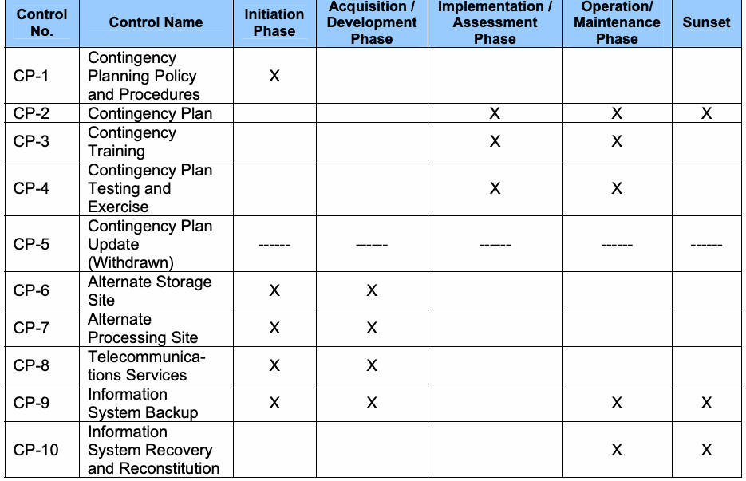
| 管理策番号 | 管理策名 | 開始フェーズ | 取得／ | 実装／ | 運用／ | 廃止 |
| 開発フェーズ | 評価フェーズ | 保守フェーズ | ||||
| フェーズ | フェーズ | フェーズ | ||||
| CP-1 | 緊急時対応計画のポリシーおよび手順 | X | ||||
| CP-2 | 緊急時対応計画 | X | X | X | ||
| CP-3 | 緊急時対応訓練 | X | X | |||
| CP-4 | 緊急時対応計画の試験と演習 | X | X | |||
| CP-5 | 緊急時対応計画の更新（撤回済み） | ------ | ------ | ------ | ------ | ------ |
| CP-6 | 代替保管サイト | X | X | |||
| CP-7 | 代替処理サイト | X | X | |||
| CP-8 | 通信サービス | X | X | |||
| CP-9 | 情報システムのバックアップ | X | X | X | X | |
| CP-10 | 情報システムの復旧と再構成 | X | X |
原本PDFの抜粋画像
原本PDFの抜粋画像
APPENDIX F
付録F
未レビュー訳F-4
F-4
未レビュー訳Appendix G—Glossary
付録G—用語集
未レビュー訳This appendix provides definitions for terminology used within Special Publication 800-34. The terms in the glossary are consistent with the terms used in the suite of FISMA-related security standards and guidelines developed by NIST.
本付録では、Special Publication 800-34で使用する用語を定義する。この用語集の用語は、NISTが策定したFISMA関連の一連のセキュリティ標準およびガイドラインで使用されている用語と整合している。
Backup:
バックアップ：
未レビュー訳A copy of files and programs made to facilitate recovery if necessary.
必要に応じた復旧を容易にするために作成する、ファイルおよびプログラムの複製。
未レビュー訳Business Continuity Plan (BCP): The documentation of a predetermined set of instructions or
事業継続計画（BCP）：事前に定めた一連の指示または
未レビュー訳procedures that describe how an organization’s mission/business processes will be sustained during and after a significant disruption.
手順を文書化したもの。組織のミッション／業務プロセスを重大な中断の発生中および発生後にどのように維持するかを記述する。
未レビュー訳Business Impact Analysis (BIA): An analysis of an information system’s requirements, functions,
事業影響分析（BIA）：情報システムの要件、機能、
未レビュー訳and interdependencies used to characterize system contingency requirements and priorities in the event of a significant disruption.
および相互依存関係を分析し、重大な中断時のシステムの緊急時対応要件と優先順位を明らかにする。
未レビュー訳Cold Site:
コールドサイト：
未レビュー訳A backup facility that has the necessary electrical and physical components of a computer facility, but does not have the computer equipment in place. The site is ready to receive the necessary replacement computer equipment in the event that the user has to move from their main computing location to an alternate site.
コンピューター施設に必要な電源設備と物理的構成要素を備えているが、コンピューター機器を設置していないバックアップ施設。利用者が主たるコンピューター設置場所から代替サイトへ移転する必要が生じた場合に、必要な交換用コンピューター機器を受け入れられる状態にある。
未レビュー訳Computer:
コンピューター：
未レビュー訳A device that accepts digital data and manipulates the information based on a program or sequence of instructions for how data is to be processed.
デジタルデータを受け取り、データの処理方法を定めたプログラムまたは一連の命令に基づいて情報を操作する装置。
未レビュー訳Contingency Planning:
緊急時対応計画：
未レビュー訳See Information System Contingency Plan.
「情報システム緊急時対応計画」を参照。
未レビュー訳Continuity of Operations (COOP) Plan: A predetermined set of instructions or procedures that describe
業務継続（COOP）計画：組織のミッション必須機能を維持するため、事前に定めた一連の指示または手順を記述した計画。
未レビュー訳how an organization’s mission essential functions will be sustained within 12 hours and for up to 30 days as a result of a disaster event before returning to normal operations.
災害発生後、通常運用へ戻るまでの間、当該機能を12時間以内に再開し、最大30日間維持する。
未レビュー訳Disaster Recovery Plan (DRP):
災害復旧計画（DRP）：
未レビュー訳A written plan for recovering one or more information systems at an alternate facility in response to a major hardware or software failure or destruction of facilities.
重大なハードウェア障害、ソフトウェア障害、または施設の破壊に対応して、代替施設で1つ以上の情報システムを復旧するための文書化された計画。
未レビュー訳Disruption:
中断：
未レビュー訳An unplanned event that causes an information system to be inoperable for a length of time (e.g., minor or extended power outage, extended unavailable network, or equipment or facility damage or destruction).
情報システムを一定期間運用不能にする予定外の事象（短時間または長時間の停電、ネットワークの長時間利用不能、機器や施設の損傷・破壊など）。
未レビュー訳Hot Site:
ホットサイト：
未レビュー訳A fully operational offsite data processing facility equipped with hardware and software, to be used in the event of an information system disruption.
情報システムの中断時に使用する、ハードウェアとソフトウェアを備え、完全に運用可能なオフサイトのデータ処理施設。
未レビュー訳APPENDIX G
付録G
未レビュー訳G-1
G-1
未レビュー訳Impact:
影響：
未レビュー訳The magnitude of harm that can be expected to result from the
次の結果から予想される被害の大きさ：
未レビュー訳(NIST SP 800-60)
（NIST SP 800-60）
未レビュー訳consequences of unauthorized disclosure of information, unauthorized modification of information, unauthorized destruction of information, or loss of information or information system availability.
情報の不正な開示、不正な変更、不正な破壊、または情報もしくは情報システムの可用性喪失。
未レビュー訳Impact Level:
影響レベル：
未レビュー訳High, Moderate, or Low security categories of an information system established in FIPS 199 which classify the intensity of a potential impact that may occur if the information system is jeopardized.
FIPS 199で定める情報システムのセキュリティカテゴリ（高、中、低）。情報システムが侵害された場合に生じ得る影響の強さを分類する。
未レビュー訳Incident Response Plan:
インシデント対応計画：
未レビュー訳The documentation of a predetermined set of instructions or procedures to detect, respond to, and limit consequences of a malicious cyber attacks against an organization’s information system(s).
組織の情報システムに対する悪意あるサイバー攻撃を検知し、対応し、その影響を限定するための一連の指示または手順を事前に定めた文書。
未レビュー訳Information System:
情報システム：
未レビュー訳A discrete set of resources organized for the collection,
情報の収集、
未レビュー訳(44 U.S.C., Sec 3502)
（合衆国法典第44編第3502条）
未レビュー訳processing, maintenance, use, sharing, dissemination, or disposition of information.
処理、保守、利用、共有、配布、または廃棄のために編成された個別のリソース群。
未レビュー訳Information System Contingency Management policy and procedures designed to maintain or Plan (ISCP):
情報システム緊急時対応計画（ISCP）：事業運用（コンピューター運用を含む）を維持または
未レビュー訳restore business operations, including computer operations, possibly at an alternate location, in the event of emergencies, system failures, or disasters.
緊急事態、システム障害、災害時に、代替拠点での運用も含めて復旧するためのポリシーおよび手順。
未レビュー訳Maximum Tolerable Downtime: The amount of time mission/business process can be disrupted
最大許容停止時間：ミッション／業務プロセスが中断しても、
未レビュー訳without causing significant harm to the organization’s mission.
組織のミッションに重大な損害が生じない範囲の時間。
未レビュー訳Reciprocal Agreement:
相互協定：
未レビュー訳An agreement that allows two organizations to back up each other.
2つの組織が互いに相手のバックアップを担うことを認める協定。
未レビュー訳Recovery Point Objective:
目標復旧時点（RPO）：
未レビュー訳The point in time to which data must be recovered after an outage.
停止後にデータをどの時点まで復旧させる必要があるかを示す時点。
未レビュー訳Recovery Time Objective:
目標復旧時間（RTO）：
未レビュー訳The overall length of time an information system’s components can be in the recovery phase before negatively impacting the organization’s mission or mission/business processes.
情報システムの構成要素が復旧段階にとどまることができる全期間。これを超えると、組織のミッションまたはミッション／業務プロセスに悪影響が及ぶ。
未レビュー訳Resilience:
レジリエンス：
未レビュー訳The ability to quickly adapt and recover from any known or unknown changes to the environment through holistic implementation of risk management, contingency, and continuity planning.
リスク管理、緊急時対応計画、継続計画を包括的に実施し、既知または未知の環境変化に迅速に適応して復旧する能力。
未レビュー訳Risk Management:
リスク管理：
未レビュー訳The process of managing risks to agency operations (including
政府機関の業務に関するリスクを管理するプロセス（次を含む：
未レビュー訳(NIST SP 800-53)
（NIST SP 800-53）
未レビュー訳mission, functions, image, or reputation), agency assets, or individuals resulting from the operation of an information system. It includes risk assessment; cost-benefit analysis; the selection, implementation, and assessment of security controls; and the formal authorization to operate the system. The process considers effectiveness, efficiency, and constraints due to laws, directives, policies, or regulations.
ミッション、機能、イメージまたは評判）、政府機関の資産、あるいは情報システムの運用に起因して個人に及ぶ影響を含む。リスク管理には、リスク評価、費用便益分析、セキュリティ管理策の選択・実施・評価、およびシステム運用の正式な承認が含まれる。また、有効性、効率性、法律、指令、ポリシー、規制による制約を考慮する。
未レビュー訳APPENDIX G
付録G
未レビュー訳G-2
G-2
未レビュー訳Security Controls:
セキュリティ管理策：
未レビュー訳The management, operational, and technical controls (i.e.,
情報システムの機密性、完全性、可用性および情報を保護するために規定された、管理的、運用的、技術的な管理策（すなわち、
未レビュー訳(FIPS 199)
（FIPS 199）
未レビュー訳safeguards or countermeasures) prescribed for an information system to protect the confidentiality, integrity, and availability of the system and its information.
安全対策または対抗策）。
未レビュー訳System Development Life Cycle The scope of activities associated with a system, encompassing (SDLC):
システム開発ライフサイクル（SDLC）：システムに関連する活動の範囲を指し、
未レビュー訳the system’s initiation, development and acquisition, implementation, operation and maintenance, and ultimately its disposal that instigates another system initiation.
システムの開始、開発・取得、実装、運用・保守、そして最終的な廃止までを含む。廃止によって、次のシステムの開始が始まる。
未レビュー訳Warm Site:
ウォームサイト：
未レビュー訳An environmentally conditioned work space that is partially equipped with information systems and telecommunications equipment to support relocated operations in the event of a significant disruption.
重大な中断時に移転先での運用を支援するため、情報システム機器および通信機器を部分的に備え、環境が整えられた作業スペース。
未レビュー訳APPENDIX G
付録G
未レビュー訳G-3
G-3
未レビュー訳Appendix H—Acronyms
付録H—略語
未レビュー訳Selected acronyms used in the Contingency Planning Guide for Federal Information Systems are defined below. ATM
連邦情報システムのための緊急時対応計画ガイドで使用されている主な略語を以下に定義する。ATM
未レビュー訳Asynchronous Transfer Mode
非同期転送モード
未レビュー訳BCP
BCP
未レビュー訳Business Continuity Plan
事業継続計画
未レビュー訳BIA
BIA
未レビュー訳Business Impact Analysis
事業影響分析
未レビュー訳CIKR
CIKR
未レビュー訳Critical Infrastructure And Key Resources
重要インフラおよび主要資源
未レビュー訳CIO
CIO
未レビュー訳Chief Information Officer
最高情報責任者
未レビュー訳CIP
CIP
未レビュー訳Critical Infrastructure Protection
重要インフラ保護
未レビュー訳CISO
CISO
未レビュー訳Chief Information Security Officer
最高情報セキュリティ責任者
未レビュー訳COOP
COOP
未レビュー訳Continuity Of Operations
業務継続
未レビュー訳CP
未レビュー訳Contingency Plan/Contingency Planning
緊急時対応計画／緊急時対応計画立案
未レビュー訳DASD
DASD
未レビュー訳Direct Access Storage Device
直接アクセス記憶装置
未レビュー訳DNS
DNS
未レビュー訳Domain Name Service
ドメインネームサービス
未レビュー訳DRP
DRP
未レビュー訳Disaster Recovery Plan
災害復旧計画
未レビュー訳DS
未レビュー訳Digital Signal
デジタル信号
未レビュー訳DVD
DVD
未レビュー訳Digital Video Disc DVD-ROM Digital Video Disc - Read-Only Memory
デジタルビデオディスク DVD-ROM：デジタルビデオディスク読取専用メモリ
未レビュー訳DVD-RW Digital Video Disc - Rewritable
DVD-RW：デジタルビデオディスク書換可能
未レビュー訳EAP
EAP
未レビュー訳Employee Assistance Program
従業員支援プログラム
未レビュー訳FCD
FCD
未レビュー訳Federal Continuity Directive
連邦継続性指令
未レビュー訳FDCC
FDCC
未レビュー訳Federal Desktop Core Configuration
米国連邦政府デスクトップ基本構成
未レビュー訳FIPS
FIPS
未レビュー訳Federal Information Processing Standards FISMA Federal Information Security Management Act
連邦情報処理標準（FIPS） FISMA：連邦情報セキュリティ管理法
未レビュー訳FTE
FTE
未レビュー訳Full-Time Equivalent
常勤換算
未レビュー訳GB
未レビュー訳Gigabyte
ギガバイト
未レビュー訳GSA
GSA
未レビュー訳General Services Administration
一般調達局
未レビュー訳HA
未レビュー訳High Availability
高可用性
未レビュー訳HSPD
HSPD
未レビュー訳Homeland Security Presidential Directive
国土安全保障大統領指令
未レビュー訳HTML Hypertext Markup Language HTTP
HTML：ハイパーテキストマークアップ言語 HTTP
未レビュー訳Hypertext Transfer Protocol HVAC Heating, Ventilation, And Air Conditioning
ハイパーテキスト転送プロトコル HVAC：暖房・換気・空調
未レビュー訳I/O
I/O
未レビュー訳Input/Output
入出力
未レビュー訳IS
未レビュー訳Information System
情報システム
未レビュー訳ISA
ISA
未レビュー訳Interconnection Security Agreement
システム間接続セキュリティ協定
未レビュー訳ISP
ISP
未レビュー訳Internet Service Provider
インターネットサービスプロバイダー
未レビュー訳ISCP
ISCP
未レビュー訳Information System Contingency Plan
情報システム緊急時対応計画
未レビュー訳ISSM
ISSM
未レビュー訳Information System Security Manager
情報システムセキュリティ管理者
未レビュー訳ISSO
ISSO
未レビュー訳Information System Security Officer
情報システムセキュリティ担当官
未レビュー訳LAN
LAN
未レビュー訳Local Area Network
ローカルエリアネットワーク
未レビュー訳APPENDIX H
付録H
未レビュー訳H-1
H-1
未レビュー訳MAO
MAO
未レビュー訳Maximum Allowable Outage
最大許容停止時間
未レビュー訳MB
未レビュー訳Megabyte
メガバイト
未レビュー訳Mbps
Mbps
未レビュー訳Megabits Per Second
メガビット毎秒
未レビュー訳MEF
MEF
未レビュー訳Mission Essential Functions
ミッション必須機能
未レビュー訳MOA
MOA
未レビュー訳Memorandum Of Agreement
合意覚書
未レビュー訳MOU
MOU
未レビュー訳Memorandum Of Understanding
了解覚書
未レビュー訳MTD
MTD
未レビュー訳Maximum Tolerable Downtime
最大許容停止時間
未レビュー訳NAS
NAS
未レビュー訳Network-Attached Storage
ネットワーク接続ストレージ
未レビュー訳NEF
NEF
未レビュー訳National Essential Functions
国家必須機能
未レビュー訳NIPP
NIPP
未レビュー訳National Infrastructure Protection Plan
国家インフラ保護計画
未レビュー訳NIST
NIST
未レビュー訳National Institute of Standards and Technology
米国国立標準技術研究所
未レビュー訳NSP
NSP
未レビュー訳Network Service Provider
ネットワークサービスプロバイダー
未レビュー訳NSPD
NSPD
未レビュー訳National Security Presidential Directive
国家安全保障大統領指令
未レビュー訳OEP
OEP
未レビュー訳Occupant Emergency Plan
在館者緊急時対応計画
未レビュー訳OMB
OMB
未レビュー訳Office of Management and Budget
行政管理予算局
未レビュー訳PI
未レビュー訳Pandemic Influenza
パンデミックインフルエンザ
未レビュー訳PMEF
PMEF
未レビュー訳Primary Mission Essential Functions
主要ミッション必須機能
未レビュー訳POC
POC
未レビュー訳Point Of Contact
連絡窓口
未レビュー訳RAID
RAID
未レビュー訳Redundant Array Of Independent Disks
独立ディスク冗長アレイ
未レビュー訳RMF
RMF
未レビュー訳Risk Management Framework
リスクマネジメントフレームワーク
未レビュー訳RPO
RPO
未レビュー訳Recovery Point Objective
目標復旧時点
未レビュー訳RTO
RTO
未レビュー訳Recovery Time Objective
目標復旧時間
未レビュー訳SAISO Senior Agency Information Security Officer SAN Storage Area Network SDLC System Development Life Cycle SLA Service-Level Agreement SONET Synchronous Optical Network SP Special Publication ST&E Security Test And Evaluation
SAISO：政府機関上級情報セキュリティ責任者 SAN：ストレージエリアネットワーク SDLC：システム開発ライフサイクル SLA：サービスレベル合意 SONET：同期光ネットワーク SP：特別刊行物 ST&E：セキュリティ試験・評価
未レビュー訳TT&E
TT&E
未レビュー訳Test, Training, And Exercise
試験・訓練・演習
未レビュー訳UPS
UPS
未レビュー訳Uninterruptible Power Supply
無停電電源装置
未レビュー訳URL
URL
未レビュー訳Uniform Resource Locator
統一資源位置指定子
未レビュー訳VLAN
VLAN
未レビュー訳Virtual Local Area Network
仮想ローカルエリアネットワーク
未レビュー訳VPN
VPN
未レビュー訳Virtual Private Network
仮想プライベートネットワーク
未レビュー訳VTL
VTL
未レビュー訳Virtual Tape Library
仮想テープライブラリ
未レビュー訳WAN
WAN
未レビュー訳Wide Area Network
ワイドエリアネットワーク
未レビュー訳WiFi
WiFi
未レビュー訳Wireless
無線
未レビュー訳APPENDIX H
付録H
未レビュー訳H-2
H-2
未レビュー訳Appendix I—Resources
付録I—参考資料
未レビュー訳The following laws, policies, directives, standards, and guidelines were used as resources in developing NIST SP 800-34. Rev.1.
以下の法律、ポリシー、指令、標準、ガイドラインを、NIST SP 800-34 Rev.1の作成時に参考資料として使用した。
Print Resources
印刷資料
未レビュー訳Draft NIST SP 800-39, Managing Risk from Information Systems: An Organizational Perspective, April 2008. Federal Continuity Directive (FCD) 1, Federal Executive Branch National Continuity Program and Requirements, February 2008. FCD 2, Federal Executive Branch Mission Essential Function and Primary Mission Essential Function Identification and Submission Process, February 2008. Federal Information Processing Standards (FIPS) 199, Standards for Security Categorization of Federal Information and Information Systems, February 2004. Federal Information Security Management Act (P.L. 107-347-Title III), December 2002. Federal Protective Service, Occupant Emergency Plans: Development, Implementation, and Maintenance, November 2007. Homeland Security Presidential Directive - 7, Critical Infrastructure Identification, Prioritization, and Protection, December 17, 2003. Homeland Security Presidential Directive - 20/National Security Presidential Directive - 51, National Continuity Policy, May 9, 2007. National Security Presidential Decision Directive 1, Organization of the National Security Council System, February 13, 2001. National Continuity Policy Implementation Plan, August 2007. National Institutes of Standards and Technology (NIST) Special Publication (SP) 800-18, Rev. 1, Guide for Developing Security Plans for Federal Information Systems, February 2006. NIST SP 800-37, Rev. 1, Guide for Applying the Risk Management Framework to Federal Information Systems, February 2010. NIST SP 800-47, Security Guide for Interconnecting Information Technology Systems, August 2002. NIST SP 800-53, Rev.3, Recommended Security Controls for Federal Information Systems and Organizations, August 2009. NIST SP 800-60, Rev. 1, Guide for Mapping Types of Information and Information Systems to Security Categories, August 2008. NIST SP 800-84, Guide to Test, Training and Exercise Programs for Information Technology Plans and Capabilities, September 2006. National Response Framework, March 22, 2008. Office of Management and Budget (OMB) Circular A-130, Management of Federal Information Resources, Appendix III, November 2000. Office of Personnel Management (OPM) Human Capital Planning for a Pandemic Influenza Outbreak: Information for Agencies and Departments, September 2006.
NIST SP 800-39草案「情報システムのリスク管理：組織的視点」、2008年4月。連邦継続性指令（FCD）1「連邦行政府の国家継続プログラムおよび要件」、2008年2月。FCD 2「連邦行政府のミッション必須機能および主要ミッション必須機能の特定・提出プロセス」、2008年2月。連邦情報処理標準（FIPS）199「連邦政府の情報および情報システムのセキュリティ分類標準」、2004年2月。連邦情報セキュリティ管理法（P.L. 107-347第III編）、2002年12月。連邦防護局「在館者緊急時対応計画：策定、実施、保守」、2007年11月。国土安全保障大統領指令7「重要インフラの特定、優先順位付け、保護」、2003年12月17日。国土安全保障大統領指令20／国家安全保障大統領指令51「国家継続政策」、2007年5月9日。国家安全保障大統領決定指令1「国家安全保障会議システムの組織」、2001年2月13日。「国家継続政策実施計画」、2007年8月。米国国立標準技術研究所（NIST）特別刊行物（SP）800-18 Rev.1「連邦情報システムのセキュリティ計画策定ガイド」、2006年2月。NIST SP 800-37 Rev.1「連邦情報システムへのリスクマネジメントフレームワーク適用ガイド」、2010年2月。NIST SP 800-47「情報技術システム相互接続のセキュリティガイド」、2002年8月。NIST SP 800-53 Rev.3「連邦政府の情報システムおよび組織に推奨されるセキュリティ管理策」、2009年8月。NIST SP 800-60 Rev.1「情報および情報システムの種類をセキュリティカテゴリに対応付けるガイド」、2008年8月。NIST SP 800-84「情報技術の計画および能力に関する試験・訓練・演習プログラムガイド」、2006年9月。「国家対応フレームワーク」、2008年3月22日。行政管理予算局（OMB）通達A-130「連邦政府情報資源の管理」付録III、2000年11月。人事管理局（OPM）「パンデミックインフルエンザ流行に備えた人的資本計画：各機関・省庁向け情報」、2006年9月。
未レビュー訳APPENDIX I
付録I
未レビュー訳I-1
I-1
未レビュー訳Presidential Decision Directive (PDD) 62, Protection against Unconventional Threats to the Homeland and Americans Overseas, May 22, 1998. PDD 63, Critical Infrastructure Protection, May 22, 1998. Privacy Act of 1974 (P.L. 93-579), December 1974. Title 36 Code of Federal Regulations Section 1236, Management of Vital Records, May 16, 2001. Title 41, CFR 101.20.003, Occupant Emergency Program, revised July 1, 2000.
大統領決定指令（PDD）62「米国内および海外の米国人に対する非通常型脅威からの保護」、1998年5月22日。PDD 63「重要インフラ保護」、1998年5月22日。1974年プライバシー法（P.L. 93-579）、1974年12月。連邦規則集第36編第1236条「重要記録の管理」、2001年5月16日。連邦規則集第41編101.20.003条「在館者緊急時対応プログラム」、2000年7月1日改訂。
未レビュー訳Web Resources
ウェブ資料
未レビュー訳| Organization | URL |
| GovLoop | http://www.govloop.com |
| Contingency Planning and Management | www.contingencyplanning.com |
| Disaster Recovery Institute International | www.drii.org |
| Disaster Recovery Journal | www.drj.com |
| World Health Organization, Avian Influenza Fact Sheet | http://www.who.int/mediacentre/factsheets/avian_in fluenza/en/ |
| OPM, Pandemic Influenza Information | http://www.opm.gov/pandemic/index.asp |
| Telework.gov (OPM and GSA) | www.telework.gov/ |
| Ready.gov (Department of Homeland Security) | www.ready.gov/ |
| Ready.gov, Family Emergency Plan | http://www.ready.gov/america/_downloads/familye mergencyplan.pdf |
| OPM, Employee Assistance Programs | http://www.opm.gov/Employment_and_Benefits/Wo rkLife/HealthWellness/EAP/index.asp |
| American Red Cross Disaster Services | https://americanredcross.com/services/disaster/0,1 082,0_500_,00.html |
原本PDFの抜粋画像
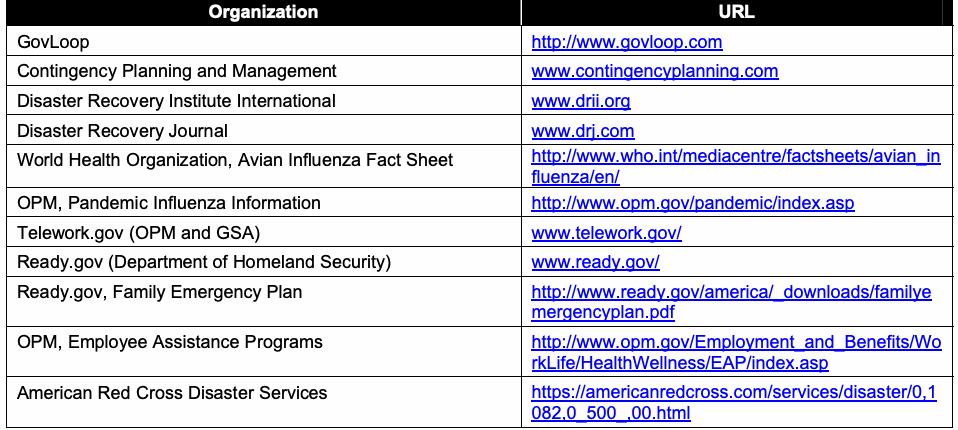
| 組織 | URL |
| GovLoop | http://www.govloop.com |
| 緊急時対応計画と管理 | www.contingencyplanning.com |
| Disaster Recovery Institute International | www.drii.org |
| Disaster Recovery Journal | www.drj.com |
| 世界保健機関、鳥インフルエンザ・ファクトシート | http://www.who.int/mediacentre/factsheets/avian_influenza/en/ |
| OPM、パンデミックインフルエンザ情報 | http://www.opm.gov/pandemic/index.asp |
| Telework.gov（OPM、GSA） | www.telework.gov/ |
| Ready.gov（国土安全保障省） | www.ready.gov/ |
| Ready.gov、家族向け緊急時対応計画 | http://www.ready.gov/america/_downloads/familyemergencyplan.pdf |
| OPM、従業員支援プログラム | http://www.opm.gov/Employment_and_Benefits/WorkLife/HealthWellness/EAP/index.asp |
| 米国赤十字社、災害サービス | https://americanredcross.com/services/disaster/0,1082,0_500_,00.html |
APPENDIX I
付録I
未レビュー訳I-2
I-2
未レビュー訳